<!DOCTYPE html>


<html lang="en" data-content_root="./" >

  <head>
    <meta charset="utf-8" />
    <meta name="viewport" content="width=device-width, initial-scale=1.0" /><meta name="viewport" content="width=device-width, initial-scale=1" />

    <title>Logistic management desde python y google colab &#8212; My Jupyter Book</title>
  
  
  
  <script data-cfasync="false">
    document.documentElement.dataset.mode = localStorage.getItem("mode") || "";
    document.documentElement.dataset.theme = localStorage.getItem("theme") || "";
  </script>
  
  <!-- Loaded before other Sphinx assets -->
  <link href="_static/styles/theme.css?digest=dfe6caa3a7d634c4db9b" rel="stylesheet" />
<link href="_static/styles/bootstrap.css?digest=dfe6caa3a7d634c4db9b" rel="stylesheet" />
<link href="_static/styles/pydata-sphinx-theme.css?digest=dfe6caa3a7d634c4db9b" rel="stylesheet" />

  
  <link href="_static/vendor/fontawesome/6.5.2/css/all.min.css?digest=dfe6caa3a7d634c4db9b" rel="stylesheet" />
  <link rel="preload" as="font" type="font/woff2" crossorigin href="_static/vendor/fontawesome/6.5.2/webfonts/fa-solid-900.woff2" />
<link rel="preload" as="font" type="font/woff2" crossorigin href="_static/vendor/fontawesome/6.5.2/webfonts/fa-brands-400.woff2" />
<link rel="preload" as="font" type="font/woff2" crossorigin href="_static/vendor/fontawesome/6.5.2/webfonts/fa-regular-400.woff2" />

    <link rel="stylesheet" type="text/css" href="_static/pygments.css?v=fa44fd50" />
    <link rel="stylesheet" type="text/css" href="_static/styles/sphinx-book-theme.css?v=a3416100" />
    <link rel="stylesheet" type="text/css" href="_static/togglebutton.css?v=13237357" />
    <link rel="stylesheet" type="text/css" href="_static/copybutton.css?v=76b2166b" />
    <link rel="stylesheet" type="text/css" href="_static/mystnb.4510f1fc1dee50b3e5859aac5469c37c29e427902b24a333a5f9fcb2f0b3ac41.css" />
    <link rel="stylesheet" type="text/css" href="_static/sphinx-thebe.css?v=4fa983c6" />
    <link rel="stylesheet" type="text/css" href="_static/sphinx-design.min.css?v=95c83b7e" />
  
  <!-- Pre-loaded scripts that we'll load fully later -->
  <link rel="preload" as="script" href="_static/scripts/bootstrap.js?digest=dfe6caa3a7d634c4db9b" />
<link rel="preload" as="script" href="_static/scripts/pydata-sphinx-theme.js?digest=dfe6caa3a7d634c4db9b" />
  <script src="_static/vendor/fontawesome/6.5.2/js/all.min.js?digest=dfe6caa3a7d634c4db9b"></script>

    <script src="_static/documentation_options.js?v=9eb32ce0"></script>
    <script src="_static/doctools.js?v=9a2dae69"></script>
    <script src="_static/sphinx_highlight.js?v=dc90522c"></script>
    <script src="_static/clipboard.min.js?v=a7894cd8"></script>
    <script src="_static/copybutton.js?v=f281be69"></script>
    <script src="_static/scripts/sphinx-book-theme.js?v=887ef09a"></script>
    <script>let toggleHintShow = 'Click to show';</script>
    <script>let toggleHintHide = 'Click to hide';</script>
    <script>let toggleOpenOnPrint = 'true';</script>
    <script src="_static/togglebutton.js?v=4a39c7ea"></script>
    <script>var togglebuttonSelector = '.toggle, .admonition.dropdown';</script>
    <script src="_static/design-tabs.js?v=f930bc37"></script>
    <script>const THEBE_JS_URL = "https://unpkg.com/thebe@0.8.2/lib/index.js"; const thebe_selector = ".thebe,.cell"; const thebe_selector_input = "pre"; const thebe_selector_output = ".output, .cell_output"</script>
    <script async="async" src="_static/sphinx-thebe.js?v=c100c467"></script>
    <script>var togglebuttonSelector = '.toggle, .admonition.dropdown';</script>
    <script>const THEBE_JS_URL = "https://unpkg.com/thebe@0.8.2/lib/index.js"; const thebe_selector = ".thebe,.cell"; const thebe_selector_input = "pre"; const thebe_selector_output = ".output, .cell_output"</script>
    <script>window.MathJax = {"options": {"processHtmlClass": "tex2jax_process|mathjax_process|math|output_area"}}</script>
    <script defer="defer" src="https://cdn.jsdelivr.net/npm/mathjax@3/es5/tex-mml-chtml.js"></script>
    <script>DOCUMENTATION_OPTIONS.pagename = 'Logistic_notebookv1.0';</script>
    <link rel="index" title="Index" href="genindex.html" />
    <link rel="search" title="Search" href="search.html" />
  <meta name="viewport" content="width=device-width, initial-scale=1"/>
  <meta name="docsearch:language" content="en"/>
  </head>
  
  
  <body data-bs-spy="scroll" data-bs-target=".bd-toc-nav" data-offset="180" data-bs-root-margin="0px 0px -60%" data-default-mode="">

  
  
  <div id="pst-skip-link" class="skip-link d-print-none"><a href="#main-content">Skip to main content</a></div>
  
  <div id="pst-scroll-pixel-helper"></div>
  
  <button type="button" class="btn rounded-pill" id="pst-back-to-top">
    <i class="fa-solid fa-arrow-up"></i>Back to top</button>

  
  <input type="checkbox"
          class="sidebar-toggle"
          id="pst-primary-sidebar-checkbox"/>
  <label class="overlay overlay-primary" for="pst-primary-sidebar-checkbox"></label>
  
  <input type="checkbox"
          class="sidebar-toggle"
          id="pst-secondary-sidebar-checkbox"/>
  <label class="overlay overlay-secondary" for="pst-secondary-sidebar-checkbox"></label>
  
  <div class="search-button__wrapper">
    <div class="search-button__overlay"></div>
    <div class="search-button__search-container">
<form class="bd-search d-flex align-items-center"
      action="search.html"
      method="get">
  <i class="fa-solid fa-magnifying-glass"></i>
  <input type="search"
         class="form-control"
         name="q"
         id="search-input"
         placeholder="Search this book..."
         aria-label="Search this book..."
         autocomplete="off"
         autocorrect="off"
         autocapitalize="off"
         spellcheck="false"/>
  <span class="search-button__kbd-shortcut"><kbd class="kbd-shortcut__modifier">Ctrl</kbd>+<kbd>K</kbd></span>
</form></div>
  </div>

  <div class="pst-async-banner-revealer d-none">
  <aside id="bd-header-version-warning" class="d-none d-print-none" aria-label="Version warning"></aside>
</div>

  
    <header class="bd-header navbar navbar-expand-lg bd-navbar d-print-none">
    </header>
  

  <div class="bd-container">
    <div class="bd-container__inner bd-page-width">
      
      
      
        
      
      <div class="bd-sidebar-primary bd-sidebar">
        

  
  <div class="sidebar-header-items sidebar-primary__section">
    
    
    
    
  </div>
  
    <div class="sidebar-primary-items__start sidebar-primary__section">
        <div class="sidebar-primary-item">

  
    
  

<a class="navbar-brand logo" href="#">
  
  
  
  
  
  
    <p class="title logo__title">My Jupyter Book</p>
  
</a></div>
        <div class="sidebar-primary-item">

 <script>
 document.write(`
   <button class="btn search-button-field search-button__button" title="Search" aria-label="Search" data-bs-placement="bottom" data-bs-toggle="tooltip">
    <i class="fa-solid fa-magnifying-glass"></i>
    <span class="search-button__default-text">Search</span>
    <span class="search-button__kbd-shortcut"><kbd class="kbd-shortcut__modifier">Ctrl</kbd>+<kbd class="kbd-shortcut__modifier">K</kbd></span>
   </button>
 `);
 </script></div>
        <div class="sidebar-primary-item"><nav class="bd-links bd-docs-nav" aria-label="Main">
    <div class="bd-toc-item navbar-nav active">
        
        <ul class="nav bd-sidenav bd-sidenav__home-link">
            <li class="toctree-l1 current active">
                <a class="reference internal" href="#">
                    Logistic management desde python y google colab
                </a>
            </li>
        </ul>
        
    </div>
</nav></div>
    </div>
  
  
  <div class="sidebar-primary-items__end sidebar-primary__section">
  </div>
  
  <div id="rtd-footer-container"></div>


      </div>
      
      <main id="main-content" class="bd-main" role="main">
        
        

<div class="sbt-scroll-pixel-helper"></div>

          <div class="bd-content">
            <div class="bd-article-container">
              
              <div class="bd-header-article d-print-none">
<div class="header-article-items header-article__inner">
  
    <div class="header-article-items__start">
      
        <div class="header-article-item"><button class="sidebar-toggle primary-toggle btn btn-sm" title="Toggle primary sidebar" data-bs-placement="bottom" data-bs-toggle="tooltip">
  <span class="fa-solid fa-bars"></span>
</button></div>
      
    </div>
  
  
    <div class="header-article-items__end">
      
        <div class="header-article-item">

<div class="article-header-buttons">


<div class="dropdown dropdown-download-buttons">
  <button class="btn dropdown-toggle" type="button" data-bs-toggle="dropdown" aria-expanded="false" aria-label="Download this page">
    <i class="fas fa-download"></i>
  </button>
  <ul class="dropdown-menu">
      
      
      
      <li><a href="_sources/Logistic_notebookv1.0.ipynb" target="_blank"
   class="btn btn-sm btn-download-source-button dropdown-item"
   title="Download source file"
   data-bs-placement="left" data-bs-toggle="tooltip"
>
  

<span class="btn__icon-container">
  <i class="fas fa-file"></i>
  </span>
<span class="btn__text-container">.ipynb</span>
</a>
</li>
      
      
      
      
      <li>
<button onclick="window.print()"
  class="btn btn-sm btn-download-pdf-button dropdown-item"
  title="Print to PDF"
  data-bs-placement="left" data-bs-toggle="tooltip"
>
  

<span class="btn__icon-container">
  <i class="fas fa-file-pdf"></i>
  </span>
<span class="btn__text-container">.pdf</span>
</button>
</li>
      
  </ul>
</div>


<button onclick="toggleFullScreen()"
  class="btn btn-sm btn-fullscreen-button"
  title="Fullscreen mode"
  data-bs-placement="bottom" data-bs-toggle="tooltip"
>
  

<span class="btn__icon-container">
  <i class="fas fa-expand"></i>
  </span>

</button>


<script>
document.write(`
  <button class="btn btn-sm nav-link pst-navbar-icon theme-switch-button" title="light/dark" aria-label="light/dark" data-bs-placement="bottom" data-bs-toggle="tooltip">
    <i class="theme-switch fa-solid fa-sun fa-lg" data-mode="light"></i>
    <i class="theme-switch fa-solid fa-moon fa-lg" data-mode="dark"></i>
    <i class="theme-switch fa-solid fa-circle-half-stroke fa-lg" data-mode="auto"></i>
  </button>
`);
</script>


<script>
document.write(`
  <button class="btn btn-sm pst-navbar-icon search-button search-button__button" title="Search" aria-label="Search" data-bs-placement="bottom" data-bs-toggle="tooltip">
    <i class="fa-solid fa-magnifying-glass fa-lg"></i>
  </button>
`);
</script>
<button class="sidebar-toggle secondary-toggle btn btn-sm" title="Toggle secondary sidebar" data-bs-placement="bottom" data-bs-toggle="tooltip">
    <span class="fa-solid fa-list"></span>
</button>
</div></div>
      
    </div>
  
</div>
</div>
              
              

<div id="jb-print-docs-body" class="onlyprint">
    <h1>Logistic management desde python y google colab</h1>
    <!-- Table of contents -->
    <div id="print-main-content">
        <div id="jb-print-toc">
            
            <div>
                <h2> Contents </h2>
            </div>
            <nav aria-label="Page">
                <ul class="visible nav section-nav flex-column">
<li class="toc-h1 nav-item toc-entry"><a class="reference internal nav-link" href="#">Logistic management desde python y google colab</a></li>
<li class="toc-h1 nav-item toc-entry"><a class="reference internal nav-link" href="#unidad-cero-componentes-tipicos-de-la-logistica">Unidad Cero: Componentes tipicos de la Logistica:</a><ul class="visible nav section-nav flex-column">
<li class="toc-h2 nav-item toc-entry"><a class="reference internal nav-link" href="#cual-es-la-mision-de-la-logistica">¿Cual es la mision de la logistica?:</a></li>
</ul>
</li>
<li class="toc-h1 nav-item toc-entry"><a class="reference internal nav-link" href="#unidad-uno-servicio-al-cliente">Unidad uno: Servicio Al CLiente</a><ul class="visible nav section-nav flex-column">
<li class="toc-h2 nav-item toc-entry"><a class="reference internal nav-link" href="#enfoque-en-el-servicio-al-cliente">Enfoque en el Servicio al Cliente:</a><ul class="nav section-nav flex-column">
<li class="toc-h3 nav-item toc-entry"><a class="reference internal nav-link" href="#que-es-el-servicio-al-cliente-en-el-contexto-de-la-logistica">Qué es el servicio al cliente en el contexto de la logística.</a></li>
<li class="toc-h3 nav-item toc-entry"><a class="reference internal nav-link" href="#objetivos-clave-del-servicio-al-cliente">Objetivos clave del servicio al cliente</a></li>
<li class="toc-h3 nav-item toc-entry"><a class="reference internal nav-link" href="#como-se-mide-la-satisfaccion-del-cliente-en-una-empresa">¿Cómo se mide la satisfacción del cliente en una empresa?</a></li>
</ul>
</li>
</ul>
</li>
<li class="toc-h1 nav-item toc-entry"><a class="reference internal nav-link" href="#unidad-dos-modelos-de-inventario-deterministicos">Unidad Dos: Modelos de inventario Deterministicos:</a><ul class="visible nav section-nav flex-column">
<li class="toc-h2 nav-item toc-entry"><a class="reference internal nav-link" href="#definicion-de-modelos-de-inventario">Definicion de modelos de inventario</a></li>
<li class="toc-h2 nav-item toc-entry"><a class="reference internal nav-link" href="#google-colab-y-los-modelos-de-inventarios">Google colab y los modelos de inventarios:</a></li>
<li class="toc-h2 nav-item toc-entry"><a class="reference internal nav-link" href="#empezaremos-por-el-modelo-eoq-tambien-llamado-modelos-estaticos">empezaremos por el modelo EOQ tambien llamado modelos estaticos.</a><ul class="nav section-nav flex-column">
<li class="toc-h3 nav-item toc-entry"><a class="reference internal nav-link" href="#rol-roq-lead-time-y-safety-stock-en-los-modelos-de-inventarios-deterministicos">ROL/ROQ , Lead time y Safety stock en los modelos de inventarios Deterministicos.</a></li>
</ul>
</li>
<li class="toc-h2 nav-item toc-entry"><a class="reference internal nav-link" href="#ejemplo-numero-uno">Ejemplo numero uno:</a><ul class="nav section-nav flex-column">
<li class="toc-h3 nav-item toc-entry"><a class="reference internal nav-link" href="#intentemos-graficar-el-comportamiento-de-un-inventario-en-el-tiempo-usando-colab">Intentemos graficar el comportamiento de un inventario en el tiempo usando colab</a></li>
</ul>
</li>
<li class="toc-h2 nav-item toc-entry"><a class="reference internal nav-link" href="#ejercicios-de-practica-del-modelo-de-inventario">Ejercicios de Practica del modelo de inventario</a></li>
<li class="toc-h2 nav-item toc-entry"><a class="reference internal nav-link" href="#ejercicios-eoq">Ejercicios EOQ</a><ul class="nav section-nav flex-column">
<li class="toc-h3 nav-item toc-entry"><a class="reference internal nav-link" href="#ejercicio-numero-1">Ejercicio Numero 1</a></li>
<li class="toc-h3 nav-item toc-entry"><a class="reference internal nav-link" href="#ejercicio-numero-2">Ejercicio Numero 2</a></li>
<li class="toc-h3 nav-item toc-entry"><a class="reference internal nav-link" href="#ejercicio-numero-3">Ejercicio Numero 3</a></li>
<li class="toc-h3 nav-item toc-entry"><a class="reference internal nav-link" href="#ejercicio-numero-4">Ejercicio Numero 4</a></li>
<li class="toc-h3 nav-item toc-entry"><a class="reference internal nav-link" href="#ejercicio-numero-5">Ejercicio Numero 5</a></li>
<li class="toc-h3 nav-item toc-entry"><a class="reference internal nav-link" href="#ejercicio-numero-6">Ejercicio Numero 6</a></li>
<li class="toc-h3 nav-item toc-entry"><a class="reference internal nav-link" href="#ejercicio-numero-7">Ejercicio Numero 7</a></li>
<li class="toc-h3 nav-item toc-entry"><a class="reference internal nav-link" href="#ejercicio-numero-8">Ejercicio Numero 8</a></li>
<li class="toc-h3 nav-item toc-entry"><a class="reference internal nav-link" href="#ejercicio-de-inventario-con-modelamiento-matematico-en-python">Ejercicio de inventario con modelamiento matematico en python</a></li>
</ul>
</li>
<li class="toc-h2 nav-item toc-entry"><a class="reference internal nav-link" href="#epq-model">EPQ Model</a><ul class="nav section-nav flex-column">
<li class="toc-h3 nav-item toc-entry"><a class="reference internal nav-link" href="#ejemplo-epq">Ejemplo EPQ</a></li>
<li class="toc-h3 nav-item toc-entry"><a class="reference internal nav-link" href="#gestion-de-inventarios-y-abastecimiento">gestion de inventarios y abastecimiento:</a></li>
</ul>
</li>
</ul>
</li>
<li class="toc-h1 nav-item toc-entry"><a class="reference internal nav-link" href="#unidad-tres-modelos-de-transporte">Unidad tres: Modelos de Transporte</a><ul class="visible nav section-nav flex-column">
<li class="toc-h2 nav-item toc-entry"><a class="reference internal nav-link" href="#variables-de-decision-clave">Variables de Decisión Clave</a></li>
<li class="toc-h2 nav-item toc-entry"><a class="reference internal nav-link" href="#representacion-grafica-de-los-modelos-de-transporte-en-progranacion-lineal">Representacion grafica de los modelos de transporte en Progranacion lineal</a></li>
<li class="toc-h2 nav-item toc-entry"><a class="reference internal nav-link" href="#principio-de-nivelacion">Principio de nivelacion:</a></li>
<li class="toc-h2 nav-item toc-entry"><a class="reference internal nav-link" href="#definicion-del-modelo-de-transporte"><strong>Definicion del modelo de Transporte:</strong></a><ul class="nav section-nav flex-column">
<li class="toc-h3 nav-item toc-entry"><a class="reference internal nav-link" href="#diseno-de-rutas-con-python">Diseño de rutas con python</a><ul class="nav section-nav flex-column">
<li class="toc-h4 nav-item toc-entry"><a class="reference internal nav-link" href="#objetivo-de-disenar-una-ruta">Objetivo de diseñar una ruta</a></li>
<li class="toc-h4 nav-item toc-entry"><a class="reference internal nav-link" href="#modelos-de-rutas">Modelos de rutas:</a></li>
</ul>
</li>
<li class="toc-h3 nav-item toc-entry"><a class="reference internal nav-link" href="#ejemplo-1">Ejemplo 1:</a></li>
<li class="toc-h3 nav-item toc-entry"><a class="reference internal nav-link" href="#ejemplo-2">Ejemplo 2:</a></li>
<li class="toc-h3 nav-item toc-entry"><a class="reference internal nav-link" href="#ejercicios-de-la-unidad-tres">Ejercicios de la Unidad Tres.</a></li>
<li class="toc-h3 nav-item toc-entry"><a class="reference internal nav-link" href="#ejercicio-numero-6-del-libro-hamndy-taha-investigacion-de-operaciones-capituo-5">Ejercicio numero 6 del libro hamndy taha - investigacion de operaciones capituo 5</a></li>
<li class="toc-h3 nav-item toc-entry"><a class="reference internal nav-link" href="#modelo-algebraico">Modelo Algebraico</a><ul class="nav section-nav flex-column">
<li class="toc-h4 nav-item toc-entry"><a class="reference internal nav-link" href="#solucion-a-los-ejercicios">Solucion a los ejercicios:</a><ul class="nav section-nav flex-column">
<li class="toc-h5 nav-item toc-entry"><a class="reference internal nav-link" href="#ejercicio-numero-uno">Ejercicio numero uno:</a></li>
<li class="toc-h5 nav-item toc-entry"><a class="reference internal nav-link" href="#ejercicio-numero-dos">Ejercicio Numero Dos</a></li>
<li class="toc-h5 nav-item toc-entry"><a class="reference internal nav-link" href="#ejercicio-numero-tres">Ejercicio numero Tres</a></li>
<li class="toc-h5 nav-item toc-entry"><a class="reference internal nav-link" href="#ejercicio-numero-cuatro">Ejercicio Numero Cuatro</a></li>
<li class="toc-h5 nav-item toc-entry"><a class="reference internal nav-link" href="#ejercicio-numero-cinco">Ejercicio Numero Cinco</a></li>
</ul>
</li>
</ul>
</li>
</ul>
</li>
<li class="toc-h2 nav-item toc-entry"><a class="reference internal nav-link" href="#vrp-vehicle-routing-problems">VRP. Vehicle Routing Problems</a><ul class="nav section-nav flex-column">
<li class="toc-h3 nav-item toc-entry"><a class="reference internal nav-link" href="#modelo-teorico-del-vrp">Modelo Teórico del VRP:</a><ul class="nav section-nav flex-column">
<li class="toc-h4 nav-item toc-entry"><a class="reference internal nav-link" href="#datos-del-problema">Datos del Problema:</a></li>
<li class="toc-h4 nav-item toc-entry"><a class="reference internal nav-link" href="#variables-de-decision">Variables de Decisión:</a></li>
<li class="toc-h4 nav-item toc-entry"><a class="reference internal nav-link" href="#funcion-objetivo">Función Objetivo:</a></li>
<li class="toc-h4 nav-item toc-entry"><a class="reference internal nav-link" href="#restricciones">Restricciones:</a></li>
</ul>
</li>
<li class="toc-h3 nav-item toc-entry"><a class="reference internal nav-link" href="#ejemplo-de-vrp-clasico">Ejemplo de VRP Clasico</a></li>
</ul>
</li>
<li class="toc-h2 nav-item toc-entry"><a class="reference internal nav-link" href="#el-modelo-de-transbordo">El modelo de Transbordo</a><ul class="nav section-nav flex-column">
<li class="toc-h3 nav-item toc-entry"><a class="reference internal nav-link" href="#almacenamiento-en-bodegas-o-cedis">Almacenamiento en Bodegas o CEDIS</a><ul class="nav section-nav flex-column">
<li class="toc-h4 nav-item toc-entry"><a class="reference internal nav-link" href="#definiciones">Definiciones:</a></li>
<li class="toc-h4 nav-item toc-entry"><a class="reference internal nav-link" href="#sistemas-de-alamcenamiento-en-cedis">Sistemas de Alamcenamiento en CEDIS</a></li>
</ul>
</li>
<li class="toc-h3 nav-item toc-entry"><a class="reference internal nav-link" href="#modelos-para-solucionar-los-problemas-de-asignacion-y-transporte">Modelos para solucionar los problemas de asignacion y transporte</a><ul class="nav section-nav flex-column">
<li class="toc-h4 nav-item toc-entry"><a class="reference internal nav-link" href="#pasos-del-metodo-de-asignacion">Pasos del método de asignación:</a></li>
</ul>
</li>
</ul>
</li>
<li class="toc-h2 nav-item toc-entry"><a class="reference internal nav-link" href="#modelo-de-redes">Modelo de redes</a></li>
<li class="toc-h2 nav-item toc-entry"><a class="reference internal nav-link" href="#altogoritmo-de-arbol-de-expansion-minima">Altogoritmo de Arbol de expansion Minima</a><ul class="nav section-nav flex-column">
<li class="toc-h3 nav-item toc-entry"><a class="reference internal nav-link" href="#modelo-teorico-segun-el-algoritmo-de-prim">Modelo Teórico según el Algoritmo de Prim:</a></li>
<li class="toc-h3 nav-item toc-entry"><a class="reference internal nav-link" href="#modelo-teorico-segun-el-altgoritmo-de-kruskal">Modelo Teórico según el Altgoritmo de Kruskal:</a></li>
</ul>
</li>
</ul>
</li>
<li class="toc-h1 nav-item toc-entry"><a class="reference internal nav-link" href="#unidad-cuatro-modelos-de-localizacion">Unidad Cuatro: Modelos de Localizacion</a><ul class="visible nav section-nav flex-column">
<li class="toc-h2 nav-item toc-entry"><a class="reference internal nav-link" href="#definicion-de-modelos-de-localizacion">Definicion de modelos de localizacion</a></li>
<li class="toc-h2 nav-item toc-entry"><a class="reference internal nav-link" href="#localizacion-de-planta">localización de planta</a></li>
<li class="toc-h2 nav-item toc-entry"><a class="reference internal nav-link" href="#metodo-grafico-de-localizacion">Metodo grafico de localizacion</a></li>
</ul>
</li>
<li class="toc-h1 nav-item toc-entry"><a class="reference internal nav-link" href="#unidad-cinco-supply-chain-models-and-methods">Unidad Cinco: supply chain models and methods.</a></li>
<li class="toc-h1 nav-item toc-entry"><a class="reference internal nav-link" href="#unidad-seis-diseno-y-medicion-de-la-cadena-logistica">Unidad Seis: Diseño y medicion de la cadena logistica</a><ul class="visible nav section-nav flex-column">
<li class="toc-h2 nav-item toc-entry"><a class="reference internal nav-link" href="#deficiones">Deficiones</a></li>
<li class="toc-h2 nav-item toc-entry"><a class="reference internal nav-link" href="#aproximacion-de-la-medicion-de-la-cadena-de-suministro-con-la-planificacion-de-produccion-agregada">aproximacion de la medicion de la cadena de suministro con la Planificación de producción agregada</a></li>
<li class="toc-h2 nav-item toc-entry"><a class="reference internal nav-link" href="#modelos-especiales">Modelos especiales</a><ul class="nav section-nav flex-column">
<li class="toc-h3 nav-item toc-entry"><a class="reference internal nav-link" href="#modelo-interactivo-eoq">Modelo Interactivo EOQ</a></li>
<li class="toc-h3 nav-item toc-entry"><a class="reference internal nav-link" href="#modelo-interactivo-poq-python">modelo interactivo POQ - python</a></li>
<li class="toc-h3 nav-item toc-entry"><a class="reference internal nav-link" href="#modelo-de-asignacion-de-rutas-aleatorias">Modelo de asignacion de rutas aleatorias</a></li>
</ul>
</li>
</ul>
</li>
</ul>

            </nav>
        </div>
    </div>
</div>

              
                
<div id="searchbox"></div>
                <article class="bd-article">
                  
  <div class="cell docutils container">
<div class="cell_input docutils container">
<div class="highlight-ipython3 notranslate"><div class="highlight"><pre><span></span><span class="kn">from</span> <span class="nn">google.colab</span> <span class="kn">import</span> <span class="n">drive</span>
<span class="n">drive</span><span class="o">.</span><span class="n">mount</span><span class="p">(</span><span class="s1">&#39;/content/drive&#39;</span><span class="p">)</span>
</pre></div>
</div>
</div>
<div class="cell_output docutils container">
<div class="output traceback highlight-ipythontb notranslate"><div class="highlight"><pre><span></span><span class="gt">---------------------------------------------------------------------------</span>
<span class="ne">ModuleNotFoundError</span><span class="g g-Whitespace">                       </span>Traceback (most recent call last)
<span class="n">Cell</span> <span class="n">In</span><span class="p">[</span><span class="mi">1</span><span class="p">],</span> <span class="n">line</span> <span class="mi">1</span>
<span class="ne">----&gt; </span><span class="mi">1</span> <span class="kn">from</span> <span class="nn">google.colab</span> <span class="kn">import</span> <span class="n">drive</span>
<span class="g g-Whitespace">      </span><span class="mi">2</span> <span class="n">drive</span><span class="o">.</span><span class="n">mount</span><span class="p">(</span><span class="s1">&#39;/content/drive&#39;</span><span class="p">)</span>

<span class="ne">ModuleNotFoundError</span>: No module named &#39;google&#39;
</pre></div>
</div>
</div>
</div>
<section id="logistic-management-desde-python-y-google-colab">
<h1>Logistic management desde python y google colab<a class="headerlink" href="#logistic-management-desde-python-y-google-colab" title="Link to this heading">#</a></h1>
<hr class="docutils" />
<p><span class="math notranslate nohighlight">\(Docente:\ Cristian\ Javier\ Cano\ M\)</span><br />
<span class="math notranslate nohighlight">\(msc\ innovacion\ y\ desarrollo\)</span></p>
</section>
<section class="tex2jax_ignore mathjax_ignore" id="unidad-cero-componentes-tipicos-de-la-logistica">
<h1>Unidad Cero: Componentes tipicos de la Logistica:<a class="headerlink" href="#unidad-cero-componentes-tipicos-de-la-logistica" title="Link to this heading">#</a></h1>
<p>Un sistema logístico típico se compone de varios elementos clave que trabajan en conjunto para garantizar que los productos lleguen al cliente final de manera eficiente y a tiempo. Estos son algunos de los componentes más comunes:</p>
<ol class="arabic simple">
<li><p><strong>Servicio al cliente:</strong></p></li>
</ol>
<p>Este componente se centra en satisfacer las necesidades y expectativas del cliente.
Incluye aspectos como la atención al cliente, la gestión de pedidos, la resolución de problemas y la comunicación efectiva.
2. <strong>Gestión de la demanda:</strong></p>
<p>Implica predecir y planificar la demanda de productos para asegurar que se tenga el inventario adecuado en el momento adecuado.
Se utilizan herramientas como el análisis de datos y la previsión de la demanda.
3. Procesamiento de pedidos:</p>
<p>Abarca todas las actividades relacionadas con la recepción, verificación, preparación y envío de los pedidos.
La eficiencia en este proceso es fundamental para la satisfacción del cliente.
4. <strong>Gestión de inventario:</strong></p>
<p>Se encarga de controlar y optimizar los niveles de inventario para minimizar costos y garantizar la disponibilidad de los productos.
Incluye el seguimiento del inventario, la gestión de almacenes y la planificación del reabastecimiento.
5. <strong>Transporte:</strong></p>
<p>Es el componente responsable del movimiento físico de los productos a través de la cadena de suministro.
Incluye la selección del medio de transporte adecuado (terrestre, marítimo, aéreo), la planificación de rutas y la gestión de la flota.
6. <strong>Almacenamiento:</strong></p>
<p>Proporciona el espacio físico para guardar los productos de forma segura y eficiente.
Involucra la gestión de almacenes, el control de la ubicación del inventario y la optimización del espacio.
7. <strong>Manejo de materiales:</strong></p>
<p>Se refiere al movimiento de los productos dentro del almacén, como la recepción, el almacenamiento, la preparación de pedidos y el despacho.
Se utilizan equipos y tecnologías como carretillas elevadoras, sistemas de transporte y robots.
8. <strong>Embalaje:</strong></p>
<p>Protege los productos durante el transporte y el almacenamiento.
Incluye la selección de los materiales de embalaje adecuados, el diseño del embalaje y el etiquetado.
9. <strong>Control de calidad:</strong></p>
<p>Garantiza que los productos cumplan con los estándares de calidad establecidos.
Incluye la inspección de los productos, las pruebas de calidad y la gestión de devoluciones.</p>
<p>Modelos matematicos segun la etapa del proceso logistico</p>
<p>1.* Modelos matemáticos en la etapa de aprovisionamiento:* En esta etapa, los modelos matemáticos más utilizados son los modelos de inventario, que se utilizan para determinar la cantidad óptima de inventario a mantener y cuándo realizar pedidos. También se utilizan modelos de compra óptima y modelos de selección de proveedores para tomar decisiones de compra estratégicas.</p>
<ol class="arabic simple" start="2">
<li><p><strong>Modelos matemáticos en la etapa de producción:</strong> En esta etapa, se utilizan modelos de programación lineal para optimizar la planificación de la producción, incluyendo la asignación de recursos, la programación de la producción y la gestión de la capacidad.</p></li>
<li><p><strong>Modelos matemáticos en la etapa de almacenamiento:</strong> En esta etapa, se utilizan modelos de diseño y gestión de almacenes para determinar la ubicación óptima de los almacenes, el tamaño óptimo del almacén y la disposición óptima de los productos en el almacén. También se utilizan modelos de gestión de inventario para optimizar el nivel de inventario en el almacén.</p></li>
<li><p><strong>Modelos matemáticos en la etapa de transporte:</strong> En esta etapa, se utilizan modelos de optimización de rutas para determinar la ruta óptima de entrega, la asignación de vehículos y la programación de los horarios de entrega. También se utilizan modelos de asignación de recursos para optimizar la utilización de los recursos de transporte.</p></li>
<li><p><strong>Modelos matemáticos en la etapa de distribución:</strong> En esta etapa, se utilizan modelos de optimización de la cadena de suministro para optimizar el flujo de productos y la coordinación entre los diferentes actores de la cadena de suministro. También se utilizan modelos de planificación de la demanda para predecir la demanda futura y tomar decisiones de producción y distribución en consecuencia.</p></li>
</ol>
<section id="cual-es-la-mision-de-la-logistica">
<h2>¿Cual es la mision de la logistica?:<a class="headerlink" href="#cual-es-la-mision-de-la-logistica" title="Link to this heading">#</a></h2>
<p>La misión de la logística puede resumirse en planificar, implementar y controlar el flujo eficiente y efectivo de bienes, servicios e información relacionada desde el punto de origen hasta el punto de consumo para satisfacer las necesidades de los clientes.</p>
<p>Esta misión implica:</p>
<p>Entregar el producto adecuado: Asegurar que el producto o servicio correcto llegue al cliente.
En la cantidad adecuada: Proporcionar la cantidad exacta de producto que el cliente necesita.
En el lugar adecuado: Hacer llegar el producto al destino correcto.
En el momento adecuado: Entregar el producto en el tiempo acordado.
En las condiciones adecuadas: Asegurar que el producto llegue en perfecto estado.
Al coste adecuado: Optimizar los costos de la cadena de suministro para ofrecer precios competitivos y rentabilidad.</p>
</section>
</section>
<section class="tex2jax_ignore mathjax_ignore" id="unidad-uno-servicio-al-cliente">
<h1>Unidad uno: Servicio Al CLiente<a class="headerlink" href="#unidad-uno-servicio-al-cliente" title="Link to this heading">#</a></h1>
<hr class="docutils" />
<section id="enfoque-en-el-servicio-al-cliente">
<h2>Enfoque en el Servicio al Cliente:<a class="headerlink" href="#enfoque-en-el-servicio-al-cliente" title="Link to this heading">#</a></h2>
<ul class="simple">
<li><p>Definir qué es el servicio al cliente en el contexto de la logística.</p></li>
<li><p>Explicar los diferentes aspectos del servicio al cliente, como tiempo de entrega, confiabilidad, comunicación, etc.</p></li>
<li><p>Mostrar cómo Python puede ayudar a medir y mejorar el servicio al cliente.</p></li>
</ul>
<section id="que-es-el-servicio-al-cliente-en-el-contexto-de-la-logistica">
<h3>Qué es el servicio al cliente en el contexto de la logística.<a class="headerlink" href="#que-es-el-servicio-al-cliente-en-el-contexto-de-la-logistica" title="Link to this heading">#</a></h3>
<p>Definición de servicio al cliente
El servicio al cliente se refiere al conjunto de actividades, procesos y estrategias que una empresa o negocio implementa para satisfacer las necesidades y expectativas de sus clientes. Implica brindar asistencia, soporte y una experiencia positiva a los clientes antes, durante y después de una venta o interacción.</p>
</section>
<section id="objetivos-clave-del-servicio-al-cliente">
<h3>Objetivos clave del servicio al cliente<a class="headerlink" href="#objetivos-clave-del-servicio-al-cliente" title="Link to this heading">#</a></h3>
<ol class="arabic simple">
<li><p>Comprender y atender las necesidades de los clientes de manera efectiva</p></li>
<li><p>Resolver problemas, quejas y consultas de manera oportuna y eficiente</p></li>
<li><p>Crear relaciones duraderas y de confianza con los clientes</p></li>
<li><p>Superar las expectativas de los clientes y generar lealtad hacia la marca</p></li>
<li><p>Diferenciarse de la competencia a través de un servicio excepcional</p></li>
</ol>
</section>
<section id="como-se-mide-la-satisfaccion-del-cliente-en-una-empresa">
<h3>¿Cómo se mide la satisfacción del cliente en una empresa?<a class="headerlink" href="#como-se-mide-la-satisfaccion-del-cliente-en-una-empresa" title="Link to this heading">#</a></h3>
<p>Métodos para medir la satisfacción del cliente:</p>
<ol class="arabic simple">
<li><p><strong>Encuestas de satisfacción:</strong> Estas son herramientas directas que permiten a las empresas obtener retroalimentación sobre la experiencia del cliente. Pueden incluir preguntas sobre la calidad del producto, la atención al cliente y la probabilidad de recomendar la empresa a otros.</p></li>
<li><p><strong>Análisis de comentarios en redes sociales:</strong> Evaluar las opiniones y comentarios de los clientes en plataformas sociales puede proporcionar una visión clara de su satisfacción. Este método permite identificar tendencias y áreas de mejora.</p></li>
<li><p><strong>Índice de quejas y reclamaciones:</strong> El seguimiento del número y la naturaleza de las quejas puede ayudar a las empresas a medir la satisfacción del cliente. Un aumento en las quejas puede indicar problemas en el servicio o el producto.</p></li>
<li><p><strong>Grupos de discusión (focus groups):</strong> Reunir a un grupo de clientes para discutir sus experiencias y opiniones sobre un producto o servicio puede ofrecer información valiosa sobre su satisfacción y expectativas.</p></li>
<li><p><strong>Tasa de retención y fidelización de clientes:</strong> Medir cuántos clientes regresan para realizar compras repetidas puede ser un indicador directo de su satisfacción. Un alto nivel de retención sugiere que los clientes están contentos con la oferta de la empresa.</p></li>
</ol>
<p><a class="reference external" href="https://iveconsultores.com/satisfaccion-del-cliente/">ive consultores</a></p>
<div class="cell docutils container">
<div class="cell_input docutils container">
<div class="highlight-ipython3 notranslate"><div class="highlight"><pre><span></span><span class="kn">import</span> <span class="nn">pandas</span> <span class="k">as</span> <span class="nn">pd</span>
</pre></div>
</div>
</div>
</div>
<div class="cell docutils container">
<div class="cell_input docutils container">
<div class="highlight-ipython3 notranslate"><div class="highlight"><pre><span></span><span class="n">Bd</span> <span class="o">=</span> <span class="n">pd</span><span class="o">.</span><span class="n">read_csv</span><span class="p">(</span><span class="s1">&#39;/Users/cristianjaviercanomogollon/Documents/Python_crc/libros_digitales/1_logistica/1_Servicio_al_cliente/Indice_satisfaccion_pasajeros_BD.csv&#39;</span><span class="p">)</span>
</pre></div>
</div>
</div>
</div>
<div class="cell docutils container">
<div class="cell_input docutils container">
<div class="highlight-ipython3 notranslate"><div class="highlight"><pre><span></span><span class="n">Bd</span><span class="o">.</span><span class="n">info</span><span class="p">()</span>
</pre></div>
</div>
</div>
<div class="cell_output docutils container">
<div class="output stream highlight-myst-ansi notranslate"><div class="highlight"><pre><span></span>&lt;class &#39;pandas.core.frame.DataFrame&#39;&gt;
RangeIndex: 25976 entries, 0 to 25975
Data columns (total 25 columns):
 #   Column                             Non-Null Count  Dtype  
---  ------                             --------------  -----  
 0   Unnamed: 0                         25976 non-null  int64  
 1   id                                 25976 non-null  int64  
 2   Gender                             25976 non-null  object 
 3   Customer Type                      25976 non-null  object 
 4   Age                                25976 non-null  int64  
 5   Type of Travel                     25976 non-null  object 
 6   Class                              25976 non-null  object 
 7   Flight Distance                    25976 non-null  int64  
 8   Inflight wifi service              25976 non-null  int64  
 9   Departure/Arrival time convenient  25976 non-null  int64  
 10  Ease of Online booking             25976 non-null  int64  
 11  Gate location                      25976 non-null  int64  
 12  Food and drink                     25976 non-null  int64  
 13  Online boarding                    25976 non-null  int64  
 14  Seat comfort                       25976 non-null  int64  
 15  Inflight entertainment             25976 non-null  int64  
 16  On-board service                   25976 non-null  int64  
 17  Leg room service                   25976 non-null  int64  
 18  Baggage handling                   25976 non-null  int64  
 19  Checkin service                    25976 non-null  int64  
 20  Inflight service                   25976 non-null  int64  
 21  Cleanliness                        25976 non-null  int64  
 22  Departure Delay in Minutes         25976 non-null  int64  
 23  Arrival Delay in Minutes           25893 non-null  float64
 24  satisfaction                       25976 non-null  object 
dtypes: float64(1), int64(19), object(5)
memory usage: 5.0+ MB
</pre></div>
</div>
</div>
</div>
<div class="cell docutils container">
<div class="cell_input docutils container">
<div class="highlight-ipython3 notranslate"><div class="highlight"><pre><span></span><span class="n">Bd</span><span class="o">.</span><span class="n">describe</span><span class="p">()</span>
</pre></div>
</div>
</div>
<div class="cell_output docutils container">
<div class="output text_html"><div>
<style scoped>
    .dataframe tbody tr th:only-of-type {
        vertical-align: middle;
    }

    .dataframe tbody tr th {
        vertical-align: top;
    }

    .dataframe thead th {
        text-align: right;
    }
</style>
<table border="1" class="dataframe">
  <thead>
    <tr style="text-align: right;">
      <th></th>
      <th>Unnamed: 0</th>
      <th>id</th>
      <th>Age</th>
      <th>Flight Distance</th>
      <th>Inflight wifi service</th>
      <th>Departure/Arrival time convenient</th>
      <th>Ease of Online booking</th>
      <th>Gate location</th>
      <th>Food and drink</th>
      <th>Online boarding</th>
      <th>Seat comfort</th>
      <th>Inflight entertainment</th>
      <th>On-board service</th>
      <th>Leg room service</th>
      <th>Baggage handling</th>
      <th>Checkin service</th>
      <th>Inflight service</th>
      <th>Cleanliness</th>
      <th>Departure Delay in Minutes</th>
      <th>Arrival Delay in Minutes</th>
    </tr>
  </thead>
  <tbody>
    <tr>
      <th>count</th>
      <td>25976.000000</td>
      <td>25976.000000</td>
      <td>25976.000000</td>
      <td>25976.000000</td>
      <td>25976.000000</td>
      <td>25976.000000</td>
      <td>25976.000000</td>
      <td>25976.000000</td>
      <td>25976.000000</td>
      <td>25976.000000</td>
      <td>25976.000000</td>
      <td>25976.000000</td>
      <td>25976.000000</td>
      <td>25976.000000</td>
      <td>25976.000000</td>
      <td>25976.000000</td>
      <td>25976.000000</td>
      <td>25976.000000</td>
      <td>25976.00000</td>
      <td>25893.000000</td>
    </tr>
    <tr>
      <th>mean</th>
      <td>12987.500000</td>
      <td>65005.657992</td>
      <td>39.620958</td>
      <td>1193.788459</td>
      <td>2.724746</td>
      <td>3.046812</td>
      <td>2.756775</td>
      <td>2.977094</td>
      <td>3.215353</td>
      <td>3.261665</td>
      <td>3.449222</td>
      <td>3.357753</td>
      <td>3.385664</td>
      <td>3.350169</td>
      <td>3.633238</td>
      <td>3.314175</td>
      <td>3.649253</td>
      <td>3.286226</td>
      <td>14.30609</td>
      <td>14.740857</td>
    </tr>
    <tr>
      <th>std</th>
      <td>7498.769632</td>
      <td>37611.526647</td>
      <td>15.135685</td>
      <td>998.683999</td>
      <td>1.335384</td>
      <td>1.533371</td>
      <td>1.412951</td>
      <td>1.282133</td>
      <td>1.331506</td>
      <td>1.355536</td>
      <td>1.320090</td>
      <td>1.338299</td>
      <td>1.282088</td>
      <td>1.318862</td>
      <td>1.176525</td>
      <td>1.269332</td>
      <td>1.180681</td>
      <td>1.319330</td>
      <td>37.42316</td>
      <td>37.517539</td>
    </tr>
    <tr>
      <th>min</th>
      <td>0.000000</td>
      <td>17.000000</td>
      <td>7.000000</td>
      <td>31.000000</td>
      <td>0.000000</td>
      <td>0.000000</td>
      <td>0.000000</td>
      <td>1.000000</td>
      <td>0.000000</td>
      <td>0.000000</td>
      <td>1.000000</td>
      <td>0.000000</td>
      <td>0.000000</td>
      <td>0.000000</td>
      <td>1.000000</td>
      <td>1.000000</td>
      <td>0.000000</td>
      <td>0.000000</td>
      <td>0.00000</td>
      <td>0.000000</td>
    </tr>
    <tr>
      <th>25%</th>
      <td>6493.750000</td>
      <td>32170.500000</td>
      <td>27.000000</td>
      <td>414.000000</td>
      <td>2.000000</td>
      <td>2.000000</td>
      <td>2.000000</td>
      <td>2.000000</td>
      <td>2.000000</td>
      <td>2.000000</td>
      <td>2.000000</td>
      <td>2.000000</td>
      <td>2.000000</td>
      <td>2.000000</td>
      <td>3.000000</td>
      <td>3.000000</td>
      <td>3.000000</td>
      <td>2.000000</td>
      <td>0.00000</td>
      <td>0.000000</td>
    </tr>
    <tr>
      <th>50%</th>
      <td>12987.500000</td>
      <td>65319.500000</td>
      <td>40.000000</td>
      <td>849.000000</td>
      <td>3.000000</td>
      <td>3.000000</td>
      <td>3.000000</td>
      <td>3.000000</td>
      <td>3.000000</td>
      <td>4.000000</td>
      <td>4.000000</td>
      <td>4.000000</td>
      <td>4.000000</td>
      <td>4.000000</td>
      <td>4.000000</td>
      <td>3.000000</td>
      <td>4.000000</td>
      <td>3.000000</td>
      <td>0.00000</td>
      <td>0.000000</td>
    </tr>
    <tr>
      <th>75%</th>
      <td>19481.250000</td>
      <td>97584.250000</td>
      <td>51.000000</td>
      <td>1744.000000</td>
      <td>4.000000</td>
      <td>4.000000</td>
      <td>4.000000</td>
      <td>4.000000</td>
      <td>4.000000</td>
      <td>4.000000</td>
      <td>5.000000</td>
      <td>4.000000</td>
      <td>4.000000</td>
      <td>4.000000</td>
      <td>5.000000</td>
      <td>4.000000</td>
      <td>5.000000</td>
      <td>4.000000</td>
      <td>12.00000</td>
      <td>13.000000</td>
    </tr>
    <tr>
      <th>max</th>
      <td>25975.000000</td>
      <td>129877.000000</td>
      <td>85.000000</td>
      <td>4983.000000</td>
      <td>5.000000</td>
      <td>5.000000</td>
      <td>5.000000</td>
      <td>5.000000</td>
      <td>5.000000</td>
      <td>5.000000</td>
      <td>5.000000</td>
      <td>5.000000</td>
      <td>5.000000</td>
      <td>5.000000</td>
      <td>5.000000</td>
      <td>5.000000</td>
      <td>5.000000</td>
      <td>5.000000</td>
      <td>1128.00000</td>
      <td>1115.000000</td>
    </tr>
  </tbody>
</table>
</div></div></div>
</div>
<div class="cell docutils container">
<div class="cell_input docutils container">
<div class="highlight-ipython3 notranslate"><div class="highlight"><pre><span></span><span class="nb">print</span><span class="p">(</span><span class="n">Bd</span><span class="o">.</span><span class="n">iloc</span><span class="p">[:,</span> <span class="mi">24</span><span class="p">])</span>
</pre></div>
</div>
</div>
<div class="cell_output docutils container">
<div class="output stream highlight-myst-ansi notranslate"><div class="highlight"><pre><span></span>0                      satisfied
1                      satisfied
2        neutral or dissatisfied
3                      satisfied
4                      satisfied
                  ...           
25971    neutral or dissatisfied
25972                  satisfied
25973    neutral or dissatisfied
25974                  satisfied
25975    neutral or dissatisfied
Name: satisfaction, Length: 25976, dtype: object
</pre></div>
</div>
</div>
</div>
<div class="cell docutils container">
<div class="cell_input docutils container">
<div class="highlight-ipython3 notranslate"><div class="highlight"><pre><span></span><span class="n">Bd</span><span class="p">[</span><span class="s1">&#39;satisfaction_number&#39;</span><span class="p">]</span> <span class="o">=</span> <span class="n">Bd</span><span class="o">.</span><span class="n">iloc</span><span class="p">[:,</span> <span class="mi">24</span><span class="p">]</span><span class="o">.</span><span class="n">replace</span><span class="p">({</span><span class="s1">&#39;satisfied&#39;</span><span class="p">:</span> <span class="mi">1</span><span class="p">,</span> <span class="s1">&#39;neutral or dissatisfied&#39;</span><span class="p">:</span> <span class="mi">0</span><span class="p">})</span><span class="o">.</span><span class="n">astype</span><span class="p">(</span><span class="s1">&#39;int64&#39;</span><span class="p">)</span>
<span class="n">Bd</span><span class="o">.</span><span class="n">info</span><span class="p">()</span>
</pre></div>
</div>
</div>
<div class="cell_output docutils container">
<div class="output stream highlight-myst-ansi notranslate"><div class="highlight"><pre><span></span>&lt;class &#39;pandas.core.frame.DataFrame&#39;&gt;
RangeIndex: 25976 entries, 0 to 25975
Data columns (total 26 columns):
 #   Column                             Non-Null Count  Dtype  
---  ------                             --------------  -----  
 0   Unnamed: 0                         25976 non-null  int64  
 1   id                                 25976 non-null  int64  
 2   Gender                             25976 non-null  object 
 3   Customer Type                      25976 non-null  object 
 4   Age                                25976 non-null  int64  
 5   Type of Travel                     25976 non-null  object 
 6   Class                              25976 non-null  object 
 7   Flight Distance                    25976 non-null  int64  
 8   Inflight wifi service              25976 non-null  int64  
 9   Departure/Arrival time convenient  25976 non-null  int64  
 10  Ease of Online booking             25976 non-null  int64  
 11  Gate location                      25976 non-null  int64  
 12  Food and drink                     25976 non-null  int64  
 13  Online boarding                    25976 non-null  int64  
 14  Seat comfort                       25976 non-null  int64  
 15  Inflight entertainment             25976 non-null  int64  
 16  On-board service                   25976 non-null  int64  
 17  Leg room service                   25976 non-null  int64  
 18  Baggage handling                   25976 non-null  int64  
 19  Checkin service                    25976 non-null  int64  
 20  Inflight service                   25976 non-null  int64  
 21  Cleanliness                        25976 non-null  int64  
 22  Departure Delay in Minutes         25976 non-null  int64  
 23  Arrival Delay in Minutes           25893 non-null  float64
 24  satisfaction                       25976 non-null  object 
 25  satisfaction_number                25976 non-null  int64  
dtypes: float64(1), int64(20), object(5)
memory usage: 5.2+ MB
</pre></div>
</div>
</div>
</div>
<div class="cell docutils container">
<div class="cell_input docutils container">
<div class="highlight-ipython3 notranslate"><div class="highlight"><pre><span></span><span class="n">new_Bd</span> <span class="o">=</span> <span class="n">Bd</span><span class="o">.</span><span class="n">select_dtypes</span><span class="p">(</span><span class="n">include</span><span class="o">=</span><span class="p">[</span><span class="s1">&#39;int64&#39;</span><span class="p">])</span>
<span class="n">new_Bd</span><span class="o">.</span><span class="n">info</span><span class="p">()</span>
</pre></div>
</div>
</div>
<div class="cell_output docutils container">
<div class="output stream highlight-myst-ansi notranslate"><div class="highlight"><pre><span></span>&lt;class &#39;pandas.core.frame.DataFrame&#39;&gt;
RangeIndex: 25976 entries, 0 to 25975
Data columns (total 20 columns):
 #   Column                             Non-Null Count  Dtype
---  ------                             --------------  -----
 0   Unnamed: 0                         25976 non-null  int64
 1   id                                 25976 non-null  int64
 2   Age                                25976 non-null  int64
 3   Flight Distance                    25976 non-null  int64
 4   Inflight wifi service              25976 non-null  int64
 5   Departure/Arrival time convenient  25976 non-null  int64
 6   Ease of Online booking             25976 non-null  int64
 7   Gate location                      25976 non-null  int64
 8   Food and drink                     25976 non-null  int64
 9   Online boarding                    25976 non-null  int64
 10  Seat comfort                       25976 non-null  int64
 11  Inflight entertainment             25976 non-null  int64
 12  On-board service                   25976 non-null  int64
 13  Leg room service                   25976 non-null  int64
 14  Baggage handling                   25976 non-null  int64
 15  Checkin service                    25976 non-null  int64
 16  Inflight service                   25976 non-null  int64
 17  Cleanliness                        25976 non-null  int64
 18  Departure Delay in Minutes         25976 non-null  int64
 19  satisfaction_number                25976 non-null  int64
dtypes: int64(20)
memory usage: 4.0 MB
</pre></div>
</div>
</div>
</div>
<div class="cell docutils container">
<div class="cell_input docutils container">
<div class="highlight-ipython3 notranslate"><div class="highlight"><pre><span></span><span class="kn">from</span> <span class="nn">sklearn.linear_model</span> <span class="kn">import</span> <span class="n">LogisticRegression</span>

<span class="n">X</span> <span class="o">=</span> <span class="n">new_Bd</span><span class="o">.</span><span class="n">drop</span><span class="p">(</span><span class="s1">&#39;satisfaction_number&#39;</span><span class="p">,</span> <span class="n">axis</span><span class="o">=</span><span class="mi">1</span><span class="p">)</span>  <span class="c1"># Features</span>
<span class="n">y</span> <span class="o">=</span> <span class="n">new_Bd</span><span class="p">[</span><span class="s1">&#39;satisfaction_number&#39;</span><span class="p">]</span>  <span class="c1"># Target</span>
</pre></div>
</div>
</div>
</div>
<div class="cell docutils container">
<div class="cell_input docutils container">
<div class="highlight-ipython3 notranslate"><div class="highlight"><pre><span></span><span class="n">model</span> <span class="o">=</span> <span class="n">LogisticRegression</span><span class="p">(</span><span class="n">max_iter</span><span class="o">=</span><span class="mi">1000</span><span class="p">)</span>
<span class="n">model</span><span class="o">.</span><span class="n">fit</span><span class="p">(</span><span class="n">X</span><span class="p">,</span> <span class="n">y</span><span class="p">)</span>
</pre></div>
</div>
</div>
<div class="cell_output docutils container">
<div class="output text_html"><style>#sk-container-id-1 {color: black;background-color: white;}#sk-container-id-1 pre{padding: 0;}#sk-container-id-1 div.sk-toggleable {background-color: white;}#sk-container-id-1 label.sk-toggleable__label {cursor: pointer;display: block;width: 100%;margin-bottom: 0;padding: 0.3em;box-sizing: border-box;text-align: center;}#sk-container-id-1 label.sk-toggleable__label-arrow:before {content: "▸";float: left;margin-right: 0.25em;color: #696969;}#sk-container-id-1 label.sk-toggleable__label-arrow:hover:before {color: black;}#sk-container-id-1 div.sk-estimator:hover label.sk-toggleable__label-arrow:before {color: black;}#sk-container-id-1 div.sk-toggleable__content {max-height: 0;max-width: 0;overflow: hidden;text-align: left;background-color: #f0f8ff;}#sk-container-id-1 div.sk-toggleable__content pre {margin: 0.2em;color: black;border-radius: 0.25em;background-color: #f0f8ff;}#sk-container-id-1 input.sk-toggleable__control:checked~div.sk-toggleable__content {max-height: 200px;max-width: 100%;overflow: auto;}#sk-container-id-1 input.sk-toggleable__control:checked~label.sk-toggleable__label-arrow:before {content: "▾";}#sk-container-id-1 div.sk-estimator input.sk-toggleable__control:checked~label.sk-toggleable__label {background-color: #d4ebff;}#sk-container-id-1 div.sk-label input.sk-toggleable__control:checked~label.sk-toggleable__label {background-color: #d4ebff;}#sk-container-id-1 input.sk-hidden--visually {border: 0;clip: rect(1px 1px 1px 1px);clip: rect(1px, 1px, 1px, 1px);height: 1px;margin: -1px;overflow: hidden;padding: 0;position: absolute;width: 1px;}#sk-container-id-1 div.sk-estimator {font-family: monospace;background-color: #f0f8ff;border: 1px dotted black;border-radius: 0.25em;box-sizing: border-box;margin-bottom: 0.5em;}#sk-container-id-1 div.sk-estimator:hover {background-color: #d4ebff;}#sk-container-id-1 div.sk-parallel-item::after {content: "";width: 100%;border-bottom: 1px solid gray;flex-grow: 1;}#sk-container-id-1 div.sk-label:hover label.sk-toggleable__label {background-color: #d4ebff;}#sk-container-id-1 div.sk-serial::before {content: "";position: absolute;border-left: 1px solid gray;box-sizing: border-box;top: 0;bottom: 0;left: 50%;z-index: 0;}#sk-container-id-1 div.sk-serial {display: flex;flex-direction: column;align-items: center;background-color: white;padding-right: 0.2em;padding-left: 0.2em;position: relative;}#sk-container-id-1 div.sk-item {position: relative;z-index: 1;}#sk-container-id-1 div.sk-parallel {display: flex;align-items: stretch;justify-content: center;background-color: white;position: relative;}#sk-container-id-1 div.sk-item::before, #sk-container-id-1 div.sk-parallel-item::before {content: "";position: absolute;border-left: 1px solid gray;box-sizing: border-box;top: 0;bottom: 0;left: 50%;z-index: -1;}#sk-container-id-1 div.sk-parallel-item {display: flex;flex-direction: column;z-index: 1;position: relative;background-color: white;}#sk-container-id-1 div.sk-parallel-item:first-child::after {align-self: flex-end;width: 50%;}#sk-container-id-1 div.sk-parallel-item:last-child::after {align-self: flex-start;width: 50%;}#sk-container-id-1 div.sk-parallel-item:only-child::after {width: 0;}#sk-container-id-1 div.sk-dashed-wrapped {border: 1px dashed gray;margin: 0 0.4em 0.5em 0.4em;box-sizing: border-box;padding-bottom: 0.4em;background-color: white;}#sk-container-id-1 div.sk-label label {font-family: monospace;font-weight: bold;display: inline-block;line-height: 1.2em;}#sk-container-id-1 div.sk-label-container {text-align: center;}#sk-container-id-1 div.sk-container {/* jupyter's `normalize.less` sets `[hidden] { display: none; }` but bootstrap.min.css set `[hidden] { display: none !important; }` so we also need the `!important` here to be able to override the default hidden behavior on the sphinx rendered scikit-learn.org. See: https://github.com/scikit-learn/scikit-learn/issues/21755 */display: inline-block !important;position: relative;}#sk-container-id-1 div.sk-text-repr-fallback {display: none;}</style><div id="sk-container-id-1" class="sk-top-container"><div class="sk-text-repr-fallback"><pre>LogisticRegression(max_iter=1000)</pre><b>In a Jupyter environment, please rerun this cell to show the HTML representation or trust the notebook. <br />On GitHub, the HTML representation is unable to render, please try loading this page with nbviewer.org.</b></div><div class="sk-container" hidden><div class="sk-item"><div class="sk-estimator sk-toggleable"><input class="sk-toggleable__control sk-hidden--visually" id="sk-estimator-id-1" type="checkbox" checked><label for="sk-estimator-id-1" class="sk-toggleable__label sk-toggleable__label-arrow">LogisticRegression</label><div class="sk-toggleable__content"><pre>LogisticRegression(max_iter=1000)</pre></div></div></div></div></div></div></div>
</div>
<div class="cell docutils container">
<div class="cell_input docutils container">
<div class="highlight-ipython3 notranslate"><div class="highlight"><pre><span></span><span class="n">coefficients</span> <span class="o">=</span> <span class="n">model</span><span class="o">.</span><span class="n">coef_</span>
<span class="nb">print</span><span class="p">(</span><span class="n">coefficients</span><span class="p">)</span>
</pre></div>
</div>
</div>
<div class="cell_output docutils container">
<div class="output stream highlight-myst-ansi notranslate"><div class="highlight"><pre><span></span>[[-5.18027052e-05 -1.16258989e-05 -2.80761473e-02  3.95433258e-04
   7.36834576e-02 -7.33795504e-02  2.20575820e-02 -5.02928419e-02
   3.44141436e-02  1.39971393e-01  7.60752048e-02  1.00156931e-01
   6.77428471e-02  6.52574668e-02  3.40855476e-02  4.14320968e-02
   3.04496795e-02  6.91197925e-02 -6.33084903e-03]]
</pre></div>
</div>
</div>
</div>
<div class="cell docutils container">
<div class="cell_input docutils container">
<div class="highlight-ipython3 notranslate"><div class="highlight"><pre><span></span><span class="n">intercept</span> <span class="o">=</span> <span class="n">model</span><span class="o">.</span><span class="n">intercept_</span>
<span class="nb">print</span><span class="p">(</span><span class="n">intercept</span><span class="p">)</span>
</pre></div>
</div>
</div>
<div class="cell_output docutils container">
<div class="output stream highlight-myst-ansi notranslate"><div class="highlight"><pre><span></span>[-0.01461123]
</pre></div>
</div>
</div>
</div>
<div class="cell docutils container">
<div class="cell_input docutils container">
<div class="highlight-ipython3 notranslate"><div class="highlight"><pre><span></span><span class="n">predictions</span> <span class="o">=</span> <span class="n">model</span><span class="o">.</span><span class="n">predict</span><span class="p">(</span><span class="n">X</span><span class="p">)</span>
<span class="nb">print</span><span class="p">(</span><span class="n">predictions</span><span class="p">)</span>
</pre></div>
</div>
</div>
<div class="cell_output docutils container">
<div class="output stream highlight-myst-ansi notranslate"><div class="highlight"><pre><span></span>[1 1 1 ... 0 1 0]
</pre></div>
</div>
</div>
</div>
</section>
</section>
</section>
<section class="tex2jax_ignore mathjax_ignore" id="unidad-dos-modelos-de-inventario-deterministicos">
<h1>Unidad Dos: Modelos de inventario Deterministicos:<a class="headerlink" href="#unidad-dos-modelos-de-inventario-deterministicos" title="Link to this heading">#</a></h1>
<hr class="docutils" />
<p>En general, la complejidad de los modelos de inventario depende de si la demanda es determinística o probabilística. Dentro de ambas categorías, la demanda puede variar, o no, con el tiempo. el patrón de la demanda en un modelo de inventario puede asumir uno de cuatro tipos:</p>
<ol class="arabic simple">
<li><p>Determinístico y constante(estático)con el tiempo.</p></li>
<li><p>Determinístico y variable (dinámico) con el tiempo.</p></li>
<li><p>Probabilístico y estacionario a lo largo del tiempo.</p></li>
<li><p>Probabilístico y no estacionario a lo largo del tiempo.</p></li>
</ol>
<p>Esta clasificación supone la disponibilidad de datos confiables para pronosticar la futura demanda.</p>
<p>En función del desarrollo de modelos de inventario, la primera categoría es la más sencilla analíticamente, y la cuarta es la más compleja. Por otra parte, la primera categoría es la menos probable que ocurra en la práctica, y la cuarta es la más prevalente.</p>
<section id="definicion-de-modelos-de-inventario">
<h2>Definicion de modelos de inventario<a class="headerlink" href="#definicion-de-modelos-de-inventario" title="Link to this heading">#</a></h2>
<p>los modelos de inventario son modelos estadisticos y ecuaciones matematicas que conjugadas intentan o logran predecir el comportamiento de la demanda en sistemas productivos o de servicio,, para garantizar la disponibilidad de los bienes suminsitrados ya sea en la cade logistica interna o externa segun sea el caso.</p>
<p>hay tipos de modelos que abarcan los inventarios desde los mas sencillos como el EOQ. econocmic orden quantity hasta los modelos mas complejos como los modelos de punto de reorden y los modelos de revision continua de inventario.</p>
</section>
<section id="google-colab-y-los-modelos-de-inventarios">
<h2>Google colab y los modelos de inventarios:<a class="headerlink" href="#google-colab-y-los-modelos-de-inventarios" title="Link to this heading">#</a></h2>
<p>para trabajar con los modelos de inventarios lo que debemos  hacer es</p>
<ol class="arabic simple">
<li><p>identificar las librerias que usaremos
en este caso usaremos:</p></li>
</ol>
<ul class="simple">
<li><p>pandas</p></li>
<li><p>numpy</p></li>
<li><p>mathplotlib</p></li>
</ul>
<p>##Modelo general de Inventario</p>
<p>Las grandes pregiuntas que pretende suplir el modelo de inventario es ¿Cuando pedir?¿cuanto pedir?, esto nos lleva a evaluar todos los aspectos del inventario y segun los autores encontramos la siguiente ecuacion que encierra el modelo general de inventario:</p>
<p>\</p>
<div class="math notranslate nohighlight">
\[\left(\genfrac{}{}{0pt}{}{costo\ total}{de\ inventario}\right) =\left(\genfrac{}{}{0pt}{}{costo\ de}{compra}\right)+\left(\genfrac{}{}{0pt}{}{costo\ de}{preparacion}\right)+\left(\genfrac{}{}{0pt}{}{costo\ de}{almacenamiento}\right)+\left(\genfrac{}{}{0pt}{}{costo\ de}{faltante}\right)\]</div>
<p>\</p>
<ol class="arabic simple">
<li><p><span class="math notranslate nohighlight">\(costo\ de\ compra\)</span>: es el precio por unidad del articulo</p></li>
<li><p><span class="math notranslate nohighlight">\(costo\ de\ preparacion\)</span>: es el costo fijo incurrido en el momento de colocar un pedido, es independiente del costo del articulo y la cantidad pedida</p></li>
<li><p><span class="math notranslate nohighlight">\(costo\ de\ almacenamiento\)</span>: tambien conocido como mantenimiento o holding cost en ingles, son los costos asociados al manejo y mantenimiento en bodega del articulo, corresponde al interes por el capital o valor del articulo.</p></li>
<li><p><span class="math notranslate nohighlight">\(costo\ de\ faltante\)</span>: es la penalizacion que se incurre cuando se terminan las existencias del inventario, es la perdida potencial de ingresos producto de la no venta, y un costo subjetivo asociado es la perdida de la confianza o del cliente mismo.</p></li>
</ol>
</section>
<section id="empezaremos-por-el-modelo-eoq-tambien-llamado-modelos-estaticos">
<h2>empezaremos por el modelo EOQ tambien llamado modelos estaticos.<a class="headerlink" href="#empezaremos-por-el-modelo-eoq-tambien-llamado-modelos-estaticos" title="Link to this heading">#</a></h2>
<ul class="simple">
<li><p><strong>el modelo eoq o cantidad optima de pedido:</strong> (EOQ clasico)</p></li>
</ul>
<p>es uno de los modelos mas comunes y mayor utilizados ya qu eeste modelo tiene encuenta los costos por pedido y amacenamiento del mismo. es decir que cuanto mas se compre mayor es el descuento pero mayor sera el costo de mantener, el objetivo principal de este modelo es encontrar el punto de equilibrio donde los costos se manejen de la mejor forma posible segun los requeirmientos de la demanda.</p>
<div class="math notranslate nohighlight">
\[EOQ = \sqrt{\frac{2*costo\ de\ ordenar*Demanda}{costo\ de\ almacenamiento}}\]</div>
<ul>
<li><p><strong>EOQ con demanda Desconocida:</strong></p>
<p>se considera la demanda del producto como incierta o desconocida y se utliza un enfoque de nivel de servicio para mantener el nivel optimo de inventario, siendo el nivel de servicio pa probahbilidad de que el inventario este disponible cuando sea requerido, el objetivo principal es encontrar la cantidad optima de inventario que maximice el nivel de servicio mientras se minimizan los costos totales de inventario.</p>
</li>
</ul>
<p>###palabras y nomeclaturas</p>
<ul class="simple">
<li><p><span class="math notranslate nohighlight">\(D= Demanda\)</span></p></li>
<li><p><span class="math notranslate nohighlight">\(t_0=Duracion\ del\ ciclo\ de\ pedido\)</span></p></li>
<li><p><span class="math notranslate nohighlight">\(ROQ = Reorder\ Quantity\)</span></p></li>
<li><p><span class="math notranslate nohighlight">\(ROL = Reorder\ Level\)</span></p></li>
<li><p><span class="math notranslate nohighlight">\(Q = cantidad\ optima\ de\ pedido\)</span></p></li>
<li><p><span class="math notranslate nohighlight">\(t_0 = \frac{Q}{D}\ unidades\ de\ tiempo\)</span></p></li>
<li><p><span class="math notranslate nohighlight">\(K = costo\ de\ Preparacion\ (costo\ de\ un\ pedido)\)</span></p></li>
<li><p><span class="math notranslate nohighlight">\(h = costo\ de\ Almacenamiento\)</span></p></li>
<li><p><span class="math notranslate nohighlight">\(L= lead\ Time\)</span></p></li>
</ul>
<p>\</p>
<p>en general:</p>
<div class="math notranslate nohighlight">
\[Q= \sqrt{\frac{2(K)(D)}{h}}\]</div>
<p>\</p>
<p><span class="math notranslate nohighlight">\(Entonces:\ la\ politica\ de\ inventario\ teoricamente\ sería\ las\ cantidades\ Q\ en\ cada\ &quot;y&quot;\)</span></p>
<p>#tiempo de entrega:</p>
<p>cuando existe un pedido con un tiempo de entrega estipulado positivo se llamara “L” (lead time), en estos casos debemos tener en cuenta las relaciones del ROL y ROQ correspondientes ya que estos variaran el comportamiento del inventario segun su naturaleza de abastecimiento o lead time.
se debera evidenciar las duraciones del lead time vs el tiempo de ciclo del inventario, ya que el lead time generalmente debera ser menor que el tiempo de ciclo de lo contrario habra que tomar otras medidas para controlar el inventario.</p>
<p>ejemplo:</p>
<p>se define el tiempo efectivo de la siguiente forma:</p>
<div class="math notranslate nohighlight">
\[L_e = L - nt_0\]</div>
<section id="rol-roq-lead-time-y-safety-stock-en-los-modelos-de-inventarios-deterministicos">
<h3>ROL/ROQ , Lead time y Safety stock en los modelos de inventarios Deterministicos.<a class="headerlink" href="#rol-roq-lead-time-y-safety-stock-en-los-modelos-de-inventarios-deterministicos" title="Link to this heading">#</a></h3>
<ul class="simple">
<li><p>Los supuestos del modelo Eoq se enumeran de la siguiente forma:</p></li>
</ul>
<ol class="arabic simple">
<li><p><strong>Demanda constante:</strong> Se asume que la demanda del producto es constante a lo largo del tiempo, lo que implica que no hay fluctuaciones estacionales o cambios en la demanda.</p></li>
<li><p><strong>Tasa de producción o suministro constante:</strong> Se supone que el suministro o producción del inventario es instantáneo y constante. Es decir, cada vez que se realiza un pedido, este llega de inmediato y reabastece completamente el inventario.</p></li>
<li><p><strong>Tiempo de entrega conocido y constante:</strong> El tiempo que toma recibir un pedido después de realizarlo es conocido y no varía.</p></li>
<li><p><strong>Costo de pedido constante:</strong> El costo asociado a realizar un pedido es fijo, independientemente del tamaño del pedido.</p></li>
<li><p><strong>Costo de almacenamiento constante:</strong> El costo de mantener una unidad en inventario es constante y no varía con el tiempo o la cantidad de inventario.</p></li>
</ol>
<p>no obstante existen otras variaciones del Modelo que implican una espera en el tiempo de ciclo del pedido, lo que obliga a tomar decisiones en tiempo real, como por ejemplo el <em>lead time</em> de un proveedor, explico, si un proveedor toma su tiempo para entregar el pedido al cliente, este debe mantener una reserva o saber en que momento preciso realizar la orden con el fin de que una vez  que este llegue no le afecte el conotrol de inventario o incurra en faltantes, a ese tiempo de ciclo entre el pedido y la recepcion teniendo encuenta el tiempo del cliente se le conoce como <strong>Lead time</strong> mientras que el <em>nivel de inventario</em> donde se debe pedir se conoce como ROL; de igual forma la cantidad a pedir en ese momento se conoce como ROQ.</p>
<p>##Modelo de EOQ en python</p>
<div class="cell docutils container">
<div class="cell_input docutils container">
<div class="highlight-ipython3 notranslate"><div class="highlight"><pre><span></span><span class="kn">import</span> <span class="nn">numpy</span> <span class="k">as</span> <span class="nn">np</span>
<span class="kn">import</span> <span class="nn">pandas</span> <span class="k">as</span> <span class="nn">pd</span>
<span class="kn">import</span> <span class="nn">matplotlib.pyplot</span> <span class="k">as</span> <span class="nn">plt</span>
</pre></div>
</div>
</div>
</div>
<div class="cell docutils container">
<div class="cell_input docutils container">
<div class="highlight-ipython3 notranslate"><div class="highlight"><pre><span></span><span class="kn">import</span> <span class="nn">numpy</span> <span class="k">as</span> <span class="nn">np</span>
<span class="kn">import</span> <span class="nn">pandas</span> <span class="k">as</span> <span class="nn">pd</span>
<span class="kn">import</span> <span class="nn">matplotlib.pyplot</span> <span class="k">as</span> <span class="nn">plt</span>

<span class="k">def</span> <span class="nf">eoq</span><span class="p">(</span><span class="n">costo_producto</span><span class="p">,</span> <span class="n">costo_orden</span><span class="p">,</span> <span class="n">costo_almacenamiento</span><span class="p">,</span> <span class="n">demanda_anual</span><span class="p">):</span>
    <span class="n">q</span> <span class="o">=</span> <span class="n">np</span><span class="o">.</span><span class="n">sqrt</span><span class="p">((</span><span class="mi">2</span> <span class="o">*</span> <span class="n">costo_orden</span> <span class="o">*</span> <span class="n">demanda_anual</span><span class="p">)</span> <span class="o">/</span> <span class="n">costo_almacenamiento</span><span class="p">)</span>
    <span class="n">tiempo_entre_pedidos</span> <span class="o">=</span> <span class="n">q</span> <span class="o">/</span> <span class="n">demanda_anual</span>
    <span class="n">costo_total</span> <span class="o">=</span> <span class="p">(</span><span class="n">costo_producto</span> <span class="o">*</span> <span class="n">demanda_anual</span><span class="p">)</span> <span class="o">+</span> <span class="p">(</span><span class="n">costo_orden</span> <span class="o">*</span> <span class="n">demanda_anual</span> <span class="o">/</span> <span class="n">q</span><span class="p">)</span> <span class="o">+</span> <span class="p">(</span><span class="n">costo_almacenamiento</span> <span class="o">*</span> <span class="n">q</span> <span class="o">/</span> <span class="mi">2</span><span class="p">)</span>
    <span class="k">return</span> <span class="n">q</span><span class="p">,</span> <span class="n">tiempo_entre_pedidos</span><span class="p">,</span> <span class="n">costo_total</span>

<span class="c1"># Pedir al usuario que ingrese los valores de los parámetros del inventario</span>
<span class="n">costo_producto</span> <span class="o">=</span> <span class="nb">float</span><span class="p">(</span><span class="nb">input</span><span class="p">(</span><span class="s2">&quot;Ingrese el costo del producto por unidad: &quot;</span><span class="p">))</span>
<span class="n">costo_orden</span> <span class="o">=</span> <span class="nb">float</span><span class="p">(</span><span class="nb">input</span><span class="p">(</span><span class="s2">&quot;Ingrese el costo por orden: &quot;</span><span class="p">))</span>
<span class="n">costo_almacenamiento</span> <span class="o">=</span> <span class="nb">float</span><span class="p">(</span><span class="nb">input</span><span class="p">(</span><span class="s2">&quot;Ingrese el costo de almacenamiento por unidad por año: &quot;</span><span class="p">))</span>
<span class="n">demanda_anual</span> <span class="o">=</span> <span class="n">np</span><span class="o">.</span><span class="n">arange</span><span class="p">(</span><span class="mi">10</span><span class="p">,</span> <span class="mi">1000</span><span class="p">,</span> <span class="mi">10</span><span class="p">)</span>

<span class="c1"># Calcular el EOQ para cada valor de la demanda anual</span>
<span class="n">q_values</span> <span class="o">=</span> <span class="p">[</span><span class="n">eoq</span><span class="p">(</span><span class="n">costo_producto</span><span class="p">,</span> <span class="n">costo_orden</span><span class="p">,</span> <span class="n">costo_almacenamiento</span><span class="p">,</span> <span class="n">d</span><span class="p">)[</span><span class="mi">0</span><span class="p">]</span> <span class="k">for</span> <span class="n">d</span> <span class="ow">in</span> <span class="n">demanda_anual</span><span class="p">]</span>
<span class="n">costo_total_values</span> <span class="o">=</span> <span class="p">[</span><span class="n">eoq</span><span class="p">(</span><span class="n">costo_producto</span><span class="p">,</span> <span class="n">costo_orden</span><span class="p">,</span> <span class="n">costo_almacenamiento</span><span class="p">,</span> <span class="n">d</span><span class="p">)[</span><span class="mi">2</span><span class="p">]</span> <span class="k">for</span> <span class="n">d</span> <span class="ow">in</span> <span class="n">demanda_anual</span><span class="p">]</span>

<span class="c1"># Graficar el costo total como una función de la demanda anual</span>
<span class="n">fig</span><span class="p">,</span> <span class="n">ax1</span> <span class="o">=</span> <span class="n">plt</span><span class="o">.</span><span class="n">subplots</span><span class="p">()</span>

<span class="n">color</span> <span class="o">=</span> <span class="s1">&#39;tab:red&#39;</span>
<span class="n">ax1</span><span class="o">.</span><span class="n">set_xlabel</span><span class="p">(</span><span class="s1">&#39;Demanda anual&#39;</span><span class="p">)</span>
<span class="n">ax1</span><span class="o">.</span><span class="n">set_ylabel</span><span class="p">(</span><span class="s1">&#39;Cantidad óptima de inventario&#39;</span><span class="p">,</span> <span class="n">color</span><span class="o">=</span><span class="n">color</span><span class="p">)</span>
<span class="n">ax1</span><span class="o">.</span><span class="n">plot</span><span class="p">(</span><span class="n">demanda_anual</span><span class="p">,</span> <span class="n">q_values</span><span class="p">,</span> <span class="n">color</span><span class="o">=</span><span class="n">color</span><span class="p">)</span>
<span class="n">ax1</span><span class="o">.</span><span class="n">tick_params</span><span class="p">(</span><span class="n">axis</span><span class="o">=</span><span class="s1">&#39;y&#39;</span><span class="p">,</span> <span class="n">labelcolor</span><span class="o">=</span><span class="n">color</span><span class="p">)</span>

<span class="n">ax2</span> <span class="o">=</span> <span class="n">ax1</span><span class="o">.</span><span class="n">twinx</span><span class="p">()</span>

<span class="n">color</span> <span class="o">=</span> <span class="s1">&#39;tab:blue&#39;</span>
<span class="n">ax2</span><span class="o">.</span><span class="n">set_ylabel</span><span class="p">(</span><span class="s1">&#39;Costo total de inventario&#39;</span><span class="p">,</span> <span class="n">color</span><span class="o">=</span><span class="n">color</span><span class="p">)</span>
<span class="n">ax2</span><span class="o">.</span><span class="n">plot</span><span class="p">(</span><span class="n">demanda_anual</span><span class="p">,</span> <span class="n">costo_total_values</span><span class="p">,</span> <span class="n">color</span><span class="o">=</span><span class="n">color</span><span class="p">)</span>
<span class="n">ax2</span><span class="o">.</span><span class="n">tick_params</span><span class="p">(</span><span class="n">axis</span><span class="o">=</span><span class="s1">&#39;y&#39;</span><span class="p">,</span> <span class="n">labelcolor</span><span class="o">=</span><span class="n">color</span><span class="p">)</span>

<span class="n">fig</span><span class="o">.</span><span class="n">tight_layout</span><span class="p">()</span>
<span class="n">plt</span><span class="o">.</span><span class="n">show</span><span class="p">()</span>
</pre></div>
</div>
</div>
<div class="cell_output docutils container">
<div class="output stream highlight-myst-ansi notranslate"><div class="highlight"><pre><span></span>Ingrese el costo del producto por unidad: 40000
Ingrese el costo por orden: 3000
Ingrese el costo de almacenamiento por unidad por año: 12000
</pre></div>
</div>
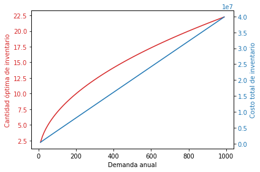
</div>
</div>
</section>
</section>
<section id="ejemplo-numero-uno">
<h2>Ejemplo numero uno:<a class="headerlink" href="#ejemplo-numero-uno" title="Link to this heading">#</a></h2>
<p>La empresa IND sas tiene una demanda diaria de 100 unidades, y el costo en que se incurren dichos pedidos es de  100 Cop se estima que el almacenqamiento de cada uno de los elementos es de $0.01 Cop Diarios  los pedidos se demoran 12 dias en ser entregados, debemos determinar la politica optima de invenario que nos permita mantener el mejor invetario posible.  entonces:</p>
<ul class="simple">
<li><p><span class="math notranslate nohighlight">\(D= 100\ nunidades\ diarias\)</span></p></li>
<li><p><span class="math notranslate nohighlight">\(K= 100\)</span>$ por pedido</p></li>
<li><p><span class="math notranslate nohighlight">\(h=0.02\)</span>. unidades por día</p></li>
<li><p><span class="math notranslate nohighlight">\(L= 12\ dias\)</span></p></li>
</ul>
<div class="cell docutils container">
<div class="cell_input docutils container">
<div class="highlight-ipython3 notranslate"><div class="highlight"><pre><span></span><span class="kn">import</span> <span class="nn">math</span>

<span class="k">def</span> <span class="nf">eoq</span><span class="p">(</span><span class="n">demand</span><span class="p">,</span> <span class="n">ordering_cost</span><span class="p">,</span> <span class="n">holding_cost</span><span class="p">):</span>
<span class="w">    </span><span class="sd">&quot;&quot;&quot;Calcula la cantidad óptima de pedido (EOQ) dado la demanda anual,</span>
<span class="sd">       el costo de ordenar y el costo de mantenimiento de inventario.&quot;&quot;&quot;</span>
    <span class="n">eoq</span> <span class="o">=</span> <span class="n">math</span><span class="o">.</span><span class="n">sqrt</span><span class="p">((</span><span class="mi">2</span> <span class="o">*</span> <span class="n">demand</span> <span class="o">*</span> <span class="n">ordering_cost</span><span class="p">)</span> <span class="o">/</span> <span class="n">holding_cost</span><span class="p">)</span>
    <span class="k">return</span> <span class="n">eoq</span>

<span class="k">def</span> <span class="nf">total_inventory_cost</span><span class="p">(</span><span class="n">demand</span><span class="p">,</span> <span class="n">ordering_cost</span><span class="p">,</span> <span class="n">holding_cost</span><span class="p">,</span> <span class="n">eoq</span><span class="p">):</span>
<span class="w">    </span><span class="sd">&quot;&quot;&quot;Calcula el costo total de inventario dado la demanda anual,</span>
<span class="sd">       el costo de ordenar, el costo de mantenimiento de inventario y el EOQ.&quot;&quot;&quot;</span>
    <span class="n">total_cost</span> <span class="o">=</span> <span class="p">(</span><span class="n">demand</span> <span class="o">*</span> <span class="n">ordering_cost</span> <span class="o">/</span> <span class="n">eoq</span><span class="p">)</span> <span class="o">+</span> <span class="p">(</span><span class="n">eoq</span> <span class="o">/</span> <span class="mi">2</span> <span class="o">*</span> <span class="n">holding_cost</span><span class="p">)</span>
    <span class="k">return</span> <span class="n">total_cost</span>

<span class="c1"># Pide al usuario los datos del inventario</span>
<span class="n">demand</span> <span class="o">=</span> <span class="nb">float</span><span class="p">(</span><span class="nb">input</span><span class="p">(</span><span class="s2">&quot;Ingrese la demanda correspondiente: &quot;</span><span class="p">))</span>
<span class="n">ordering_cost</span> <span class="o">=</span> <span class="nb">float</span><span class="p">(</span><span class="nb">input</span><span class="p">(</span><span class="s2">&quot;Ingrese el costo de ordenar: &quot;</span><span class="p">))</span>
<span class="n">holding_cost</span> <span class="o">=</span> <span class="nb">float</span><span class="p">(</span><span class="nb">input</span><span class="p">(</span><span class="s2">&quot;Ingrese el costo de mantener una unidad en inventario: &quot;</span><span class="p">))</span>

<span class="c1"># Calcula la EOQ y el costo total de inventario</span>
<span class="n">eoq_value</span> <span class="o">=</span> <span class="n">eoq</span><span class="p">(</span><span class="n">demand</span><span class="p">,</span> <span class="n">ordering_cost</span><span class="p">,</span> <span class="n">holding_cost</span><span class="p">)</span>
<span class="n">total_cost</span> <span class="o">=</span> <span class="n">total_inventory_cost</span><span class="p">(</span><span class="n">demand</span><span class="p">,</span> <span class="n">ordering_cost</span><span class="p">,</span> <span class="n">holding_cost</span><span class="p">,</span> <span class="n">eoq_value</span><span class="p">)</span>

<span class="c1"># Imprime los resultados</span>
<span class="nb">print</span><span class="p">(</span><span class="s2">&quot;EOQ: &quot;</span><span class="p">,</span> <span class="n">eoq_value</span><span class="p">)</span>
<span class="nb">print</span><span class="p">(</span><span class="s2">&quot;Costo total de inventario: &quot;</span><span class="p">,</span> <span class="n">total_cost</span><span class="p">)</span>
</pre></div>
</div>
</div>
<div class="cell_output docutils container">
<div class="output stream highlight-myst-ansi notranslate"><div class="highlight"><pre><span></span>Ingrese la demanda correspondiente: 10000
Ingrese el costo de ordenar: 200
Ingrese el costo de mantener una unidad en inventario: 50
EOQ:  282.842712474619
Costo total de inventario:  14142.135623730952
</pre></div>
</div>
</div>
</div>
<section id="intentemos-graficar-el-comportamiento-de-un-inventario-en-el-tiempo-usando-colab">
<h3>Intentemos graficar el comportamiento de un inventario en el tiempo usando colab<a class="headerlink" href="#intentemos-graficar-el-comportamiento-de-un-inventario-en-el-tiempo-usando-colab" title="Link to this heading">#</a></h3>
<p>En el siguiente ejercicio se pretende generar el comportamiento del inventario a lo largo del periodo, para posteriormente graficarlo.</p>
<p>$$  ***nota para mi:)*<em>aun no esta listo el modelo aun no emula
algo pasa en la formula de inventario actual.</em></p>
<div class="cell docutils container">
<div class="cell_input docutils container">
<div class="highlight-ipython3 notranslate"><div class="highlight"><pre><span></span><span class="kn">import</span> <span class="nn">pandas</span> <span class="k">as</span> <span class="nn">pd</span>
<span class="kn">import</span> <span class="nn">numpy</span> <span class="k">as</span> <span class="nn">np</span>
<span class="kn">import</span> <span class="nn">matplotlib.pyplot</span> <span class="k">as</span> <span class="nn">plt</span>

<span class="c1"># Datos para la prueba de escritorio</span>
<span class="n">D</span> <span class="o">=</span> <span class="mi">100000</span>
<span class="n">h</span> <span class="o">=</span> <span class="mi">30000</span>
<span class="n">S</span> <span class="o">=</span> <span class="mi">14000</span>
<span class="n">periodo</span> <span class="o">=</span> <span class="mi">365</span>
<span class="n">lead_time</span> <span class="o">=</span> <span class="mi">2</span>

<span class="c1"># Calcular el Q óptimo y el inventario inicial</span>
<span class="n">Q_opt</span> <span class="o">=</span> <span class="p">((</span><span class="mi">2</span> <span class="o">*</span> <span class="n">D</span> <span class="o">*</span> <span class="n">S</span><span class="p">)</span> <span class="o">/</span> <span class="n">h</span><span class="p">)</span><span class="o">**</span><span class="mf">0.5</span>
<span class="n">inventario_inicial</span> <span class="o">=</span> <span class="nb">round</span><span class="p">(</span><span class="n">Q_opt</span><span class="p">)</span>

<span class="c1"># Crear una tabla para almacenar el inventario</span>
<span class="n">inventario</span> <span class="o">=</span> <span class="n">pd</span><span class="o">.</span><span class="n">DataFrame</span><span class="p">(</span><span class="n">columns</span><span class="o">=</span><span class="p">[</span><span class="s2">&quot;Dia&quot;</span><span class="p">,</span> <span class="s2">&quot;Inventario_inicial&quot;</span><span class="p">,</span> <span class="s2">&quot;Nivel_Inventario&quot;</span><span class="p">,</span> <span class="s2">&quot;Pedido&quot;</span><span class="p">,</span> <span class="s2">&quot;Demanda&quot;</span><span class="p">,</span> <span class="s2">&quot;Inventario_Final&quot;</span><span class="p">])</span>

<span class="c1"># Inicializar la tabla con el día cero</span>
<span class="n">inventario_cero</span> <span class="o">=</span> <span class="n">Q_opt</span>
<span class="n">inventario</span> <span class="o">=</span> <span class="n">inventario</span><span class="o">.</span><span class="n">append</span><span class="p">({</span><span class="s2">&quot;Dia&quot;</span><span class="p">:</span> <span class="mi">0</span><span class="p">,</span>
                                <span class="s2">&quot;Inventario_inicial&quot;</span><span class="p">:</span> <span class="mi">0</span><span class="p">,</span>
                                <span class="s2">&quot;Nivel_Inventario&quot;</span><span class="p">:</span> <span class="mi">0</span><span class="p">,</span>
                                <span class="s2">&quot;Pedido&quot;</span><span class="p">:</span> <span class="mi">0</span><span class="p">,</span>
                                <span class="s2">&quot;Demanda&quot;</span><span class="p">:</span> <span class="mi">0</span><span class="p">,</span>
                                <span class="s2">&quot;Inventario_Final&quot;</span><span class="p">:</span> <span class="n">inventario_cero</span><span class="p">},</span>
                               <span class="n">ignore_index</span><span class="o">=</span><span class="kc">True</span><span class="p">)</span>

<span class="c1"># Llenar la tabla con la lógica que definimos</span>
<span class="k">for</span> <span class="n">dia</span> <span class="ow">in</span> <span class="nb">range</span><span class="p">(</span><span class="mi">1</span><span class="p">,</span> <span class="n">periodo</span><span class="o">+</span><span class="mi">1</span><span class="p">):</span>
    <span class="c1"># Calcular la demanda para el día actual</span>
    <span class="n">demanda</span> <span class="o">=</span> <span class="nb">round</span><span class="p">(</span><span class="n">np</span><span class="o">.</span><span class="n">random</span><span class="o">.</span><span class="n">normal</span><span class="p">(</span><span class="n">D</span><span class="o">/</span><span class="n">periodo</span><span class="p">,</span> <span class="mf">0.1</span><span class="o">*</span><span class="n">D</span><span class="o">/</span><span class="n">periodo</span><span class="p">))</span>

    <span class="c1"># Calcular el nivel de inventario y el pedido</span>
    <span class="k">if</span> <span class="n">dia</span> <span class="o">==</span> <span class="mi">1</span><span class="p">:</span>
        <span class="n">inventario_inicial</span> <span class="o">=</span> <span class="n">inventario_cero</span>
    <span class="k">else</span><span class="p">:</span>
        <span class="n">inventario_inicial</span> <span class="o">=</span> <span class="n">inventario</span><span class="p">[</span><span class="s2">&quot;Inventario_Final&quot;</span><span class="p">]</span><span class="o">.</span><span class="n">iloc</span><span class="p">[</span><span class="n">dia</span><span class="o">-</span><span class="mi">1</span><span class="p">]</span>

    <span class="n">nivel_inventario</span> <span class="o">=</span> <span class="n">inventario_inicial</span> <span class="o">-</span> <span class="n">demanda</span>
    <span class="k">if</span> <span class="n">nivel_inventario</span> <span class="o">&lt;</span> <span class="mi">0</span><span class="p">:</span>
        <span class="n">nivel_inventario</span> <span class="o">=</span> <span class="mi">0</span>
        <span class="n">pedido</span> <span class="o">=</span> <span class="nb">round</span><span class="p">(</span><span class="n">Q_opt</span><span class="p">)</span> <span class="o">-</span> <span class="n">nivel_inventario</span>
    <span class="k">else</span><span class="p">:</span>
        <span class="n">pedido</span> <span class="o">=</span> <span class="mi">0</span>

    <span class="c1"># Actualizar el inventario final</span>
    <span class="n">inventario_final</span> <span class="o">=</span> <span class="n">nivel_inventario</span> <span class="o">+</span> <span class="n">pedido</span>

    <span class="c1"># Agregar una fila a la tabla</span>
    <span class="n">inventario</span> <span class="o">=</span> <span class="n">inventario</span><span class="o">.</span><span class="n">append</span><span class="p">({</span><span class="s2">&quot;Dia&quot;</span><span class="p">:</span> <span class="n">dia</span><span class="p">,</span>
                                    <span class="s2">&quot;Inventario_inicial&quot;</span><span class="p">:</span> <span class="n">inventario_inicial</span><span class="p">,</span>
                                    <span class="s2">&quot;Nivel_Inventario&quot;</span><span class="p">:</span> <span class="n">nivel_inventario</span><span class="p">,</span>
                                    <span class="s2">&quot;Pedido&quot;</span><span class="p">:</span> <span class="n">pedido</span><span class="p">,</span>
                                    <span class="s2">&quot;Demanda&quot;</span><span class="p">:</span> <span class="n">demanda</span><span class="p">,</span>
                                    <span class="s2">&quot;Inventario_Final&quot;</span><span class="p">:</span> <span class="n">inventario_final</span><span class="p">},</span>
                                    <span class="n">ignore_index</span><span class="o">=</span><span class="kc">True</span><span class="p">)</span>

<span class="c1">#para exportar el archivo .csv de la base de datos generada elimine el numeral del sigiuiente codigo</span>
<span class="c1">#el archivo se generara en esta hoja de colab debera descargarla</span>
<span class="n">inventario</span><span class="o">.</span><span class="n">to_csv</span><span class="p">(</span><span class="s2">&quot;tabla_inventario_crc.csv&quot;</span><span class="p">,</span> <span class="n">index</span><span class="o">=</span><span class="kc">False</span><span class="p">)</span>

<span class="nb">print</span><span class="p">(</span><span class="s2">&quot;el Q optimo de este ejemplo es:&quot;</span><span class="p">,</span> <span class="n">Q_opt</span><span class="p">)</span>

<span class="c1"># Imprimir la tabla</span>
<span class="nb">print</span><span class="p">(</span><span class="n">inventario</span><span class="p">)</span>

<span class="c1"># Graficar el nivel de inventario</span>
<span class="n">plt</span><span class="o">.</span><span class="n">plot</span><span class="p">(</span><span class="n">inventario</span><span class="p">[</span><span class="s2">&quot;Dia&quot;</span><span class="p">],</span> <span class="n">inventario</span><span class="p">[</span><span class="s2">&quot;Nivel_Inventario&quot;</span><span class="p">])</span>
<span class="n">plt</span><span class="o">.</span><span class="n">xlabel</span><span class="p">(</span><span class="s2">&quot;Dias&quot;</span><span class="p">)</span>
<span class="n">plt</span><span class="o">.</span><span class="n">ylabel</span><span class="p">(</span><span class="s2">&quot;Nivel de Inventario&quot;</span><span class="p">)</span>
<span class="n">plt</span><span class="o">.</span><span class="n">show</span><span class="p">()</span>
</pre></div>
</div>
</div>
<div class="cell_output docutils container">
<div class="output stream highlight-myst-ansi notranslate"><div class="highlight"><pre><span></span>el Q optimo de este ejemplo es: 305.50504633038935
       Dia  Inventario_inicial  Nivel_Inventario  Pedido  Demanda  \
0      0.0            0.000000          0.000000     0.0      0.0   
1      1.0          305.505046         45.505046     0.0    260.0   
2      2.0           45.505046          0.000000   306.0    295.0   
3      3.0          306.000000         12.000000     0.0    294.0   
4      4.0           12.000000          0.000000   306.0    248.0   
..     ...                 ...               ...     ...      ...   
361  361.0            9.000000          0.000000   306.0    310.0   
362  362.0          306.000000         33.000000     0.0    273.0   
363  363.0           33.000000          0.000000   306.0    280.0   
364  364.0          306.000000         73.000000     0.0    233.0   
365  365.0           73.000000          0.000000   306.0    269.0   

     Inventario_Final  
0          305.505046  
1           45.505046  
2          306.000000  
3           12.000000  
4          306.000000  
..                ...  
361        306.000000  
362         33.000000  
363        306.000000  
364         73.000000  
365        306.000000  

[366 rows x 6 columns]
</pre></div>
</div>
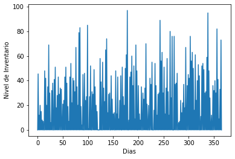
</div>
</div>
</section>
</section>
<section id="ejercicios-de-practica-del-modelo-de-inventario">
<h2>Ejercicios de Practica del modelo de inventario<a class="headerlink" href="#ejercicios-de-practica-del-modelo-de-inventario" title="Link to this heading">#</a></h2>
<p>Vamos a poner en practica la teoria descrita en el cuaderno anterior</p>
<ul class="simple">
<li><p>debera realizar los siguientes ejercicios a mano en una hoja limpia con su calculadora</p></li>
<li><p>Realizara los siguientes ejercicios usando google colab como se describe en el documento.</p></li>
</ul>
</section>
<section id="ejercicios-eoq">
<h2>Ejercicios EOQ<a class="headerlink" href="#ejercicios-eoq" title="Link to this heading">#</a></h2>
<section id="ejercicio-numero-1">
<h3>Ejercicio Numero 1<a class="headerlink" href="#ejercicio-numero-1" title="Link to this heading">#</a></h3>
<p>La empresa Industrial.inc, es una empresa qu se dedica a la fabricacion de tornillos autoperforantes para la industria del aluminio. esta desea reducir sus costos de inventarios mediante la determinacion del numero de tornillos que debe obtener en cada una de las ordenes</p>
<ul class="simple">
<li><p>la demanda es de 10000</p></li>
<li><p>el pedido tiene un costo asociado de $1000</p></li>
<li><p>el costo de mantener tiene un valor asociado de $1,50 un/año.</p></li>
<li><p>el año tiene 250 dias laborales</p></li>
</ul>
<p>usted debera calcular</p>
<ul class="simple">
<li><p>a)Numero optimo de Orden <span class="math notranslate nohighlight">\((q)\)</span></p></li>
<li><p>b)Numero de ordenes por año</p></li>
<li><p>c)Tiempo de ciclo, tiempo esperado entre ordenes.</p></li>
</ul>
</section>
<section id="ejercicio-numero-2">
<h3>Ejercicio Numero 2<a class="headerlink" href="#ejercicio-numero-2" title="Link to this heading">#</a></h3>
<p>LA empresa <a class="reference external" href="http://Amigos.sa">Amigos.sa</a>, comercializa articulos para el hogar, con una demanda anual de 1000 unidades, si el costo para colocar un pedido es de $10usd,$ el costo de almacenamiento unitario anual de cada articulo es de $2,5 Usd, la empresa opera 365 dias, siete dias a la semana, un costo de venta de 15 dolares por articulo, determine la politica optima de inventario para este problema.</p>
</section>
<section id="ejercicio-numero-3">
<h3>Ejercicio Numero 3<a class="headerlink" href="#ejercicio-numero-3" title="Link to this heading">#</a></h3>
<p>Una compañia de trasporte, de vans para servicio escolar consume gasolina a una tasa de 8.200 galones por mes, la gasolina cuesta 12.000 Cop. y tiene un costo de pedido 6.000 Cop el costo de mantener el inventario es de 2000 Cop por galon.</p>
<ul class="simple">
<li><p>determine cuando y cuanto se debe ordenar, si se desea minimizar el coste total</p></li>
<li><p>suponga que se permiten roturas de stock (stock ruptures) con una penalizacion de 1.500 cop por galon mensual</p></li>
<li><p>suponga que el costo de la gasolina desciende a 8.000 cop por galon si se compran por lo menos 10.000 galones, como afectaria el costo teniendo en cuenta la penalizacion anterior.</p></li>
<li><p>suponga que el costo de la gasolina seria de 7.000 Cop por galon si el costo de lote minimo es de 12.000 galones, teniendo en cuenta la penalizacion anterior.</p></li>
<li><p>¿sera necesario un invenytario inicial para solucionar el problema?, sustente tecnicamente su respuesta.</p></li>
</ul>
</section>
<section id="ejercicio-numero-4">
<h3>Ejercicio Numero 4<a class="headerlink" href="#ejercicio-numero-4" title="Link to this heading">#</a></h3>
<p>Una empresa dedicada a la imopresion y comercializacion de libros esta haciendo una compra mensual, para esto realizo un estudio del comportamiento del mercado en el insumo mas importante de su empresa el papel especial con que imprimen sus libros.
en los ultimos 12 meses el comportamiento de su demanda fue de:</p>
<p><span class="math notranslate nohighlight">\(Demanda = [10 -11-10-9-10-11-9-10,5-10-9-9-11,5]\)</span> tonelas por mes
se estima el precio de compra se mantendra en Cop $3,400.000 por tonelada su costo de pedido es de COP $350.000, la politica de la compañia dice que el se le cargara un 15% al manejo de los inventarios mas Cop $60.000 por manejo de bodegaje, calcular:</p>
<ul class="simple">
<li><p>el modelo optimo para manejar este imventario</p></li>
<li><p>si el proveedor ofrece darnos un descuento del 10% por compras superiores
a 30 toneladas y otro proveedor un descuento del 11% por compras superiores a
60 toneladas, como cambiaria mi politica de inventario en cada uno de los escenaros?</p></li>
<li><p>si adicional al descuento logramos hacer un acuerdo con una bodega externa donde el almacenamiento de este se reduce al 9% con una capacidad maxima de 35 toneladas, como cambiaria nuestra politica?</p></li>
</ul>
</section>
<section id="ejercicio-numero-5">
<h3>Ejercicio Numero 5<a class="headerlink" href="#ejercicio-numero-5" title="Link to this heading">#</a></h3>
<p>Cantidad ec.onómica de pedido
La demanda de computadoras Deskpro en Best Buy es de 1,000 unidades por mes. Best Buy incu-
rre en costos fijos de colocación del pedido, transporte y recepción de 4,000 dólares cada vez que ‘se coloca un pedido. Cada computadora le cuesta 500 dólares y el minorista tiene un costo de
mantener inventario de 20%. Evalúe el número de computadoras que el gerente de la tienda debe ordenar en cada lote de reabastecimiento.</p>
</section>
<section id="ejercicio-numero-6">
<h3>Ejercicio Numero 6<a class="headerlink" href="#ejercicio-numero-6" title="Link to this heading">#</a></h3>
<p>Abc company have two item <span class="math notranslate nohighlight">\(X_1\)</span> and <span class="math notranslate nohighlight">\(X_2\)</span> for stockin into theirs warehouse, the Demand for each one of the items is <span class="math notranslate nohighlight">\(D_1 = 10000u/y\)</span> and <span class="math notranslate nohighlight">\(D_2=12000u/y\)</span>. the holdig costo for eacho one of them is <span class="math notranslate nohighlight">\(13%\)</span> and the costo is <span class="math notranslate nohighlight">\(C_1=5000cop\)</span> And <span class="math notranslate nohighlight">\(C_2=7000Cop\)</span></p>
<ul class="simple">
<li><p>the two items have the same supplier so they sahre the operation costing <span class="math notranslate nohighlight">\(6000cop\)</span> by S</p></li>
<li><p>need to find the total cost of the operation</p></li>
<li><p>if the supplier takes 3 days of delay how would it be modelated</p></li>
<li><p>ROL</p></li>
<li><p>ROQ</p></li>
</ul>
</section>
<section id="ejercicio-numero-7">
<h3>Ejercicio Numero 7<a class="headerlink" href="#ejercicio-numero-7" title="Link to this heading">#</a></h3>
<p>Water testing at the Central Park reservoir requires a chemical reagent that costs 500usd per gallon. Use is constant at 1/3 gallon per week. Carrying cost rate is considered to be 12% per year, and the cost of an order is 125usd. What is the optimal order quantity for the reagent?</p>
</section>
<section id="ejercicio-numero-8">
<h3>Ejercicio Numero 8<a class="headerlink" href="#ejercicio-numero-8" title="Link to this heading">#</a></h3>
<p>Continuing with the information about the Central Park reservoir given in Problem 1, the city could make this reagent at the rate of 1/8 gallon per day, at a cost of $300 per gallon. The setup cost is 150usd. Use a 7-day week. Compare using the EOQ and the EPQ systems. What course of action do you recommend?</p>
</section>
<section id="ejercicio-de-inventario-con-modelamiento-matematico-en-python">
<h3>Ejercicio de inventario con modelamiento matematico en python<a class="headerlink" href="#ejercicio-de-inventario-con-modelamiento-matematico-en-python" title="Link to this heading">#</a></h3>
<p>la empresa <strong>XYZ</strong> posee Tres clientes y cuatro proveedores, la empresa manufactura dos productos <span class="math notranslate nohighlight">\(X_1\)</span> y <span class="math notranslate nohighlight">\(X_2\)</span> donde para el producto <span class="math notranslate nohighlight">\(X_1\)</span> es necesario dos unidades de <span class="math notranslate nohighlight">\(MP_1\)</span> y una unidad de <span class="math notranslate nohighlight">\(MP_2\)</span>; mientras que es Producto <span class="math notranslate nohighlight">\(X_2\)</span> necesita una unidad de <span class="math notranslate nohighlight">\(MP_1\)</span> y tres unidades de <span class="math notranslate nohighlight">\(MP_2\)</span>, el costo de almacenamiento del producto terminado de <span class="math notranslate nohighlight">\(X_1\)</span> y <span class="math notranslate nohighlight">\(X_2\)</span> es de 0,5 COP/Un y 0,8 COP/Un Respectivamente; el costo de pedir <span class="math notranslate nohighlight">\(X_1\)</span> y <span class="math notranslate nohighlight">\(X_2\)</span> es de 1,2 Cop/un y 0,8Cop/Un Respectivamente, cabe mencionar que al pedir un producto se responde desde los proveedores con los componentes respectivos de cada uno <span class="math notranslate nohighlight">\(MP_i\)</span></p>
<p>la tabla de <strong>costos</strong> de <span class="math notranslate nohighlight">\(MP_i\)</span> esta dada de la siguiente forma:</p>
<p>\begin{array}{cccc} \hline
Proveedor&amp;Rm_1&amp;Rm_2 \ \hline
s_1&amp;90&amp;75 \ \hline
s_2&amp;50&amp;65 \ \hline
s_3&amp;65&amp;25 \ \hline
s_4&amp;70&amp;50 \ \hline
\end{array}</p>
<ul class="simple">
<li><p>La Demanda del sistema esta dada de la siguiente forma:</p></li>
</ul>
<p>\begin{array}{CCCC} \hline
Cliente&amp;X_1&amp;X_2&amp; \ \hline
C1&amp;500&amp;250&amp;  \ \hline
C_2&amp;450&amp;300&amp;  \ \hline
C_3&amp;250&amp;300&amp; \  \hline
\end{array}</p>
<ul class="simple">
<li><p>se asume que el sistema esta balanceado y que los proveedores pueden suplir la demanda en la totalidad de lo que se requiera.</p></li>
</ul>
<p>encuentre:</p>
<ol class="arabic simple">
<li><p>el costo minimo del sistema para suplir con la demanda.</p></li>
<li><p>los costos asociados al sistema segun el modelo POQ</p></li>
<li><p>si los proveedores tienen un lead time de:</p></li>
</ol>
<p>\begin{array}{cccc} \hline
Proveedor&amp;lead\ time(días)\ \hline
s_1&amp;2 \ \hline
s_2&amp;4 \ \hline
s_3&amp;2 \ \hline
s_4&amp;5 \ \hline
\end{array}</p>
<p>Calcule los ROL y ROQ de cada uno de los productos, con base en su Bill of material.</p>
<ol class="arabic simple" start="4">
<li><p>calcule la tasa de demanda (descuento) <span class="math notranslate nohighlight">\(d\)</span> y teniendo en cuenta, una tasa de produccion de <span class="math notranslate nohighlight">\(x_1 = 80 un/dia\)</span> y <span class="math notranslate nohighlight">\(x_2 = 60 un/dia\)</span> calcule el lote economico optimo. y el tamaño de la bodega que deberia tener la empresa.</p></li>
</ol>
<p>#####Agreguemos el costo total del inventario y grafiquemoslo</p>
<div class="cell docutils container">
<div class="cell_input docutils container">
<div class="highlight-ipython3 notranslate"><div class="highlight"><pre><span></span><span class="c1"># Datos para la prueba de escritorio</span>
<span class="n">D</span> <span class="o">=</span> <span class="mi">100000</span>
<span class="n">h</span> <span class="o">=</span> <span class="mi">30000</span>
<span class="n">S</span> <span class="o">=</span> <span class="mi">14000</span>
<span class="n">periodo</span> <span class="o">=</span> <span class="mi">365</span>
<span class="n">lead_time</span> <span class="o">=</span> <span class="mi">2</span>

<span class="c1"># Calcular el Q óptimo y el inventario inicial</span>
<span class="n">Q_opt</span> <span class="o">=</span> <span class="p">((</span><span class="mi">2</span> <span class="o">*</span> <span class="n">D</span> <span class="o">*</span> <span class="n">S</span><span class="p">)</span> <span class="o">/</span> <span class="n">h</span><span class="p">)</span><span class="o">**</span><span class="mf">0.5</span>
<span class="n">inventario_inicial</span> <span class="o">=</span> <span class="nb">round</span><span class="p">(</span><span class="n">Q_opt</span><span class="p">)</span>


<span class="c1"># Crear una tabla para almacenar el inventario</span>
<span class="n">inventario</span> <span class="o">=</span> <span class="n">pd</span><span class="o">.</span><span class="n">DataFrame</span><span class="p">(</span><span class="n">columns</span><span class="o">=</span><span class="p">[</span><span class="s2">&quot;Dia&quot;</span><span class="p">,</span> <span class="s2">&quot;Inventario_inicial&quot;</span><span class="p">,</span> <span class="s2">&quot;Nivel_Inventario&quot;</span><span class="p">,</span> <span class="s2">&quot;Pedido&quot;</span><span class="p">,</span> <span class="s2">&quot;Demanda&quot;</span><span class="p">,</span> <span class="s2">&quot;Inventario_Final&quot;</span><span class="p">])</span>

<span class="c1"># Inicializar la tabla con el día cero</span>
<span class="n">inventario_cero</span> <span class="o">=</span> <span class="nb">round</span><span class="p">(</span><span class="n">Q_opt</span><span class="p">)</span>
<span class="n">inventario</span> <span class="o">=</span> <span class="n">inventario</span><span class="o">.</span><span class="n">append</span><span class="p">({</span><span class="s2">&quot;Dia&quot;</span><span class="p">:</span> <span class="mi">0</span><span class="p">,</span>
                                <span class="s2">&quot;Inventario_inicial&quot;</span><span class="p">:</span> <span class="mi">0</span><span class="p">,</span>
                                <span class="s2">&quot;Nivel_Inventario&quot;</span><span class="p">:</span> <span class="mi">0</span><span class="p">,</span>
                                <span class="s2">&quot;Pedido&quot;</span><span class="p">:</span> <span class="mi">0</span><span class="p">,</span>
                                <span class="s2">&quot;Demanda&quot;</span><span class="p">:</span> <span class="mi">0</span><span class="p">,</span>
                                <span class="s2">&quot;Inventario_Final&quot;</span><span class="p">:</span> <span class="n">inventario_cero</span><span class="p">},</span>
                               <span class="n">ignore_index</span><span class="o">=</span><span class="kc">True</span><span class="p">)</span>

<span class="c1"># Llenar la tabla con la lógica que definimos</span>
<span class="k">for</span> <span class="n">dia</span> <span class="ow">in</span> <span class="nb">range</span><span class="p">(</span><span class="mi">1</span><span class="p">,</span> <span class="n">periodo</span><span class="o">+</span><span class="mi">1</span><span class="p">):</span>
    <span class="c1"># Calcular la demanda para el día actual</span>
    <span class="n">demanda</span> <span class="o">=</span> <span class="nb">round</span><span class="p">(</span><span class="n">np</span><span class="o">.</span><span class="n">random</span><span class="o">.</span><span class="n">normal</span><span class="p">(</span><span class="n">D</span><span class="o">/</span><span class="n">periodo</span><span class="p">,</span> <span class="mf">0.1</span><span class="o">*</span><span class="n">D</span><span class="o">/</span><span class="n">periodo</span><span class="p">))</span>

    <span class="c1"># Calcular el nivel de inventario y el pedido</span>
    <span class="k">if</span> <span class="n">dia</span> <span class="o">==</span> <span class="mi">1</span><span class="p">:</span>
        <span class="n">inventario_inicial</span> <span class="o">=</span> <span class="n">inventario_cero</span>
    <span class="k">else</span><span class="p">:</span>
        <span class="n">inventario_inicial</span> <span class="o">=</span> <span class="n">inventario</span><span class="p">[</span><span class="s2">&quot;Inventario_Final&quot;</span><span class="p">]</span><span class="o">.</span><span class="n">iloc</span><span class="p">[</span><span class="n">dia</span><span class="o">-</span><span class="mi">1</span><span class="p">]</span>

    <span class="n">nivel_inventario</span> <span class="o">=</span> <span class="n">inventario_inicial</span> <span class="o">-</span> <span class="n">demanda</span>
    <span class="k">if</span> <span class="n">nivel_inventario</span> <span class="o">&lt;</span> <span class="mi">0</span><span class="p">:</span>
        <span class="n">nivel_inventario</span> <span class="o">=</span> <span class="mi">0</span>
        <span class="n">pedido</span> <span class="o">=</span> <span class="nb">round</span><span class="p">(</span><span class="n">Q_opt</span><span class="p">)</span> <span class="o">-</span> <span class="n">nivel_inventario</span>
    <span class="k">else</span><span class="p">:</span>
        <span class="n">pedido</span> <span class="o">=</span> <span class="mi">0</span>

    <span class="c1"># Actualizar el inventario final</span>
    <span class="n">inventario_final</span> <span class="o">=</span> <span class="n">nivel_inventario</span> <span class="o">+</span> <span class="n">pedido</span>

    <span class="c1"># Agregar una fila a la tabla</span>
    <span class="n">inventario</span> <span class="o">=</span> <span class="n">inventario</span><span class="o">.</span><span class="n">append</span><span class="p">({</span><span class="s2">&quot;Dia&quot;</span><span class="p">:</span> <span class="n">dia</span><span class="p">,</span>
                                    <span class="s2">&quot;Inventario_inicial&quot;</span><span class="p">:</span> <span class="n">inventario_inicial</span><span class="p">,</span>
                                    <span class="s2">&quot;Nivel_Inventario&quot;</span><span class="p">:</span> <span class="n">nivel_inventario</span><span class="p">,</span>
                                    <span class="s2">&quot;Pedido&quot;</span><span class="p">:</span> <span class="n">pedido</span><span class="p">,</span>
                                    <span class="s2">&quot;Demanda&quot;</span><span class="p">:</span> <span class="n">demanda</span><span class="p">,</span>
                                    <span class="s2">&quot;Inventario_Final&quot;</span><span class="p">:</span> <span class="n">inventario_final</span><span class="p">},</span>
                                    <span class="n">ignore_index</span><span class="o">=</span><span class="kc">True</span><span class="p">)</span>


<span class="c1"># definimos el costo total del inventario</span>

<span class="n">total_cost</span> <span class="o">=</span> <span class="p">(</span><span class="n">D</span> <span class="o">*</span> <span class="n">S</span> <span class="o">/</span> <span class="n">Q_opt</span><span class="p">)</span> <span class="o">+</span> <span class="p">(</span><span class="n">Q_opt</span> <span class="o">/</span> <span class="mi">2</span> <span class="o">*</span> <span class="n">h</span><span class="p">)</span>


<span class="c1">#para exportar el archivo .csv de la base de datos generada elimine el numeral del sigiuiente codigo</span>
<span class="c1">#el archivo se generara en esta hoja de colab debera descargarla</span>
<span class="c1">#inventario.to_csv(&quot;tabla_inventario_crc.csv&quot;, index=False)</span>

<span class="nb">print</span><span class="p">(</span><span class="s2">&quot;el Q optimo de este ejemplo es:&quot;</span><span class="p">,</span> <span class="nb">round</span><span class="p">(</span><span class="n">Q_opt</span><span class="p">))</span>
<span class="nb">print</span><span class="p">(</span><span class="s2">&quot;el costo total del inventario es:&quot;</span><span class="p">,</span> <span class="n">total_cost</span><span class="p">)</span>

<span class="c1"># Imprimir la tabla</span>
<span class="nb">print</span><span class="p">(</span><span class="n">inventario</span><span class="p">)</span>

<span class="c1"># Graficar el nivel de inventario</span>


<span class="n">plt</span><span class="o">.</span><span class="n">figure</span><span class="p">(</span><span class="n">figsize</span><span class="o">=</span><span class="p">(</span><span class="mi">40</span><span class="p">,</span><span class="mi">10</span><span class="p">))</span>
<span class="n">plt</span><span class="o">.</span><span class="n">plot</span><span class="p">(</span><span class="n">inventario</span><span class="p">[</span><span class="s2">&quot;Dia&quot;</span><span class="p">],</span> <span class="n">inventario</span><span class="p">[</span><span class="s2">&quot;Nivel_Inventario&quot;</span><span class="p">])</span>
<span class="n">plt</span><span class="o">.</span><span class="n">xlabel</span><span class="p">(</span><span class="s2">&quot;Dias&quot;</span><span class="p">)</span>
<span class="n">plt</span><span class="o">.</span><span class="n">ylabel</span><span class="p">(</span><span class="s2">&quot;Nivel de Inventario&quot;</span><span class="p">)</span>
<span class="n">plt</span><span class="o">.</span><span class="n">show</span><span class="p">()</span>
</pre></div>
</div>
</div>
</div>
</section>
</section>
<section id="epq-model">
<h2>EPQ Model<a class="headerlink" href="#epq-model" title="Link to this heading">#</a></h2>
<p>The economic production quantity (EPQ) model (also known as the economic lot size (ELS) model) is used in manufacturing situations where inventory increases at a finite rate and depends on the production rate and the usage rate of the item under consideration. In addition to the variables (D, S, H, Q, and C) defined earlier, we define two more variables: p = production rate per day (daily production rate) and d = demand rate per day (daily demand rate). The values of p and d must be in the same time unit. For example, these values could be weekly rates instead of daily rates. However, daily rates are most common. Q in this case is the production quantity (rather than order quantity) to be made in one lot and S is the cost of setting up the machine to produce that one lot. Therefore, S is called the setup cost per set up (rather than order cost per order).</p>
<div class="math notranslate nohighlight">
\[
Q_{epq}=\sqrt{\left(\frac{2DS}{h\left(1-\frac{d}{q}\right)}\right)}
\]</div>
<section id="ejemplo-epq">
<h3>Ejemplo EPQ<a class="headerlink" href="#ejemplo-epq" title="Link to this heading">#</a></h3>
<p>hallemos:</p>
<ol class="arabic simple">
<li><p>Demandan anual = 50.000 Unidades</p></li>
<li><p>setup cost = $25 usd</p></li>
<li><p>costo de mantener = $5 usd</p></li>
<li><p><em>tasa de produccion (p)</em> = 500 un/dia</p></li>
<li><p>Dias laborales = 250 dias</p></li>
</ol>
<p>entonces resolvemos:</p>
<p>desconocemos <em>d</em>, pero esta puede ser calculada por medio de los dias laborales y demanda anual.</p>
<div class="math notranslate nohighlight">
\[
d = \frac{50.000}{250} = 200 un
\]</div>
<p>Usando la formula de <em>EPQ</em> obtenemos:</p>
<div class="math notranslate nohighlight">
\[
Q_{epq} = \sqrt{\frac{2*50,000*25}{5*(1-\frac{200}{250})}} = 912.87
\]</div>
<p>tambien podemos calcular  el nivel de inventario maximo (<span class="math notranslate nohighlight">\(I_{max})\)</span></p>
<div class="math notranslate nohighlight">
\[
I_{max}=Q * \left(1-\frac{d}{p}\right)
\]</div>
<p>Reemplazando:</p>
<div class="math notranslate nohighlight">
\[
I_{max}=912.87*\left(1-\frac{200}{500}\right) = 547.72 un
\]</div>
</section>
<section id="gestion-de-inventarios-y-abastecimiento">
<h3>gestion de inventarios y abastecimiento:<a class="headerlink" href="#gestion-de-inventarios-y-abastecimiento" title="Link to this heading">#</a></h3>
<p>investigar:</p>
<ol class="arabic simple">
<li><p>Inventario ABC</p></li>
<li><p>Mterial Criticaly</p></li>
<li><p>Quantity Duiscount Model</p></li>
</ol>
</section>
</section>
</section>
<section class="tex2jax_ignore mathjax_ignore" id="unidad-tres-modelos-de-transporte">
<h1>Unidad tres: Modelos de Transporte<a class="headerlink" href="#unidad-tres-modelos-de-transporte" title="Link to this heading">#</a></h1>
<p>El transporte es la columna vertebral de la logística, permitiendo el flujo de bienes y servicios a través de la cadena de suministro. Su eficiencia impacta directamente en los costos, la satisfacción del cliente y la competitividad de las empresas.</p>
<p>Existen diferentes <strong>medios</strong> de transporte, como el terrestre, marítimo, aéreo y ferroviario, cada uno con características que los hacen ideales para ciertos tipos de carga y distancias. La elección del medio adecuado es crucial para optimizar la logística.</p>
<p>Además de los medios, se deben considerar los <strong>modos</strong> de transporte, que se refieren a la forma en que se organiza el transporte, como el transporte unimodal (un solo medio), multimodal (combinación de medios) e intermodal (combinación de medios con una sola unidad de carga).</p>
<p>Un modelo logístico que ha ganado popularidad es el <strong>cross-docking</strong>, que busca minimizar el tiempo de almacenamiento y agilizar la distribución.</p>
<ul class="simple">
<li><p>Ejemplos</p></li>
</ul>
<ol class="arabic simple">
<li><p>Transporte marítimo: Ideal para grandes volúmenes y largas distancias, como el transporte de materias primas o productos manufacturados entre continentes.</p></li>
<li><p>Transporte aéreo: Recomendado para productos perecederos o de alto valor que requieren entrega rápida, como flores o dispositivos electrónicos.</p></li>
<li><p>Cross-docking: Un centro de distribución recibe productos de diferentes proveedores, los consolida y los envía inmediatamente a los clientes, reduciendo costos de almacenamiento y tiempos de entrega.</p></li>
</ol>
<section id="variables-de-decision-clave">
<h2>Variables de Decisión Clave<a class="headerlink" href="#variables-de-decision-clave" title="Link to this heading">#</a></h2>
<p>Al evaluar las opciones de transporte, es fundamental considerar las siguientes variables:</p>
<ul class="simple">
<li><p>Costo: Incluye el precio del flete, seguros, impuestos y otros gastos asociados al transporte.</p></li>
<li><p>Tiempo: Se refiere al tiempo total de tránsito, desde la recolección hasta la entrega final.</p></li>
<li><p>Capacidad: Hace referencia a la cantidad de carga que puede transportar el medio elegido.</p></li>
<li><p>Fiabilidad: Se refiere a la probabilidad de que la carga llegue a destino a tiempo y en las condiciones acordadas.</p></li>
</ul>
</section>
<section id="representacion-grafica-de-los-modelos-de-transporte-en-progranacion-lineal">
<h2>Representacion grafica de los modelos de transporte en Progranacion lineal<a class="headerlink" href="#representacion-grafica-de-los-modelos-de-transporte-en-progranacion-lineal" title="Link to this heading">#</a></h2>
<p>Un modelo de transporte se puede representar gráficamente mediante una red de nodos y arcos, similar a un diagrama de flujo.</p>
<ol class="arabic simple">
<li><p>Nodos: Representan los puntos de origen y destino de la mercancía.</p></li>
</ol>
<ul class="simple">
<li><p>Nodos de origen: Indican los lugares de donde sale la mercancía (fábricas, almacenes, etc.).</p></li>
<li><p>Nodos de destino: Representan los lugares a donde debe llegar la mercancía (clientes, centros de distribución, etc.).
Arcos: Son las conexiones entre los nodos y simbolizan las rutas de transporte disponibles.</p></li>
</ul>
<ol class="arabic simple" start="2">
<li><p>Arcos</p></li>
</ol>
<ul class="simple">
<li><p>Cada arco se asocia con un costo de transporte, que puede representar la distancia, el tiempo de viaje o el costo monetario del transporte entre dos nodos.
Se puede indicar la capacidad de cada arco, que representa la cantidad máxima de mercancía que se puede transportar por esa ruta.</p></li>
</ul>
</section>
<section id="principio-de-nivelacion">
<h2>Principio de nivelacion:<a class="headerlink" href="#principio-de-nivelacion" title="Link to this heading">#</a></h2>
<p>En los modelos de logística de programación lineal, el principio de nivelación se refiere a la necesidad de equilibrar la oferta y la demanda en el modelo. Esto significa que la cantidad total de bienes o productos que se envían desde los orígenes debe ser igual a la cantidad total de bienes o productos que se reciben en los destinos.</p>
<p>¿Cuándo usar elementos ficticios?</p>
<p>Los elementos ficticios se utilizan cuando la oferta y la demanda no están equilibradas en el modelo de transporte. Se introduce un origen o destino ficticio para absorber el exceso de oferta o demanda, respectivamente.</p>
<ol class="arabic simple">
<li><p><strong>Exceso de oferta:</strong> Si la oferta total es mayor que la demanda total, se crea un destino ficticio. Los costos de transporte a este destino ficticio se establecen en cero, ya que no representa un destino real.</p></li>
<li><p><strong>Exceso de demanda:</strong> Si la demanda total es mayor que la oferta total, se crea un origen ficticio. Los costos de transporte desde este origen ficticio se establecen en cero.
Ejemplo:</p></li>
</ol>
<p>Imagina un problema de transporte con dos orígenes (O1 y O2) y tres destinos (D1, D2 y D3). La oferta de O1 es 100 unidades y la de O2 es 150 unidades. La demanda de D1 es 80 unidades, la de D2 es 100 unidades y la de D3 es 70 unidades.</p>
<p>En este caso, la oferta total (250 unidades) es mayor que la demanda total (250 unidades). Para nivelar el modelo, se introduce un destino ficticio (DF) con una demanda de 0 unidades. Los costos de transporte desde O1 y O2 a DF se establecen en cero.</p>
<div class="cell docutils container">
<div class="cell_input docutils container">
<div class="highlight-ipython3 notranslate"><div class="highlight"><pre><span></span><span class="kn">import</span> <span class="nn">pulp</span>

<span class="c1"># Crear el problema</span>
<span class="n">prob</span> <span class="o">=</span> <span class="n">pulp</span><span class="o">.</span><span class="n">LpProblem</span><span class="p">(</span><span class="s2">&quot;Problema de Transporte&quot;</span><span class="p">,</span> <span class="n">pulp</span><span class="o">.</span><span class="n">LpMinimize</span><span class="p">)</span>

<span class="c1"># Definir los orígenes y destinos</span>
<span class="n">origenes</span> <span class="o">=</span> <span class="p">[</span><span class="s2">&quot;O1&quot;</span><span class="p">,</span> <span class="s2">&quot;O2&quot;</span><span class="p">]</span>
<span class="n">destinos</span> <span class="o">=</span> <span class="p">[</span><span class="s2">&quot;D1&quot;</span><span class="p">,</span> <span class="s2">&quot;D2&quot;</span><span class="p">,</span> <span class="s2">&quot;D3&quot;</span><span class="p">,</span> <span class="s2">&quot;DF&quot;</span><span class="p">]</span> <span class="c1"># DF es el destino ficticio</span>

<span class="c1"># Oferta de cada origen</span>
<span class="n">oferta</span> <span class="o">=</span> <span class="p">{</span><span class="s2">&quot;O1&quot;</span><span class="p">:</span> <span class="mi">100</span><span class="p">,</span> <span class="s2">&quot;O2&quot;</span><span class="p">:</span> <span class="mi">150</span><span class="p">}</span>

<span class="c1"># Demanda de cada destino</span>
<span class="n">demanda</span> <span class="o">=</span> <span class="p">{</span><span class="s2">&quot;D1&quot;</span><span class="p">:</span> <span class="mi">80</span><span class="p">,</span> <span class="s2">&quot;D2&quot;</span><span class="p">:</span> <span class="mi">100</span><span class="p">,</span> <span class="s2">&quot;D3&quot;</span><span class="p">:</span> <span class="mi">70</span><span class="p">,</span> <span class="s2">&quot;DF&quot;</span><span class="p">:</span> <span class="mi">0</span><span class="p">}</span>

<span class="c1"># Costos de transporte (se deben definir según el problema)</span>
<span class="n">costos</span> <span class="o">=</span> <span class="p">{</span>
    <span class="p">(</span><span class="s2">&quot;O1&quot;</span><span class="p">,</span> <span class="s2">&quot;D1&quot;</span><span class="p">):</span> <span class="mi">10</span><span class="p">,</span>
    <span class="p">(</span><span class="s2">&quot;O1&quot;</span><span class="p">,</span> <span class="s2">&quot;D2&quot;</span><span class="p">):</span> <span class="mi">2</span><span class="p">,</span>
    <span class="p">(</span><span class="s2">&quot;O1&quot;</span><span class="p">,</span> <span class="s2">&quot;D3&quot;</span><span class="p">):</span> <span class="mi">20</span><span class="p">,</span>
    <span class="p">(</span><span class="s2">&quot;O1&quot;</span><span class="p">,</span> <span class="s2">&quot;DF&quot;</span><span class="p">):</span> <span class="mi">0</span><span class="p">,</span>  <span class="c1"># Costo cero para el destino ficticio</span>
    <span class="p">(</span><span class="s2">&quot;O2&quot;</span><span class="p">,</span> <span class="s2">&quot;D1&quot;</span><span class="p">):</span> <span class="mi">12</span><span class="p">,</span>
    <span class="p">(</span><span class="s2">&quot;O2&quot;</span><span class="p">,</span> <span class="s2">&quot;D2&quot;</span><span class="p">):</span> <span class="mi">7</span><span class="p">,</span>
    <span class="p">(</span><span class="s2">&quot;O2&quot;</span><span class="p">,</span> <span class="s2">&quot;D3&quot;</span><span class="p">):</span> <span class="mi">15</span><span class="p">,</span>
    <span class="p">(</span><span class="s2">&quot;O2&quot;</span><span class="p">,</span> <span class="s2">&quot;DF&quot;</span><span class="p">):</span> <span class="mi">0</span><span class="p">,</span>  <span class="c1"># Costo cero para el destino ficticio</span>
<span class="p">}</span>

<span class="c1"># Variables de decisión</span>
<span class="n">rutas</span> <span class="o">=</span> <span class="p">[(</span><span class="n">o</span><span class="p">,</span> <span class="n">d</span><span class="p">)</span> <span class="k">for</span> <span class="n">o</span> <span class="ow">in</span> <span class="n">origenes</span> <span class="k">for</span> <span class="n">d</span> <span class="ow">in</span> <span class="n">destinos</span><span class="p">]</span>
<span class="n">x</span> <span class="o">=</span> <span class="n">pulp</span><span class="o">.</span><span class="n">LpVariable</span><span class="o">.</span><span class="n">dicts</span><span class="p">(</span><span class="s2">&quot;ruta&quot;</span><span class="p">,</span> <span class="n">rutas</span><span class="p">,</span> <span class="n">lowBound</span><span class="o">=</span><span class="mi">0</span><span class="p">,</span> <span class="n">cat</span><span class="o">=</span><span class="s1">&#39;Integer&#39;</span><span class="p">)</span>

<span class="c1"># Función objetivo: Minimizar el costo total de transporte</span>
<span class="n">prob</span> <span class="o">+=</span> <span class="n">pulp</span><span class="o">.</span><span class="n">lpSum</span><span class="p">([</span><span class="n">x</span><span class="p">[</span><span class="n">r</span><span class="p">]</span> <span class="o">*</span> <span class="n">costos</span><span class="p">[</span><span class="n">r</span><span class="p">]</span> <span class="k">for</span> <span class="n">r</span> <span class="ow">in</span> <span class="n">rutas</span><span class="p">])</span>

<span class="c1"># Restricciones</span>
<span class="c1"># 1. Respetar la oferta de cada origen</span>
<span class="k">for</span> <span class="n">o</span> <span class="ow">in</span> <span class="n">origenes</span><span class="p">:</span>
    <span class="n">prob</span> <span class="o">+=</span> <span class="n">pulp</span><span class="o">.</span><span class="n">lpSum</span><span class="p">([</span><span class="n">x</span><span class="p">[(</span><span class="n">o</span><span class="p">,</span> <span class="n">d</span><span class="p">)]</span> <span class="k">for</span> <span class="n">d</span> <span class="ow">in</span> <span class="n">destinos</span><span class="p">])</span> <span class="o">&lt;=</span> <span class="n">oferta</span><span class="p">[</span><span class="n">o</span><span class="p">]</span>

<span class="c1"># 2. Satisfacer la demanda de cada destino</span>
<span class="k">for</span> <span class="n">d</span> <span class="ow">in</span> <span class="n">destinos</span><span class="p">:</span>
    <span class="n">prob</span> <span class="o">+=</span> <span class="n">pulp</span><span class="o">.</span><span class="n">lpSum</span><span class="p">([</span><span class="n">x</span><span class="p">[(</span><span class="n">o</span><span class="p">,</span> <span class="n">d</span><span class="p">)]</span> <span class="k">for</span> <span class="n">o</span> <span class="ow">in</span> <span class="n">origenes</span><span class="p">])</span> <span class="o">&gt;=</span> <span class="n">demanda</span><span class="p">[</span><span class="n">d</span><span class="p">]</span>

<span class="c1"># Resolver el problema</span>
<span class="n">prob</span><span class="o">.</span><span class="n">solve</span><span class="p">()</span>

<span class="c1"># Imprimir los resultados</span>
<span class="nb">print</span><span class="p">(</span><span class="s2">&quot;Status:&quot;</span><span class="p">,</span> <span class="n">pulp</span><span class="o">.</span><span class="n">LpStatus</span><span class="p">[</span><span class="n">prob</span><span class="o">.</span><span class="n">status</span><span class="p">])</span>
<span class="k">for</span> <span class="n">v</span> <span class="ow">in</span> <span class="n">prob</span><span class="o">.</span><span class="n">variables</span><span class="p">():</span>
    <span class="k">if</span> <span class="n">v</span><span class="o">.</span><span class="n">varValue</span> <span class="o">&gt;</span> <span class="mi">0</span><span class="p">:</span>
        <span class="nb">print</span><span class="p">(</span><span class="n">v</span><span class="o">.</span><span class="n">name</span><span class="p">,</span> <span class="s2">&quot;=&quot;</span><span class="p">,</span> <span class="n">v</span><span class="o">.</span><span class="n">varValue</span><span class="p">)</span>

<span class="nb">print</span><span class="p">(</span><span class="s2">&quot;Costo total =&quot;</span><span class="p">,</span> <span class="n">pulp</span><span class="o">.</span><span class="n">value</span><span class="p">(</span><span class="n">prob</span><span class="o">.</span><span class="n">objective</span><span class="p">))</span>
</pre></div>
</div>
</div>
<div class="cell_output docutils container">
<div class="output stream highlight-myst-ansi notranslate"><div class="highlight"><pre><span></span>Status: Optimal
ruta_(&#39;O1&#39;,_&#39;D2&#39;) = 100.0
ruta_(&#39;O2&#39;,_&#39;D1&#39;) = 80.0
ruta_(&#39;O2&#39;,_&#39;D3&#39;) = 70.0
Costo total = 2210.0
</pre></div>
</div>
<div class="output stderr highlight-myst-ansi notranslate"><div class="highlight"><pre><span></span>/usr/local/lib/python3.10/dist-packages/pulp/pulp.py:1298: UserWarning: Spaces are not permitted in the name. Converted to &#39;_&#39;
  warnings.warn(&quot;Spaces are not permitted in the name. Converted to &#39;_&#39;&quot;)
</pre></div>
</div>
</div>
</div>
<p>Los valores que quedan en los elementos ficticios en la solución de un problema de transporte representan la diferencia entre la oferta y la demanda.</p>
<ol class="arabic simple">
<li><p><strong>Destino ficticio:</strong> Si en la solución óptima hay un valor positivo en una ruta hacia el destino ficticio, significa que hay un exceso de oferta en el origen correspondiente. El valor indica la cantidad de unidades que no se envían a ningún destino real.</p></li>
<li><p><strong>Origen ficticio:</strong> Si en la solución óptima hay un valor positivo en una ruta desde el origen ficticio, significa que hay un exceso de demanda en el destino correspondiente. El valor indica la cantidad de unidades de demanda que no se pueden satisfacer con la oferta disponible.</p></li>
</ol>
<div class="cell docutils container">
<div class="cell_input docutils container">
<div class="highlight-ipython3 notranslate"><div class="highlight"><pre><span></span><span class="o">!</span>pip<span class="w"> </span>install<span class="w"> </span><span class="nv">networkx</span><span class="o">==</span><span class="m">2</span>.8.8
</pre></div>
</div>
</div>
<div class="cell_output docutils container">
<div class="output stream highlight-myst-ansi notranslate"><div class="highlight"><pre><span></span>Collecting networkx==2.8.8
  Downloading networkx-2.8.8-py3-none-any.whl.metadata (5.1 kB)
Downloading networkx-2.8.8-py3-none-any.whl (2.0 MB)
   ━━━━━━━━━━━━━━━━━━━━━━━━━━━━━━━━━━━━━━━━ <span class=" -Color -Color-Green">2.0/2.0 MB</span> <span class=" -Color -Color-Red">18.8 MB/s</span> eta <span class=" -Color -Color-Cyan">0:00:00</span>
?25hInstalling collected packages: networkx
  Attempting uninstall: networkx
    Found existing installation: networkx 3.3
    Uninstalling networkx-3.3:
      Successfully uninstalled networkx-3.3
Successfully installed networkx-2.8.8
</pre></div>
</div>
</div>
</div>
</section>
<section id="definicion-del-modelo-de-transporte">
<h2><strong>Definicion del modelo de Transporte:</strong><a class="headerlink" href="#definicion-del-modelo-de-transporte" title="Link to this heading">#</a></h2>
<p>Tiene que ver con encontrar un plan de costo mínimo para transportar una mercancía desde varios orígenes hasta varios destinos. Este modelo se puede extender para resolver numerosas aplicaciones que no se relacionan con el transporte dentro de los problemas de control de inventarios, flujo de efectivo, asignación de recursos.</p>
<p>Algoritmo del Transporte, es una adaptación del método Simplex aplicada al caso o estructura particular del modelo de Programación Lineal asociado. Aunque el modelo de este problema se puede resolver mediante el método Simplex, su estructura especial hace posible el uso de un procedimiento especial</p>
<p><img alt="image.png" src="" /></p>
<p>1- para resolver estos problemas de optimizacion usaremos la ibreria pulp</p>
<ul class="simple">
<li><p>hay que instalarla ya que no viene preinstalada en COlab</p></li>
<li><p><a class="reference external" href="https://www.youtube.com/watch?v=Dq59G8Uf-_o">https://www.youtube.com/watch?v=Dq59G8Uf-_o</a></p></li>
<li><p><a class="reference external" href="https://pypi.org/project/PuLP/">https://pypi.org/project/PuLP/</a></p></li>
</ul>
<div class="cell docutils container">
<div class="cell_input docutils container">
<div class="highlight-ipython3 notranslate"><div class="highlight"><pre><span></span><span class="n">pip</span> <span class="n">install</span> <span class="n">pulp</span>
</pre></div>
</div>
</div>
<div class="cell_output docutils container">
<div class="output stream highlight-myst-ansi notranslate"><div class="highlight"><pre><span></span>Collecting pulp
  Downloading PuLP-2.8.0-py3-none-any.whl (17.7 MB)
     ━━━━━━━━━━━━━━━━━━━━━━━━━━━━━━━━━━━━━━━━ <span class=" -Color -Color-Green">17.7/17.7 MB</span> <span class=" -Color -Color-Red">45.7 MB/s</span> eta <span class=" -Color -Color-Cyan">0:00:00</span>
?25hInstalling collected packages: pulp
Successfully installed pulp-2.8.0
</pre></div>
</div>
</div>
</div>
<section id="diseno-de-rutas-con-python">
<h3>Diseño de rutas con python<a class="headerlink" href="#diseno-de-rutas-con-python" title="Link to this heading">#</a></h3>
<p>La planificacion de rutas, centra sus esfuerzos en la planificacion de recorridos optimos para la entrega de productos o el cumplimiento de los objetivos del sistema, teniendo en cunta variables especificas como:</p>
<ol class="arabic simple">
<li><p>tiempo</p></li>
<li><p>costo</p></li>
<li><p>restricciones de capacidad</p></li>
</ol>
<section id="objetivo-de-disenar-una-ruta">
<h4>Objetivo de diseñar una ruta<a class="headerlink" href="#objetivo-de-disenar-una-ruta" title="Link to this heading">#</a></h4>
<p>el objetivo puede ser:</p>
<ol class="arabic simple">
<li><p>Minimizar costos</p></li>
<li><p>optmizar tiempos de entregas</p></li>
<li><p>Mejorar la utilizacion de recursos</p></li>
</ol>
</section>
<section id="modelos-de-rutas">
<h4>Modelos de rutas:<a class="headerlink" href="#modelos-de-rutas" title="Link to this heading">#</a></h4>
<p>en logistica tenemos modelos varios de rutas, los que modelan ecenarios especificos de la realidad, estos modelos intentan dar respuesta a la realidad con base en las restricciones especificas, los modelos generales son:</p>
<ol class="arabic simple">
<li><p>TSP - travel salesman problem, o problema del agente viajero:
Encontrar la ruta más corta que visita todos los puntos de entrega una sola vez y regresa al punto de partida.</p></li>
<li><p>VRP - Problema de Ruteo de Vehiculos:
Asignar una flota de vehículos para atender a un conjunto de clientes, minimizando costos y respetando restricciones de capacidad y tiempo.</p></li>
<li><p>VRPTW - VRO con ventanas de tiempo:
Similar al VRP, pero con la restricción de que cada cliente debe ser atendido dentro de una ventana de tiempo específica.</p></li>
</ol>
<hr class="docutils" />
<p>DISEÑO DE RUTAS UTILIZANDO PYTHON.</p>
<p>Existen librerías y algoritmos que facilitan el diseño de rutas en Python.</p>
<div class="highlight-default notranslate"><div class="highlight"><pre><span></span><span class="n">Pulp</span><span class="p">:</span> <span class="n">Una</span> <span class="n">librería</span> <span class="n">para</span> <span class="n">resolver</span> <span class="n">problemas</span> <span class="n">de</span> <span class="n">optimización</span><span class="p">,</span> <span class="n">incluyendo</span> <span class="n">el</span> <span class="n">TSP</span> <span class="n">y</span> <span class="n">VRP</span><span class="o">.</span>
</pre></div>
</div>
<p>hagamnos el ejemplo donde tenemos un problema de asignación de tareas a trabajadores, donde cada trabajador debe realizar una sola tarea y cada tarea debe ser realizada por un solo trabajador. La función objetivo es minimizar el costo total de la asignación</p>
<div class="cell docutils container">
<div class="cell_input docutils container">
<div class="highlight-ipython3 notranslate"><div class="highlight"><pre><span></span><span class="o">!</span>pip<span class="w"> </span>install<span class="w"> </span>Pulp
</pre></div>
</div>
</div>
<div class="cell_output docutils container">
<div class="output stream highlight-myst-ansi notranslate"><div class="highlight"><pre><span></span>Collecting Pulp
  Downloading PuLP-2.9.0-py3-none-any.whl.metadata (5.4 kB)
Downloading PuLP-2.9.0-py3-none-any.whl (17.7 MB)
   ━━━━━━━━━━━━━━━━━━━━━━━━━━━━━━━━━━━━━━━━ <span class=" -Color -Color-Green">17.7/17.7 MB</span> <span class=" -Color -Color-Red">52.7 MB/s</span> eta <span class=" -Color -Color-Cyan">0:00:00</span>
?25hInstalling collected packages: Pulp
Successfully installed Pulp-2.9.0
</pre></div>
</div>
</div>
</div>
<div class="cell docutils container">
<div class="cell_input docutils container">
<div class="highlight-ipython3 notranslate"><div class="highlight"><pre><span></span><span class="kn">import</span> <span class="nn">pulp</span>

<span class="c1"># Crear el problema</span>
<span class="n">prob</span> <span class="o">=</span> <span class="n">pulp</span><span class="o">.</span><span class="n">LpProblem</span><span class="p">(</span><span class="s2">&quot;Asignacion de Tareas&quot;</span><span class="p">,</span> <span class="n">pulp</span><span class="o">.</span><span class="n">LpMinimize</span><span class="p">)</span>

<span class="c1"># Definir las variables</span>
<span class="n">costos</span> <span class="o">=</span> <span class="p">[[</span><span class="mi">10</span><span class="p">,</span> <span class="mi">2</span><span class="p">,</span> <span class="mi">20</span><span class="p">],</span> <span class="p">[</span><span class="mi">12</span><span class="p">,</span> <span class="mi">7</span><span class="p">,</span> <span class="mi">15</span><span class="p">],</span> <span class="p">[</span><span class="mi">8</span><span class="p">,</span> <span class="mi">12</span><span class="p">,</span> <span class="mi">5</span><span class="p">]]</span>
<span class="n">trabajadores</span> <span class="o">=</span> <span class="nb">range</span><span class="p">(</span><span class="mi">3</span><span class="p">)</span>
<span class="n">tareas</span> <span class="o">=</span> <span class="nb">range</span><span class="p">(</span><span class="mi">3</span><span class="p">)</span>
<span class="n">x</span> <span class="o">=</span> <span class="n">pulp</span><span class="o">.</span><span class="n">LpVariable</span><span class="o">.</span><span class="n">dicts</span><span class="p">(</span><span class="s2">&quot;x&quot;</span><span class="p">,</span> <span class="p">[(</span><span class="n">i</span><span class="p">,</span> <span class="n">j</span><span class="p">)</span> <span class="k">for</span> <span class="n">i</span> <span class="ow">in</span> <span class="n">trabajadores</span> <span class="k">for</span> <span class="n">j</span> <span class="ow">in</span> <span class="n">tareas</span><span class="p">],</span> <span class="n">cat</span><span class="o">=</span><span class="s1">&#39;Binary&#39;</span><span class="p">)</span>

<span class="c1"># Función objetivo</span>
<span class="n">prob</span> <span class="o">+=</span> <span class="n">pulp</span><span class="o">.</span><span class="n">lpSum</span><span class="p">(</span><span class="n">costos</span><span class="p">[</span><span class="n">i</span><span class="p">][</span><span class="n">j</span><span class="p">]</span> <span class="o">*</span> <span class="n">x</span><span class="p">[(</span><span class="n">i</span><span class="p">,</span> <span class="n">j</span><span class="p">)]</span> <span class="k">for</span> <span class="n">i</span> <span class="ow">in</span> <span class="n">trabajadores</span> <span class="k">for</span> <span class="n">j</span> <span class="ow">in</span> <span class="n">tareas</span><span class="p">)</span>

<span class="c1"># Restricciones</span>
<span class="k">for</span> <span class="n">i</span> <span class="ow">in</span> <span class="n">trabajadores</span><span class="p">:</span>
    <span class="n">prob</span> <span class="o">+=</span> <span class="n">pulp</span><span class="o">.</span><span class="n">lpSum</span><span class="p">(</span><span class="n">x</span><span class="p">[(</span><span class="n">i</span><span class="p">,</span> <span class="n">j</span><span class="p">)]</span> <span class="k">for</span> <span class="n">j</span> <span class="ow">in</span> <span class="n">tareas</span><span class="p">)</span> <span class="o">==</span> <span class="mi">1</span>

<span class="k">for</span> <span class="n">j</span> <span class="ow">in</span> <span class="n">tareas</span><span class="p">:</span>
    <span class="n">prob</span> <span class="o">+=</span> <span class="n">pulp</span><span class="o">.</span><span class="n">lpSum</span><span class="p">(</span><span class="n">x</span><span class="p">[(</span><span class="n">i</span><span class="p">,</span> <span class="n">j</span><span class="p">)]</span> <span class="k">for</span> <span class="n">i</span> <span class="ow">in</span> <span class="n">trabajadores</span><span class="p">)</span> <span class="o">==</span> <span class="mi">1</span>

<span class="c1"># Resolver el problema</span>
<span class="n">prob</span><span class="o">.</span><span class="n">solve</span><span class="p">()</span>

<span class="c1"># Imprimir los resultados</span>
<span class="nb">print</span><span class="p">(</span><span class="s2">&quot;Status:&quot;</span><span class="p">,</span> <span class="n">pulp</span><span class="o">.</span><span class="n">LpStatus</span><span class="p">[</span><span class="n">prob</span><span class="o">.</span><span class="n">status</span><span class="p">])</span>
<span class="k">for</span> <span class="n">v</span> <span class="ow">in</span> <span class="n">prob</span><span class="o">.</span><span class="n">variables</span><span class="p">():</span>
    <span class="nb">print</span><span class="p">(</span><span class="n">v</span><span class="o">.</span><span class="n">name</span><span class="p">,</span> <span class="s2">&quot;=&quot;</span><span class="p">,</span> <span class="n">v</span><span class="o">.</span><span class="n">varValue</span><span class="p">)</span>

<span class="nb">print</span><span class="p">(</span><span class="s2">&quot;Costo total =&quot;</span><span class="p">,</span> <span class="n">pulp</span><span class="o">.</span><span class="n">value</span><span class="p">(</span><span class="n">prob</span><span class="o">.</span><span class="n">objective</span><span class="p">))</span>
</pre></div>
</div>
</div>
<div class="cell_output docutils container">
<div class="output stream highlight-myst-ansi notranslate"><div class="highlight"><pre><span></span>Status: Optimal
x_(0,_0) = 0.0
x_(0,_1) = 1.0
x_(0,_2) = 0.0
x_(1,_0) = 1.0
x_(1,_1) = 0.0
x_(1,_2) = 0.0
x_(2,_0) = 0.0
x_(2,_1) = 0.0
x_(2,_2) = 1.0
Costo total = 19.0
</pre></div>
</div>
<div class="output stderr highlight-myst-ansi notranslate"><div class="highlight"><pre><span></span>/usr/local/lib/python3.10/dist-packages/pulp/pulp.py:1298: UserWarning: Spaces are not permitted in the name. Converted to &#39;_&#39;
  warnings.warn(&quot;Spaces are not permitted in the name. Converted to &#39;_&#39;&quot;)
</pre></div>
</div>
</div>
</div>
</section>
</section>
<section id="ejemplo-1">
<h3>Ejemplo 1:<a class="headerlink" href="#ejemplo-1" title="Link to this heading">#</a></h3>
<p><strong>Ejemplo uno:</strong> MG Auto tiene tres plantas: en Los Ángeles, Detroit y New Orleans; y dos centros principales de distribución en Denver y en Miami. Las capacidades de las tres plantas durante el próximo trimestre serán 1000, 1500 y 1200 autos. Las demandas trimestrales en los dos centros de distribución son 2300 y 1400 autos. El kilometraje entre las fábricas y los centros de distribución</p>
<ul class="simple">
<li><p>La empresa transportista cobra 8 centavos por KM y por auto. El costo de transporte por auto, en las distintas rutas y redondeado hasta el $ más próximo</p></li>
<li><p>TABLA 1</p></li>
</ul>
<p>\begin{array}{|c|c|c|}
\hline
\textbf{-} &amp; \textbf{Denver} &amp; \textbf{Miami} \
\hline
Los\ Angeles &amp; 1,000 &amp; 2,690 \
\hline
Detroit\ &amp; 1,250  &amp; 1,350  \
\hline
Nueva\ Orleans\ &amp; 1,275  &amp; 850  \
\hline
\end{array}</p>
<ul class="simple">
<li><p>TABLA 2</p></li>
</ul>
<p>\begin{array}{|c|c|c|c|c|}
\hline
\textbf{-} &amp; \textbf{Denver(1)} &amp; \textbf{Miami(2)} \
\hline
Los\ Angeles(1) &amp; 80<span class="math notranslate nohighlight">\( &amp; 215\)</span> \
\hline
Detroit\ (2) &amp; 100<span class="math notranslate nohighlight">\(  &amp; 108\)</span> \
\hline
Nueva\ Orleans (3) &amp; 102<span class="math notranslate nohighlight">\(  &amp; 68\)</span>  \
\hline
\end{array}</p>
<p><strong>Resolviendo:</strong></p>
<p><strong>Variables de decisión:</strong></p>
<ul class="simple">
<li><p><span class="math notranslate nohighlight">\(x_{ij}\)</span>: Cantidad de autos a transportar desde la planta <span class="math notranslate nohighlight">\(i\)</span> hasta el centro de distribución <span class="math notranslate nohighlight">\(j\)</span>.</p></li>
</ul>
<p><strong>Función objetivo:</strong></p>
<ul class="simple">
<li><p>Minimizar el costo total de transporte, dado por:</p></li>
</ul>
<div class="math notranslate nohighlight">
\[\text{Min } Z = 0.08 \sum\limits_{i=1}^{3}\sum\limits_{j=1}^{2}x_{ij}d_{ij}\]</div>
<ul class="simple">
<li><p>Donde <span class="math notranslate nohighlight">\(d_{ij}\)</span> es la distancia en kilómetros entre la planta <span class="math notranslate nohighlight">\(i\)</span> y el centro de distribución <span class="math notranslate nohighlight">\(j\)</span>, según la tabla 1.</p></li>
</ul>
<p><strong>Restricciones:</strong></p>
<ul class="simple">
<li><p>Capacidad de la planta:
$<span class="math notranslate nohighlight">\(\sum\limits_{j=1}^{2}x_{ij} \leq c_i ∀\  i = 1, 2, 3\)</span>$</p></li>
<li><p>Donde <span class="math notranslate nohighlight">\(c_i\)</span> es la capacidad de la planta <span class="math notranslate nohighlight">\(i\)</span>.</p></li>
<li><p>Demanda del centro de distribución:
$<span class="math notranslate nohighlight">\(\sum\limits_{i=1}^{3}x_{ij} \geq d_j\  ∀\  j = 1, 2\)</span>$</p></li>
<li><p>Donde <span class="math notranslate nohighlight">\(d_j\)</span> es la demanda del centro de distribución <span class="math notranslate nohighlight">\(j\)</span>, según el enunciado.</p></li>
<li><p>Restricciones de no negatividad:
$<span class="math notranslate nohighlight">\(x_{ij} \geq 0\ ∀\ i = 1, 2, 3\ y\ j = 1, 2\)</span>$</p></li>
<li><p><em>Además, las variables de decisión deben ser enteras, ya que no se pueden transportar fracciones de autos.</em></p></li>
</ul>
<p>Resolviendo con Python y la libreria PuLp:</p>
<div class="cell docutils container">
<div class="cell_input docutils container">
<div class="highlight-ipython3 notranslate"><div class="highlight"><pre><span></span><span class="c1"># Importar la biblioteca PuLP</span>
<span class="kn">import</span> <span class="nn">pulp</span>

<span class="c1"># Crear un problema de minimización</span>
<span class="n">problem</span> <span class="o">=</span> <span class="n">pulp</span><span class="o">.</span><span class="n">LpProblem</span><span class="p">(</span><span class="s2">&quot;Transporte&quot;</span><span class="p">,</span> <span class="n">pulp</span><span class="o">.</span><span class="n">LpMinimize</span><span class="p">)</span>

<span class="c1"># Crear las variables de decisión</span>
<span class="n">x11</span> <span class="o">=</span> <span class="n">pulp</span><span class="o">.</span><span class="n">LpVariable</span><span class="p">(</span><span class="s2">&quot;Los Angeles a Denver&quot;</span><span class="p">,</span> <span class="n">lowBound</span><span class="o">=</span><span class="mi">0</span><span class="p">,</span> <span class="n">cat</span><span class="o">=</span><span class="s1">&#39;Integer&#39;</span><span class="p">)</span>
<span class="n">x12</span> <span class="o">=</span> <span class="n">pulp</span><span class="o">.</span><span class="n">LpVariable</span><span class="p">(</span><span class="s2">&quot;Los Angeles a Miami&quot;</span><span class="p">,</span> <span class="n">lowBound</span><span class="o">=</span><span class="mi">0</span><span class="p">,</span> <span class="n">cat</span><span class="o">=</span><span class="s1">&#39;Integer&#39;</span><span class="p">)</span>
<span class="n">x21</span> <span class="o">=</span> <span class="n">pulp</span><span class="o">.</span><span class="n">LpVariable</span><span class="p">(</span><span class="s2">&quot;Detroit a Denver&quot;</span><span class="p">,</span> <span class="n">lowBound</span><span class="o">=</span><span class="mi">0</span><span class="p">,</span> <span class="n">cat</span><span class="o">=</span><span class="s1">&#39;Integer&#39;</span><span class="p">)</span>
<span class="n">x22</span> <span class="o">=</span> <span class="n">pulp</span><span class="o">.</span><span class="n">LpVariable</span><span class="p">(</span><span class="s2">&quot;Detroit a Miami&quot;</span><span class="p">,</span> <span class="n">lowBound</span><span class="o">=</span><span class="mi">0</span><span class="p">,</span> <span class="n">cat</span><span class="o">=</span><span class="s1">&#39;Integer&#39;</span><span class="p">)</span>
<span class="n">x31</span> <span class="o">=</span> <span class="n">pulp</span><span class="o">.</span><span class="n">LpVariable</span><span class="p">(</span><span class="s2">&quot;New Orleans a Denver&quot;</span><span class="p">,</span> <span class="n">lowBound</span><span class="o">=</span><span class="mi">0</span><span class="p">,</span> <span class="n">cat</span><span class="o">=</span><span class="s1">&#39;Integer&#39;</span><span class="p">)</span>
<span class="n">x32</span> <span class="o">=</span> <span class="n">pulp</span><span class="o">.</span><span class="n">LpVariable</span><span class="p">(</span><span class="s2">&quot;New Orleans a Miami&quot;</span><span class="p">,</span> <span class="n">lowBound</span><span class="o">=</span><span class="mi">0</span><span class="p">,</span> <span class="n">cat</span><span class="o">=</span><span class="s1">&#39;Integer&#39;</span><span class="p">)</span>

<span class="c1"># Definir la función objetivo</span>
<span class="n">problem</span> <span class="o">+=</span> <span class="mf">0.08</span> <span class="o">*</span> <span class="p">(</span><span class="mi">1000</span><span class="o">*</span><span class="n">x11</span> <span class="o">+</span> <span class="mi">2690</span><span class="o">*</span><span class="n">x12</span> <span class="o">+</span> <span class="mi">1250</span><span class="o">*</span><span class="n">x21</span> <span class="o">+</span> <span class="mi">1350</span><span class="o">*</span><span class="n">x22</span> <span class="o">+</span> <span class="mi">1275</span><span class="o">*</span><span class="n">x31</span> <span class="o">+</span> <span class="mi">850</span><span class="o">*</span><span class="n">x32</span><span class="p">)</span>

<span class="c1"># Definir las restricciones de oferta y demanda</span>
<span class="n">problem</span> <span class="o">+=</span> <span class="n">x11</span> <span class="o">+</span> <span class="n">x12</span> <span class="o">&lt;=</span> <span class="mi">2300</span><span class="p">,</span> <span class="s2">&quot;Oferta Los Angeles&quot;</span>
<span class="n">problem</span> <span class="o">+=</span> <span class="n">x21</span> <span class="o">+</span> <span class="n">x22</span> <span class="o">&lt;=</span> <span class="mi">1500</span><span class="p">,</span> <span class="s2">&quot;Oferta Detroit&quot;</span>
<span class="n">problem</span> <span class="o">+=</span> <span class="n">x31</span> <span class="o">+</span> <span class="n">x32</span> <span class="o">&lt;=</span> <span class="mi">2000</span><span class="p">,</span> <span class="s2">&quot;Oferta New Orleans&quot;</span>
<span class="n">problem</span> <span class="o">+=</span> <span class="n">x11</span> <span class="o">+</span> <span class="n">x21</span> <span class="o">+</span> <span class="n">x31</span> <span class="o">&gt;=</span> <span class="mi">2300</span><span class="p">,</span> <span class="s2">&quot;Demanda Denver&quot;</span>
<span class="n">problem</span> <span class="o">+=</span> <span class="n">x12</span> <span class="o">+</span> <span class="n">x22</span> <span class="o">+</span> <span class="n">x32</span> <span class="o">&gt;=</span> <span class="mi">1400</span><span class="p">,</span> <span class="s2">&quot;Demanda Miami&quot;</span>

<span class="c1"># Resolver el problema</span>
<span class="n">problem</span><span class="o">.</span><span class="n">solve</span><span class="p">()</span>

<span class="c1"># Imprimir el resultado</span>
<span class="nb">print</span><span class="p">(</span><span class="s2">&quot;Estado:&quot;</span><span class="p">,</span> <span class="n">pulp</span><span class="o">.</span><span class="n">LpStatus</span><span class="p">[</span><span class="n">problem</span><span class="o">.</span><span class="n">status</span><span class="p">])</span>
<span class="nb">print</span><span class="p">(</span><span class="s2">&quot;Costo total de transporte: $&quot;</span><span class="p">,</span> <span class="nb">round</span><span class="p">(</span><span class="n">pulp</span><span class="o">.</span><span class="n">value</span><span class="p">(</span><span class="n">problem</span><span class="o">.</span><span class="n">objective</span><span class="p">),</span> <span class="mi">2</span><span class="p">))</span>

<span class="k">for</span> <span class="n">variable</span> <span class="ow">in</span> <span class="n">problem</span><span class="o">.</span><span class="n">variables</span><span class="p">():</span>
    <span class="nb">print</span><span class="p">(</span><span class="n">variable</span><span class="o">.</span><span class="n">name</span><span class="p">,</span> <span class="s2">&quot;=&quot;</span><span class="p">,</span> <span class="n">variable</span><span class="o">.</span><span class="n">varValue</span><span class="p">)</span>
</pre></div>
</div>
</div>
<div class="cell_output docutils container">
<div class="output stream highlight-myst-ansi notranslate"><div class="highlight"><pre><span></span>Estado: Optimal
Costo total de transporte: $ 279200.0
Detroit_a_Denver = 0.0
Detroit_a_Miami = 0.0
Los_Angeles_a_Denver = 2300.0
Los_Angeles_a_Miami = 0.0
New_Orleans_a_Denver = 0.0
New_Orleans_a_Miami = 1400.0
</pre></div>
</div>
</div>
</div>
</section>
<section id="ejemplo-2">
<h3>Ejemplo 2:<a class="headerlink" href="#ejemplo-2" title="Link to this heading">#</a></h3>
<p>En este modelo, tenemos tres orígenes (<span class="math notranslate nohighlight">\(O_1\)</span>, <span class="math notranslate nohighlight">\(O_2\)</span> y <span class="math notranslate nohighlight">\(O_3\)</span>) y cuatro destinos (<span class="math notranslate nohighlight">\(D_1\)</span>, <span class="math notranslate nohighlight">\(D_2\)</span>, <span class="math notranslate nohighlight">\(D_3\)</span> y <span class="math notranslate nohighlight">\(D_4\)</span>), y la tabla muestra los costos de transporte desde cada origen a cada destino. El objetivo es determinar la asignación óptima de los productos a los destinos, minimizando el costo total de transporte.</p>
<p>\begin{array}{c|cccc}
\
\text{Origen} &amp; D_1 &amp; D_2 &amp; D_3 &amp; D_4 \ \hline
O_1 &amp; 4 &amp; 5 &amp; 2 &amp; 7 \
O_2 &amp; 3 &amp; 6 &amp; 8 &amp; 2 \
O_3 &amp; 9 &amp; 4 &amp; 1 &amp; 3 \
\end{array}</p>
<p><strong>Resolviendo el modelo:</strong></p>
<p>La función objetivo de este modelo se expresa como:</p>
<p>\begin{equation*}
\text{minimizar } Z = \sum_{i=1}^{3}\sum_{j=1}^{4}c_{ij}x_{ij}
\end{equation*}</p>
<p>Donde:</p>
<ul class="simple">
<li><p><span class="math notranslate nohighlight">\(Z\)</span>: representa el costo total de transporte.</p></li>
<li><p><span class="math notranslate nohighlight">\(c_{ij}\)</span>: es el costo de transportar una unidad del origen <span class="math notranslate nohighlight">\(i\)</span> al destino <span class="math notranslate nohighlight">\(j\)</span>.</p></li>
<li><p><span class="math notranslate nohighlight">\(x_{ij}\)</span>: es la cantidad de unidades transportadas del origen <span class="math notranslate nohighlight">\(i\)</span> al destino <span class="math notranslate nohighlight">\(j\)</span>.</p></li>
</ul>
<p>Las restricciones de capacidad se expresan como:</p>
<p>\begin{align*}
\sum_{j=1}^{4} x_{1j} &amp;\leq 60 <br />
\sum_{j=1}^{4} x_{2j} &amp;\leq 70 <br />
\sum_{j=1}^{4} x_{3j} &amp;\leq 80
\end{align*}</p>
<p><strong>Donde:</strong></p>
<p>La restricción <span class="math notranslate nohighlight">\(\sum_{j=1}^{4} x_{ij} \leq C_i\)</span> indica que la cantidad total de productos que se envían desde el origen <span class="math notranslate nohighlight">\(i\)</span> no puede superar su capacidad máxima <span class="math notranslate nohighlight">\(C_i\)</span>.
Las restricciones de demanda se expresan como:</p>
<p>\begin{align*}
\sum_{i=1}^{3} x_{i1} &amp;\geq 50 <br />
\sum_{i=1}^{3} x_{i2} &amp;\geq 70 <br />
\sum_{i=1}^{3} x_{i3} &amp;\geq 80 <br />
\sum_{i=1}^{3} x_{i4} &amp;\geq 30
\end{align*}</p>
<p><strong>Donde:</strong></p>
<ul class="simple">
<li><p>La restricción <span class="math notranslate nohighlight">\(\sum_{i=1}^{3} x_{ij} \geq D_j\)</span> indica que la cantidad total de productos que se envían al destino <span class="math notranslate nohighlight">\(j\)</span> debe ser al menos igual a su demanda <span class="math notranslate nohighlight">\(D_j\)</span></p></li>
</ul>
<div class="cell docutils container">
<div class="cell_input docutils container">
<div class="highlight-ipython3 notranslate"><div class="highlight"><pre><span></span><span class="kn">import</span> <span class="nn">pulp</span>

<span class="c1"># Define el problema</span>
<span class="n">problem</span> <span class="o">=</span> <span class="n">pulp</span><span class="o">.</span><span class="n">LpProblem</span><span class="p">(</span><span class="s2">&quot;Transportation Problem&quot;</span><span class="p">,</span> <span class="n">pulp</span><span class="o">.</span><span class="n">LpMinimize</span><span class="p">)</span>

<span class="c1"># Define las variables de decision</span>
<span class="n">origins</span> <span class="o">=</span> <span class="p">[</span><span class="s1">&#39;O1&#39;</span><span class="p">,</span> <span class="s1">&#39;O2&#39;</span><span class="p">,</span> <span class="s1">&#39;O3&#39;</span><span class="p">]</span>
<span class="n">destinations</span> <span class="o">=</span> <span class="p">[</span><span class="s1">&#39;D1&#39;</span><span class="p">,</span> <span class="s1">&#39;D2&#39;</span><span class="p">,</span> <span class="s1">&#39;D3&#39;</span><span class="p">,</span> <span class="s1">&#39;D4&#39;</span><span class="p">]</span>
<span class="n">x</span> <span class="o">=</span> <span class="n">pulp</span><span class="o">.</span><span class="n">LpVariable</span><span class="o">.</span><span class="n">dicts</span><span class="p">(</span><span class="s1">&#39;shipment&#39;</span><span class="p">,</span> <span class="p">((</span><span class="n">o</span><span class="p">,</span> <span class="n">d</span><span class="p">)</span> <span class="k">for</span> <span class="n">o</span> <span class="ow">in</span> <span class="n">origins</span> <span class="k">for</span> <span class="n">d</span> <span class="ow">in</span> <span class="n">destinations</span><span class="p">),</span> <span class="n">lowBound</span><span class="o">=</span><span class="mi">0</span><span class="p">,</span> <span class="n">cat</span><span class="o">=</span><span class="s1">&#39;Integer&#39;</span><span class="p">)</span>

<span class="c1"># Define los objetos de las funciones</span>
<span class="n">costs</span> <span class="o">=</span> <span class="p">{</span>
    <span class="p">(</span><span class="s1">&#39;O1&#39;</span><span class="p">,</span> <span class="s1">&#39;D1&#39;</span><span class="p">):</span> <span class="mi">4</span><span class="p">,</span>
    <span class="p">(</span><span class="s1">&#39;O1&#39;</span><span class="p">,</span> <span class="s1">&#39;D2&#39;</span><span class="p">):</span> <span class="mi">5</span><span class="p">,</span>
    <span class="p">(</span><span class="s1">&#39;O1&#39;</span><span class="p">,</span> <span class="s1">&#39;D3&#39;</span><span class="p">):</span> <span class="mi">2</span><span class="p">,</span>
    <span class="p">(</span><span class="s1">&#39;O1&#39;</span><span class="p">,</span> <span class="s1">&#39;D4&#39;</span><span class="p">):</span> <span class="mi">7</span><span class="p">,</span>
    <span class="p">(</span><span class="s1">&#39;O2&#39;</span><span class="p">,</span> <span class="s1">&#39;D1&#39;</span><span class="p">):</span> <span class="mi">3</span><span class="p">,</span>
    <span class="p">(</span><span class="s1">&#39;O2&#39;</span><span class="p">,</span> <span class="s1">&#39;D2&#39;</span><span class="p">):</span> <span class="mi">6</span><span class="p">,</span>
    <span class="p">(</span><span class="s1">&#39;O2&#39;</span><span class="p">,</span> <span class="s1">&#39;D3&#39;</span><span class="p">):</span> <span class="mi">8</span><span class="p">,</span>
    <span class="p">(</span><span class="s1">&#39;O2&#39;</span><span class="p">,</span> <span class="s1">&#39;D4&#39;</span><span class="p">):</span> <span class="mi">2</span><span class="p">,</span>
    <span class="p">(</span><span class="s1">&#39;O3&#39;</span><span class="p">,</span> <span class="s1">&#39;D1&#39;</span><span class="p">):</span> <span class="mi">9</span><span class="p">,</span>
    <span class="p">(</span><span class="s1">&#39;O3&#39;</span><span class="p">,</span> <span class="s1">&#39;D2&#39;</span><span class="p">):</span> <span class="mi">4</span><span class="p">,</span>
    <span class="p">(</span><span class="s1">&#39;O3&#39;</span><span class="p">,</span> <span class="s1">&#39;D3&#39;</span><span class="p">):</span> <span class="mi">1</span><span class="p">,</span>
    <span class="p">(</span><span class="s1">&#39;O3&#39;</span><span class="p">,</span> <span class="s1">&#39;D4&#39;</span><span class="p">):</span> <span class="mi">3</span>
<span class="p">}</span>
<span class="n">problem</span> <span class="o">+=</span> <span class="n">pulp</span><span class="o">.</span><span class="n">lpSum</span><span class="p">([</span><span class="n">costs</span><span class="p">[</span><span class="n">o</span><span class="p">,</span> <span class="n">d</span><span class="p">]</span> <span class="o">*</span> <span class="n">x</span><span class="p">[</span><span class="n">o</span><span class="p">,</span> <span class="n">d</span><span class="p">]</span> <span class="k">for</span> <span class="n">o</span> <span class="ow">in</span> <span class="n">origins</span> <span class="k">for</span> <span class="n">d</span> <span class="ow">in</span> <span class="n">destinations</span><span class="p">])</span>

<span class="c1"># Define las restricciones</span>
<span class="k">for</span> <span class="n">o</span> <span class="ow">in</span> <span class="n">origins</span><span class="p">:</span>
    <span class="n">problem</span> <span class="o">+=</span> <span class="n">pulp</span><span class="o">.</span><span class="n">lpSum</span><span class="p">([</span><span class="n">x</span><span class="p">[</span><span class="n">o</span><span class="p">,</span> <span class="n">d</span><span class="p">]</span> <span class="k">for</span> <span class="n">d</span> <span class="ow">in</span> <span class="n">destinations</span><span class="p">])</span> <span class="o">==</span> <span class="mi">1</span>
<span class="k">for</span> <span class="n">d</span> <span class="ow">in</span> <span class="n">destinations</span><span class="p">:</span>
    <span class="n">problem</span> <span class="o">+=</span> <span class="n">pulp</span><span class="o">.</span><span class="n">lpSum</span><span class="p">([</span><span class="n">x</span><span class="p">[</span><span class="n">o</span><span class="p">,</span> <span class="n">d</span><span class="p">]</span> <span class="k">for</span> <span class="n">o</span> <span class="ow">in</span> <span class="n">origins</span><span class="p">])</span> <span class="o">==</span> <span class="mi">1</span>

<span class="c1"># resuelve el problema</span>
<span class="n">problem</span><span class="o">.</span><span class="n">solve</span><span class="p">()</span>

<span class="c1"># imprime la solucion Optima</span>
<span class="nb">print</span><span class="p">(</span><span class="s2">&quot;Optimal solution:&quot;</span><span class="p">)</span>
<span class="k">for</span> <span class="n">o</span> <span class="ow">in</span> <span class="n">origins</span><span class="p">:</span>
    <span class="k">for</span> <span class="n">d</span> <span class="ow">in</span> <span class="n">destinations</span><span class="p">:</span>
        <span class="k">if</span> <span class="n">x</span><span class="p">[</span><span class="n">o</span><span class="p">,</span> <span class="n">d</span><span class="p">]</span><span class="o">.</span><span class="n">value</span><span class="p">()</span> <span class="o">&gt;</span> <span class="mi">0</span><span class="p">:</span>
            <span class="nb">print</span><span class="p">(</span><span class="sa">f</span><span class="s2">&quot;Ship </span><span class="si">{</span><span class="n">x</span><span class="p">[</span><span class="n">o</span><span class="p">,</span><span class="w"> </span><span class="n">d</span><span class="p">]</span><span class="o">.</span><span class="n">value</span><span class="p">()</span><span class="si">}</span><span class="s2"> from </span><span class="si">{</span><span class="n">o</span><span class="si">}</span><span class="s2"> to </span><span class="si">{</span><span class="n">d</span><span class="si">}</span><span class="s2">&quot;</span><span class="p">)</span>
<span class="nb">print</span><span class="p">(</span><span class="sa">f</span><span class="s2">&quot;Total cost: </span><span class="si">{</span><span class="n">pulp</span><span class="o">.</span><span class="n">value</span><span class="p">(</span><span class="n">problem</span><span class="o">.</span><span class="n">objective</span><span class="p">)</span><span class="si">}</span><span class="s2">&quot;</span><span class="p">)</span>
</pre></div>
</div>
</div>
<div class="cell_output docutils container">
<div class="output stream highlight-myst-ansi notranslate"><div class="highlight"><pre><span></span>Optimal solution:
Ship 1.0 from O1 to D1
Ship 1.0 from O2 to D4
Ship 1.0 from O3 to D2
Ship 1.0 from O3 to D3
Total cost: 11.0
</pre></div>
</div>
<div class="output stderr highlight-myst-ansi notranslate"><div class="highlight"><pre><span></span>/usr/local/lib/python3.9/dist-packages/pulp/pulp.py:1352: UserWarning: Spaces are not permitted in the name. Converted to &#39;_&#39;
  warnings.warn(&quot;Spaces are not permitted in the name. Converted to &#39;_&#39;&quot;)
</pre></div>
</div>
</div>
</div>
</section>
<hr class="docutils" />
<section id="ejercicios-de-la-unidad-tres">
<h3>Ejercicios de la Unidad Tres.<a class="headerlink" href="#ejercicios-de-la-unidad-tres" title="Link to this heading">#</a></h3>
<hr class="docutils" />
<ol class="arabic simple">
<li><p>En <strong>el ejemplo 1</strong>, suponer que la capacidad de la planta de Detroit es 1300 automóviles (en lugar de 1500). La oferta total (3700 autos) es menor que la demanda total (4300 autos), lo que quiere decir que no será satisfecha parte de la demanda en Denver y Miami. Como la demanda es mayor que la oferta se agrega una fuente <em>(planta) ficticia</em> con una capacidad de 200 automóviles ( 3700  3500) para <strong>balancear</strong> el modelo de transporte. En este caso, el costo de transporte por unidad, desde la planta ficticia a los dos destinos es cero, porque no existe esa fábrica.
El costo de transporte por unidad desde la fuente ficticia a los destinos puede asumir también valores positivos. <em>Por ejemplo,</em> para asegurar que Miami recibe toda su demanda, se asignará un costo (penalización) alto de transporte por unidad al elemento cero, desde la fuente ficticia hasta Miami.</p></li>
</ol>
<ul class="simple">
<li><p>resuelva este modelo usando simplex a mano y luego en Colab, compare los resultados.</p></li>
<li><p>Describa el codigo usado.</p></li>
</ul>
<ol class="arabic simple" start="2">
<li><p>Una tienda produce tres productos diferentes. Los productos se envían a tres almacenes. Los costos de envío por unidad, la oferta y la demanda de cada centro de distribución se muestran en las tablas a continuación. Determine la cantidad de productos que se deben enviar de la fábrica a cada centro de distribución para minimizar los costos de envío.</p></li>
</ol>
<p>\begin{array}{|c|c|c|c|c|}
\hline
\textbf{-} &amp; \textbf{Almacén A} &amp; \textbf{Almacén B} &amp; \textbf{Almacén C} &amp; \textbf{Oferta} \
\hline
\textbf{Tienda 1} &amp; 10<span class="math notranslate nohighlight">\( &amp; 8\)</span> &amp; 7<span class="math notranslate nohighlight">\( &amp; 200 \\
\hline
 \textbf{Tienda 2} &amp; 5\)</span> &amp; 12<span class="math notranslate nohighlight">\(  &amp; 6\)</span> &amp; 300 \
\hline
\textbf{Tienda 3} &amp; 4<span class="math notranslate nohighlight">\( &amp; 7\)</span> &amp; 11$ &amp; 400 \
\hline
\textbf{Demanda} &amp; 150 &amp; 250 &amp; 200 &amp; \
\hline
\end{array}</p>
<ol class="arabic simple" start="3">
<li><p>Una empresa tiene tres tiendas en ciudades diferentes y dos almacenes en otras ciudades diferentes. Cada tienda oferta productos diferentes. Los costos de envío por unidad, la capacidad de producción y la demanda de cada almacén se muestran en las tablas a continuación. Determine la cantidad de productos que se deben enviar a los almacenes para satisfacer la demanda  y minimizar los costos de envío.</p></li>
</ol>
<p>\begin{array}{|c|c|c|c|c|c|}
\hline
\textbf{-} &amp; \textbf{Almacén A} &amp; \textbf{Almacén B} &amp; \textbf{Almacén C} &amp; \textbf{Almacén D} &amp; \textbf{Oferta} \
\hline
\textbf{Tienda 1} &amp; 4<span class="math notranslate nohighlight">\( &amp; 6\)</span> &amp; 9<span class="math notranslate nohighlight">\( &amp; 5\)</span> &amp; 300 \
\hline
\textbf{Tienda 2} &amp; 7<span class="math notranslate nohighlight">\( &amp; 3\)</span>  &amp; 5<span class="math notranslate nohighlight">\( &amp; 8\)</span> &amp; 400 \
\hline
\textbf{Tienda 3} &amp; 2<span class="math notranslate nohighlight">\( &amp; 5\)</span> &amp; 11<span class="math notranslate nohighlight">\( &amp; 7\)</span> &amp; 500 \
\hline
\textbf{Demanda} &amp; 400 &amp; 400 &amp; 300 &amp; 300 &amp; \
\hline
\end{array}</p>
<ol class="arabic simple" start="4">
<li><p>Una empresa tiene tres tiendas y cuatro almacenes. Los costos de envío por unidad, la capacidad de producción y la demanda de cada almacén se muestran en las tablas a continuación. Determine la cantidad de productos que se deben enviar de las fábricas a los almacenes para satisfacer la demanda de cada almacén y minimizar los costos de envío.</p></li>
</ol>
<p>\begin{array}{|c|c|c|c|c|c|c|}
\hline
\textbf{-} &amp; \textbf{Almacén A} &amp; \textbf{Almacén B} &amp; \textbf{Almacén C} &amp; \textbf{Almacén D} &amp; \textbf{Almacén E} &amp; \textbf{Oferta} \
\hline
\textbf{Tienda 1} &amp; 6<span class="math notranslate nohighlight">\( &amp; 8\)</span> &amp; 10<span class="math notranslate nohighlight">\( &amp; 9\)</span> &amp; 7<span class="math notranslate nohighlight">\( &amp; 500 \\
\hline
 \textbf{Tienda 2} &amp; 5\)</span> &amp; 11<span class="math notranslate nohighlight">\(  &amp; 7\)</span> &amp; 4<span class="math notranslate nohighlight">\( &amp; 3\)</span> &amp; 400 \
\hline
\textbf{Tienda 3} &amp; 12<span class="math notranslate nohighlight">\( &amp; 9\)</span> &amp; 3<span class="math notranslate nohighlight">\( &amp; 8\)</span> &amp; 6$ &amp; 300 \
\hline
\textbf{Demanda} &amp; 300 &amp; 400 &amp; 400 &amp; 200 &amp; 400 &amp; \
\hline
\end{array}</p>
<div class="highlight-none notranslate"><div class="highlight"><pre><span></span>    1. Formule el modelo de programación lineal teorico y algebraico.
    2. Formule este problema como un problema de transporte mediante la construcción de la tabla de parámetros apropiada.
    3. Obtenga una solución óptima para este problema.
    4. realice el ejercicio en colab y dinamicelo diferemtes valores
</pre></div>
</div>
<p>\</p>
<ol class="arabic simple" start="5">
<li><p>Tres ciudades se abastecen de electricidad de tres centrales eléctricas con capacidades de 25, 40 y 30 megawatts (MW). Las demandas máximas en las tres ciudades se estiman en 30, 35 y 25 MW. El precio por MW en las tres ciudades se muestra en la tabla</p></li>
</ol>
<p>\begin{array}{c|cccc}
\ P_n &amp; Ciudad\ C_n
\
\text{Planta} &amp; C_1 &amp; C_2 &amp; C_3\ \hline
P_1 &amp; 600 &amp; 700 &amp; 400\
P_2 &amp; 320 &amp; 300 &amp; 350\
P_3 &amp; 500 &amp; 480 &amp; 450\
\end{array}</p>
<p>Durante el mes de agosto hay un aumento de 20% en la demanda de cada ciudad, que se puede satisfacer comprando electricidad a otra red, a una tasa elevada de $1000 por MW. Sin embargo, la red no está conectada con la ciudad 3. La empresa eléctrica desea determinar el plan más económico para distribuir y comprar la energía adicional.</p>
<div class="highlight-none notranslate"><div class="highlight"><pre><span></span>1. Formule el problema como un modelo de transporte. en COlab usando latex.
2. Resuelva el problema con COLAB y determine un plan óptimo de distribución para la empresa eléctrica.
3. Determine el costo de la electricidad adicional comprada por cada una de las tres ciudades.
</pre></div>
</div>
<ol class="arabic simple" start="6">
<li><p>La Compañía ABC tiene tres plantas de producción de Productos para bebés que deben distribuirse a cuatro centros de distribución. Las plantas 1, 2 y 3 producen 12, 17 y 11 cargamentos por mes, respectivamente. Cada centro de distribución necesita recibir 10 cargamentos por mes. En la siguiente tabla se da la distancia de cada planta a su respectivo centro de distribución:</p></li>
</ol>
<p>\begin{array}{cccc}
&amp;CEDI\ 1&amp;CEDI\ 2&amp;CEDI\ 3&amp;CEDI\ 4 \ \hline
planta\ 1&amp;800&amp;13000&amp;400&amp;700 \ \hline
planta\ 2&amp;1100&amp;14000&amp;600&amp;1000 \ \hline
planta\ 3&amp;600&amp;1200&amp;800&amp;900 \ \hline
\end{array}</p>
<ul class="simple">
<li><p>El costo del flete de cada embarque es de $100 más 0.50 centavos por milla.</p></li>
</ul>
<p>¿Cuánto se debería embarcar a cada centro de distribución para minimizar el costo total del envío?</p>
<div class="highlight-none notranslate"><div class="highlight"><pre><span></span>1. Formule el problema como uno de transporte mediante la elaboración de una tabla de parámetros apropiada.
2. Trace la representación de red de este problema.
3. Obtenga una solución óptima.
</pre></div>
</div>
<ol class="arabic simple" start="7">
<li><p>Tom desearía comprar exactamente 3 litros de cerveza casera hoy y al menos 4 litros mañana. Dick quiere vender un máximo de 5 litros en total a un precio de $3.00 por litro hoy y de $2.70 por litro mañana. Harry está dispuesto a vender un máximo de 4 litros en total, a un precio de $2.90 por litro hoy y $2.80 por litro mañana.</p></li>
</ol>
<p>Tom quiere saber cuánto debe comprar a cada uno para minimizar su costo y a la vez cumplir con los requisitos mínimos para satisfacer su sed.</p>
<div class="highlight-none notranslate"><div class="highlight"><pre><span></span>    1. Formule el modelo de programación lineal teorico y algebraico.
    2. Formule este problema como un problema de transporte mediante la construcción de la tabla de parámetros apropiada.
    3. Obtenga una solución óptima para este problema. \\
</pre></div>
</div>
<ol class="arabic simple" start="8">
<li><p>La corporación Versatech producirá tres productos nuevos. En este momento, cinco de sus plantas tienen exceso de capacidad de producción. El costo unitario respectivo de fabricación del primer producto será de 41usd, 39usd, 42usd, 38usd y 39usd en las plantas 1, 2, 3, 4 y 5, El costo unitario de fabricación del segundo producto será de 55usd, 51usd, 56usd, 52usd y 53usd en las plantas respectivas 1, 2, 3, 4 y 5; y para el tercer producto será de 48usd, 45usd y 50usd en las plantas respectivas 1, 2 y 3, pero las plantas 4 y 5 no pueden fabricar este producto. Los pronósticos de ventas indican que la producción diaria debe ser de 700, 1 000 y 900 unidades de los productos 1, 2 y 3, respectivamente.</p></li>
<li><p>Las plantas 1, 2, 3, 4 y 5 tienen capacidades para producir 400, 600, 400, 600 y 1 000 unidades diarias, sin importar el producto o combinación de productos. Suponga que cualquier planta que tiene capacidad y posibilidad de fabricarlos podrá producir cualquier cantidad de productos y con cualquier combinación.
La administración desea asignar los nuevos productos a las plantas con el mínimo costo total de fabricación.</p>
<ol class="arabic simple">
<li><p>Formule este problema como un problema de transporte mediante la construcción de la tabla de parámetros apropiada.</p></li>
<li><p>Obtenga una solución óptima para este problema.</p></li>
<li><p>realice este ejercicio en el entorno de google colab en latex y codigo</p></li>
</ol>
</li>
<li><ul class="simple">
<li><p>la empresa XYZ produce 2 productos <span class="math notranslate nohighlight">\(X_1\)</span> y <span class="math notranslate nohighlight">\(X_2\)</span> en dos plantas diferentes <span class="math notranslate nohighlight">\(Pl_1\)</span> y <span class="math notranslate nohighlight">\(Pl_2\)</span> cada uno de los productos necesita de diferentes Materias primas para ser elaborado segun la siguiente tabla:</p></li>
</ul>
</li>
</ol>
<div class="pst-scrollable-table-container"><table class="table">
<thead>
<tr class="row-odd"><th class="head text-left"><p></p></th>
<th class="head text-center"><p>Mp1</p></th>
<th class="head text-center"><p>Mp2</p></th>
<th class="head text-center"><p>Mp3</p></th>
<th class="head text-center"><p>Tiempo de Prod</p></th>
</tr>
</thead>
<tbody>
<tr class="row-even"><td class="text-left"><p><span class="math notranslate nohighlight">\(X_1\)</span></p></td>
<td class="text-center"><p>2</p></td>
<td class="text-center"><p>3</p></td>
<td class="text-center"><p>1</p></td>
<td class="text-center"><p><span class="math notranslate nohighlight">\(4\frac{min}{u}\)</span></p></td>
</tr>
<tr class="row-odd"><td class="text-left"><p><span class="math notranslate nohighlight">\(X_2\)</span></p></td>
<td class="text-center"><p>3</p></td>
<td class="text-center"><p>1</p></td>
<td class="text-center"><p>0</p></td>
<td class="text-center"><p><span class="math notranslate nohighlight">\(3\frac{min}{u}\)</span></p></td>
</tr>
</tbody>
</table>
</div>
<p>La empresa cuenta son 5 proveedores</p>
<div class="pst-scrollable-table-container"><table class="table">
<thead>
<tr class="row-odd"><th class="head text-left"><p></p></th>
<th class="head text-center"><p><span class="math notranslate nohighlight">\(Mp_1\)</span></p></th>
<th class="head text-center"><p><span class="math notranslate nohighlight">\(Mp_2\)</span></p></th>
<th class="head text-center"><p><span class="math notranslate nohighlight">\(Mp_3\)</span></p></th>
</tr>
</thead>
<tbody>
<tr class="row-even"><td class="text-left"><p><span class="math notranslate nohighlight">\(S_1\)</span></p></td>
<td class="text-center"><p>1000</p></td>
<td class="text-center"><p>800</p></td>
<td class="text-center"><p>1000</p></td>
</tr>
<tr class="row-odd"><td class="text-left"><p><span class="math notranslate nohighlight">\(S_2\)</span></p></td>
<td class="text-center"><p>4000</p></td>
<td class="text-center"><p>2000</p></td>
<td class="text-center"><p>-</p></td>
</tr>
<tr class="row-even"><td class="text-left"><p><span class="math notranslate nohighlight">\(S_3\)</span></p></td>
<td class="text-center"><p>-</p></td>
<td class="text-center"><p>9000</p></td>
<td class="text-center"><p>2000</p></td>
</tr>
<tr class="row-odd"><td class="text-left"><p><span class="math notranslate nohighlight">\(S_4\)</span></p></td>
<td class="text-center"><p>5000</p></td>
<td class="text-center"><p>3000</p></td>
<td class="text-center"><p>900</p></td>
</tr>
<tr class="row-even"><td class="text-left"><p><span class="math notranslate nohighlight">\(S_5\)</span></p></td>
<td class="text-center"><p>2000</p></td>
<td class="text-center"><p>4000</p></td>
<td class="text-center"><p>1000</p></td>
</tr>
</tbody>
</table>
</div>
<p>costos por ser enviadas las unidades (u/usd)</p>
<div class="pst-scrollable-table-container"><table class="table">
<thead>
<tr class="row-odd"><th class="head text-left"><p></p></th>
<th class="head text-center"><p><span class="math notranslate nohighlight">\(CtMp_1\)</span></p></th>
<th class="head text-center"><p><span class="math notranslate nohighlight">\(CtMp_2\)</span></p></th>
<th class="head text-center"><p><span class="math notranslate nohighlight">\(CtMp_3\)</span></p></th>
</tr>
</thead>
<tbody>
<tr class="row-even"><td class="text-left"><p><span class="math notranslate nohighlight">\(S_1\)</span></p></td>
<td class="text-center"><p>2</p></td>
<td class="text-center"><p>2</p></td>
<td class="text-center"><p>3</p></td>
</tr>
<tr class="row-odd"><td class="text-left"><p><span class="math notranslate nohighlight">\(S_2\)</span></p></td>
<td class="text-center"><p>2</p></td>
<td class="text-center"><p>2,5</p></td>
<td class="text-center"><p>-</p></td>
</tr>
<tr class="row-even"><td class="text-left"><p><span class="math notranslate nohighlight">\(S_3\)</span></p></td>
<td class="text-center"><p>-</p></td>
<td class="text-center"><p>3</p></td>
<td class="text-center"><p>1</p></td>
</tr>
<tr class="row-odd"><td class="text-left"><p><span class="math notranslate nohighlight">\(S_4\)</span></p></td>
<td class="text-center"><p>4</p></td>
<td class="text-center"><p>2</p></td>
<td class="text-center"><p>4</p></td>
</tr>
<tr class="row-even"><td class="text-left"><p><span class="math notranslate nohighlight">\(S_5\)</span></p></td>
<td class="text-center"><p>2</p></td>
<td class="text-center"><p>2,2</p></td>
<td class="text-center"><p>2</p></td>
</tr>
</tbody>
</table>
</div>
<p>Costo fijo por proveedor:</p>
<div class="pst-scrollable-table-container"><table class="table">
<thead>
<tr class="row-odd"><th class="head text-left"><p></p></th>
<th class="head text-center"><p>Costo fijo</p></th>
</tr>
</thead>
<tbody>
<tr class="row-even"><td class="text-left"><p><span class="math notranslate nohighlight">\(S_1\)</span></p></td>
<td class="text-center"><p>90 usd</p></td>
</tr>
<tr class="row-odd"><td class="text-left"><p><span class="math notranslate nohighlight">\(S_2\)</span></p></td>
<td class="text-center"><p>110 usd</p></td>
</tr>
<tr class="row-even"><td class="text-left"><p><span class="math notranslate nohighlight">\(S_3\)</span></p></td>
<td class="text-center"><p>85 usd</p></td>
</tr>
<tr class="row-odd"><td class="text-left"><p><span class="math notranslate nohighlight">\(S_4\)</span></p></td>
<td class="text-center"><p>97 usd</p></td>
</tr>
<tr class="row-even"><td class="text-left"><p><span class="math notranslate nohighlight">\(S_5\)</span></p></td>
<td class="text-center"><p>60 usd</p></td>
</tr>
</tbody>
</table>
</div>
<div class="pst-scrollable-table-container"><table class="table">
<thead>
<tr class="row-odd"><th class="head text-left"><p></p></th>
<th class="head text-center"><p>Costo variable</p></th>
</tr>
</thead>
<tbody>
<tr class="row-even"><td class="text-left"><p><span class="math notranslate nohighlight">\(S_1\)</span></p></td>
<td class="text-center"><p>0,5 usd</p></td>
</tr>
<tr class="row-odd"><td class="text-left"><p><span class="math notranslate nohighlight">\(S_2\)</span></p></td>
<td class="text-center"><p>0,8 usd</p></td>
</tr>
<tr class="row-even"><td class="text-left"><p><span class="math notranslate nohighlight">\(S_3\)</span></p></td>
<td class="text-center"><p>0,7 usd</p></td>
</tr>
<tr class="row-odd"><td class="text-left"><p><span class="math notranslate nohighlight">\(S_4\)</span></p></td>
<td class="text-center"><p>0,2 usd</p></td>
</tr>
<tr class="row-even"><td class="text-left"><p><span class="math notranslate nohighlight">\(S_5\)</span></p></td>
<td class="text-center"><p>0,6 usd</p></td>
</tr>
</tbody>
</table>
</div>
<p>Distancia de las plantas a los prioveedores</p>
<div class="pst-scrollable-table-container"><table class="table">
<thead>
<tr class="row-odd"><th class="head text-left"><p></p></th>
<th class="head text-center"><p><span class="math notranslate nohighlight">\(Plp_1\)</span></p></th>
<th class="head text-center"><p><span class="math notranslate nohighlight">\(Plp_2\)</span></p></th>
</tr>
</thead>
<tbody>
<tr class="row-even"><td class="text-left"><p><span class="math notranslate nohighlight">\(S_1\)</span></p></td>
<td class="text-center"><p>70</p></td>
<td class="text-center"><p>92</p></td>
</tr>
<tr class="row-odd"><td class="text-left"><p><span class="math notranslate nohighlight">\(S_2\)</span></p></td>
<td class="text-center"><p>67</p></td>
<td class="text-center"><p>92</p></td>
</tr>
<tr class="row-even"><td class="text-left"><p><span class="math notranslate nohighlight">\(S_3\)</span></p></td>
<td class="text-center"><p>85</p></td>
<td class="text-center"><p>83</p></td>
</tr>
<tr class="row-odd"><td class="text-left"><p><span class="math notranslate nohighlight">\(S_4\)</span></p></td>
<td class="text-center"><p>70</p></td>
<td class="text-center"><p>72</p></td>
</tr>
<tr class="row-even"><td class="text-left"><p><span class="math notranslate nohighlight">\(S_5\)</span></p></td>
<td class="text-center"><p>90</p></td>
<td class="text-center"><p>94</p></td>
</tr>
</tbody>
</table>
</div>
<ol class="arabic simple">
<li><p>encuentre el modelo optimo para reducir lso costos y suplir con la demanda</p></li>
<li><p>debe nivelar el sistema por medio del hallazgo de las unidades de demanda de acuerdo con las capacidades del sistema</p></li>
<li><p>realice este ejercicio en google colab y modele su respuesta</p></li>
</ol>
<div class="highlight-default notranslate"><div class="highlight"><pre><span></span><span class="mf">1.</span> <span class="n">encuentre</span> <span class="n">el</span> <span class="n">modelo</span> <span class="n">optimo</span> <span class="n">que</span> <span class="n">minimice</span> <span class="n">el</span> <span class="n">costo</span> <span class="k">del</span> <span class="n">sistema</span>
<span class="mf">2.</span> <span class="n">nivele</span> <span class="n">el</span> <span class="n">sistema</span> <span class="n">con</span> <span class="n">base</span> <span class="n">en</span> <span class="n">la</span> <span class="n">oferta</span>
<span class="mf">3.</span> <span class="n">realice</span> <span class="n">este</span> <span class="n">ejercicio</span> <span class="n">en</span> <span class="n">google</span> <span class="n">colab</span>
</pre></div>
</div>
</section>
<section id="ejercicio-numero-6-del-libro-hamndy-taha-investigacion-de-operaciones-capituo-5">
<h3>Ejercicio numero 6 del libro hamndy taha - investigacion de operaciones capituo 5<a class="headerlink" href="#ejercicio-numero-6-del-libro-hamndy-taha-investigacion-de-operaciones-capituo-5" title="Link to this heading">#</a></h3>
<p>Tres ciudades abastecen de electricidad de ytres centrales electricas con capacidades de 25, 40 y 30 megawatts. las demandas maximas en las tres ciudades se estiman en 30, 35 y 25 megawatts, el precio por megawatts en las tres ciudades se muestra en la siguiente tabla.</p>
<ul class="simple">
<li><p>Tabla uno.</p></li>
</ul>
<div class="pst-scrollable-table-container"><table class="table">
<thead>
<tr class="row-odd"><th class="head text-center"><p></p></th>
<th class="head text-center"><p></p></th>
<th class="head text-center"><p>Ciudad</p></th>
<th class="head text-center"><p></p></th>
</tr>
</thead>
<tbody>
<tr class="row-even"><td class="text-center"><p>Planta</p></td>
<td class="text-center"><p>1</p></td>
<td class="text-center"><p>2</p></td>
<td class="text-center"><p>3</p></td>
</tr>
<tr class="row-odd"><td class="text-center"><p>1</p></td>
<td class="text-center"><p>600</p></td>
<td class="text-center"><p>700</p></td>
<td class="text-center"><p>400</p></td>
</tr>
<tr class="row-even"><td class="text-center"><p>2</p></td>
<td class="text-center"><p>320</p></td>
<td class="text-center"><p>300</p></td>
<td class="text-center"><p>350</p></td>
</tr>
<tr class="row-odd"><td class="text-center"><p>3</p></td>
<td class="text-center"><p>500</p></td>
<td class="text-center"><p>480</p></td>
<td class="text-center"><p>450</p></td>
</tr>
</tbody>
</table>
</div>
<ul class="simple">
<li><p>Durante el mes de Agosto hay un aumento del 20% en la demanda de cada ciudad, que se puede satisfacer comprando electricidad a otra Red, a una tasa elevada de 100usd/watts, sin embargo la red no esta conectada con la ciudad 3, la empresa electrica desea determinar el plan mas econominco para distribuir y comprar la energia adicional.</p></li>
</ul>
<ol class="arabic simple">
<li><p>formule el problema como un modelo de transporte</p></li>
<li><p>resuelva el problema y determine un plan optimo de distribucion para la empresa</p></li>
<li><p>deterine el costo de la electricidad comprada por cada una de las ciudades.</p></li>
</ol>
<hr class="docutils" />
<p><strong>RESOLVEMOS</strong></p>
<ul class="simple">
<li><p>Tabla de capacidad vs demanda</p></li>
</ul>
<div class="pst-scrollable-table-container"><table class="table">
<thead>
<tr class="row-odd"><th class="head text-center"><p></p></th>
<th class="head text-center"><p></p></th>
<th class="head text-center"><p>Ciudad</p></th>
<th class="head text-center"><p></p></th>
<th class="head text-center"><p></p></th>
</tr>
</thead>
<tbody>
<tr class="row-even"><td class="text-center"><p>Planta</p></td>
<td class="text-center"><p>1</p></td>
<td class="text-center"><p>2</p></td>
<td class="text-center"><p>3</p></td>
<td class="text-center"><p>Capacidad MWts</p></td>
</tr>
<tr class="row-odd"><td class="text-center"><p>1</p></td>
<td class="text-center"><p>600</p></td>
<td class="text-center"><p>700</p></td>
<td class="text-center"><p>400</p></td>
<td class="text-center"><p>30</p></td>
</tr>
<tr class="row-even"><td class="text-center"><p>2</p></td>
<td class="text-center"><p>320</p></td>
<td class="text-center"><p>300</p></td>
<td class="text-center"><p>350</p></td>
<td class="text-center"><p>35</p></td>
</tr>
<tr class="row-odd"><td class="text-center"><p>3</p></td>
<td class="text-center"><p>500</p></td>
<td class="text-center"><p>480</p></td>
<td class="text-center"><p>450</p></td>
<td class="text-center"><p>25</p></td>
</tr>
<tr class="row-even"><td class="text-center"><p>Demanda Mwts</p></td>
<td class="text-center"><p>25</p></td>
<td class="text-center"><p>40</p></td>
<td class="text-center"><p>30</p></td>
<td class="text-center"><p>desnivelado</p></td>
</tr>
</tbody>
</table>
</div>
<p>Tabla 2 - nivelamos el sistema con un agente ficticio</p>
<p>|||Ciudad||||
|:-:|:-:|:-:|:-:|:-:||
|Planta|1|2|3|4(fict)|Capacidad MWts|
|1|600|700|400|M|30|
|2|320|300|350|M|35|
|3|500|480|450|M|25|
|Demanda Mwts|25|40|30|5|NIvelado|</p>
<p>tabla 3 - modelo teorico</p>
<p>|||Ciudad <span class="math notranslate nohighlight">\(j\)</span>||||
|:-:|:-:|:-:|:-:|:-:||
|Planta <span class="math notranslate nohighlight">\(i\)</span>|1|2|3|4(fict)|Capacidad MWts|
|1|<span class="math notranslate nohighlight">\(X_{11}\)</span>*<span class="math notranslate nohighlight">\(C_{11}\)</span>|<span class="math notranslate nohighlight">\(X_{12}\)</span><span class="math notranslate nohighlight">\(C_{12}\)</span>|<span class="math notranslate nohighlight">\(X_{13}\)</span><span class="math notranslate nohighlight">\(C_{13}\)</span>|<span class="math notranslate nohighlight">\(X_{14}\)</span><span class="math notranslate nohighlight">\(C_{14}\)</span>|<span class="math notranslate nohighlight">\(C_1\)</span>|
|2|<span class="math notranslate nohighlight">\(X_{21}\)</span><span class="math notranslate nohighlight">\(C_{21}\)</span>|<span class="math notranslate nohighlight">\(X_{22}\)</span><span class="math notranslate nohighlight">\(C_{22}\)</span>|<span class="math notranslate nohighlight">\(X_{23}\)</span><span class="math notranslate nohighlight">\(C_{23}\)</span>|<span class="math notranslate nohighlight">\(X_{24}\)</span><span class="math notranslate nohighlight">\(C_{24}\)</span>|<span class="math notranslate nohighlight">\(C_2\)</span>|
|3|<span class="math notranslate nohighlight">\(X_{31}\)</span><span class="math notranslate nohighlight">\(C_{31}\)</span>|<span class="math notranslate nohighlight">\(X_{32}\)</span><span class="math notranslate nohighlight">\(C_{32}\)</span>|<span class="math notranslate nohighlight">\(X_{33}\)</span><span class="math notranslate nohighlight">\(C_{33}\)</span>|<span class="math notranslate nohighlight">\(X_{34}\)</span><span class="math notranslate nohighlight">\(C_{34}\)</span>|<span class="math notranslate nohighlight">\(C_3\)</span>|
|Demanda Mwts|<span class="math notranslate nohighlight">\(D_{1}\)</span>|<span class="math notranslate nohighlight">\(D_{2}\)</span>|<span class="math notranslate nohighlight">\(D_{3}\)</span>|<span class="math notranslate nohighlight">\(D_{4}\)</span>|NIvelado|</p>
<ol class="arabic simple">
<li><p>Identificacion de variables:</p></li>
</ol>
<ul class="simple">
<li><p><span class="math notranslate nohighlight">\(P_i\)</span> = Capacidad de plantas <span class="math notranslate nohighlight">\(i\)</span></p></li>
<li><p><span class="math notranslate nohighlight">\(D_j\)</span> = Demanda de energia de las Ciudades <span class="math notranslate nohighlight">\(j\)</span></p></li>
<li><p><span class="math notranslate nohighlight">\(C_{ij}\)</span> = Costo de transferencia de energia de la planta <span class="math notranslate nohighlight">\(i\)</span> hasta la ciudad <span class="math notranslate nohighlight">\(j\)</span></p></li>
<li><p><span class="math notranslate nohighlight">\(X_{ij}\)</span> =  Cantidad de Mwts de energia de la planta <span class="math notranslate nohighlight">\(i\)</span> a la ciudad <span class="math notranslate nohighlight">\(j\)</span></p></li>
</ul>
<ol class="arabic simple" start="2">
<li><p>Planteamos el modelo Teorico:</p></li>
</ol>
<ul class="simple">
<li><p>F.O = Minimizacion de los costos de trasnferencia entre las plantas <span class="math notranslate nohighlight">\(i\)</span> y las ciudades <span class="math notranslate nohighlight">\(j\)</span></p></li>
</ul>
<div class="math notranslate nohighlight">
\[Z_{min} = \sum_{i = 1}^{i=n}\sum_{j = 1}^{j=m} (C_{ij}*X_{ij})\]</div>
<ul class="simple">
<li><p>Sujeto a las siguientes restricciones:</p></li>
</ul>
<ol class="arabic simple">
<li><p>restriccion de capacidad
$<span class="math notranslate nohighlight">\(
1.\ \sum_{i}^{n}\sum_{j}^{m}X_{ij} ≤ P_j \ ∀ i={1,2,3}; j={1} \\
2.\ \sum_{i}^{n}\sum_{j}^{m}X_{ij} ≤ P_j \ ∀ i={1,2,3}; j={2} \\
3.\ \sum_{i}^{n}\sum_{j}^{m}X_{ij} ≤ P_j \ ∀ i={1,2,3}; j={3} \\
4.\ \sum_{i}^{n}\sum_{j}^{m}X_{ij} ≤ P_j \ ∀ i={1,2,3}; j={4} \\
\)</span>$</p></li>
<li><p>restriccion de Demanda
$<span class="math notranslate nohighlight">\(
1.\  \sum_{i}^{n}\sum_{j}^{m}X_{ij} \le D_i \ ∀ i={1}; j={1,2,3,4}\\
2.\  \sum_{i}^{n}\sum_{j}^{m}X_{ij} \le D_i \ ∀ i={2}; j={1,2,3,4}\\
3.\  \sum_{i}^{n}\sum_{j}^{m}X_{ij} \le D_i \ ∀ i={3}; j={1,2,3,4}\\
\)</span>$</p></li>
<li><p>restriccion de no negatividad:</p></li>
</ol>
<div class="math notranslate nohighlight">
\[
1. X_{ij} \ge 0
\]</div>
</section>
<hr class="docutils" />
<section id="modelo-algebraico">
<h3>Modelo Algebraico<a class="headerlink" href="#modelo-algebraico" title="Link to this heading">#</a></h3>
<p>|||Ciudad <span class="math notranslate nohighlight">\(j\)</span>||||
|:-:|:-:|:-:|:-:|:-:||
|Planta <span class="math notranslate nohighlight">\(i\)</span>|1|2|3|4(fict)|Demanda MWts|
|1|<span class="math notranslate nohighlight">\(X_{11}\)</span>*600|<span class="math notranslate nohighlight">\(X_{12}\)</span>700|<span class="math notranslate nohighlight">\(X_{13}\)</span>400|<span class="math notranslate nohighlight">\(X_{14}\)</span>M|30|
|2|<span class="math notranslate nohighlight">\(X_{21}\)</span>320|<span class="math notranslate nohighlight">\(X_{22}\)</span>300|<span class="math notranslate nohighlight">\(X_{23}\)</span>350|<span class="math notranslate nohighlight">\(X_{24}\)</span>M|35|
|3|<span class="math notranslate nohighlight">\(X_{31}\)</span>500|<span class="math notranslate nohighlight">\(X_{32}\)</span>480|<span class="math notranslate nohighlight">\(X_{33}\)</span>450|<span class="math notranslate nohighlight">\(X_{34}\)</span>M|25|
|Capacidad Mwts|25|40|30|5|NIvelado|</p>
<p><strong>Formulamos la Funcion objetivo</strong></p>
<div class="math notranslate nohighlight">
\[
Z_{min} = X_{11}*600 + X_{12}*700+ X_{13}*400 + X_{14}*M + X_{21}*320 + X_{22}*300 + X_{23}*350+ X_{24}* M + X_{31}*500 + X_{32}*480+ X_{33}* 450 + X_{34}* M
\]</div>
<p>sa:</p>
<div class="math notranslate nohighlight">
\[\begin{split}
1. X_{11} + X_{12}+ X_{13}+X_{14} \le 30 \\
2. X_{21} + X_{22}+ X_{23}+X_{24} \le 35 \\
3. X_{31} + X_{32}+ X_{33}+X_{34} \le 25 \\
4. X_{11}+X_{21}+X_{31} \le 25 \\
5. X_{12}+X_{22}+X_{32} \le 40 \\
6. X_{13}+X_{23}+X_{33} \le 30 \\
7. X_{14}+X_{24}+X_{34} \le 5\\
8. X_{ij} \ge 0\\
\end{split}\]</div>
<hr class="docutils" />
<p>Resolvemos usando el metodo de la esquina nor oeste</p>
<hr class="docutils" />
<div class="pst-scrollable-table-container"><table class="table">
<thead>
<tr class="row-odd"><th class="head text-center"><p></p></th>
<th class="head text-center"><p></p></th>
<th class="head text-center"><p></p></th>
<th class="head text-center"><p>ciudad</p></th>
<th class="head text-center"><p></p></th>
<th class="head text-center"><p></p></th>
</tr>
</thead>
<tbody>
<tr class="row-even"><td class="text-center"><p>Planta</p></td>
<td class="text-center"><p>1</p></td>
<td class="text-center"><p>2</p></td>
<td class="text-center"><p>3</p></td>
<td class="text-center"><p>4</p></td>
<td class="text-center"><p>Demanda</p></td>
</tr>
<tr class="row-odd"><td class="text-center"><p>1</p></td>
<td class="text-center"><p>600</p></td>
<td class="text-center"><p>700</p></td>
<td class="text-center"><p>400</p></td>
<td class="text-center"><p>M</p></td>
<td class="text-center"><p></p></td>
</tr>
<tr class="row-even"><td class="text-center"><p></p></td>
<td class="text-center"><p></p></td>
<td class="text-center"><p></p></td>
<td class="text-center"><p></p></td>
<td class="text-center"><p></p></td>
<td class="text-center"><p>30</p></td>
</tr>
<tr class="row-odd"><td class="text-center"><p>2</p></td>
<td class="text-center"><p>320</p></td>
<td class="text-center"><p>300</p></td>
<td class="text-center"><p>350</p></td>
<td class="text-center"><p>M</p></td>
<td class="text-center"><p></p></td>
</tr>
<tr class="row-even"><td class="text-center"><p></p></td>
<td class="text-center"><p></p></td>
<td class="text-center"><p></p></td>
<td class="text-center"><p></p></td>
<td class="text-center"><p></p></td>
<td class="text-center"><p>35</p></td>
</tr>
<tr class="row-odd"><td class="text-center"><p>3</p></td>
<td class="text-center"><p>500</p></td>
<td class="text-center"><p>480</p></td>
<td class="text-center"><p>450</p></td>
<td class="text-center"><p>M</p></td>
<td class="text-center"><p></p></td>
</tr>
<tr class="row-even"><td class="text-center"><p></p></td>
<td class="text-center"><p></p></td>
<td class="text-center"><p></p></td>
<td class="text-center"><p></p></td>
<td class="text-center"><p></p></td>
<td class="text-center"><p>25</p></td>
</tr>
<tr class="row-odd"><td class="text-center"><p>Capacidad</p></td>
<td class="text-center"><p>25</p></td>
<td class="text-center"><p>40</p></td>
<td class="text-center"><p>30</p></td>
<td class="text-center"><p>5</p></td>
<td class="text-center"><p></p></td>
</tr>
</tbody>
</table>
</div>
<hr class="docutils" />
<section id="solucion-a-los-ejercicios">
<h4>Solucion a los ejercicios:<a class="headerlink" href="#solucion-a-los-ejercicios" title="Link to this heading">#</a></h4>
<hr class="docutils" />
<section id="ejercicio-numero-uno">
<h5>Ejercicio numero uno:<a class="headerlink" href="#ejercicio-numero-uno" title="Link to this heading">#</a></h5>
<div class="cell docutils container">
<div class="cell_input docutils container">
<div class="highlight-ipython3 notranslate"><div class="highlight"><pre><span></span><span class="c1"># Importar la biblioteca PuLP</span>
<span class="kn">import</span> <span class="nn">pulp</span>

<span class="c1"># Crear un problema de minimización</span>
<span class="n">problem</span> <span class="o">=</span> <span class="n">pulp</span><span class="o">.</span><span class="n">LpProblem</span><span class="p">(</span><span class="s2">&quot;Transporte&quot;</span><span class="p">,</span> <span class="n">pulp</span><span class="o">.</span><span class="n">LpMinimize</span><span class="p">)</span>

<span class="c1"># Crear las variables de decisión</span>
<span class="n">x11</span> <span class="o">=</span> <span class="n">pulp</span><span class="o">.</span><span class="n">LpVariable</span><span class="p">(</span><span class="s2">&quot;Los Angeles a Denver&quot;</span><span class="p">,</span> <span class="n">lowBound</span><span class="o">=</span><span class="mi">0</span><span class="p">,</span> <span class="n">cat</span><span class="o">=</span><span class="s1">&#39;Integer&#39;</span><span class="p">)</span>
<span class="n">x12</span> <span class="o">=</span> <span class="n">pulp</span><span class="o">.</span><span class="n">LpVariable</span><span class="p">(</span><span class="s2">&quot;Los Angeles a Miami&quot;</span><span class="p">,</span> <span class="n">lowBound</span><span class="o">=</span><span class="mi">0</span><span class="p">,</span> <span class="n">cat</span><span class="o">=</span><span class="s1">&#39;Integer&#39;</span><span class="p">)</span>
<span class="n">x21</span> <span class="o">=</span> <span class="n">pulp</span><span class="o">.</span><span class="n">LpVariable</span><span class="p">(</span><span class="s2">&quot;Detroit a Denver&quot;</span><span class="p">,</span> <span class="n">lowBound</span><span class="o">=</span><span class="mi">0</span><span class="p">,</span> <span class="n">cat</span><span class="o">=</span><span class="s1">&#39;Integer&#39;</span><span class="p">)</span>
<span class="n">x22</span> <span class="o">=</span> <span class="n">pulp</span><span class="o">.</span><span class="n">LpVariable</span><span class="p">(</span><span class="s2">&quot;Detroit a Miami&quot;</span><span class="p">,</span> <span class="n">lowBound</span><span class="o">=</span><span class="mi">0</span><span class="p">,</span> <span class="n">cat</span><span class="o">=</span><span class="s1">&#39;Integer&#39;</span><span class="p">)</span>
<span class="n">x31</span> <span class="o">=</span> <span class="n">pulp</span><span class="o">.</span><span class="n">LpVariable</span><span class="p">(</span><span class="s2">&quot;New Orleans a Denver&quot;</span><span class="p">,</span> <span class="n">lowBound</span><span class="o">=</span><span class="mi">0</span><span class="p">,</span> <span class="n">cat</span><span class="o">=</span><span class="s1">&#39;Integer&#39;</span><span class="p">)</span>
<span class="n">x32</span> <span class="o">=</span> <span class="n">pulp</span><span class="o">.</span><span class="n">LpVariable</span><span class="p">(</span><span class="s2">&quot;New Orleans a Miami&quot;</span><span class="p">,</span> <span class="n">lowBound</span><span class="o">=</span><span class="mi">0</span><span class="p">,</span> <span class="n">cat</span><span class="o">=</span><span class="s1">&#39;Integer&#39;</span><span class="p">)</span>
<span class="n">y1</span> <span class="o">=</span> <span class="n">pulp</span><span class="o">.</span><span class="n">LpVariable</span><span class="p">(</span><span class="s2">&quot;Fuente ficticia a Denver&quot;</span><span class="p">,</span> <span class="n">lowBound</span><span class="o">=</span><span class="mi">0</span><span class="p">,</span> <span class="n">cat</span><span class="o">=</span><span class="s1">&#39;Integer&#39;</span><span class="p">)</span>
<span class="n">y2</span> <span class="o">=</span> <span class="n">pulp</span><span class="o">.</span><span class="n">LpVariable</span><span class="p">(</span><span class="s2">&quot;Fuente ficticia a Miami&quot;</span><span class="p">,</span> <span class="n">lowBound</span><span class="o">=</span><span class="mi">0</span><span class="p">,</span> <span class="n">cat</span><span class="o">=</span><span class="s1">&#39;Integer&#39;</span><span class="p">)</span>
<span class="n">f</span>

<span class="c1"># Definir la función objetivo</span>
<span class="n">problem</span> <span class="o">+=</span><span class="p">(</span><span class="mi">80</span><span class="o">*</span><span class="n">x11</span> <span class="o">+</span> <span class="mi">215</span><span class="o">*</span><span class="n">x12</span> <span class="o">+</span> <span class="mi">100</span><span class="o">*</span><span class="n">x21</span> <span class="o">+</span> <span class="mi">108</span><span class="o">*</span><span class="n">x22</span> <span class="o">+</span> <span class="mi">102</span><span class="o">*</span><span class="n">x31</span> <span class="o">+</span> <span class="mi">68</span><span class="o">*</span><span class="n">x32</span> <span class="o">+</span> <span class="mi">0</span><span class="o">*</span><span class="n">y1</span> <span class="o">+</span> <span class="mi">0</span><span class="o">*</span><span class="n">y2</span><span class="p">)</span>

<span class="c1"># Definir las restricciones de oferta y demanda</span>
<span class="n">problem</span> <span class="o">+=</span> <span class="n">x11</span> <span class="o">+</span> <span class="n">x12</span> <span class="o">&lt;=</span> <span class="mi">1000</span><span class="p">,</span> <span class="s2">&quot;Oferta Los Angeles&quot;</span>
<span class="n">problem</span> <span class="o">+=</span> <span class="n">x21</span> <span class="o">+</span> <span class="n">x22</span> <span class="o">&lt;=</span> <span class="mi">1300</span><span class="p">,</span> <span class="s2">&quot;Oferta Detroit&quot;</span>
<span class="n">problem</span> <span class="o">+=</span> <span class="n">x31</span> <span class="o">+</span> <span class="n">x32</span> <span class="o">&lt;=</span> <span class="mi">1200</span><span class="p">,</span> <span class="s2">&quot;Oferta New Orleans&quot;</span>
<span class="n">problem</span> <span class="o">+=</span> <span class="n">y1</span> <span class="o">+</span> <span class="n">y2</span> <span class="o">&lt;=</span> <span class="mi">200</span><span class="p">,</span> <span class="s2">&quot;Oferta Fuente Ficticia&quot;</span>
<span class="n">problem</span> <span class="o">+=</span> <span class="n">x11</span> <span class="o">+</span> <span class="n">x21</span> <span class="o">+</span> <span class="n">x31</span><span class="o">+</span> <span class="n">y1</span> <span class="o">==</span> <span class="mi">2300</span><span class="p">,</span> <span class="s2">&quot;Demanda Denver&quot;</span>
<span class="n">problem</span> <span class="o">+=</span> <span class="n">x12</span> <span class="o">+</span> <span class="n">x22</span> <span class="o">+</span> <span class="n">x32</span> <span class="o">+</span> <span class="n">y2</span> <span class="o">==</span> <span class="mi">1400</span><span class="p">,</span> <span class="s2">&quot;Demanda Miami&quot;</span>

<span class="c1"># Resolver el problema utilizando el método simplex</span>
<span class="n">problem</span><span class="o">.</span><span class="n">solve</span><span class="p">()</span>

<span class="c1"># Imprimir el resultado</span>
<span class="nb">print</span><span class="p">(</span><span class="s2">&quot;Estado:&quot;</span><span class="p">,</span> <span class="n">pulp</span><span class="o">.</span><span class="n">LpStatus</span><span class="p">[</span><span class="n">problem</span><span class="o">.</span><span class="n">status</span><span class="p">])</span>
<span class="nb">print</span><span class="p">(</span><span class="s2">&quot;Costo total de transporte: $&quot;</span><span class="p">,</span> <span class="nb">round</span><span class="p">(</span><span class="n">pulp</span><span class="o">.</span><span class="n">value</span><span class="p">(</span><span class="n">problem</span><span class="o">.</span><span class="n">objective</span><span class="p">),</span><span class="mi">2</span><span class="p">))</span>

<span class="k">for</span> <span class="n">variable</span> <span class="ow">in</span> <span class="n">problem</span><span class="o">.</span><span class="n">variables</span><span class="p">():</span>
    <span class="nb">print</span><span class="p">(</span><span class="n">variable</span><span class="o">.</span><span class="n">name</span><span class="p">,</span> <span class="s2">&quot;=&quot;</span><span class="p">,</span> <span class="n">variable</span><span class="o">.</span><span class="n">varValue</span><span class="p">)</span>
</pre></div>
</div>
</div>
<div class="cell_output docutils container">
<div class="output traceback highlight-ipythontb notranslate"><div class="highlight"><pre><span></span><span class="gt">---------------------------------------------------------------------------</span>
<span class="ne">NameError</span><span class="g g-Whitespace">                                 </span>Traceback (most recent call last)
<span class="nn">&lt;ipython-input-6-290f7e269405&gt;</span> in <span class="ni">&lt;cell line: 16&gt;</span><span class="nt">()</span>
<span class="g g-Whitespace">     </span><span class="mi">14</span> <span class="n">y1</span> <span class="o">=</span> <span class="n">pulp</span><span class="o">.</span><span class="n">LpVariable</span><span class="p">(</span><span class="s2">&quot;Fuente ficticia a Denver&quot;</span><span class="p">,</span> <span class="n">lowBound</span><span class="o">=</span><span class="mi">0</span><span class="p">,</span> <span class="n">cat</span><span class="o">=</span><span class="s1">&#39;Integer&#39;</span><span class="p">)</span>
<span class="g g-Whitespace">     </span><span class="mi">15</span> <span class="n">y2</span> <span class="o">=</span> <span class="n">pulp</span><span class="o">.</span><span class="n">LpVariable</span><span class="p">(</span><span class="s2">&quot;Fuente ficticia a Miami&quot;</span><span class="p">,</span> <span class="n">lowBound</span><span class="o">=</span><span class="mi">0</span><span class="p">,</span> <span class="n">cat</span><span class="o">=</span><span class="s1">&#39;Integer&#39;</span><span class="p">)</span>
<span class="ne">---&gt; </span><span class="mi">16</span> <span class="n">f</span>
<span class="g g-Whitespace">     </span><span class="mi">17</span> 
<span class="g g-Whitespace">     </span><span class="mi">18</span> <span class="c1"># Definir la función objetivo</span>

<span class="ne">NameError</span>: name &#39;f&#39; is not defined
</pre></div>
</div>
</div>
</div>
</section>
<section id="ejercicio-numero-dos">
<h5>Ejercicio Numero Dos<a class="headerlink" href="#ejercicio-numero-dos" title="Link to this heading">#</a></h5>
<div class="cell docutils container">
<div class="cell_input docutils container">
<div class="highlight-ipython3 notranslate"><div class="highlight"><pre><span></span><span class="kn">import</span> <span class="nn">pandas</span> <span class="k">as</span> <span class="nn">pd</span>

<span class="c1"># Definir los datos como un diccionario</span>
<span class="n">datos</span> <span class="o">=</span> <span class="p">{</span><span class="s1">&#39;-&#39;</span><span class="p">:</span> <span class="p">[</span><span class="s1">&#39;Tienda 1&#39;</span><span class="p">,</span> <span class="s1">&#39;Tienda 2&#39;</span><span class="p">,</span> <span class="s1">&#39;Tienda 3&#39;</span><span class="p">,</span> <span class="s1">&#39;Demanda&#39;</span><span class="p">],</span>
         <span class="s1">&#39;Almacén A&#39;</span><span class="p">:</span> <span class="p">[</span><span class="s1">&#39;10$&#39;</span><span class="p">,</span> <span class="s1">&#39;5$&#39;</span><span class="p">,</span> <span class="s1">&#39;4$&#39;</span><span class="p">,</span> <span class="s1">&#39;150&#39;</span><span class="p">],</span>
         <span class="s1">&#39;Almacén B&#39;</span><span class="p">:</span> <span class="p">[</span><span class="s1">&#39;8$&#39;</span><span class="p">,</span> <span class="s1">&#39;12$&#39;</span><span class="p">,</span> <span class="s1">&#39;7$&#39;</span><span class="p">,</span> <span class="s1">&#39;250&#39;</span><span class="p">],</span>
         <span class="s1">&#39;Almacén C&#39;</span><span class="p">:</span> <span class="p">[</span><span class="s1">&#39;7$&#39;</span><span class="p">,</span> <span class="s1">&#39;6$&#39;</span><span class="p">,</span> <span class="s1">&#39;11$&#39;</span><span class="p">,</span> <span class="s1">&#39;200&#39;</span><span class="p">],</span>
         <span class="s1">&#39;Oferta&#39;</span><span class="p">:</span> <span class="p">[</span><span class="s1">&#39;200&#39;</span><span class="p">,</span> <span class="s1">&#39;300&#39;</span><span class="p">,</span> <span class="s1">&#39;400&#39;</span><span class="p">,</span> <span class="s1">&#39;-&#39;</span><span class="p">]}</span>

<span class="c1"># Convertir el diccionario a un objeto DataFrame de pandas</span>
<span class="n">tabla</span> <span class="o">=</span> <span class="n">pd</span><span class="o">.</span><span class="n">DataFrame</span><span class="p">(</span><span class="n">datos</span><span class="p">)</span>


<span class="c1"># Imprimir la tabla</span>
<span class="nb">print</span><span class="p">(</span><span class="n">tabla</span><span class="p">)</span>
</pre></div>
</div>
</div>
<div class="cell_output docutils container">
<div class="output stream highlight-myst-ansi notranslate"><div class="highlight"><pre><span></span>          - Almacén A Almacén B Almacén C Oferta
0  Tienda 1       10$        8$        7$    200
1  Tienda 2        5$       12$        6$    300
2  Tienda 3        4$        7$       11$    400
3   Demanda       150       250       200      -
</pre></div>
</div>
</div>
</div>
<div class="cell docutils container">
<div class="cell_input docutils container">
<div class="highlight-ipython3 notranslate"><div class="highlight"><pre><span></span><span class="kn">import</span> <span class="nn">graphviz</span>

<span class="n">graph</span> <span class="o">=</span> <span class="n">graphviz</span><span class="o">.</span><span class="n">Graph</span><span class="p">(</span><span class="n">engine</span><span class="o">=</span><span class="s1">&#39;neato&#39;</span><span class="p">)</span>

<span class="c1"># Crear grafo</span>
<span class="n">dot</span> <span class="o">=</span> <span class="n">graphviz</span><span class="o">.</span><span class="n">Digraph</span><span class="p">()</span>


<span class="c1"># Agregar nodos</span>
<span class="n">dot</span><span class="o">.</span><span class="n">node</span><span class="p">(</span><span class="s1">&#39;Tienda 1&#39;</span><span class="p">,</span> <span class="n">shape</span><span class="o">=</span><span class="s2">&quot;circle&quot;</span><span class="p">,</span> <span class="n">style</span><span class="o">=</span><span class="s2">&quot;filled&quot;</span><span class="p">,</span> <span class="n">fillcolor</span><span class="o">=</span><span class="s2">&quot;#ADD8E6&quot;</span><span class="p">,</span> <span class="n">fontsize</span><span class="o">=</span> <span class="s1">&#39;10&#39;</span><span class="p">)</span>
<span class="n">dot</span><span class="o">.</span><span class="n">node</span><span class="p">(</span><span class="s1">&#39;Tienda 2&#39;</span><span class="p">,</span> <span class="n">shape</span><span class="o">=</span><span class="s2">&quot;circle&quot;</span><span class="p">,</span> <span class="n">style</span><span class="o">=</span><span class="s2">&quot;filled&quot;</span><span class="p">,</span> <span class="n">fillcolor</span><span class="o">=</span><span class="s2">&quot;#ADD8E6&quot;</span><span class="p">,</span><span class="n">fontsize</span><span class="o">=</span> <span class="s1">&#39;10&#39;</span><span class="p">)</span>
<span class="n">dot</span><span class="o">.</span><span class="n">node</span><span class="p">(</span><span class="s1">&#39;Tienda 3&#39;</span><span class="p">,</span> <span class="n">shape</span><span class="o">=</span><span class="s2">&quot;circle&quot;</span><span class="p">,</span> <span class="n">style</span><span class="o">=</span><span class="s2">&quot;filled&quot;</span><span class="p">,</span> <span class="n">fillcolor</span><span class="o">=</span><span class="s2">&quot;#ADD8E6&quot;</span><span class="p">,</span><span class="n">fontsize</span><span class="o">=</span> <span class="s1">&#39;10&#39;</span><span class="p">)</span>
<span class="n">dot</span><span class="o">.</span><span class="n">node</span><span class="p">(</span><span class="s1">&#39;Almacen A&#39;</span><span class="p">,</span> <span class="n">shape</span><span class="o">=</span><span class="s2">&quot;circle&quot;</span><span class="p">,</span> <span class="n">style</span><span class="o">=</span><span class="s2">&quot;filled&quot;</span><span class="p">,</span> <span class="n">fillcolor</span><span class="o">=</span><span class="s2">&quot;#ADD8E6&quot;</span><span class="p">,</span><span class="n">fontsize</span><span class="o">=</span> <span class="s1">&#39;10&#39;</span><span class="p">)</span>
<span class="n">dot</span><span class="o">.</span><span class="n">node</span><span class="p">(</span><span class="s1">&#39;Almacen B&#39;</span><span class="p">,</span> <span class="n">shape</span><span class="o">=</span><span class="s2">&quot;circle&quot;</span><span class="p">,</span> <span class="n">style</span><span class="o">=</span><span class="s2">&quot;filled&quot;</span><span class="p">,</span> <span class="n">fillcolor</span><span class="o">=</span><span class="s2">&quot;#ADD8E6&quot;</span><span class="p">,</span><span class="n">fontsize</span><span class="o">=</span> <span class="s1">&#39;10&#39;</span><span class="p">)</span>
<span class="n">dot</span><span class="o">.</span><span class="n">node</span><span class="p">(</span><span class="s1">&#39;Almacen C&#39;</span><span class="p">,</span> <span class="n">shape</span><span class="o">=</span><span class="s2">&quot;circle&quot;</span><span class="p">,</span> <span class="n">style</span><span class="o">=</span><span class="s2">&quot;filled&quot;</span><span class="p">,</span> <span class="n">fillcolor</span><span class="o">=</span><span class="s2">&quot;#ADD8E6&quot;</span><span class="p">,</span><span class="n">fontsize</span><span class="o">=</span> <span class="s1">&#39;10&#39;</span><span class="p">)</span>


<span class="c1"># Agregar aristas</span>
<span class="n">dot</span><span class="o">.</span><span class="n">edge</span><span class="p">(</span><span class="s1">&#39;Tienda 1&#39;</span><span class="p">,</span> <span class="s1">&#39;Almacen A&#39;</span><span class="p">,</span> <span class="n">label</span><span class="o">=</span><span class="s1">&#39;10$&#39;</span><span class="p">,</span><span class="n">fontsize</span><span class="o">=</span> <span class="s1">&#39;10&#39;</span><span class="p">)</span>
<span class="n">dot</span><span class="o">.</span><span class="n">edge</span><span class="p">(</span><span class="s1">&#39;Tienda 1&#39;</span><span class="p">,</span> <span class="s1">&#39;Almacen B&#39;</span><span class="p">,</span> <span class="n">label</span><span class="o">=</span><span class="s1">&#39;8$&#39;</span><span class="p">,</span><span class="n">fontsize</span><span class="o">=</span> <span class="s1">&#39;10&#39;</span><span class="p">)</span>
<span class="n">dot</span><span class="o">.</span><span class="n">edge</span><span class="p">(</span><span class="s1">&#39;Tienda 1&#39;</span><span class="p">,</span> <span class="s1">&#39;Almacen C&#39;</span><span class="p">,</span> <span class="n">label</span><span class="o">=</span><span class="s1">&#39;7$&#39;</span><span class="p">,</span><span class="n">fontsize</span><span class="o">=</span> <span class="s1">&#39;10&#39;</span><span class="p">)</span>


<span class="n">dot</span><span class="o">.</span><span class="n">edge</span><span class="p">(</span><span class="s1">&#39;Tienda 2&#39;</span><span class="p">,</span> <span class="s1">&#39;Almacen A&#39;</span><span class="p">,</span> <span class="n">label</span><span class="o">=</span><span class="s1">&#39;5$&#39;</span><span class="p">,</span><span class="n">fontsize</span><span class="o">=</span> <span class="s1">&#39;10&#39;</span><span class="p">)</span>
<span class="n">dot</span><span class="o">.</span><span class="n">edge</span><span class="p">(</span><span class="s1">&#39;Tienda 2&#39;</span><span class="p">,</span> <span class="s1">&#39;Almacen B&#39;</span><span class="p">,</span> <span class="n">label</span><span class="o">=</span><span class="s1">&#39;12$&#39;</span><span class="p">,</span><span class="n">fontsize</span><span class="o">=</span> <span class="s1">&#39;10&#39;</span><span class="p">)</span>
<span class="n">dot</span><span class="o">.</span><span class="n">edge</span><span class="p">(</span><span class="s1">&#39;Tienda 2&#39;</span><span class="p">,</span> <span class="s1">&#39;Almacen C&#39;</span><span class="p">,</span> <span class="n">label</span><span class="o">=</span><span class="s1">&#39;6$&#39;</span><span class="p">,</span><span class="n">fontsize</span><span class="o">=</span> <span class="s1">&#39;10&#39;</span><span class="p">)</span>


<span class="n">dot</span><span class="o">.</span><span class="n">edge</span><span class="p">(</span><span class="s1">&#39;Tienda 3&#39;</span><span class="p">,</span> <span class="s1">&#39;Almacen A&#39;</span><span class="p">,</span> <span class="n">label</span><span class="o">=</span><span class="s1">&#39;4$&#39;</span><span class="p">,</span><span class="n">fontsize</span><span class="o">=</span> <span class="s1">&#39;10&#39;</span><span class="p">)</span>
<span class="n">dot</span><span class="o">.</span><span class="n">edge</span><span class="p">(</span><span class="s1">&#39;Tienda 3&#39;</span><span class="p">,</span> <span class="s1">&#39;Almacen B&#39;</span><span class="p">,</span> <span class="n">label</span><span class="o">=</span><span class="s1">&#39;7$&#39;</span><span class="p">,</span><span class="n">fontsize</span><span class="o">=</span> <span class="s1">&#39;10&#39;</span><span class="p">)</span>
<span class="n">dot</span><span class="o">.</span><span class="n">edge</span><span class="p">(</span><span class="s1">&#39;Tienda 3&#39;</span><span class="p">,</span> <span class="s1">&#39;Almacen C&#39;</span><span class="p">,</span> <span class="n">label</span><span class="o">=</span><span class="s1">&#39;11$&#39;</span><span class="p">,</span><span class="n">fontsize</span><span class="o">=</span> <span class="s1">&#39;10&#39;</span><span class="p">)</span>


<span class="c1"># Mostrar grafo</span>
<span class="n">dot</span>
</pre></div>
</div>
</div>
<div class="cell_output docutils container">
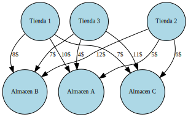
</div>
</div>
<div class="cell docutils container">
<div class="cell_input docutils container">
<div class="highlight-ipython3 notranslate"><div class="highlight"><pre><span></span><span class="c1"># Importamos la biblioteca PuLP</span>
<span class="kn">import</span> <span class="nn">pulp</span>

<span class="c1"># Creamos un problema de minimización</span>
<span class="n">problem</span> <span class="o">=</span> <span class="n">pulp</span><span class="o">.</span><span class="n">LpProblem</span><span class="p">(</span><span class="s2">&quot;Envío de productos&quot;</span><span class="p">,</span> <span class="n">pulp</span><span class="o">.</span><span class="n">LpMinimize</span><span class="p">)</span>

<span class="c1"># Definimos las variables de decisión</span>
<span class="n">x11</span> <span class="o">=</span> <span class="n">pulp</span><span class="o">.</span><span class="n">LpVariable</span><span class="p">(</span><span class="s2">&quot;Costo de productos enviados de la tienda 1 a almacen A&quot;</span><span class="p">,</span> <span class="n">lowBound</span><span class="o">=</span><span class="mi">0</span><span class="p">,</span> <span class="n">cat</span><span class="o">=</span><span class="s1">&#39;Integer&#39;</span><span class="p">)</span>
<span class="n">x12</span> <span class="o">=</span> <span class="n">pulp</span><span class="o">.</span><span class="n">LpVariable</span><span class="p">(</span><span class="s2">&quot;Costo de productos enviados de la tienda 1 a almacen B&quot;</span><span class="p">,</span> <span class="n">lowBound</span><span class="o">=</span><span class="mi">0</span><span class="p">,</span> <span class="n">cat</span><span class="o">=</span><span class="s1">&#39;Integer&#39;</span><span class="p">)</span>
<span class="n">x13</span> <span class="o">=</span> <span class="n">pulp</span><span class="o">.</span><span class="n">LpVariable</span><span class="p">(</span><span class="s2">&quot;Costo de productos enviados de la tienda 1 a almacen C&quot;</span><span class="p">,</span> <span class="n">lowBound</span><span class="o">=</span><span class="mi">0</span><span class="p">,</span> <span class="n">cat</span><span class="o">=</span><span class="s1">&#39;Integer&#39;</span><span class="p">)</span>
<span class="n">x14</span> <span class="o">=</span> <span class="n">pulp</span><span class="o">.</span><span class="n">LpVariable</span><span class="p">(</span><span class="s2">&quot;Costo de productos enviados de la tienda 1 a almacen D Ficticia&quot;</span><span class="p">,</span> <span class="n">lowBound</span><span class="o">=</span><span class="mi">0</span><span class="p">,</span> <span class="n">cat</span><span class="o">=</span><span class="s1">&#39;Integer&#39;</span><span class="p">)</span>
<span class="n">x21</span> <span class="o">=</span> <span class="n">pulp</span><span class="o">.</span><span class="n">LpVariable</span><span class="p">(</span><span class="s2">&quot;Costo de productos enviados de la tienda 2 a almacen A&quot;</span><span class="p">,</span> <span class="n">lowBound</span><span class="o">=</span><span class="mi">0</span><span class="p">,</span> <span class="n">cat</span><span class="o">=</span><span class="s1">&#39;Integer&#39;</span><span class="p">)</span>
<span class="n">x22</span> <span class="o">=</span> <span class="n">pulp</span><span class="o">.</span><span class="n">LpVariable</span><span class="p">(</span><span class="s2">&quot;Costo de productos enviados de la tienda 2 a almacen B&quot;</span><span class="p">,</span> <span class="n">lowBound</span><span class="o">=</span><span class="mi">0</span><span class="p">,</span> <span class="n">cat</span><span class="o">=</span><span class="s1">&#39;Integer&#39;</span><span class="p">)</span>
<span class="n">x23</span> <span class="o">=</span> <span class="n">pulp</span><span class="o">.</span><span class="n">LpVariable</span><span class="p">(</span><span class="s2">&quot;Costo de productos enviados de la tienda 2 a almacen C&quot;</span><span class="p">,</span> <span class="n">lowBound</span><span class="o">=</span><span class="mi">0</span><span class="p">,</span> <span class="n">cat</span><span class="o">=</span><span class="s1">&#39;Integer&#39;</span><span class="p">)</span>
<span class="n">x24</span> <span class="o">=</span> <span class="n">pulp</span><span class="o">.</span><span class="n">LpVariable</span><span class="p">(</span><span class="s2">&quot;Costo de productos enviados de la tienda 2 a almacen D Ficticia&quot;</span><span class="p">,</span> <span class="n">lowBound</span><span class="o">=</span><span class="mi">0</span><span class="p">,</span> <span class="n">cat</span><span class="o">=</span><span class="s1">&#39;Integer&#39;</span><span class="p">)</span>
<span class="n">x31</span> <span class="o">=</span> <span class="n">pulp</span><span class="o">.</span><span class="n">LpVariable</span><span class="p">(</span><span class="s2">&quot;Costo de productos enviados de la tienda 3 a almacen A &quot;</span><span class="p">,</span> <span class="n">lowBound</span><span class="o">=</span><span class="mi">0</span><span class="p">,</span> <span class="n">cat</span><span class="o">=</span><span class="s1">&#39;Integer&#39;</span><span class="p">)</span>
<span class="n">x32</span> <span class="o">=</span> <span class="n">pulp</span><span class="o">.</span><span class="n">LpVariable</span><span class="p">(</span><span class="s2">&quot;Costo de productos enviados de la tienda 3 a almacen B &quot;</span><span class="p">,</span> <span class="n">lowBound</span><span class="o">=</span><span class="mi">0</span><span class="p">,</span> <span class="n">cat</span><span class="o">=</span><span class="s1">&#39;Integer&#39;</span><span class="p">)</span>
<span class="n">x33</span> <span class="o">=</span> <span class="n">pulp</span><span class="o">.</span><span class="n">LpVariable</span><span class="p">(</span><span class="s2">&quot;Costo de productos enviados de la tienda 3 a almacen C &quot;</span><span class="p">,</span> <span class="n">lowBound</span><span class="o">=</span><span class="mi">0</span><span class="p">,</span> <span class="n">cat</span><span class="o">=</span><span class="s1">&#39;Integer&#39;</span><span class="p">)</span>
<span class="n">x34</span> <span class="o">=</span> <span class="n">pulp</span><span class="o">.</span><span class="n">LpVariable</span><span class="p">(</span><span class="s2">&quot;Costo de productos enviados de la tienda 3 a almacen D Ficticia&quot;</span><span class="p">,</span> <span class="n">lowBound</span><span class="o">=</span><span class="mi">0</span><span class="p">,</span> <span class="n">cat</span><span class="o">=</span><span class="s1">&#39;Integer&#39;</span><span class="p">)</span>

<span class="c1"># Definimos la función objetivo</span>
<span class="n">problem</span> <span class="o">+=</span> <span class="mi">10</span><span class="o">*</span><span class="n">x11</span> <span class="o">+</span> <span class="mi">8</span><span class="o">*</span><span class="n">x12</span> <span class="o">+</span> <span class="mi">7</span><span class="o">*</span><span class="n">x13</span> <span class="o">+</span> <span class="mi">5</span><span class="o">*</span><span class="n">x21</span> <span class="o">+</span> <span class="mi">12</span><span class="o">*</span><span class="n">x22</span> <span class="o">+</span><span class="mi">6</span><span class="o">*</span><span class="n">x23</span> <span class="o">+</span> <span class="mi">4</span><span class="o">*</span><span class="n">x31</span> <span class="o">+</span> <span class="mi">7</span><span class="o">*</span><span class="n">x32</span> <span class="o">+</span> <span class="mi">11</span><span class="o">*</span><span class="n">x33</span><span class="p">,</span> <span class="s2">&quot;Costo total de envío&quot;</span>

<span class="c1">#Definimos las restricciones de oferta</span>
<span class="n">problem</span> <span class="o">+=</span> <span class="n">x11</span> <span class="o">+</span> <span class="n">x12</span> <span class="o">+</span> <span class="n">x13</span> <span class="o">&lt;=</span> <span class="mi">200</span><span class="p">,</span> <span class="s2">&quot;Oferta de la tienda 1&quot;</span>
<span class="n">problem</span> <span class="o">+=</span> <span class="n">x21</span> <span class="o">+</span> <span class="n">x22</span> <span class="o">+</span> <span class="n">x23</span> <span class="o">&lt;=</span> <span class="mi">300</span><span class="p">,</span> <span class="s2">&quot;Oferta de la tienda 2&quot;</span>
<span class="n">problem</span> <span class="o">+=</span> <span class="n">x31</span> <span class="o">+</span> <span class="n">x32</span> <span class="o">+</span> <span class="n">x33</span> <span class="o">&lt;=</span> <span class="mi">400</span><span class="p">,</span> <span class="s2">&quot;Oferta de la tienda 3&quot;</span>

<span class="c1">#Definimos las restricciones de demanda</span>
<span class="n">problem</span> <span class="o">+=</span> <span class="n">x11</span> <span class="o">+</span> <span class="n">x21</span> <span class="o">+</span> <span class="n">x31</span> <span class="o">&gt;=</span> <span class="mi">150</span><span class="p">,</span> <span class="s2">&quot;Demanda del almacen A&quot;</span>
<span class="n">problem</span> <span class="o">+=</span> <span class="n">x12</span> <span class="o">+</span> <span class="n">x22</span> <span class="o">+</span> <span class="n">x32</span> <span class="o">&gt;=</span> <span class="mi">250</span><span class="p">,</span> <span class="s2">&quot;Demanda del almacen B&quot;</span>
<span class="n">problem</span> <span class="o">+=</span> <span class="n">x13</span> <span class="o">+</span> <span class="n">x23</span> <span class="o">+</span> <span class="n">x33</span> <span class="o">&gt;=</span> <span class="mi">200</span><span class="p">,</span> <span class="s2">&quot;Demanda del almacen C&quot;</span>
<span class="n">problem</span> <span class="o">+=</span> <span class="n">x14</span> <span class="o">+</span> <span class="n">x24</span> <span class="o">+</span> <span class="n">x34</span> <span class="o">&gt;=</span> <span class="mi">300</span><span class="p">,</span> <span class="s2">&quot;Demanda del almacen D Ficticia&quot;</span>

<span class="c1">#Resolvemos el problema</span>
<span class="n">problem</span><span class="o">.</span><span class="n">solve</span><span class="p">()</span>

<span class="c1">#Imprimimos el resultado</span>
<span class="nb">print</span><span class="p">(</span><span class="s2">&quot;Estado:&quot;</span><span class="p">,</span> <span class="n">pulp</span><span class="o">.</span><span class="n">LpStatus</span><span class="p">[</span><span class="n">problem</span><span class="o">.</span><span class="n">status</span><span class="p">])</span>
<span class="nb">print</span><span class="p">(</span><span class="s2">&quot;Costo total de envío: $&quot;</span><span class="p">,</span> <span class="nb">round</span><span class="p">(</span><span class="n">pulp</span><span class="o">.</span><span class="n">value</span><span class="p">(</span><span class="n">problem</span><span class="o">.</span><span class="n">objective</span><span class="p">),</span> <span class="mi">2</span><span class="p">))</span>

<span class="k">for</span> <span class="n">variable</span> <span class="ow">in</span> <span class="n">problem</span><span class="o">.</span><span class="n">variables</span><span class="p">():</span>
    <span class="nb">print</span><span class="p">(</span><span class="n">variable</span><span class="o">.</span><span class="n">name</span><span class="p">,</span> <span class="s2">&quot;=&quot;</span><span class="p">,</span> <span class="n">variable</span><span class="o">.</span><span class="n">varValue</span><span class="p">)</span>
</pre></div>
</div>
</div>
<div class="cell_output docutils container">
<div class="output stream highlight-myst-ansi notranslate"><div class="highlight"><pre><span></span>Estado: Optimal
Costo total de envío: $ 3550.0
Costo_de_productos_enviados_de_la_tienda_1_a_almacen_A = 0.0
Costo_de_productos_enviados_de_la_tienda_1_a_almacen_B = 0.0
Costo_de_productos_enviados_de_la_tienda_1_a_almacen_C = 0.0
Costo_de_productos_enviados_de_la_tienda_1_a_almacen_D_Ficticia = 300.0
Costo_de_productos_enviados_de_la_tienda_2_a_almacen_A = 0.0
Costo_de_productos_enviados_de_la_tienda_2_a_almacen_B = 0.0
Costo_de_productos_enviados_de_la_tienda_2_a_almacen_C = 200.0
Costo_de_productos_enviados_de_la_tienda_2_a_almacen_D_Ficticia = 0.0
Costo_de_productos_enviados_de_la_tienda_3_a_almacen_A_ = 150.0
Costo_de_productos_enviados_de_la_tienda_3_a_almacen_B_ = 250.0
Costo_de_productos_enviados_de_la_tienda_3_a_almacen_C_ = 0.0
Costo_de_productos_enviados_de_la_tienda_3_a_almacen_D_Ficticia = 0.0
</pre></div>
</div>
<div class="output stderr highlight-myst-ansi notranslate"><div class="highlight"><pre><span></span>/usr/local/lib/python3.10/dist-packages/pulp/pulp.py:1352: UserWarning: Spaces are not permitted in the name. Converted to &#39;_&#39;
  warnings.warn(&quot;Spaces are not permitted in the name. Converted to &#39;_&#39;&quot;)
</pre></div>
</div>
</div>
</div>
</section>
<section id="ejercicio-numero-tres">
<h5>Ejercicio numero Tres<a class="headerlink" href="#ejercicio-numero-tres" title="Link to this heading">#</a></h5>
<div class="cell docutils container">
<div class="cell_input docutils container">
<div class="highlight-ipython3 notranslate"><div class="highlight"><pre><span></span><span class="kn">import</span> <span class="nn">pandas</span> <span class="k">as</span> <span class="nn">pd</span>

<span class="c1"># Crear diccionario con los datos</span>
<span class="n">datos</span> <span class="o">=</span> <span class="p">{</span><span class="s1">&#39;Almacén A&#39;</span><span class="p">:</span> <span class="p">[</span><span class="s1">&#39;4$&#39;</span><span class="p">,</span> <span class="s1">&#39;7$&#39;</span><span class="p">,</span> <span class="s1">&#39;2$&#39;</span><span class="p">],</span>
         <span class="s1">&#39;Almacén B&#39;</span><span class="p">:</span> <span class="p">[</span><span class="s1">&#39;6$&#39;</span><span class="p">,</span> <span class="s1">&#39;3$&#39;</span><span class="p">,</span> <span class="s1">&#39;5$&#39;</span><span class="p">],</span>
         <span class="s1">&#39;Almacén C&#39;</span><span class="p">:</span> <span class="p">[</span><span class="s1">&#39;9$&#39;</span><span class="p">,</span> <span class="s1">&#39;5$&#39;</span><span class="p">,</span> <span class="s1">&#39;11$&#39;</span><span class="p">],</span>
         <span class="s1">&#39;Almacén D&#39;</span><span class="p">:</span> <span class="p">[</span><span class="s1">&#39;5$&#39;</span><span class="p">,</span> <span class="s1">&#39;8$&#39;</span><span class="p">,</span> <span class="s1">&#39;7$&#39;</span><span class="p">]}</span>

<span class="c1"># Convertir diccionario en dataframe de pandas</span>
<span class="n">df</span> <span class="o">=</span> <span class="n">pd</span><span class="o">.</span><span class="n">DataFrame</span><span class="p">(</span><span class="n">datos</span><span class="p">)</span>

<span class="c1"># Asignar nombres de las filas y columnas</span>
<span class="n">df</span><span class="o">.</span><span class="n">index</span> <span class="o">=</span> <span class="p">[</span><span class="s1">&#39;Tienda 1&#39;</span><span class="p">,</span> <span class="s1">&#39;Tienda 2&#39;</span><span class="p">,</span> <span class="s1">&#39;Tienda 3&#39;</span><span class="p">]</span>
<span class="n">df</span><span class="o">.</span><span class="n">columns</span><span class="o">.</span><span class="n">name</span> <span class="o">=</span> <span class="s1">&#39;Almacenes&#39;</span>

<span class="c1"># Agregar fila y columna de oferta y demanda</span>
<span class="n">df</span><span class="o">.</span><span class="n">loc</span><span class="p">[</span><span class="s1">&#39;Demanda&#39;</span><span class="p">]</span> <span class="o">=</span> <span class="p">[</span><span class="s1">&#39;400&#39;</span><span class="p">,</span> <span class="s1">&#39;400&#39;</span><span class="p">,</span> <span class="s1">&#39;300&#39;</span><span class="p">,</span> <span class="s1">&#39;300&#39;</span><span class="p">]</span>
<span class="n">df</span><span class="p">[</span><span class="s1">&#39;Oferta&#39;</span><span class="p">]</span> <span class="o">=</span> <span class="p">[</span><span class="s1">&#39;300&#39;</span><span class="p">,</span> <span class="s1">&#39;400&#39;</span><span class="p">,</span> <span class="s1">&#39;500&#39;</span><span class="p">,</span> <span class="s1">&#39;-&#39;</span><span class="p">]</span>

<span class="c1"># Imprimir tabla</span>
<span class="nb">print</span><span class="p">(</span><span class="n">df</span><span class="p">)</span>
</pre></div>
</div>
</div>
<div class="cell_output docutils container">
<div class="output stream highlight-myst-ansi notranslate"><div class="highlight"><pre><span></span>Almacenes Almacén A Almacén B Almacén C Almacén D Oferta
Tienda 1         4$        6$        9$        5$    300
Tienda 2         7$        3$        5$        8$    400
Tienda 3         2$        5$       11$        7$    500
Demanda         400       400       300       300      -
</pre></div>
</div>
</div>
</div>
<div class="cell docutils container">
<div class="cell_input docutils container">
<div class="highlight-ipython3 notranslate"><div class="highlight"><pre><span></span><span class="kn">import</span> <span class="nn">graphviz</span>

<span class="n">graph</span> <span class="o">=</span> <span class="n">graphviz</span><span class="o">.</span><span class="n">Graph</span><span class="p">(</span><span class="n">engine</span><span class="o">=</span><span class="s1">&#39;neato&#39;</span><span class="p">)</span>

<span class="c1"># Crear grafo</span>
<span class="n">dot</span> <span class="o">=</span> <span class="n">graphviz</span><span class="o">.</span><span class="n">Digraph</span><span class="p">()</span>


<span class="c1"># Agregar nodos</span>
<span class="n">dot</span><span class="o">.</span><span class="n">node</span><span class="p">(</span><span class="s1">&#39;Tienda 1&#39;</span><span class="p">,</span> <span class="n">shape</span><span class="o">=</span><span class="s2">&quot;circle&quot;</span><span class="p">,</span> <span class="n">style</span><span class="o">=</span><span class="s2">&quot;filled&quot;</span><span class="p">,</span> <span class="n">fillcolor</span><span class="o">=</span><span class="s2">&quot;#ADD8E6&quot;</span><span class="p">,</span> <span class="n">fontsize</span><span class="o">=</span> <span class="s1">&#39;10&#39;</span><span class="p">)</span>
<span class="n">dot</span><span class="o">.</span><span class="n">node</span><span class="p">(</span><span class="s1">&#39;Tienda 2&#39;</span><span class="p">,</span> <span class="n">shape</span><span class="o">=</span><span class="s2">&quot;circle&quot;</span><span class="p">,</span> <span class="n">style</span><span class="o">=</span><span class="s2">&quot;filled&quot;</span><span class="p">,</span> <span class="n">fillcolor</span><span class="o">=</span><span class="s2">&quot;#ADD8E6&quot;</span><span class="p">,</span><span class="n">fontsize</span><span class="o">=</span> <span class="s1">&#39;10&#39;</span><span class="p">)</span>
<span class="n">dot</span><span class="o">.</span><span class="n">node</span><span class="p">(</span><span class="s1">&#39;Tienda 3&#39;</span><span class="p">,</span> <span class="n">shape</span><span class="o">=</span><span class="s2">&quot;circle&quot;</span><span class="p">,</span> <span class="n">style</span><span class="o">=</span><span class="s2">&quot;filled&quot;</span><span class="p">,</span> <span class="n">fillcolor</span><span class="o">=</span><span class="s2">&quot;#ADD8E6&quot;</span><span class="p">,</span><span class="n">fontsize</span><span class="o">=</span> <span class="s1">&#39;10&#39;</span><span class="p">)</span>
<span class="n">dot</span><span class="o">.</span><span class="n">node</span><span class="p">(</span><span class="s1">&#39;Almacen A&#39;</span><span class="p">,</span> <span class="n">shape</span><span class="o">=</span><span class="s2">&quot;circle&quot;</span><span class="p">,</span> <span class="n">style</span><span class="o">=</span><span class="s2">&quot;filled&quot;</span><span class="p">,</span> <span class="n">fillcolor</span><span class="o">=</span><span class="s2">&quot;#ADD8E6&quot;</span><span class="p">,</span><span class="n">fontsize</span><span class="o">=</span> <span class="s1">&#39;10&#39;</span><span class="p">)</span>
<span class="n">dot</span><span class="o">.</span><span class="n">node</span><span class="p">(</span><span class="s1">&#39;Almacen B&#39;</span><span class="p">,</span> <span class="n">shape</span><span class="o">=</span><span class="s2">&quot;circle&quot;</span><span class="p">,</span> <span class="n">style</span><span class="o">=</span><span class="s2">&quot;filled&quot;</span><span class="p">,</span> <span class="n">fillcolor</span><span class="o">=</span><span class="s2">&quot;#ADD8E6&quot;</span><span class="p">,</span><span class="n">fontsize</span><span class="o">=</span> <span class="s1">&#39;10&#39;</span><span class="p">)</span>
<span class="n">dot</span><span class="o">.</span><span class="n">node</span><span class="p">(</span><span class="s1">&#39;Almacen C&#39;</span><span class="p">,</span> <span class="n">shape</span><span class="o">=</span><span class="s2">&quot;circle&quot;</span><span class="p">,</span> <span class="n">style</span><span class="o">=</span><span class="s2">&quot;filled&quot;</span><span class="p">,</span> <span class="n">fillcolor</span><span class="o">=</span><span class="s2">&quot;#ADD8E6&quot;</span><span class="p">,</span><span class="n">fontsize</span><span class="o">=</span> <span class="s1">&#39;10&#39;</span><span class="p">)</span>
<span class="n">dot</span><span class="o">.</span><span class="n">node</span><span class="p">(</span><span class="s1">&#39;Almacen D&#39;</span><span class="p">,</span> <span class="n">shape</span><span class="o">=</span><span class="s2">&quot;circle&quot;</span><span class="p">,</span> <span class="n">style</span><span class="o">=</span><span class="s2">&quot;filled&quot;</span><span class="p">,</span> <span class="n">fillcolor</span><span class="o">=</span><span class="s2">&quot;#ADD8E6&quot;</span><span class="p">,</span><span class="n">fontsize</span><span class="o">=</span> <span class="s1">&#39;10&#39;</span><span class="p">)</span>

<span class="c1"># Agregar aristas</span>
<span class="n">dot</span><span class="o">.</span><span class="n">edge</span><span class="p">(</span><span class="s1">&#39;Tienda 1&#39;</span><span class="p">,</span> <span class="s1">&#39;Almacen A&#39;</span><span class="p">,</span> <span class="n">label</span><span class="o">=</span><span class="s1">&#39;4$&#39;</span><span class="p">,</span><span class="n">fontsize</span><span class="o">=</span> <span class="s1">&#39;10&#39;</span><span class="p">)</span>
<span class="n">dot</span><span class="o">.</span><span class="n">edge</span><span class="p">(</span><span class="s1">&#39;Tienda 1&#39;</span><span class="p">,</span> <span class="s1">&#39;Almacen B&#39;</span><span class="p">,</span> <span class="n">label</span><span class="o">=</span><span class="s1">&#39;7$&#39;</span><span class="p">,</span><span class="n">fontsize</span><span class="o">=</span> <span class="s1">&#39;10&#39;</span><span class="p">)</span>
<span class="n">dot</span><span class="o">.</span><span class="n">edge</span><span class="p">(</span><span class="s1">&#39;Tienda 1&#39;</span><span class="p">,</span> <span class="s1">&#39;Almacen C&#39;</span><span class="p">,</span> <span class="n">label</span><span class="o">=</span><span class="s1">&#39;2$&#39;</span><span class="p">,</span><span class="n">fontsize</span><span class="o">=</span> <span class="s1">&#39;10&#39;</span><span class="p">)</span>
<span class="n">dot</span><span class="o">.</span><span class="n">edge</span><span class="p">(</span><span class="s1">&#39;Tienda 1&#39;</span><span class="p">,</span> <span class="s1">&#39;Almacen D&#39;</span><span class="p">,</span> <span class="n">label</span><span class="o">=</span><span class="s1">&#39;5$&#39;</span><span class="p">,</span><span class="n">fontsize</span><span class="o">=</span> <span class="s1">&#39;10&#39;</span><span class="p">)</span>

<span class="n">dot</span><span class="o">.</span><span class="n">edge</span><span class="p">(</span><span class="s1">&#39;Tienda 2&#39;</span><span class="p">,</span> <span class="s1">&#39;Almacen A&#39;</span><span class="p">,</span> <span class="n">label</span><span class="o">=</span><span class="s1">&#39;6$&#39;</span><span class="p">,</span><span class="n">fontsize</span><span class="o">=</span> <span class="s1">&#39;10&#39;</span><span class="p">)</span>
<span class="n">dot</span><span class="o">.</span><span class="n">edge</span><span class="p">(</span><span class="s1">&#39;Tienda 2&#39;</span><span class="p">,</span> <span class="s1">&#39;Almacen B&#39;</span><span class="p">,</span> <span class="n">label</span><span class="o">=</span><span class="s1">&#39;3$&#39;</span><span class="p">,</span><span class="n">fontsize</span><span class="o">=</span> <span class="s1">&#39;10&#39;</span><span class="p">)</span>
<span class="n">dot</span><span class="o">.</span><span class="n">edge</span><span class="p">(</span><span class="s1">&#39;Tienda 2&#39;</span><span class="p">,</span> <span class="s1">&#39;Almacen C&#39;</span><span class="p">,</span> <span class="n">label</span><span class="o">=</span><span class="s1">&#39;5$&#39;</span><span class="p">,</span><span class="n">fontsize</span><span class="o">=</span> <span class="s1">&#39;10&#39;</span><span class="p">)</span>
<span class="n">dot</span><span class="o">.</span><span class="n">edge</span><span class="p">(</span><span class="s1">&#39;Tienda 2&#39;</span><span class="p">,</span> <span class="s1">&#39;Almacen D&#39;</span><span class="p">,</span> <span class="n">label</span><span class="o">=</span><span class="s1">&#39;8$&#39;</span><span class="p">,</span><span class="n">fontsize</span><span class="o">=</span> <span class="s1">&#39;10&#39;</span><span class="p">)</span>

<span class="n">dot</span><span class="o">.</span><span class="n">edge</span><span class="p">(</span><span class="s1">&#39;Tienda 3&#39;</span><span class="p">,</span> <span class="s1">&#39;Almacen A&#39;</span><span class="p">,</span> <span class="n">label</span><span class="o">=</span><span class="s1">&#39;9$&#39;</span><span class="p">,</span><span class="n">fontsize</span><span class="o">=</span> <span class="s1">&#39;10&#39;</span><span class="p">)</span>
<span class="n">dot</span><span class="o">.</span><span class="n">edge</span><span class="p">(</span><span class="s1">&#39;Tienda 3&#39;</span><span class="p">,</span> <span class="s1">&#39;Almacen B&#39;</span><span class="p">,</span> <span class="n">label</span><span class="o">=</span><span class="s1">&#39;5$&#39;</span><span class="p">,</span><span class="n">fontsize</span><span class="o">=</span> <span class="s1">&#39;10&#39;</span><span class="p">)</span>
<span class="n">dot</span><span class="o">.</span><span class="n">edge</span><span class="p">(</span><span class="s1">&#39;Tienda 3&#39;</span><span class="p">,</span> <span class="s1">&#39;Almacen C&#39;</span><span class="p">,</span> <span class="n">label</span><span class="o">=</span><span class="s1">&#39;11$&#39;</span><span class="p">,</span><span class="n">fontsize</span><span class="o">=</span> <span class="s1">&#39;10&#39;</span><span class="p">)</span>
<span class="n">dot</span><span class="o">.</span><span class="n">edge</span><span class="p">(</span><span class="s1">&#39;Tienda 3&#39;</span><span class="p">,</span> <span class="s1">&#39;Almacen D&#39;</span><span class="p">,</span> <span class="n">label</span><span class="o">=</span><span class="s1">&#39;7$&#39;</span><span class="p">,</span><span class="n">fontsize</span><span class="o">=</span> <span class="s1">&#39;10&#39;</span><span class="p">)</span>

<span class="c1"># Mostrar grafo</span>
<span class="n">dot</span>
</pre></div>
</div>
</div>
<div class="cell_output docutils container">
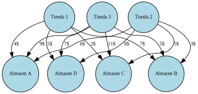
</div>
</div>
<div class="cell docutils container">
<div class="cell_input docutils container">
<div class="highlight-ipython3 notranslate"><div class="highlight"><pre><span></span><span class="c1"># Importamos la biblioteca PuLP</span>
<span class="kn">import</span> <span class="nn">pulp</span>

<span class="c1"># Creamos un problema de minimización</span>
<span class="n">problem</span> <span class="o">=</span> <span class="n">pulp</span><span class="o">.</span><span class="n">LpProblem</span><span class="p">(</span><span class="s2">&quot;Envío de productos&quot;</span><span class="p">,</span> <span class="n">pulp</span><span class="o">.</span><span class="n">LpMinimize</span><span class="p">)</span>

<span class="c1"># Definimos las variables de decisión</span>
<span class="n">x11</span> <span class="o">=</span> <span class="n">pulp</span><span class="o">.</span><span class="n">LpVariable</span><span class="p">(</span><span class="s2">&quot;tienda 1 a almacen A&quot;</span><span class="p">,</span> <span class="n">lowBound</span><span class="o">=</span><span class="mi">0</span><span class="p">,</span> <span class="n">cat</span><span class="o">=</span><span class="s1">&#39;Integer&#39;</span><span class="p">)</span>
<span class="n">x12</span> <span class="o">=</span> <span class="n">pulp</span><span class="o">.</span><span class="n">LpVariable</span><span class="p">(</span><span class="s2">&quot;tienda 1 a almacen B&quot;</span><span class="p">,</span> <span class="n">lowBound</span><span class="o">=</span><span class="mi">0</span><span class="p">,</span> <span class="n">cat</span><span class="o">=</span><span class="s1">&#39;Integer&#39;</span><span class="p">)</span>
<span class="n">x13</span> <span class="o">=</span> <span class="n">pulp</span><span class="o">.</span><span class="n">LpVariable</span><span class="p">(</span><span class="s2">&quot;tienda 1 a almacen C&quot;</span><span class="p">,</span> <span class="n">lowBound</span><span class="o">=</span><span class="mi">0</span><span class="p">,</span> <span class="n">cat</span><span class="o">=</span><span class="s1">&#39;Integer&#39;</span><span class="p">)</span>
<span class="n">x14</span> <span class="o">=</span> <span class="n">pulp</span><span class="o">.</span><span class="n">LpVariable</span><span class="p">(</span><span class="s2">&quot;tienda 1 a almacen D&quot;</span><span class="p">,</span> <span class="n">lowBound</span><span class="o">=</span><span class="mi">0</span><span class="p">,</span> <span class="n">cat</span><span class="o">=</span><span class="s1">&#39;Integer&#39;</span><span class="p">)</span>
<span class="n">x21</span> <span class="o">=</span> <span class="n">pulp</span><span class="o">.</span><span class="n">LpVariable</span><span class="p">(</span><span class="s2">&quot;tienda 2 a almacen A&quot;</span><span class="p">,</span> <span class="n">lowBound</span><span class="o">=</span><span class="mi">0</span><span class="p">,</span> <span class="n">cat</span><span class="o">=</span><span class="s1">&#39;Integer&#39;</span><span class="p">)</span>
<span class="n">x22</span> <span class="o">=</span> <span class="n">pulp</span><span class="o">.</span><span class="n">LpVariable</span><span class="p">(</span><span class="s2">&quot;tienda 2 a almacen B&quot;</span><span class="p">,</span> <span class="n">lowBound</span><span class="o">=</span><span class="mi">0</span><span class="p">,</span> <span class="n">cat</span><span class="o">=</span><span class="s1">&#39;Integer&#39;</span><span class="p">)</span>
<span class="n">x23</span> <span class="o">=</span> <span class="n">pulp</span><span class="o">.</span><span class="n">LpVariable</span><span class="p">(</span><span class="s2">&quot;tienda 2 a almacen C&quot;</span><span class="p">,</span> <span class="n">lowBound</span><span class="o">=</span><span class="mi">0</span><span class="p">,</span> <span class="n">cat</span><span class="o">=</span><span class="s1">&#39;Integer&#39;</span><span class="p">)</span>
<span class="n">x24</span> <span class="o">=</span> <span class="n">pulp</span><span class="o">.</span><span class="n">LpVariable</span><span class="p">(</span><span class="s2">&quot;tienda 2 a almacen D&quot;</span><span class="p">,</span> <span class="n">lowBound</span><span class="o">=</span><span class="mi">0</span><span class="p">,</span> <span class="n">cat</span><span class="o">=</span><span class="s1">&#39;Integer&#39;</span><span class="p">)</span>
<span class="n">x31</span> <span class="o">=</span> <span class="n">pulp</span><span class="o">.</span><span class="n">LpVariable</span><span class="p">(</span><span class="s2">&quot;tienda 3 a almacen A&quot;</span><span class="p">,</span> <span class="n">lowBound</span><span class="o">=</span><span class="mi">0</span><span class="p">,</span> <span class="n">cat</span><span class="o">=</span><span class="s1">&#39;Integer&#39;</span><span class="p">)</span>
<span class="n">x32</span> <span class="o">=</span> <span class="n">pulp</span><span class="o">.</span><span class="n">LpVariable</span><span class="p">(</span><span class="s2">&quot;tienda 3 a almacen B&quot;</span><span class="p">,</span> <span class="n">lowBound</span><span class="o">=</span><span class="mi">0</span><span class="p">,</span> <span class="n">cat</span><span class="o">=</span><span class="s1">&#39;Integer&#39;</span><span class="p">)</span>
<span class="n">x33</span> <span class="o">=</span> <span class="n">pulp</span><span class="o">.</span><span class="n">LpVariable</span><span class="p">(</span><span class="s2">&quot;tienda 3 a almacen C&quot;</span><span class="p">,</span> <span class="n">lowBound</span><span class="o">=</span><span class="mi">0</span><span class="p">,</span> <span class="n">cat</span><span class="o">=</span><span class="s1">&#39;Integer&#39;</span><span class="p">)</span>
<span class="n">x34</span> <span class="o">=</span> <span class="n">pulp</span><span class="o">.</span><span class="n">LpVariable</span><span class="p">(</span><span class="s2">&quot;tienda 3 a almacen D&quot;</span><span class="p">,</span> <span class="n">lowBound</span><span class="o">=</span><span class="mi">0</span><span class="p">,</span> <span class="n">cat</span><span class="o">=</span><span class="s1">&#39;Integer&#39;</span><span class="p">)</span>
<span class="n">x41</span> <span class="o">=</span> <span class="n">pulp</span><span class="o">.</span><span class="n">LpVariable</span><span class="p">(</span><span class="s2">&quot;tienda 4 Ficticia a almacen A&quot;</span><span class="p">,</span> <span class="n">lowBound</span><span class="o">=</span><span class="mi">0</span><span class="p">,</span> <span class="n">cat</span><span class="o">=</span><span class="s1">&#39;Integer&#39;</span><span class="p">)</span>
<span class="n">x42</span> <span class="o">=</span> <span class="n">pulp</span><span class="o">.</span><span class="n">LpVariable</span><span class="p">(</span><span class="s2">&quot;tienda 4 Ficticia a almacen B&quot;</span><span class="p">,</span> <span class="n">lowBound</span><span class="o">=</span><span class="mi">0</span><span class="p">,</span> <span class="n">cat</span><span class="o">=</span><span class="s1">&#39;Integer&#39;</span><span class="p">)</span>
<span class="n">x43</span> <span class="o">=</span> <span class="n">pulp</span><span class="o">.</span><span class="n">LpVariable</span><span class="p">(</span><span class="s2">&quot;tienda 4 Ficticia a almacen C&quot;</span><span class="p">,</span> <span class="n">lowBound</span><span class="o">=</span><span class="mi">0</span><span class="p">,</span> <span class="n">cat</span><span class="o">=</span><span class="s1">&#39;Integer&#39;</span><span class="p">)</span>
<span class="n">x44</span> <span class="o">=</span> <span class="n">pulp</span><span class="o">.</span><span class="n">LpVariable</span><span class="p">(</span><span class="s2">&quot;tienda 4 Ficticia a almacen D&quot;</span><span class="p">,</span> <span class="n">lowBound</span><span class="o">=</span><span class="mi">0</span><span class="p">,</span> <span class="n">cat</span><span class="o">=</span><span class="s1">&#39;Integer&#39;</span><span class="p">)</span>

<span class="c1"># Definimos la función objetivo</span>
<span class="n">problem</span> <span class="o">+=</span> <span class="p">(</span><span class="mi">4</span><span class="o">*</span><span class="n">x11</span> <span class="o">+</span> <span class="mi">6</span><span class="o">*</span><span class="n">x12</span> <span class="o">+</span> <span class="mi">9</span><span class="o">*</span><span class="n">x13</span> <span class="o">+</span> <span class="mi">5</span><span class="o">*</span><span class="n">x14</span> <span class="o">+</span> <span class="mi">7</span><span class="o">*</span><span class="n">x21</span> <span class="o">+</span> <span class="mi">3</span><span class="o">*</span><span class="n">x22</span> <span class="o">+</span><span class="mi">5</span><span class="o">*</span><span class="n">x23</span> <span class="o">+</span> <span class="mi">8</span><span class="o">*</span><span class="n">x24</span> <span class="o">+</span> <span class="mi">2</span><span class="o">*</span><span class="n">x31</span> <span class="o">+</span> <span class="mi">5</span><span class="o">*</span><span class="n">x32</span> <span class="o">+</span> <span class="mi">11</span><span class="o">*</span><span class="n">x33</span> <span class="o">+</span> <span class="mi">7</span><span class="o">*</span><span class="n">x34</span><span class="p">)</span>

<span class="c1">#Definimos las restricciones de oferta</span>
<span class="n">problem</span> <span class="o">+=</span> <span class="n">x11</span> <span class="o">+</span> <span class="n">x12</span> <span class="o">+</span> <span class="n">x13</span> <span class="o">+</span> <span class="n">x14</span> <span class="o">&lt;=</span> <span class="mi">200</span><span class="p">,</span> <span class="s2">&quot;Oferta de la tienda 1&quot;</span>
<span class="n">problem</span> <span class="o">+=</span> <span class="n">x21</span> <span class="o">+</span> <span class="n">x22</span> <span class="o">+</span> <span class="n">x23</span> <span class="o">+</span> <span class="n">x24</span> <span class="o">&lt;=</span> <span class="mi">300</span><span class="p">,</span> <span class="s2">&quot;Oferta de la tienda 2&quot;</span>
<span class="n">problem</span> <span class="o">+=</span> <span class="n">x31</span> <span class="o">+</span> <span class="n">x32</span> <span class="o">+</span> <span class="n">x33</span> <span class="o">+</span> <span class="n">x34</span> <span class="o">&lt;=</span> <span class="mi">400</span><span class="p">,</span> <span class="s2">&quot;Oferta de la tienda 3&quot;</span>
<span class="n">problem</span> <span class="o">+=</span> <span class="n">x41</span> <span class="o">+</span> <span class="n">x42</span> <span class="o">+</span> <span class="n">x43</span> <span class="o">+</span> <span class="n">x44</span> <span class="o">&lt;=</span> <span class="mi">500</span><span class="p">,</span> <span class="s2">&quot;Oferta de la tienda 4 Ficticia&quot;</span>

<span class="c1">#Definimos las restricciones de demanda</span>
<span class="n">problem</span> <span class="o">+=</span> <span class="n">x11</span> <span class="o">+</span> <span class="n">x21</span> <span class="o">+</span> <span class="n">x31</span> <span class="o">+</span> <span class="n">x41</span> <span class="o">&gt;=</span> <span class="mi">400</span><span class="p">,</span> <span class="s2">&quot;Demanda del almacen A&quot;</span>
<span class="n">problem</span> <span class="o">+=</span> <span class="n">x12</span> <span class="o">+</span> <span class="n">x22</span> <span class="o">+</span> <span class="n">x32</span> <span class="o">+</span> <span class="n">x42</span> <span class="o">&gt;=</span> <span class="mi">400</span><span class="p">,</span> <span class="s2">&quot;Demanda del almacen B&quot;</span>
<span class="n">problem</span> <span class="o">+=</span> <span class="n">x13</span> <span class="o">+</span> <span class="n">x23</span> <span class="o">+</span> <span class="n">x33</span> <span class="o">+</span> <span class="n">x43</span> <span class="o">&gt;=</span> <span class="mi">300</span><span class="p">,</span> <span class="s2">&quot;Demanda del almacen C&quot;</span>
<span class="n">problem</span> <span class="o">+=</span> <span class="n">x14</span> <span class="o">+</span> <span class="n">x24</span> <span class="o">+</span> <span class="n">x34</span> <span class="o">+</span> <span class="n">x44</span> <span class="o">&gt;=</span> <span class="mi">300</span><span class="p">,</span> <span class="s2">&quot;Demanda del almacen D&quot;</span>

<span class="c1">#Resolvemos el problema</span>
<span class="n">problem</span><span class="o">.</span><span class="n">solve</span><span class="p">()</span>

<span class="c1">#Imprimimos el resultado</span>
<span class="nb">print</span><span class="p">(</span><span class="s2">&quot;Estado:&quot;</span><span class="p">,</span> <span class="n">pulp</span><span class="o">.</span><span class="n">LpStatus</span><span class="p">[</span><span class="n">problem</span><span class="o">.</span><span class="n">status</span><span class="p">])</span>
<span class="nb">print</span><span class="p">(</span><span class="s2">&quot;Costo total de transporte: $&quot;</span><span class="p">,</span> <span class="nb">round</span><span class="p">(</span><span class="n">pulp</span><span class="o">.</span><span class="n">value</span><span class="p">(</span><span class="n">problem</span><span class="o">.</span><span class="n">objective</span><span class="p">),</span> <span class="mi">2</span><span class="p">))</span>

<span class="k">for</span> <span class="n">variable</span> <span class="ow">in</span> <span class="n">problem</span><span class="o">.</span><span class="n">variables</span><span class="p">():</span>
    <span class="nb">print</span><span class="p">(</span><span class="n">variable</span><span class="o">.</span><span class="n">name</span><span class="p">,</span> <span class="s2">&quot;=&quot;</span><span class="p">,</span> <span class="n">variable</span><span class="o">.</span><span class="n">varValue</span><span class="p">)</span>
</pre></div>
</div>
</div>
</div>
</section>
<section id="ejercicio-numero-cuatro">
<h5>Ejercicio Numero Cuatro<a class="headerlink" href="#ejercicio-numero-cuatro" title="Link to this heading">#</a></h5>
<div class="cell docutils container">
<div class="cell_input docutils container">
<div class="highlight-ipython3 notranslate"><div class="highlight"><pre><span></span><span class="n">datos</span> <span class="o">=</span> <span class="p">[{</span><span class="s1">&#39;Items&#39;</span><span class="p">:</span> <span class="s1">&#39;Tienda 1&#39;</span><span class="p">,</span> <span class="s1">&#39;Almacen A&#39;</span><span class="p">:</span> <span class="mi">6</span><span class="p">,</span> <span class="s1">&#39;Almacen B&#39;</span><span class="p">:</span> <span class="mi">8</span><span class="p">,</span> <span class="s1">&#39;Almacen C&#39;</span><span class="p">:</span> <span class="mi">10</span><span class="p">,</span> <span class="s1">&#39;Almacen D&#39;</span><span class="p">:</span> <span class="mi">9</span><span class="p">,</span> <span class="s1">&#39;Almacen E&#39;</span><span class="p">:</span> <span class="mi">7</span><span class="p">,</span> <span class="s1">&#39;Oferta&#39;</span><span class="p">:</span> <span class="mi">500</span><span class="p">},</span>
         <span class="p">{</span><span class="s1">&#39;Items&#39;</span><span class="p">:</span> <span class="s1">&#39;Tienda 2&#39;</span><span class="p">,</span> <span class="s1">&#39;Almacen A&#39;</span><span class="p">:</span> <span class="mi">5</span><span class="p">,</span> <span class="s1">&#39;Almacen B&#39;</span><span class="p">:</span> <span class="mi">11</span><span class="p">,</span> <span class="s1">&#39;Almacen C&#39;</span><span class="p">:</span> <span class="mi">7</span><span class="p">,</span> <span class="s1">&#39;Almacen D&#39;</span><span class="p">:</span> <span class="mi">4</span><span class="p">,</span> <span class="s1">&#39;Almacen E&#39;</span><span class="p">:</span> <span class="mi">3</span><span class="p">,</span><span class="s1">&#39;Oferta&#39;</span><span class="p">:</span> <span class="mi">400</span><span class="p">},</span>
         <span class="p">{</span><span class="s1">&#39;Items&#39;</span><span class="p">:</span> <span class="s1">&#39;Tienda 3&#39;</span><span class="p">,</span> <span class="s1">&#39;Almacen A&#39;</span><span class="p">:</span> <span class="mi">12</span><span class="p">,</span> <span class="s1">&#39;Almacen B&#39;</span><span class="p">:</span> <span class="mi">9</span><span class="p">,</span> <span class="s1">&#39;Almacen C&#39;</span><span class="p">:</span> <span class="mi">3</span><span class="p">,</span><span class="s1">&#39;Almacen D&#39;</span><span class="p">:</span> <span class="mi">8</span><span class="p">,</span> <span class="s1">&#39;Almacen E&#39;</span><span class="p">:</span> <span class="mi">6</span><span class="p">,</span> <span class="s1">&#39;Oferta&#39;</span><span class="p">:</span> <span class="mi">300</span><span class="p">},</span>
         <span class="p">{</span><span class="s1">&#39;Items&#39;</span><span class="p">:</span> <span class="s1">&#39;Demanda&#39;</span><span class="p">,</span> <span class="s1">&#39;Almacen A&#39;</span><span class="p">:</span> <span class="mi">300</span><span class="p">,</span> <span class="s1">&#39;Almacen B&#39;</span><span class="p">:</span> <span class="mi">400</span><span class="p">,</span> <span class="s1">&#39;Almacen C&#39;</span><span class="p">:</span> <span class="mi">408</span><span class="p">,</span><span class="s1">&#39;Almacen D&#39;</span><span class="p">:</span> <span class="mi">200</span><span class="p">,</span> <span class="s1">&#39;Almacen E&#39;</span><span class="p">:</span> <span class="mi">400</span><span class="p">,</span> <span class="s1">&#39;Oferta&#39;</span><span class="p">:</span> <span class="mi">0</span><span class="p">}]</span>

<span class="n">df_datos</span> <span class="o">=</span> <span class="n">pd</span><span class="o">.</span><span class="n">DataFrame</span><span class="p">(</span><span class="n">datos</span><span class="p">)</span>
<span class="n">df_datos</span> <span class="o">=</span> <span class="n">df_datos</span><span class="o">.</span><span class="n">set_index</span><span class="p">(</span><span class="s1">&#39;Items&#39;</span> <span class="p">,</span> <span class="n">drop</span><span class="o">=</span> <span class="kc">True</span><span class="p">)</span>
<span class="n">df_datos</span>
</pre></div>
</div>
</div>
<div class="cell_output docutils container">
<div class="output text_html">
  <div id="df-76205cb8-6704-4c6c-b4db-1f02582b45dc">
    <div class="colab-df-container">
      <div>
<style scoped>
    .dataframe tbody tr th:only-of-type {
        vertical-align: middle;
    }

    .dataframe tbody tr th {
        vertical-align: top;
    }

    .dataframe thead th {
        text-align: right;
    }
</style>
<table border="1" class="dataframe">
  <thead>
    <tr style="text-align: right;">
      <th></th>
      <th>Almacen A</th>
      <th>Almacen B</th>
      <th>Almacen C</th>
      <th>Almacen D</th>
      <th>Almacen E</th>
      <th>Oferta</th>
    </tr>
    <tr>
      <th>Items</th>
      <th></th>
      <th></th>
      <th></th>
      <th></th>
      <th></th>
      <th></th>
    </tr>
  </thead>
  <tbody>
    <tr>
      <th>Tienda 1</th>
      <td>6</td>
      <td>8</td>
      <td>10</td>
      <td>9</td>
      <td>7</td>
      <td>500</td>
    </tr>
    <tr>
      <th>Tienda 2</th>
      <td>5</td>
      <td>11</td>
      <td>7</td>
      <td>4</td>
      <td>3</td>
      <td>400</td>
    </tr>
    <tr>
      <th>Tienda 3</th>
      <td>12</td>
      <td>9</td>
      <td>3</td>
      <td>8</td>
      <td>6</td>
      <td>300</td>
    </tr>
    <tr>
      <th>Demanda</th>
      <td>300</td>
      <td>400</td>
      <td>408</td>
      <td>200</td>
      <td>400</td>
      <td>0</td>
    </tr>
  </tbody>
</table>
</div>
      <button class="colab-df-convert" onclick="convertToInteractive('df-76205cb8-6704-4c6c-b4db-1f02582b45dc')"
              title="Convert this dataframe to an interactive table."
              style="display:none;">
        
  <svg xmlns="http://www.w3.org/2000/svg" height="24px"viewBox="0 0 24 24"
       width="24px">
    <path d="M0 0h24v24H0V0z" fill="none"/>
    <path d="M18.56 5.44l.94 2.06.94-2.06 2.06-.94-2.06-.94-.94-2.06-.94 2.06-2.06.94zm-11 1L8.5 8.5l.94-2.06 2.06-.94-2.06-.94L8.5 2.5l-.94 2.06-2.06.94zm10 10l.94 2.06.94-2.06 2.06-.94-2.06-.94-.94-2.06-.94 2.06-2.06.94z"/><path d="M17.41 7.96l-1.37-1.37c-.4-.4-.92-.59-1.43-.59-.52 0-1.04.2-1.43.59L10.3 9.45l-7.72 7.72c-.78.78-.78 2.05 0 2.83L4 21.41c.39.39.9.59 1.41.59.51 0 1.02-.2 1.41-.59l7.78-7.78 2.81-2.81c.8-.78.8-2.07 0-2.86zM5.41 20L4 18.59l7.72-7.72 1.47 1.35L5.41 20z"/>
  </svg>
      </button>
      
  <style>
    .colab-df-container {
      display:flex;
      flex-wrap:wrap;
      gap: 12px;
    }

    .colab-df-convert {
      background-color: #E8F0FE;
      border: none;
      border-radius: 50%;
      cursor: pointer;
      display: none;
      fill: #1967D2;
      height: 32px;
      padding: 0 0 0 0;
      width: 32px;
    }

    .colab-df-convert:hover {
      background-color: #E2EBFA;
      box-shadow: 0px 1px 2px rgba(60, 64, 67, 0.3), 0px 1px 3px 1px rgba(60, 64, 67, 0.15);
      fill: #174EA6;
    }

    [theme=dark] .colab-df-convert {
      background-color: #3B4455;
      fill: #D2E3FC;
    }

    [theme=dark] .colab-df-convert:hover {
      background-color: #434B5C;
      box-shadow: 0px 1px 3px 1px rgba(0, 0, 0, 0.15);
      filter: drop-shadow(0px 1px 2px rgba(0, 0, 0, 0.3));
      fill: #FFFFFF;
    }
  </style>

      <script>
        const buttonEl =
          document.querySelector('#df-76205cb8-6704-4c6c-b4db-1f02582b45dc button.colab-df-convert');
        buttonEl.style.display =
          google.colab.kernel.accessAllowed ? 'block' : 'none';

        async function convertToInteractive(key) {
          const element = document.querySelector('#df-76205cb8-6704-4c6c-b4db-1f02582b45dc');
          const dataTable =
            await google.colab.kernel.invokeFunction('convertToInteractive',
                                                     [key], {});
          if (!dataTable) return;

          const docLinkHtml = 'Like what you see? Visit the ' +
            '<a target="_blank" href=https://colab.research.google.com/notebooks/data_table.ipynb>data table notebook</a>'
            + ' to learn more about interactive tables.';
          element.innerHTML = '';
          dataTable['output_type'] = 'display_data';
          await google.colab.output.renderOutput(dataTable, element);
          const docLink = document.createElement('div');
          docLink.innerHTML = docLinkHtml;
          element.appendChild(docLink);
        }
      </script>
    </div>
  </div>
  </div></div>
</div>
<div class="cell docutils container">
<div class="cell_input docutils container">
<div class="highlight-ipython3 notranslate"><div class="highlight"><pre><span></span><span class="kn">import</span> <span class="nn">graphviz</span>

<span class="n">graph</span> <span class="o">=</span> <span class="n">graphviz</span><span class="o">.</span><span class="n">Graph</span><span class="p">(</span><span class="n">engine</span><span class="o">=</span><span class="s1">&#39;neato&#39;</span><span class="p">)</span>

<span class="c1"># Crear grafo</span>
<span class="n">dot</span> <span class="o">=</span> <span class="n">graphviz</span><span class="o">.</span><span class="n">Digraph</span><span class="p">()</span>


<span class="c1"># Agregar nodos</span>
<span class="n">dot</span><span class="o">.</span><span class="n">node</span><span class="p">(</span><span class="s1">&#39;Tienda 1&#39;</span><span class="p">,</span> <span class="n">shape</span><span class="o">=</span><span class="s2">&quot;circle&quot;</span><span class="p">,</span> <span class="n">style</span><span class="o">=</span><span class="s2">&quot;filled&quot;</span><span class="p">,</span> <span class="n">fillcolor</span><span class="o">=</span><span class="s2">&quot;#D8BFD8&quot;</span><span class="p">,</span> <span class="n">fontsize</span><span class="o">=</span> <span class="s1">&#39;10&#39;</span><span class="p">)</span>
<span class="n">dot</span><span class="o">.</span><span class="n">node</span><span class="p">(</span><span class="s1">&#39;Tienda 2&#39;</span><span class="p">,</span> <span class="n">shape</span><span class="o">=</span><span class="s2">&quot;circle&quot;</span><span class="p">,</span> <span class="n">style</span><span class="o">=</span><span class="s2">&quot;filled&quot;</span><span class="p">,</span> <span class="n">fillcolor</span><span class="o">=</span><span class="s2">&quot;#D8BFD8&quot;</span><span class="p">,</span><span class="n">fontsize</span><span class="o">=</span> <span class="s1">&#39;10&#39;</span><span class="p">)</span>
<span class="n">dot</span><span class="o">.</span><span class="n">node</span><span class="p">(</span><span class="s1">&#39;Tienda 3&#39;</span><span class="p">,</span> <span class="n">shape</span><span class="o">=</span><span class="s2">&quot;circle&quot;</span><span class="p">,</span> <span class="n">style</span><span class="o">=</span><span class="s2">&quot;filled&quot;</span><span class="p">,</span> <span class="n">fillcolor</span><span class="o">=</span><span class="s2">&quot;#D8BFD8&quot;</span><span class="p">,</span><span class="n">fontsize</span><span class="o">=</span> <span class="s1">&#39;10&#39;</span><span class="p">)</span>
<span class="n">dot</span><span class="o">.</span><span class="n">node</span><span class="p">(</span><span class="s1">&#39;Almacen A&#39;</span><span class="p">,</span> <span class="n">shape</span><span class="o">=</span><span class="s2">&quot;circle&quot;</span><span class="p">,</span> <span class="n">style</span><span class="o">=</span><span class="s2">&quot;filled&quot;</span><span class="p">,</span> <span class="n">fillcolor</span><span class="o">=</span><span class="s2">&quot;#D8BFD8&quot;</span><span class="p">,</span><span class="n">fontsize</span><span class="o">=</span> <span class="s1">&#39;10&#39;</span><span class="p">)</span>
<span class="n">dot</span><span class="o">.</span><span class="n">node</span><span class="p">(</span><span class="s1">&#39;Almacen B&#39;</span><span class="p">,</span> <span class="n">shape</span><span class="o">=</span><span class="s2">&quot;circle&quot;</span><span class="p">,</span> <span class="n">style</span><span class="o">=</span><span class="s2">&quot;filled&quot;</span><span class="p">,</span> <span class="n">fillcolor</span><span class="o">=</span><span class="s2">&quot;#D8BFD8&quot;</span><span class="p">,</span><span class="n">fontsize</span><span class="o">=</span> <span class="s1">&#39;10&#39;</span><span class="p">)</span>
<span class="n">dot</span><span class="o">.</span><span class="n">node</span><span class="p">(</span><span class="s1">&#39;Almacen C&#39;</span><span class="p">,</span> <span class="n">shape</span><span class="o">=</span><span class="s2">&quot;circle&quot;</span><span class="p">,</span> <span class="n">style</span><span class="o">=</span><span class="s2">&quot;filled&quot;</span><span class="p">,</span> <span class="n">fillcolor</span><span class="o">=</span><span class="s2">&quot;#D8BFD8&quot;</span><span class="p">,</span><span class="n">fontsize</span><span class="o">=</span> <span class="s1">&#39;10&#39;</span><span class="p">)</span>
<span class="n">dot</span><span class="o">.</span><span class="n">node</span><span class="p">(</span><span class="s1">&#39;Almacen D&#39;</span><span class="p">,</span> <span class="n">shape</span><span class="o">=</span><span class="s2">&quot;circle&quot;</span><span class="p">,</span> <span class="n">style</span><span class="o">=</span><span class="s2">&quot;filled&quot;</span><span class="p">,</span> <span class="n">fillcolor</span><span class="o">=</span><span class="s2">&quot;#D8BFD8&quot;</span><span class="p">,</span><span class="n">fontsize</span><span class="o">=</span> <span class="s1">&#39;10&#39;</span><span class="p">)</span>
<span class="n">dot</span><span class="o">.</span><span class="n">node</span><span class="p">(</span><span class="s1">&#39;Almacen E&#39;</span><span class="p">,</span> <span class="n">shape</span><span class="o">=</span><span class="s2">&quot;circle&quot;</span><span class="p">,</span> <span class="n">style</span><span class="o">=</span><span class="s2">&quot;filled&quot;</span><span class="p">,</span> <span class="n">fillcolor</span><span class="o">=</span><span class="s2">&quot;#D8BFD8&quot;</span><span class="p">,</span><span class="n">fontsize</span><span class="o">=</span> <span class="s1">&#39;10&#39;</span><span class="p">)</span>

<span class="c1"># Agregar aristas</span>
<span class="n">dot</span><span class="o">.</span><span class="n">edge</span><span class="p">(</span><span class="s1">&#39;Tienda 1&#39;</span><span class="p">,</span> <span class="s1">&#39;Almacen A&#39;</span><span class="p">,</span> <span class="n">label</span><span class="o">=</span><span class="s1">&#39;6&#39;</span><span class="p">,</span><span class="n">fontsize</span><span class="o">=</span> <span class="s1">&#39;10&#39;</span><span class="p">)</span>
<span class="n">dot</span><span class="o">.</span><span class="n">edge</span><span class="p">(</span><span class="s1">&#39;Tienda 1&#39;</span><span class="p">,</span> <span class="s1">&#39;Almacen B&#39;</span><span class="p">,</span> <span class="n">label</span><span class="o">=</span><span class="s1">&#39;8&#39;</span><span class="p">,</span><span class="n">fontsize</span><span class="o">=</span> <span class="s1">&#39;10&#39;</span><span class="p">)</span>
<span class="n">dot</span><span class="o">.</span><span class="n">edge</span><span class="p">(</span><span class="s1">&#39;Tienda 1&#39;</span><span class="p">,</span> <span class="s1">&#39;Almacen C&#39;</span><span class="p">,</span> <span class="n">label</span><span class="o">=</span><span class="s1">&#39;10&#39;</span><span class="p">,</span><span class="n">fontsize</span><span class="o">=</span> <span class="s1">&#39;10&#39;</span><span class="p">)</span>
<span class="n">dot</span><span class="o">.</span><span class="n">edge</span><span class="p">(</span><span class="s1">&#39;Tienda 1&#39;</span><span class="p">,</span> <span class="s1">&#39;Almacen D&#39;</span><span class="p">,</span> <span class="n">label</span><span class="o">=</span><span class="s1">&#39;9&#39;</span><span class="p">,</span><span class="n">fontsize</span><span class="o">=</span> <span class="s1">&#39;10&#39;</span><span class="p">)</span>
<span class="n">dot</span><span class="o">.</span><span class="n">edge</span><span class="p">(</span><span class="s1">&#39;Tienda 1&#39;</span><span class="p">,</span> <span class="s1">&#39;Almacen E&#39;</span><span class="p">,</span> <span class="n">label</span><span class="o">=</span><span class="s1">&#39;7&#39;</span><span class="p">,</span><span class="n">fontsize</span><span class="o">=</span> <span class="s1">&#39;10&#39;</span><span class="p">)</span>


<span class="n">dot</span><span class="o">.</span><span class="n">edge</span><span class="p">(</span><span class="s1">&#39;Tienda 2&#39;</span><span class="p">,</span> <span class="s1">&#39;Almacen A&#39;</span><span class="p">,</span> <span class="n">label</span><span class="o">=</span><span class="s1">&#39;5&#39;</span><span class="p">,</span><span class="n">fontsize</span><span class="o">=</span> <span class="s1">&#39;10&#39;</span><span class="p">)</span>
<span class="n">dot</span><span class="o">.</span><span class="n">edge</span><span class="p">(</span><span class="s1">&#39;Tienda 2&#39;</span><span class="p">,</span> <span class="s1">&#39;Almacen B&#39;</span><span class="p">,</span> <span class="n">label</span><span class="o">=</span><span class="s1">&#39;11&#39;</span><span class="p">,</span><span class="n">fontsize</span><span class="o">=</span> <span class="s1">&#39;10&#39;</span><span class="p">)</span>
<span class="n">dot</span><span class="o">.</span><span class="n">edge</span><span class="p">(</span><span class="s1">&#39;Tienda 2&#39;</span><span class="p">,</span> <span class="s1">&#39;Almacen C&#39;</span><span class="p">,</span> <span class="n">label</span><span class="o">=</span><span class="s1">&#39;7&#39;</span><span class="p">,</span><span class="n">fontsize</span><span class="o">=</span> <span class="s1">&#39;10&#39;</span><span class="p">)</span>
<span class="n">dot</span><span class="o">.</span><span class="n">edge</span><span class="p">(</span><span class="s1">&#39;Tienda 2&#39;</span><span class="p">,</span> <span class="s1">&#39;Almacen D&#39;</span><span class="p">,</span> <span class="n">label</span><span class="o">=</span><span class="s1">&#39;4&#39;</span><span class="p">,</span><span class="n">fontsize</span><span class="o">=</span> <span class="s1">&#39;10&#39;</span><span class="p">)</span>
<span class="n">dot</span><span class="o">.</span><span class="n">edge</span><span class="p">(</span><span class="s1">&#39;Tienda 2&#39;</span><span class="p">,</span> <span class="s1">&#39;Almacen E&#39;</span><span class="p">,</span> <span class="n">label</span><span class="o">=</span><span class="s1">&#39;3&#39;</span><span class="p">,</span><span class="n">fontsize</span><span class="o">=</span> <span class="s1">&#39;10&#39;</span><span class="p">)</span>

<span class="n">dot</span><span class="o">.</span><span class="n">edge</span><span class="p">(</span><span class="s1">&#39;Tienda 3&#39;</span><span class="p">,</span> <span class="s1">&#39;Almacen A&#39;</span><span class="p">,</span> <span class="n">label</span><span class="o">=</span><span class="s1">&#39;12&#39;</span><span class="p">,</span><span class="n">fontsize</span><span class="o">=</span> <span class="s1">&#39;10&#39;</span><span class="p">)</span>
<span class="n">dot</span><span class="o">.</span><span class="n">edge</span><span class="p">(</span><span class="s1">&#39;Tienda 3&#39;</span><span class="p">,</span> <span class="s1">&#39;Almacen B&#39;</span><span class="p">,</span> <span class="n">label</span><span class="o">=</span><span class="s1">&#39;9&#39;</span><span class="p">,</span><span class="n">fontsize</span><span class="o">=</span> <span class="s1">&#39;10&#39;</span><span class="p">)</span>
<span class="n">dot</span><span class="o">.</span><span class="n">edge</span><span class="p">(</span><span class="s1">&#39;Tienda 3&#39;</span><span class="p">,</span> <span class="s1">&#39;Almacen C&#39;</span><span class="p">,</span> <span class="n">label</span><span class="o">=</span><span class="s1">&#39;3&#39;</span><span class="p">,</span><span class="n">fontsize</span><span class="o">=</span> <span class="s1">&#39;10&#39;</span><span class="p">)</span>
<span class="n">dot</span><span class="o">.</span><span class="n">edge</span><span class="p">(</span><span class="s1">&#39;Tienda 3&#39;</span><span class="p">,</span> <span class="s1">&#39;Almacen D&#39;</span><span class="p">,</span> <span class="n">label</span><span class="o">=</span><span class="s1">&#39;8&#39;</span><span class="p">,</span><span class="n">fontsize</span><span class="o">=</span> <span class="s1">&#39;10&#39;</span><span class="p">)</span>
<span class="n">dot</span><span class="o">.</span><span class="n">edge</span><span class="p">(</span><span class="s1">&#39;Tienda 3&#39;</span><span class="p">,</span> <span class="s1">&#39;Almacen E&#39;</span><span class="p">,</span> <span class="n">label</span><span class="o">=</span><span class="s1">&#39;6&#39;</span><span class="p">,</span><span class="n">fontsize</span><span class="o">=</span> <span class="s1">&#39;10&#39;</span><span class="p">)</span>

<span class="c1"># Mostrar grafo</span>
<span class="n">dot</span>
</pre></div>
</div>
</div>
<div class="cell_output docutils container">
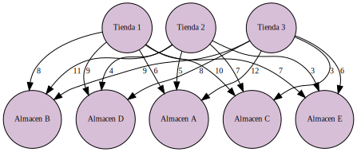
</div>
</div>
<div class="cell docutils container">
<div class="cell_input docutils container">
<div class="highlight-ipython3 notranslate"><div class="highlight"><pre><span></span><span class="kn">import</span> <span class="nn">pulp</span>

<span class="c1"># Creamos el problema de minimización</span>
<span class="n">prob</span> <span class="o">=</span> <span class="n">pulp</span><span class="o">.</span><span class="n">LpProblem</span><span class="p">(</span><span class="s2">&quot;Problema de transporte&quot;</span><span class="p">,</span> <span class="n">pulp</span><span class="o">.</span><span class="n">LpMinimize</span><span class="p">)</span>

<span class="c1"># Creamos las variables de decisión</span>
<span class="n">x11</span> <span class="o">=</span> <span class="n">pulp</span><span class="o">.</span><span class="n">LpVariable</span><span class="p">(</span><span class="s2">&quot;tienda 1 a almacen A&quot;</span><span class="p">,</span> <span class="n">lowBound</span><span class="o">=</span><span class="mi">0</span><span class="p">,</span> <span class="n">cat</span><span class="o">=</span><span class="s1">&#39;Integer&#39;</span><span class="p">)</span>
<span class="n">x12</span> <span class="o">=</span> <span class="n">pulp</span><span class="o">.</span><span class="n">LpVariable</span><span class="p">(</span><span class="s2">&quot;tienda 1 a almacen B&quot;</span><span class="p">,</span> <span class="n">lowBound</span><span class="o">=</span><span class="mi">0</span><span class="p">,</span> <span class="n">cat</span><span class="o">=</span><span class="s1">&#39;Integer&#39;</span><span class="p">)</span>
<span class="n">x13</span> <span class="o">=</span> <span class="n">pulp</span><span class="o">.</span><span class="n">LpVariable</span><span class="p">(</span><span class="s2">&quot;tienda 1 a almacen C&quot;</span><span class="p">,</span> <span class="n">lowBound</span><span class="o">=</span><span class="mi">0</span><span class="p">,</span> <span class="n">cat</span><span class="o">=</span><span class="s1">&#39;Integer&#39;</span><span class="p">)</span>
<span class="n">x14</span> <span class="o">=</span> <span class="n">pulp</span><span class="o">.</span><span class="n">LpVariable</span><span class="p">(</span><span class="s2">&quot;tienda 1 a almacen D&quot;</span><span class="p">,</span> <span class="n">lowBound</span><span class="o">=</span><span class="mi">0</span><span class="p">,</span> <span class="n">cat</span><span class="o">=</span><span class="s1">&#39;Integer&#39;</span><span class="p">)</span>
<span class="n">x15</span> <span class="o">=</span> <span class="n">pulp</span><span class="o">.</span><span class="n">LpVariable</span><span class="p">(</span><span class="s2">&quot;tienda 1 a almacen E&quot;</span><span class="p">,</span> <span class="n">lowBound</span><span class="o">=</span><span class="mi">0</span><span class="p">,</span> <span class="n">cat</span><span class="o">=</span><span class="s1">&#39;Integer&#39;</span><span class="p">)</span>
<span class="n">x21</span> <span class="o">=</span> <span class="n">pulp</span><span class="o">.</span><span class="n">LpVariable</span><span class="p">(</span><span class="s2">&quot;tienda 2 a almacen A&quot;</span><span class="p">,</span> <span class="n">lowBound</span><span class="o">=</span><span class="mi">0</span><span class="p">,</span> <span class="n">cat</span><span class="o">=</span><span class="s1">&#39;Integer&#39;</span><span class="p">)</span>
<span class="n">x22</span> <span class="o">=</span> <span class="n">pulp</span><span class="o">.</span><span class="n">LpVariable</span><span class="p">(</span><span class="s2">&quot;tienda 2 a almacen B&quot;</span><span class="p">,</span> <span class="n">lowBound</span><span class="o">=</span><span class="mi">0</span><span class="p">,</span> <span class="n">cat</span><span class="o">=</span><span class="s1">&#39;Integer&#39;</span><span class="p">)</span>
<span class="n">x23</span> <span class="o">=</span> <span class="n">pulp</span><span class="o">.</span><span class="n">LpVariable</span><span class="p">(</span><span class="s2">&quot;tienda 2 a almacen C&quot;</span><span class="p">,</span> <span class="n">lowBound</span><span class="o">=</span><span class="mi">0</span><span class="p">,</span> <span class="n">cat</span><span class="o">=</span><span class="s1">&#39;Integer&#39;</span><span class="p">)</span>
<span class="n">x24</span> <span class="o">=</span> <span class="n">pulp</span><span class="o">.</span><span class="n">LpVariable</span><span class="p">(</span><span class="s2">&quot;tienda 2 a almacen D&quot;</span><span class="p">,</span> <span class="n">lowBound</span><span class="o">=</span><span class="mi">0</span><span class="p">,</span> <span class="n">cat</span><span class="o">=</span><span class="s1">&#39;Integer&#39;</span><span class="p">)</span>
<span class="n">x25</span> <span class="o">=</span> <span class="n">pulp</span><span class="o">.</span><span class="n">LpVariable</span><span class="p">(</span><span class="s2">&quot;tienda 2 a almacen E&quot;</span><span class="p">,</span> <span class="n">lowBound</span><span class="o">=</span><span class="mi">0</span><span class="p">,</span> <span class="n">cat</span><span class="o">=</span><span class="s1">&#39;Integer&#39;</span><span class="p">)</span>
<span class="n">x31</span> <span class="o">=</span> <span class="n">pulp</span><span class="o">.</span><span class="n">LpVariable</span><span class="p">(</span><span class="s2">&quot;tienda 3 a almacen A&quot;</span><span class="p">,</span> <span class="n">lowBound</span><span class="o">=</span><span class="mi">0</span><span class="p">,</span> <span class="n">cat</span><span class="o">=</span><span class="s1">&#39;Integer&#39;</span><span class="p">)</span>
<span class="n">x32</span> <span class="o">=</span> <span class="n">pulp</span><span class="o">.</span><span class="n">LpVariable</span><span class="p">(</span><span class="s2">&quot;tienda 3 a almacen B&quot;</span><span class="p">,</span> <span class="n">lowBound</span><span class="o">=</span><span class="mi">0</span><span class="p">,</span> <span class="n">cat</span><span class="o">=</span><span class="s1">&#39;Integer&#39;</span><span class="p">)</span>
<span class="n">x33</span> <span class="o">=</span> <span class="n">pulp</span><span class="o">.</span><span class="n">LpVariable</span><span class="p">(</span><span class="s2">&quot;tienda 3 a almacen C&quot;</span><span class="p">,</span> <span class="n">lowBound</span><span class="o">=</span><span class="mi">0</span><span class="p">,</span> <span class="n">cat</span><span class="o">=</span><span class="s1">&#39;Integer&#39;</span><span class="p">)</span>
<span class="n">x34</span> <span class="o">=</span> <span class="n">pulp</span><span class="o">.</span><span class="n">LpVariable</span><span class="p">(</span><span class="s2">&quot;tienda 3 a almacen D&quot;</span><span class="p">,</span> <span class="n">lowBound</span><span class="o">=</span><span class="mi">0</span><span class="p">,</span> <span class="n">cat</span><span class="o">=</span><span class="s1">&#39;Integer&#39;</span><span class="p">)</span>
<span class="n">x35</span> <span class="o">=</span> <span class="n">pulp</span><span class="o">.</span><span class="n">LpVariable</span><span class="p">(</span><span class="s2">&quot;tienda 3 a almacen E&quot;</span><span class="p">,</span> <span class="n">lowBound</span><span class="o">=</span><span class="mi">0</span><span class="p">,</span> <span class="n">cat</span><span class="o">=</span><span class="s1">&#39;Integer&#39;</span><span class="p">)</span>
<span class="n">x41</span> <span class="o">=</span> <span class="n">pulp</span><span class="o">.</span><span class="n">LpVariable</span><span class="p">(</span><span class="s2">&quot;tienda 4 Ficticia a almacen A&quot;</span><span class="p">,</span> <span class="n">lowBound</span><span class="o">=</span><span class="mi">0</span><span class="p">,</span> <span class="n">cat</span><span class="o">=</span><span class="s1">&#39;Integer&#39;</span><span class="p">)</span>
<span class="n">x42</span> <span class="o">=</span> <span class="n">pulp</span><span class="o">.</span><span class="n">LpVariable</span><span class="p">(</span><span class="s2">&quot;tienda 4 Ficticia a almacen B&quot;</span><span class="p">,</span> <span class="n">lowBound</span><span class="o">=</span><span class="mi">0</span><span class="p">,</span> <span class="n">cat</span><span class="o">=</span><span class="s1">&#39;Integer&#39;</span><span class="p">)</span>
<span class="n">x43</span> <span class="o">=</span> <span class="n">pulp</span><span class="o">.</span><span class="n">LpVariable</span><span class="p">(</span><span class="s2">&quot;tienda 4 Ficticia a almacen C&quot;</span><span class="p">,</span> <span class="n">lowBound</span><span class="o">=</span><span class="mi">0</span><span class="p">,</span> <span class="n">cat</span><span class="o">=</span><span class="s1">&#39;Integer&#39;</span><span class="p">)</span>
<span class="n">x44</span> <span class="o">=</span> <span class="n">pulp</span><span class="o">.</span><span class="n">LpVariable</span><span class="p">(</span><span class="s2">&quot;tienda 4 Ficticia a almacen D&quot;</span><span class="p">,</span> <span class="n">lowBound</span><span class="o">=</span><span class="mi">0</span><span class="p">,</span> <span class="n">cat</span><span class="o">=</span><span class="s1">&#39;Integer&#39;</span><span class="p">)</span>
<span class="n">x45</span> <span class="o">=</span> <span class="n">pulp</span><span class="o">.</span><span class="n">LpVariable</span><span class="p">(</span><span class="s2">&quot;tienda 4 Ficticia a almacen E&quot;</span><span class="p">,</span> <span class="n">lowBound</span><span class="o">=</span><span class="mi">0</span><span class="p">,</span> <span class="n">cat</span><span class="o">=</span><span class="s1">&#39;Integer&#39;</span><span class="p">)</span>

<span class="c1"># Definimos la función objetivo</span>
<span class="n">prob</span> <span class="o">+=</span> <span class="p">(</span><span class="mi">6</span><span class="o">*</span><span class="n">x11</span> <span class="o">+</span> <span class="mi">8</span><span class="o">*</span><span class="n">x12</span> <span class="o">+</span> <span class="mi">10</span><span class="o">*</span><span class="n">x13</span> <span class="o">+</span> <span class="mi">9</span><span class="o">*</span><span class="n">x14</span> <span class="o">+</span> <span class="mi">7</span><span class="o">*</span><span class="n">x15</span> <span class="o">+</span> <span class="mi">5</span><span class="o">*</span><span class="n">x21</span> <span class="o">+</span> <span class="mi">11</span><span class="o">*</span><span class="n">x22</span> <span class="o">+</span> <span class="mi">7</span><span class="o">*</span><span class="n">x23</span> <span class="o">+</span> <span class="mi">4</span><span class="o">*</span><span class="n">x24</span> <span class="o">+</span> <span class="mi">3</span><span class="o">*</span><span class="n">x25</span> <span class="o">+</span> <span class="mi">12</span><span class="o">*</span><span class="n">x31</span> <span class="o">+</span> <span class="mi">9</span><span class="o">*</span><span class="n">x32</span> <span class="o">+</span> <span class="mi">3</span><span class="o">*</span><span class="n">x33</span> <span class="o">+</span> <span class="mi">8</span><span class="o">*</span><span class="n">x34</span> <span class="o">+</span> <span class="mi">6</span><span class="o">*</span><span class="n">x35</span><span class="p">),</span> <span class="s2">&quot;Costo total de envío&quot;</span>

<span class="c1"># Definimos las restricciones</span>
<span class="n">prob</span> <span class="o">+=</span> <span class="n">x11</span> <span class="o">+</span> <span class="n">x12</span> <span class="o">+</span> <span class="n">x13</span> <span class="o">+</span> <span class="n">x14</span> <span class="o">+</span> <span class="n">x15</span> <span class="o">&lt;=</span> <span class="mi">500</span><span class="p">,</span> <span class="s2">&quot;Capacidad de producción de tienda 1&quot;</span>
<span class="n">prob</span> <span class="o">+=</span> <span class="n">x21</span> <span class="o">+</span> <span class="n">x22</span> <span class="o">+</span> <span class="n">x23</span> <span class="o">+</span> <span class="n">x24</span> <span class="o">+</span> <span class="n">x25</span> <span class="o">&lt;=</span> <span class="mi">400</span><span class="p">,</span> <span class="s2">&quot;Capacidad de producción de tienda 2&quot;</span>
<span class="n">prob</span> <span class="o">+=</span> <span class="n">x31</span> <span class="o">+</span> <span class="n">x32</span> <span class="o">+</span> <span class="n">x33</span> <span class="o">+</span> <span class="n">x34</span> <span class="o">+</span> <span class="n">x35</span> <span class="o">&lt;=</span> <span class="mi">300</span><span class="p">,</span> <span class="s2">&quot;Capacidad de producción de tienda 3&quot;</span>
<span class="n">prob</span> <span class="o">+=</span> <span class="n">x41</span> <span class="o">+</span> <span class="n">x42</span> <span class="o">+</span> <span class="n">x43</span> <span class="o">+</span> <span class="n">x44</span> <span class="o">+</span> <span class="n">x45</span> <span class="o">&lt;=</span> <span class="mi">500</span><span class="p">,</span> <span class="s2">&quot;Capacidad de producción de tienda 4 Ficticia&quot;</span>

<span class="n">prob</span> <span class="o">+=</span> <span class="n">x11</span> <span class="o">+</span> <span class="n">x21</span> <span class="o">+</span> <span class="n">x31</span> <span class="o">+</span> <span class="n">x41</span> <span class="o">&gt;=</span> <span class="mi">300</span><span class="p">,</span> <span class="s2">&quot;Demanda del almacén A&quot;</span>
<span class="n">prob</span> <span class="o">+=</span> <span class="n">x12</span> <span class="o">+</span> <span class="n">x22</span> <span class="o">+</span> <span class="n">x32</span> <span class="o">+</span> <span class="n">x42</span> <span class="o">&gt;=</span> <span class="mi">400</span><span class="p">,</span> <span class="s2">&quot;Demanda del almacén B&quot;</span>
<span class="n">prob</span> <span class="o">+=</span> <span class="n">x13</span> <span class="o">+</span> <span class="n">x23</span> <span class="o">+</span> <span class="n">x33</span> <span class="o">+</span> <span class="n">x43</span> <span class="o">&gt;=</span> <span class="mi">400</span><span class="p">,</span> <span class="s2">&quot;Demanda del almacén C&quot;</span>
<span class="n">prob</span> <span class="o">+=</span> <span class="n">x14</span> <span class="o">+</span> <span class="n">x24</span> <span class="o">+</span> <span class="n">x34</span> <span class="o">+</span> <span class="n">x44</span> <span class="o">&gt;=</span> <span class="mi">200</span><span class="p">,</span> <span class="s2">&quot;Demanda del almacén D&quot;</span>
<span class="n">prob</span> <span class="o">+=</span> <span class="n">x15</span> <span class="o">+</span> <span class="n">x25</span> <span class="o">+</span> <span class="n">x35</span> <span class="o">+</span> <span class="n">x45</span> <span class="o">&gt;=</span> <span class="mi">400</span><span class="p">,</span> <span class="s2">&quot;Demanda del almacén E&quot;</span>

<span class="c1"># Resolvemos el problema</span>
<span class="n">prob</span><span class="o">.</span><span class="n">solve</span><span class="p">()</span>

<span class="c1"># Imprimimos la solución</span>
<span class="nb">print</span><span class="p">(</span><span class="s2">&quot;Costo total de envío: $&quot;</span><span class="p">,</span> <span class="n">pulp</span><span class="o">.</span><span class="n">value</span><span class="p">(</span><span class="n">prob</span><span class="o">.</span><span class="n">objective</span><span class="p">))</span>
<span class="k">for</span> <span class="n">v</span> <span class="ow">in</span> <span class="n">prob</span><span class="o">.</span><span class="n">variables</span><span class="p">():</span>
    <span class="nb">print</span><span class="p">(</span><span class="n">v</span><span class="o">.</span><span class="n">name</span><span class="p">,</span> <span class="s2">&quot;=&quot;</span><span class="p">,</span> <span class="n">v</span><span class="o">.</span><span class="n">varValue</span><span class="p">)</span>
</pre></div>
</div>
</div>
<div class="cell_output docutils container">
<div class="output stream highlight-myst-ansi notranslate"><div class="highlight"><pre><span></span>Costo total de envío: $ 5500.0
tienda_1_a_almacen_A = 300.0
tienda_1_a_almacen_B = 200.0
tienda_1_a_almacen_C = 0.0
tienda_1_a_almacen_D = 0.0
tienda_1_a_almacen_E = 0.0
tienda_2_a_almacen_A = 0.0
tienda_2_a_almacen_B = 0.0
tienda_2_a_almacen_C = 0.0
tienda_2_a_almacen_D = 0.0
tienda_2_a_almacen_E = 400.0
tienda_3_a_almacen_A = 0.0
tienda_3_a_almacen_B = 0.0
tienda_3_a_almacen_C = 300.0
tienda_3_a_almacen_D = 0.0
tienda_3_a_almacen_E = 0.0
tienda_4_Ficticia_a_almacen_A = 0.0
tienda_4_Ficticia_a_almacen_B = 200.0
tienda_4_Ficticia_a_almacen_C = 100.0
tienda_4_Ficticia_a_almacen_D = 200.0
tienda_4_Ficticia_a_almacen_E = 0.0
</pre></div>
</div>
<div class="output stderr highlight-myst-ansi notranslate"><div class="highlight"><pre><span></span>/usr/local/lib/python3.9/dist-packages/pulp/pulp.py:1352: UserWarning: Spaces are not permitted in the name. Converted to &#39;_&#39;
  warnings.warn(&quot;Spaces are not permitted in the name. Converted to &#39;_&#39;&quot;)
</pre></div>
</div>
</div>
</div>
</section>
<section id="ejercicio-numero-cinco">
<h5>Ejercicio Numero Cinco<a class="headerlink" href="#ejercicio-numero-cinco" title="Link to this heading">#</a></h5>
<ol class="arabic simple">
<li><p>Formulación del problema como modelo de transporte:</p></li>
</ol>
<p>Variables de decisión:
\begin{align*}
x_{ij}: cantidad \ de \ electricidad \ enviada \ desde\  la \ planta \ i \ a \ la \ ciudad \ j.
\end{align*}
Función objetivo:</p>
<p>Minimizar el costo total de distribución y compra de electricidad adicional:</p>
<p>\begin{align*}
\min Z= 600x_{11} + 320x_{12} + 500x_{13}+700x_{21} + 300x_{22} + 480x_{23}+400x_{31} + 350x_{32}+450x_{33} + 1000(0.230x_{21}+0.235x_{22}
\end{align*}</p>
<p>Sujeto a:</p>
<p>Restricciones de capacidad de las plantas:</p>
<p>\begin{align*}
x_{11} + x_{12} + x_{13} &amp;\leq 25 \
x_{21} + x_{22} + x_{23} &amp;\leq 40 \
x_{31} + x_{32} &amp;\leq 30 <br />
\end{align*}</p>
<p>Restricciones de demanda de las ciudades (antes del aumento de demanda):</p>
<p>\begin{aligned}
x_{11} + x_{21} &amp;\leq 30 \
x_{12} + x_{22} &amp;\leq 35 \
x_{13} + x_{23} &amp;\leq 25 \
\end{aligned}</p>
<p>Restricciones de no-negatividad:</p>
<p>\begin{aligned}
x_{ij} \geq 0
\end{aligned}</p>
<p>Además, debido a que la ciudad 3 no está conectada a la red para comprar electricidad adicional, la restricción de demanda de la ciudad 3 debe ajustarse a la demanda aumentada, es decir, \begin{aligned} x_{13} + x_{23} \leq 25 \cdot 1.2 \end{aligned}</p>
</section>
</section>
</section>
</section>
<section id="vrp-vehicle-routing-problems">
<h2>VRP. Vehicle Routing Problems<a class="headerlink" href="#vrp-vehicle-routing-problems" title="Link to this heading">#</a></h2>
<p>El modelo de transporte VRP (Vehicle
Routing Problem) es un problema clásico de
optimización combinatoria que se enfoca en
la distribución eficiente de productos o
servicios desde un conjunto de depósitos a un
conjunto de clientes, utilizando una flota de
vehículos. El objetivo es minimizar los
costos totales, como la distancia recorrida o
el tiempo de viaje, cumpliendo con las
restricciones de capacidad de los vehículos y
las demandas de los clientes.
(MEDIORREAL, 2014)</p>
<ul class="simple">
<li><p>hace referencia a la
asignación adecuada de las rutas de
distribución o abastecimiento, a una flota de
carros destinada a transportar la mercancía
de un punto de depósito a los clientes. Es
considerado un problema NP-hard o NP-
complejo, ya que el tiempo de solución del
algoritmo no se encuentra ligado al tiempo
polinomial, por el contrario, tiene un
comportamiento de tipo exponencial.</p></li>
</ul>
<hr class="docutils" />
<section id="modelo-teorico-del-vrp">
<h3>Modelo Teórico del VRP:<a class="headerlink" href="#modelo-teorico-del-vrp" title="Link to this heading">#</a></h3>
<section id="datos-del-problema">
<h4>Datos del Problema:<a class="headerlink" href="#datos-del-problema" title="Link to this heading">#</a></h4>
<ul class="simple">
<li><p><span class="math notranslate nohighlight">\(N\)</span>: Conjunto de clientes (( N = {1, 2, …, n} )).</p></li>
<li><p><span class="math notranslate nohighlight">\(V\)</span>: Conjunto de vehículos (( V = {1, 2, …, m} )).</p></li>
<li><p><span class="math notranslate nohighlight">\(q_i\)</span>: Demanda del cliente <span class="math notranslate nohighlight">\(i\)</span>.</p></li>
<li><p><span class="math notranslate nohighlight">\(c_{ij}\)</span>: Costo de viajar del cliente <span class="math notranslate nohighlight">\(i\)</span> al cliente <span class="math notranslate nohighlight">\(j\)</span>.</p></li>
<li><p><span class="math notranslate nohighlight">\(Q\)</span>: Capacidad máxima de carga de cada vehículo.</p></li>
</ul>
</section>
<section id="variables-de-decision">
<h4>Variables de Decisión:<a class="headerlink" href="#variables-de-decision" title="Link to this heading">#</a></h4>
<ul class="simple">
<li><p><span class="math notranslate nohighlight">\(x_{ij}^k\)</span>: Variable binaria que indica si el vehículo <span class="math notranslate nohighlight">\( k\)</span> viaja directamente del cliente ( <span class="math notranslate nohighlight">\(i\)</span> ) al cliente ( <span class="math notranslate nohighlight">\(j\)</span> ).</p></li>
<li><p><span class="math notranslate nohighlight">\(u_i\)</span>: Variable que representa la carga acumulada en el cliente ( i ).</p></li>
</ul>
</section>
<section id="funcion-objetivo">
<h4>Función Objetivo:<a class="headerlink" href="#funcion-objetivo" title="Link to this heading">#</a></h4>
<div class="math notranslate nohighlight">
\[
\text{Minimizar } \sum_{i \in N} \sum_{j \in N} \sum_{k \in V} c_{ij} \cdot x_{ij}^k
\]</div>
</section>
<section id="restricciones">
<h4>Restricciones:<a class="headerlink" href="#restricciones" title="Link to this heading">#</a></h4>
<ol class="arabic simple">
<li><p>Cada cliente debe ser visitado exactamente una vez por un vehículo:
$<span class="math notranslate nohighlight">\(
\sum_{j \in N, j \neq i} x_{ij}^k = 1, \quad \forall i \in N, \forall k \in V
\)</span>$</p></li>
<li><p>Cada vehículo debe salir de exactamente un depósito y regresar al mismo:
$<span class="math notranslate nohighlight">\(
\sum_{j \in N, j \neq i} x_{0j}^k = 1, \quad \forall k \in V \\
\sum_{i \in N, i \neq j} x_{ij}^k = 1, \quad \forall k \in V
\)</span>$</p></li>
<li><p>Capacidad de carga de cada vehículo:
$<span class="math notranslate nohighlight">\(
\sum_{i \in N} q_i \cdot x_{ij}^k \leq Q, \quad \forall j \in N, \forall k \in V
\)</span>$</p></li>
<li><p>Subtours no permitidos:
$<span class="math notranslate nohighlight">\(
u_i - u_j + Q \cdot x_{ij}^k \leq Q - q_j, \quad \forall i, j \in N, j \neq 0, \forall k \in V
\)</span>$</p></li>
</ol>
<p>Estas restricciones garantizan que se satisfaga la demanda de todos los clientes, que se respete la capacidad de carga de cada vehículo, y que no se formen subtours en la solución.</p>
</section>
</section>
<section id="ejemplo-de-vrp-clasico">
<h3>Ejemplo de VRP Clasico<a class="headerlink" href="#ejemplo-de-vrp-clasico" title="Link to this heading">#</a></h3>
<p>Supongamos que tenemos una flota de tres vehículos que deben entregar paquetes a cinco clientes. Cada cliente tiene una demanda de paquetes que deben satisfacerse, y cada vehículo tiene una capacidad máxima de carga. El objetivo es planificar las rutas de los vehículos de manera que se minimice la distancia total recorrida y se satisfagan todas las demandas de los clientes.</p>
<p>Datos del Problema:</p>
<ol class="arabic simple">
<li><p>5 clientes (numerados del 1 al 5).</p></li>
<li><p>3 vehículos (numerados del 1 al 3).</p></li>
<li><p>Demandas de los clientes: [3, 4, 2, 5, 1].</p></li>
<li><p>Capacidad de carga de cada vehículo: 7.</p></li>
<li><p>Distancias entre los clientes (en km):</p></li>
</ol>
<p>\begin{array}{|l|l|l|l|l|l|}
\hline
&amp; 1 &amp; 2 &amp; 3 &amp; 4 &amp; 5 \ \hline
1 &amp; 0 &amp; 2 &amp; 3 &amp; 4 &amp; 5 \ \hline
2 &amp; 2 &amp; 0 &amp; 1 &amp; 2 &amp; 3 \ \hline
3 &amp; 3 &amp; 1 &amp; 0 &amp; 1 &amp; 2 \ \hline
4 &amp; 4 &amp; 2 &amp; 1 &amp; 0 &amp; 1 \ \hline
5 &amp; 5 &amp; 3 &amp; 2 &amp; 1 &amp; 0 \ \hline
\end{array}</p>
<p><em>Objetivo:</em>
Minimizar la distancia total recorrida.</p>
<ul class="simple">
<li><p>Restricciones:</p></li>
</ul>
<ol class="arabic simple">
<li><p>Cada cliente debe ser visitado exactamente una vez por un vehículo.</p></li>
<li><p>Cada vehículo debe salir de un depósito y regresar al mismo.</p></li>
<li><p>La capacidad de carga de cada vehículo no debe superarse.</p></li>
<li><p>No se permiten subtours.</p></li>
</ol>
<p>modelos de solucion:</p>
<ol class="arabic simple">
<li><p>ACO: altgoritmo de la colonia de hormiga:
Este algoritmo simula el comportamiento de las hormigas para encontrar soluciones aproximadas a problemas de optimización combinatoria, como el VRP.</p></li>
<li><p>Métodos de Búsqueda Exhaustiva: Estos métodos evalúan todas las posibles combinaciones de rutas de vehículos para encontrar la solución óptima. Esto puede ser práctico para instancias pequeñas del problema, pero se vuelve computacionalmente inviable para instancias más grandes debido a la explosión combinatoria de posibles soluciones.</p></li>
<li><p>Métodos Heurísticos: Los métodos heurísticos utilizan reglas empíricas o estrategias inteligentes para encontrar soluciones subóptimas en un tiempo razonable. Algunos ejemplos incluyen el algoritmo del vecino más cercano, el algoritmo de inserción más barata y el algoritmo del ahorro de distancia.</p></li>
<li><p>Métodos Metaheurísticos: Estos son algoritmos de búsqueda de soluciones aproximadas que pueden escapar de óptimos locales y encontrar soluciones de alta calidad en un tiempo razonable. Además de ACO, otros métodos metaheurísticos comunes incluyen el algoritmo genético, la búsqueda tabú, la búsqueda de vecindario variable y el recocido simulado.</p></li>
<li><p>Programación Lineal Entera (ILP): La formulación del VRP como un problema de programación lineal entera permite utilizar solucionadores de ILP para encontrar la solución óptima. Sin embargo, la complejidad computacional de estos solucionadores puede hacer que este enfoque sea impráctico para instancias grandes.</p></li>
<li><p>Métodos Basados en Algoritmos de Árbol de Expansión Mínima: Algunos métodos utilizan algoritmos como Prim o Kruskal para construir una ruta inicial y luego aplican heurísticas para mejorarla.</p></li>
</ol>
<p>resolviendo en PL</p>
<p><strong>Variables de Decisión:</strong></p>
<ul class="simple">
<li><p><span class="math notranslate nohighlight">\(x_{ijk}\)</span>: Variable binaria que indica si el vehículo  <span class="math notranslate nohighlight">\(i\)</span> viaja de cliente <span class="math notranslate nohighlight">\(j\)</span> a cliente <span class="math notranslate nohighlight">\(k\)</span>.</p></li>
<li><p><span class="math notranslate nohighlight">\(u_i\)</span>: Variable que representa el total de carga entregada por el vehículo <span class="math notranslate nohighlight">\(i\)</span>.</p></li>
</ul>
<p><strong>Función Objetivo:</strong></p>
<ul class="simple">
<li><p><span class="math notranslate nohighlight">\( \text{Minimizar} \sum_{i=1}^{3} \sum_{j=0}^{5} \sum_{k=0}^{5} c_{jk} \cdot x_{ijk}\)</span></p></li>
</ul>
<p><strong>Restricciones:</strong></p>
<ol class="arabic simple">
<li><p>Cada cliente debe ser visitado exactamente una vez por un vehículo:
$$</p></li>
<li><p>\sum_{i=1}^{3} x_{ijk} = 1, \quad \forall j \in {1, 2, 3, 4, 5}\</p></li>
<li><p>\sum_{j=1}^{5} x_{i0j} = 1, \quad \forall i \in {1, 2, 3}
$$</p></li>
<li><p>Cada vehículo debe salir de un depósito y regresar al mismo:
$$</p></li>
<li><p>\sum_{j=1}^{5} x_{ij0} = 1, \quad \forall i \in {1, 2, 3}\</p></li>
<li><p>\sum_{i=1}^{3} x_{i00} = 1
$$</p></li>
<li><p>Capacidad de carga de cada vehículo:
$<span class="math notranslate nohighlight">\(
u_i - u_j + Q \cdot x_{ijk} \leq Q - q_k,\\ \quad \forall i \in \{1, 2, 3\}, \forall j,k \in \{1, 2, 3, 4, 5\}, j \neq k
\)</span>$</p></li>
<li><p>Subtours no permitidos:
$$</p></li>
<li><p>u_1 \geq q_j \cdot x_{1jk}, \quad \forall j \in {1, 2, 3, 4, 5}\</p></li>
<li><p>u_2 \geq q_j \cdot x_{2jk}, \quad \forall j \in {1, 2, 3, 4, 5}\</p></li>
<li><p>u_3 \geq q_j \cdot x_{3jk}, \quad \forall j \in {1, 2, 3, 4, 5}\
$$
<strong>Donde:</strong></p></li>
</ol>
<ul class="simple">
<li><p><span class="math notranslate nohighlight">\(Q\)</span> es la capacidad máxima de carga de cada vehículo.</p></li>
<li><p><span class="math notranslate nohighlight">\(q_j\)</span> es la demanda del cliente <span class="math notranslate nohighlight">\(j\)</span>.</p></li>
<li><p><span class="math notranslate nohighlight">\(c_{jk}\)</span> es el costo de viajar del cliente <span class="math notranslate nohighlight">\(j\)</span> al cliente <span class="math notranslate nohighlight">\(k\)</span>.</p></li>
</ul>
<div class="cell docutils container">
<div class="cell_input docutils container">
<div class="highlight-ipython3 notranslate"><div class="highlight"><pre><span></span><span class="kn">import</span> <span class="nn">graphviz</span>

<span class="n">graph</span> <span class="o">=</span> <span class="n">graphviz</span><span class="o">.</span><span class="n">Graph</span><span class="p">(</span><span class="n">engine</span><span class="o">=</span><span class="s1">&#39;neato&#39;</span><span class="p">)</span>

<span class="c1"># Crear grafo</span>
<span class="n">dot</span> <span class="o">=</span> <span class="n">graphviz</span><span class="o">.</span><span class="n">Digraph</span><span class="p">()</span>


<span class="c1"># Agregar nodos</span>
<span class="n">dot</span><span class="o">.</span><span class="n">node</span><span class="p">(</span><span class="s1">&#39;Planta 1&#39;</span><span class="p">,</span> <span class="n">shape</span><span class="o">=</span><span class="s2">&quot;circle&quot;</span><span class="p">,</span> <span class="n">style</span><span class="o">=</span><span class="s2">&quot;filled&quot;</span><span class="p">,</span> <span class="n">fillcolor</span><span class="o">=</span><span class="s2">&quot;#ADD8E6&quot;</span><span class="p">,</span> <span class="n">fontsize</span><span class="o">=</span> <span class="s1">&#39;10&#39;</span><span class="p">)</span>
<span class="n">dot</span><span class="o">.</span><span class="n">node</span><span class="p">(</span><span class="s1">&#39;Planta 2&#39;</span><span class="p">,</span> <span class="n">shape</span><span class="o">=</span><span class="s2">&quot;circle&quot;</span><span class="p">,</span> <span class="n">style</span><span class="o">=</span><span class="s2">&quot;filled&quot;</span><span class="p">,</span> <span class="n">fillcolor</span><span class="o">=</span><span class="s2">&quot;#ADD8E6&quot;</span><span class="p">,</span><span class="n">fontsize</span><span class="o">=</span> <span class="s1">&#39;10&#39;</span><span class="p">)</span>
<span class="n">dot</span><span class="o">.</span><span class="n">node</span><span class="p">(</span><span class="s1">&#39;Planta 3&#39;</span><span class="p">,</span> <span class="n">shape</span><span class="o">=</span><span class="s2">&quot;circle&quot;</span><span class="p">,</span> <span class="n">style</span><span class="o">=</span><span class="s2">&quot;filled&quot;</span><span class="p">,</span> <span class="n">fillcolor</span><span class="o">=</span><span class="s2">&quot;#ADD8E6&quot;</span><span class="p">,</span><span class="n">fontsize</span><span class="o">=</span> <span class="s1">&#39;10&#39;</span><span class="p">)</span>
<span class="n">dot</span><span class="o">.</span><span class="n">node</span><span class="p">(</span><span class="s1">&#39;Ciudad 1&#39;</span><span class="p">,</span> <span class="n">shape</span><span class="o">=</span><span class="s2">&quot;circle&quot;</span><span class="p">,</span> <span class="n">style</span><span class="o">=</span><span class="s2">&quot;filled&quot;</span><span class="p">,</span> <span class="n">fillcolor</span><span class="o">=</span><span class="s2">&quot;#ADD8E6&quot;</span><span class="p">,</span><span class="n">fontsize</span><span class="o">=</span> <span class="s1">&#39;10&#39;</span><span class="p">)</span>
<span class="n">dot</span><span class="o">.</span><span class="n">node</span><span class="p">(</span><span class="s1">&#39;Ciudad 2&#39;</span><span class="p">,</span> <span class="n">shape</span><span class="o">=</span><span class="s2">&quot;circle&quot;</span><span class="p">,</span> <span class="n">style</span><span class="o">=</span><span class="s2">&quot;filled&quot;</span><span class="p">,</span> <span class="n">fillcolor</span><span class="o">=</span><span class="s2">&quot;#ADD8E6&quot;</span><span class="p">,</span><span class="n">fontsize</span><span class="o">=</span> <span class="s1">&#39;10&#39;</span><span class="p">)</span>
<span class="n">dot</span><span class="o">.</span><span class="n">node</span><span class="p">(</span><span class="s1">&#39;Ciudad 3&#39;</span><span class="p">,</span> <span class="n">shape</span><span class="o">=</span><span class="s2">&quot;circle&quot;</span><span class="p">,</span> <span class="n">style</span><span class="o">=</span><span class="s2">&quot;filled&quot;</span><span class="p">,</span> <span class="n">fillcolor</span><span class="o">=</span><span class="s2">&quot;#ADD8E6&quot;</span><span class="p">,</span><span class="n">fontsize</span><span class="o">=</span> <span class="s1">&#39;10&#39;</span><span class="p">)</span>


<span class="c1"># Agregar aristas</span>
<span class="n">dot</span><span class="o">.</span><span class="n">edge</span><span class="p">(</span><span class="s1">&#39;Planta 1&#39;</span><span class="p">,</span> <span class="s1">&#39;Ciudad 1&#39;</span><span class="p">,</span> <span class="n">label</span><span class="o">=</span><span class="s1">&#39;600&#39;</span><span class="p">,</span><span class="n">fontsize</span><span class="o">=</span> <span class="s1">&#39;10&#39;</span><span class="p">)</span>
<span class="n">dot</span><span class="o">.</span><span class="n">edge</span><span class="p">(</span><span class="s1">&#39;Planta 1&#39;</span><span class="p">,</span> <span class="s1">&#39;Ciudad 2&#39;</span><span class="p">,</span> <span class="n">label</span><span class="o">=</span><span class="s1">&#39;700&#39;</span><span class="p">,</span><span class="n">fontsize</span><span class="o">=</span> <span class="s1">&#39;10&#39;</span><span class="p">)</span>
<span class="n">dot</span><span class="o">.</span><span class="n">edge</span><span class="p">(</span><span class="s1">&#39;Planta 1&#39;</span><span class="p">,</span> <span class="s1">&#39;Ciudad 3&#39;</span><span class="p">,</span> <span class="n">label</span><span class="o">=</span><span class="s1">&#39;400&#39;</span><span class="p">,</span><span class="n">fontsize</span><span class="o">=</span> <span class="s1">&#39;10&#39;</span><span class="p">)</span>


<span class="n">dot</span><span class="o">.</span><span class="n">edge</span><span class="p">(</span><span class="s1">&#39;Planta 2&#39;</span><span class="p">,</span> <span class="s1">&#39;Ciudad 1&#39;</span><span class="p">,</span> <span class="n">label</span><span class="o">=</span><span class="s1">&#39;320&#39;</span><span class="p">,</span><span class="n">fontsize</span><span class="o">=</span> <span class="s1">&#39;10&#39;</span><span class="p">)</span>
<span class="n">dot</span><span class="o">.</span><span class="n">edge</span><span class="p">(</span><span class="s1">&#39;Planta 2&#39;</span><span class="p">,</span> <span class="s1">&#39;Ciudad 2&#39;</span><span class="p">,</span> <span class="n">label</span><span class="o">=</span><span class="s1">&#39;300&#39;</span><span class="p">,</span><span class="n">fontsize</span><span class="o">=</span> <span class="s1">&#39;10&#39;</span><span class="p">)</span>
<span class="n">dot</span><span class="o">.</span><span class="n">edge</span><span class="p">(</span><span class="s1">&#39;Planta 2&#39;</span><span class="p">,</span> <span class="s1">&#39;Ciudad 3&#39;</span><span class="p">,</span> <span class="n">label</span><span class="o">=</span><span class="s1">&#39;350&#39;</span><span class="p">,</span><span class="n">fontsize</span><span class="o">=</span> <span class="s1">&#39;10&#39;</span><span class="p">)</span>


<span class="n">dot</span><span class="o">.</span><span class="n">edge</span><span class="p">(</span><span class="s1">&#39;Planta 3&#39;</span><span class="p">,</span> <span class="s1">&#39;Ciudad 1&#39;</span><span class="p">,</span> <span class="n">label</span><span class="o">=</span><span class="s1">&#39;500&#39;</span><span class="p">,</span><span class="n">fontsize</span><span class="o">=</span> <span class="s1">&#39;10&#39;</span><span class="p">)</span>
<span class="n">dot</span><span class="o">.</span><span class="n">edge</span><span class="p">(</span><span class="s1">&#39;Planta 3&#39;</span><span class="p">,</span> <span class="s1">&#39;Ciudad 2&#39;</span><span class="p">,</span> <span class="n">label</span><span class="o">=</span><span class="s1">&#39;480&#39;</span><span class="p">,</span><span class="n">fontsize</span><span class="o">=</span> <span class="s1">&#39;10&#39;</span><span class="p">)</span>
<span class="n">dot</span><span class="o">.</span><span class="n">edge</span><span class="p">(</span><span class="s1">&#39;Planta 3&#39;</span><span class="p">,</span> <span class="s1">&#39;Ciudad 3&#39;</span><span class="p">,</span> <span class="n">label</span><span class="o">=</span><span class="s1">&#39;450&#39;</span><span class="p">,</span><span class="n">fontsize</span><span class="o">=</span> <span class="s1">&#39;10&#39;</span><span class="p">)</span>


<span class="c1"># Mostrar grafo</span>
<span class="n">dot</span>
</pre></div>
</div>
</div>
<div class="cell_output docutils container">
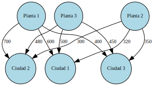
</div>
</div>
<div class="cell docutils container">
<div class="cell_input docutils container">
<div class="highlight-ipython3 notranslate"><div class="highlight"><pre><span></span><span class="c1"># Importar la librería PuLP</span>
<span class="kn">import</span> <span class="nn">pulp</span>

<span class="c1"># Crear un problema de minimización</span>
<span class="n">problema</span> <span class="o">=</span> <span class="n">pulp</span><span class="o">.</span><span class="n">LpProblem</span><span class="p">(</span><span class="s2">&quot;Problema_Electricidad&quot;</span><span class="p">,</span> <span class="n">pulp</span><span class="o">.</span><span class="n">LpMinimize</span><span class="p">)</span>

<span class="c1"># Definir las variables de decisión</span>
<span class="n">x11</span> <span class="o">=</span> <span class="n">pulp</span><span class="o">.</span><span class="n">LpVariable</span><span class="p">(</span><span class="s2">&quot;x11&quot;</span><span class="p">,</span> <span class="n">lowBound</span><span class="o">=</span><span class="mi">0</span><span class="p">,</span> <span class="n">cat</span><span class="o">=</span><span class="s1">&#39;Continuous&#39;</span><span class="p">)</span>
<span class="n">x12</span> <span class="o">=</span> <span class="n">pulp</span><span class="o">.</span><span class="n">LpVariable</span><span class="p">(</span><span class="s2">&quot;x12&quot;</span><span class="p">,</span> <span class="n">lowBound</span><span class="o">=</span><span class="mi">0</span><span class="p">,</span> <span class="n">cat</span><span class="o">=</span><span class="s1">&#39;Continuous&#39;</span><span class="p">)</span>
<span class="n">x13</span> <span class="o">=</span> <span class="n">pulp</span><span class="o">.</span><span class="n">LpVariable</span><span class="p">(</span><span class="s2">&quot;x13&quot;</span><span class="p">,</span> <span class="n">lowBound</span><span class="o">=</span><span class="mi">0</span><span class="p">,</span> <span class="n">cat</span><span class="o">=</span><span class="s1">&#39;Continuous&#39;</span><span class="p">)</span>
<span class="n">x21</span> <span class="o">=</span> <span class="n">pulp</span><span class="o">.</span><span class="n">LpVariable</span><span class="p">(</span><span class="s2">&quot;x21&quot;</span><span class="p">,</span> <span class="n">lowBound</span><span class="o">=</span><span class="mi">0</span><span class="p">,</span> <span class="n">cat</span><span class="o">=</span><span class="s1">&#39;Continuous&#39;</span><span class="p">)</span>
<span class="n">x22</span> <span class="o">=</span> <span class="n">pulp</span><span class="o">.</span><span class="n">LpVariable</span><span class="p">(</span><span class="s2">&quot;x22&quot;</span><span class="p">,</span> <span class="n">lowBound</span><span class="o">=</span><span class="mi">0</span><span class="p">,</span> <span class="n">cat</span><span class="o">=</span><span class="s1">&#39;Continuous&#39;</span><span class="p">)</span>
<span class="n">x23</span> <span class="o">=</span> <span class="n">pulp</span><span class="o">.</span><span class="n">LpVariable</span><span class="p">(</span><span class="s2">&quot;x23&quot;</span><span class="p">,</span> <span class="n">lowBound</span><span class="o">=</span><span class="mi">0</span><span class="p">,</span> <span class="n">cat</span><span class="o">=</span><span class="s1">&#39;Continuous&#39;</span><span class="p">)</span>
<span class="n">x31</span> <span class="o">=</span> <span class="n">pulp</span><span class="o">.</span><span class="n">LpVariable</span><span class="p">(</span><span class="s2">&quot;x31&quot;</span><span class="p">,</span> <span class="n">lowBound</span><span class="o">=</span><span class="mi">0</span><span class="p">,</span> <span class="n">cat</span><span class="o">=</span><span class="s1">&#39;Continuous&#39;</span><span class="p">)</span>
<span class="n">x32</span> <span class="o">=</span> <span class="n">pulp</span><span class="o">.</span><span class="n">LpVariable</span><span class="p">(</span><span class="s2">&quot;x32&quot;</span><span class="p">,</span> <span class="n">lowBound</span><span class="o">=</span><span class="mi">0</span><span class="p">,</span> <span class="n">cat</span><span class="o">=</span><span class="s1">&#39;Continuous&#39;</span><span class="p">)</span>
<span class="n">x33</span> <span class="o">=</span> <span class="n">pulp</span><span class="o">.</span><span class="n">LpVariable</span><span class="p">(</span><span class="s2">&quot;x33&quot;</span><span class="p">,</span> <span class="n">lowBound</span><span class="o">=</span><span class="mi">0</span><span class="p">,</span> <span class="n">cat</span><span class="o">=</span><span class="s1">&#39;Continuous&#39;</span><span class="p">)</span>

<span class="c1"># Definir la función objetivo</span>
<span class="n">problema</span> <span class="o">+=</span> <span class="mi">600</span><span class="o">*</span><span class="n">x11</span> <span class="o">+</span> <span class="mi">700</span><span class="o">*</span><span class="n">x12</span> <span class="o">+</span> <span class="mi">400</span><span class="o">*</span><span class="n">x13</span> <span class="o">+</span> <span class="mi">320</span><span class="o">*</span><span class="n">x21</span> <span class="o">+</span> <span class="mi">300</span><span class="o">*</span><span class="n">x22</span> <span class="o">+</span> <span class="mi">350</span><span class="o">*</span><span class="n">x23</span> <span class="o">+</span> <span class="mi">500</span><span class="o">*</span><span class="n">x31</span> <span class="o">+</span> <span class="mi">480</span><span class="o">*</span><span class="n">x32</span> <span class="o">+</span> <span class="mi">450</span><span class="o">*</span><span class="n">x33</span> \
            <span class="o">+</span> <span class="mi">1000</span><span class="o">*</span><span class="mf">0.2</span><span class="o">*</span><span class="p">(</span><span class="n">x11</span> <span class="o">+</span> <span class="n">x12</span> <span class="o">+</span> <span class="n">x21</span> <span class="o">+</span> <span class="n">x22</span><span class="p">)</span>

<span class="c1"># Definir las restricciones</span>
<span class="n">problema</span> <span class="o">+=</span> <span class="p">(</span><span class="n">x11</span> <span class="o">+</span> <span class="n">x21</span> <span class="o">+</span> <span class="n">x31</span> <span class="o">&gt;=</span> <span class="mi">30</span><span class="p">)</span>
<span class="n">problema</span> <span class="o">+=</span> <span class="p">(</span><span class="n">x12</span> <span class="o">+</span> <span class="n">x22</span> <span class="o">+</span> <span class="n">x32</span> <span class="o">&gt;=</span> <span class="mi">35</span><span class="p">)</span>
<span class="n">problema</span> <span class="o">+=</span> <span class="p">(</span><span class="n">x13</span> <span class="o">+</span> <span class="n">x23</span> <span class="o">&gt;=</span> <span class="mi">25</span><span class="p">)</span>
<span class="n">problema</span> <span class="o">+=</span> <span class="p">(</span><span class="n">x11</span> <span class="o">+</span> <span class="n">x12</span> <span class="o">+</span> <span class="n">x13</span> <span class="o">&lt;=</span> <span class="mi">25</span><span class="p">)</span>
<span class="n">problema</span> <span class="o">+=</span> <span class="p">(</span><span class="n">x21</span> <span class="o">+</span> <span class="n">x22</span> <span class="o">+</span> <span class="n">x23</span> <span class="o">&lt;=</span> <span class="mi">40</span><span class="p">)</span>
<span class="n">problema</span> <span class="o">+=</span> <span class="p">(</span><span class="n">x31</span> <span class="o">&lt;=</span> <span class="mi">30</span><span class="p">)</span>

<span class="c1"># Resolver el problema</span>
<span class="n">problema</span><span class="o">.</span><span class="n">solve</span><span class="p">()</span>

<span class="c1"># Imprimir la solución</span>
<span class="nb">print</span><span class="p">(</span><span class="s2">&quot;La solución óptima es:&quot;</span><span class="p">)</span>
<span class="nb">print</span><span class="p">(</span><span class="s2">&quot;x11 = &quot;</span><span class="p">,</span> <span class="n">pulp</span><span class="o">.</span><span class="n">value</span><span class="p">(</span><span class="n">x11</span><span class="p">))</span>
<span class="nb">print</span><span class="p">(</span><span class="s2">&quot;x12 = &quot;</span><span class="p">,</span> <span class="n">pulp</span><span class="o">.</span><span class="n">value</span><span class="p">(</span><span class="n">x12</span><span class="p">))</span>
<span class="nb">print</span><span class="p">(</span><span class="s2">&quot;x13 = &quot;</span><span class="p">,</span> <span class="n">pulp</span><span class="o">.</span><span class="n">value</span><span class="p">(</span><span class="n">x13</span><span class="p">))</span>
<span class="nb">print</span><span class="p">(</span><span class="s2">&quot;x21 = &quot;</span><span class="p">,</span> <span class="n">pulp</span><span class="o">.</span><span class="n">value</span><span class="p">(</span><span class="n">x21</span><span class="p">))</span>
<span class="nb">print</span><span class="p">(</span><span class="s2">&quot;x22 = &quot;</span><span class="p">,</span> <span class="n">pulp</span><span class="o">.</span><span class="n">value</span><span class="p">(</span><span class="n">x22</span><span class="p">))</span>
<span class="nb">print</span><span class="p">(</span><span class="s2">&quot;x23 = &quot;</span><span class="p">,</span> <span class="n">pulp</span><span class="o">.</span><span class="n">value</span><span class="p">(</span><span class="n">x23</span><span class="p">))</span>
<span class="nb">print</span><span class="p">(</span><span class="s2">&quot;x31 = &quot;</span><span class="p">,</span> <span class="n">pulp</span><span class="o">.</span><span class="n">value</span><span class="p">(</span><span class="n">x31</span><span class="p">))</span>
<span class="nb">print</span><span class="p">(</span><span class="s2">&quot;x32 = &quot;</span><span class="p">,</span> <span class="n">pulp</span><span class="o">.</span><span class="n">value</span><span class="p">(</span><span class="n">x32</span><span class="p">))</span>
<span class="nb">print</span><span class="p">(</span><span class="s2">&quot;x33 = &quot;</span><span class="p">,</span> <span class="n">pulp</span><span class="o">.</span><span class="n">value</span><span class="p">(</span><span class="n">x33</span><span class="p">))</span>
<span class="nb">print</span><span class="p">(</span><span class="s2">&quot;El costo total es:&quot;</span><span class="p">,</span> <span class="n">pulp</span><span class="o">.</span><span class="n">value</span><span class="p">(</span><span class="n">problema</span><span class="o">.</span><span class="n">objective</span><span class="p">))</span>
</pre></div>
</div>
</div>
<div class="cell_output docutils container">
<div class="output stream highlight-myst-ansi notranslate"><div class="highlight"><pre><span></span>La solución óptima es:
x11 =  0.0
x12 =  0.0
x13 =  0.0
x21 =  0.0
x22 =  0.0
x23 =  25.0
x31 =  30.0
x32 =  35.0
x33 =  0.0
El costo total es: 40550.0
</pre></div>
</div>
</div>
</div>
</section>
</section>
<hr class="docutils" />
<section id="el-modelo-de-transbordo">
<h2>El modelo de Transbordo<a class="headerlink" href="#el-modelo-de-transbordo" title="Link to this heading">#</a></h2>
<hr class="docutils" />
<p>En el modelo de transbordo o Cross docking se inicia con el supuesto que el hecho de pasar por nodos intermedios supone un ahorro al sistema, mientras que el modelo general de transporte solo supone entregas directas.</p>
<p>Ejemplo:</p>
<p>dopn fabricas de producto X <span class="math notranslate nohighlight">\(P_1\ y\ P_2\)</span> en asocian con tres agencias <span class="math notranslate nohighlight">\(D_1, D_2\ y\ D_3\)</span> a travez de dos centros de distribicion <span class="math notranslate nohighlight">\(T_1\ y\ T_2\)</span></p>
<ol class="arabic simple">
<li><p>genere el modelo de red de este apartado a mano y en colab. usando Graphviz</p></li>
</ol>
<div class="cell docutils container">
<div class="cell_input docutils container">
<div class="highlight-ipython3 notranslate"><div class="highlight"><pre><span></span><span class="kn">from</span> <span class="nn">IPython.display</span> <span class="kn">import</span> <span class="n">Image</span>
<span class="n">Image</span><span class="p">(</span><span class="n">filename</span><span class="o">=</span><span class="s1">&#39;/content/drive/MyDrive/Libros academicos en colab/1. Logistica/Imagen 16-03-23 a las 1.26 p.m..jpeg&#39;</span><span class="p">)</span>
</pre></div>
</div>
</div>
<div class="cell_output docutils container">
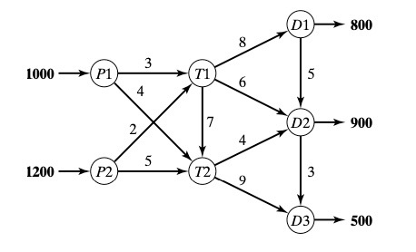
</div>
</div>
<p>La oferta  de las plantas son como se muestran en la figura:</p>
<p>$</p>
<ul class="simple">
<li><p>Demanda\ en\ los\ P_n \
P_1 = 1000\ Un \
P_2 = 1200\ Un \
\</p></li>
<li><p>Demanda\ en\ los\ D_n \
D_1= 800 \
D_2=900 \
D_3= 500 \
$</p></li>
</ul>
<p>Note que los nodos <span class="math notranslate nohighlight">\(t_n\ y\ D_n\)</span> funcionan como entrada y salida. a estos se les denomina <strong>Nodos de Transbordo</strong></p>
<ul class="simple">
<li><p>los nodos de oferta pura son los emisores de las unidades</p></li>
<li><p>los nodos de demanda pura son los qu solop reciben unidades</p></li>
<li><p>los nodos de transbordo son los que cumplen estas dos funciones al tiempo. (oferta original + Amortiguador)</p></li>
<li><p>los nodos de demanda pura y transbordo  tiene (demanada original + Amrtiguador)</p></li>
</ul>
<p>la Cantidad <em>amortiguador</em> debe ser lo suficentemente grande para garantizar toda la oferta o demanda <em>original</em> pase por cualquiera de los nodos de Transbordo siendo <span class="math notranslate nohighlight">\(B\)</span> la cantidad deseada de amortiguador. entonces:</p>
<p><span class="math notranslate nohighlight">\(
B= Oferta(Demanda)\ total \\
= 1000+1200 (ú\ 800 +900+500) \\
=2200 unidades
\)</span></p>
<p>con este amortiguador este modelpo se transforma en un modelo original de transporte (…)</p>
<p>A continuacion la respuesta al modelo usando el modelo tradicional de transporte.</p>
<p>\begin{array}{c|c|c|c|c|c|c}
-&amp; T_1 &amp; T_2 &amp; D_1 &amp; D_2 &amp; D_3 &amp;  \ \hline
P_1 &amp; 3 &amp; 4 &amp; M &amp; M &amp; M &amp; 1000 \ \hline
P_2 &amp; 2 &amp; 5 &amp; M &amp; M &amp; M &amp; 1200 \ \hline
T_1 &amp; 0 &amp; 7 &amp; 8 &amp; 6 &amp; M &amp; B \ \hline
T_2 &amp; M &amp; 0 &amp; M &amp; 4 &amp; 9 &amp; B \ \hline
D_1 &amp; M &amp; M &amp; 0 &amp; 5 &amp; M &amp; B \ \hline
D_2 &amp; M &amp; M &amp; M &amp; 0 &amp; 3 &amp; B \ \hline
\hline
&amp; B &amp; B &amp; 800+B &amp; 900+B &amp; 500 &amp;
\end{array}</p>
<p>**
Ejercicios de Transbordo:</p>
<hr class="docutils" />
<ol class="arabic simple">
<li><p>Formule el modelo correspondiente a los siguinetes diagramas:</p></li>
</ol>
<div class="cell docutils container">
<div class="cell_input docutils container">
<div class="highlight-ipython3 notranslate"><div class="highlight"><pre><span></span><span class="kn">from</span> <span class="nn">IPython.display</span> <span class="kn">import</span> <span class="n">Image</span>
<span class="n">Image</span><span class="p">(</span><span class="n">filename</span><span class="o">=</span><span class="s1">&#39;/content/drive/MyDrive/Libros academicos en colab/1. Logistica/red2.jpeg&#39;</span><span class="p">,</span><span class="n">width</span> <span class="o">=</span> <span class="mi">300</span><span class="p">,</span> <span class="n">height</span> <span class="o">=</span> <span class="mi">200</span><span class="p">)</span>
</pre></div>
</div>
</div>
<div class="cell_output docutils container">
<a class="reference internal image-reference" href="_images/9f20c453557af3de3b2e0e42b9b5a0ccc024d9cd53d5a74a2f9d5a3aba15886a.jpg">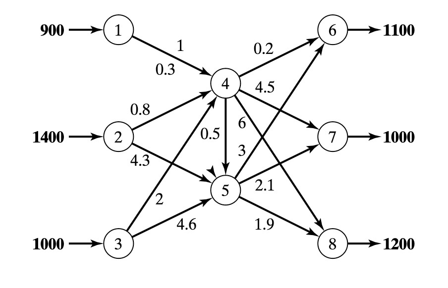</a>
</div>
</div>
<div class="cell docutils container">
<div class="cell_input docutils container">
<div class="highlight-ipython3 notranslate"><div class="highlight"><pre><span></span><span class="kn">from</span> <span class="nn">IPython.display</span> <span class="kn">import</span> <span class="n">Image</span>
<span class="n">Image</span><span class="p">(</span><span class="n">filename</span><span class="o">=</span><span class="s1">&#39;/content/drive/MyDrive/Libros academicos en colab/1. Logistica/red3.jpeg&#39;</span><span class="p">)</span>
</pre></div>
</div>
</div>
<div class="cell_output docutils container">
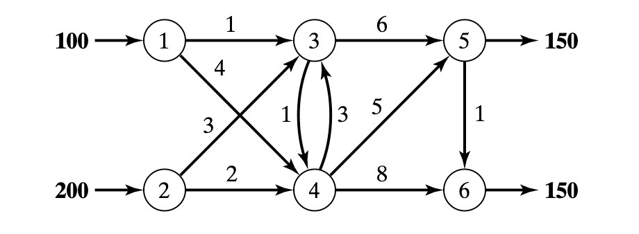
</div>
</div>
<section id="almacenamiento-en-bodegas-o-cedis">
<h3>Almacenamiento en Bodegas o CEDIS<a class="headerlink" href="#almacenamiento-en-bodegas-o-cedis" title="Link to this heading">#</a></h3>
<section id="definiciones">
<h4>Definiciones:<a class="headerlink" href="#definiciones" title="Link to this heading">#</a></h4>
<p><strong>Almacenaje y Sistemas de Almacenamiento:</strong></p>
<ol class="arabic simple">
<li><p><em>Almacenaje:</em> Es el proceso de guardar y organizar productos o mercancías en un lugar específico, como un almacén o bodega.</p></li>
<li><p><em>Sistemas de Almacenamiento:</em> Se refiere a las estructuras y métodos utilizados para almacenar los productos de manera eficiente, como estanterías, paletas, racks, etc.</p></li>
</ol>
<p><strong>Procedimiento de Control y Gestión de Almacenes:</strong></p>
<ol class="arabic simple">
<li><p><em>Control:</em> Implica supervisar y monitorear todas las actividades que se realizan dentro del almacén, desde la recepción de mercancías hasta su despacho.</p></li>
<li><p><em>Gestión:</em> Se enfoca en planificar, organizar y coordinar los recursos del almacén para optimizar su funcionamiento.</p></li>
</ol>
<p><strong>Procedimiento de Despacho y Devoluciones:</strong></p>
<ol class="arabic simple">
<li><p><em>Despacho:</em> Es el proceso de preparar y enviar los productos a los clientes o a otros destinos.</p></li>
<li><p><em>Devoluciones:</em> Se refiere a la recepción de productos que son retornados por los clientes, ya sea por defectos, cambios o cancelaciones.</p></li>
</ol>
</section>
<section id="sistemas-de-alamcenamiento-en-cedis">
<h4>Sistemas de Alamcenamiento en CEDIS<a class="headerlink" href="#sistemas-de-alamcenamiento-en-cedis" title="Link to this heading">#</a></h4>
<p>Los sistemas de almacenamiento en los Centros de Distribución (CEDIS) son cruciales para una gestión eficiente del inventario y un flujo óptimo de productos. Existen diversos sistemas, cada uno con ventajas e inconvenientes según el tipo de producto, espacio disponible y nivel de automatización deseado. Algunos de los más comunes son:</p>
<ol class="arabic simple">
<li><p>Almacenamiento en bloque:</p></li>
</ol>
<ul class="simple">
<li><p>La mercancía se apila directamente en el suelo, formando bloques compactos.</p></li>
<li><p>Ideal para productos homogéneos y de alta rotación, que no requieren acceso individual.</p></li>
<li><p>Bajo costo de implementación pero puede dificultar el acceso a productos específicos y generar pérdidas por aplastamiento.</p></li>
</ul>
<ol class="arabic simple" start="2">
<li><p>Estanterías convencionales:</p></li>
</ol>
<ul class="simple">
<li><p>Sistema versátil y ampliamente utilizado, con estanterías de diferentes alturas y configuraciones.</p></li>
<li><p>Permite el acceso individual a cada paleta y facilita la organización del inventario.</p></li>
<li><p>Costo moderado y adaptable a diferentes tipos de productos, pero puede limitar el uso del espacio vertical.</p></li>
</ul>
<ol class="arabic simple" start="3">
<li><p>Estanterías compactas (Drive-in / Drive-through):</p></li>
</ol>
<ul class="simple">
<li><p>Las carretillas elevadoras entran en las estanterías para depositar o retirar las paletas.</p></li>
<li><p>Alta densidad de almacenamiento, ideal para productos con gran volumen y poca rotación.</p></li>
<li><p>Mayor costo de implementación y requiere pasillos más anchos, limitando el número de referencias.</p></li>
</ul>
<ol class="arabic simple" start="4">
<li><p>Estanterías dinámicas:</p></li>
</ol>
<ul class="simple">
<li><p>Las paletas se deslizan por gravedad sobre rodillos, siguiendo el principio FIFO (First In, First Out).</p></li>
<li><p>Ideal para productos perecederos o con fecha de caducidad.</p></li>
<li><p>Asegura la rotación del inventario pero tiene un costo elevado y menor capacidad que otros sistemas.</p></li>
</ul>
<ol class="arabic simple" start="5">
<li><p>Estanterías móviles:</p></li>
</ol>
<ul class="simple">
<li><p>Se instalan sobre bases móviles que se desplazan sobre raíles, compactando el espacio.</p></li>
<li><p>Optimiza el espacio disponible, ideal para almacenes con espacio limitado.</p></li>
<li><p>Alto costo de implementación y requiere un sistema de control sofisticado.</p></li>
</ul>
<ol class="arabic simple" start="6">
<li><p>Sistemas automatizados:</p></li>
</ol>
<ul class="simple">
<li><p>Utilizan transelevadores, robots y sistemas de control para automatizar las operaciones de almacenamiento y recuperación.</p></li>
<li><p>Alta eficiencia y precisión, ideal para grandes volúmenes y alta rotación.</p></li>
<li><p>Requiere una inversión inicial considerable y personal especializado.</p></li>
</ul>
<ol class="arabic simple" start="7">
<li><p>Carruseles horizontales y verticales:</p></li>
</ol>
<ul class="simple">
<li><p>Sistemas rotativos que llevan los productos al operario.</p></li>
<li><p>Ideal para piezas pequeñas y medianas, optimizando la preparación de pedidos.</p></li>
<li><p>Costo elevado y capacidad limitada.</p></li>
</ul>
</section>
</section>
<section id="modelos-para-solucionar-los-problemas-de-asignacion-y-transporte">
<h3>Modelos para solucionar los problemas de asignacion y transporte<a class="headerlink" href="#modelos-para-solucionar-los-problemas-de-asignacion-y-transporte" title="Link to this heading">#</a></h3>
<ol class="arabic simple">
<li><p><em><strong>Asignacion:</strong></em> El método de asignación es una técnica de optimización utilizada para resolver problemas de asignación, que son un caso especial de los problemas de transporte.</p></li>
</ol>
<p>resuelva los modelos anteriores y describa su respuesta segun el modelo de optimizacion tradiconal de transporte.</p>
<p>Características:</p>
<ol class="arabic simple">
<li><p>Cada recurso debe ser asignado a una sola tarea.</p></li>
<li><p>Cada tarea debe ser asignada a un solo recurso.</p></li>
<li><p>El objetivo es encontrar la asignación óptima que minimice el costo total o maximice el beneficio.</p></li>
</ol>
<section id="pasos-del-metodo-de-asignacion">
<h4>Pasos del método de asignación:<a class="headerlink" href="#pasos-del-metodo-de-asignacion" title="Link to this heading">#</a></h4>
<ol class="arabic simple">
<li><p>Crear una matriz de costos:
Las filas representan los recursos y las columnas representan las tareas.
Cada celda contiene el costo de asignar un recurso específico a una tarea específica.</p></li>
<li><p>Reducir la matriz de costos:
Restar el elemento más pequeño de cada fila a todos los elementos de esa fila.
Restar el elemento más pequeño de cada columna a todos los elementos de esa columna.</p></li>
<li><p>Dibujar líneas para cubrir todos los ceros:
Se busca cubrir todos los ceros de la matriz con el menor número de líneas horizontales o verticales.</p></li>
<li><p>Optimizar la asignación:
Si el número de líneas es igual al número de filas o columnas, se ha encontrado la solución óptima.
Si el número de líneas es menor, se debe</p></li>
<li><p>realizar una iteración:
Encontrar el elemento más pequeño no cubierto por las líneas.
Restar este elemento a todos los elementos no cubiertos.
Sumar este elemento a todos los elementos cubiertos por dos líneas.
Volver al paso 3.</p></li>
<li><p>Asignar recursos a tareas:
Una vez que se ha encontrado la solución óptima, se asignan los recursos a las tareas correspondientes a los ceros en la matriz de costos.</p></li>
</ol>
</section>
</section>
</section>
<hr class="docutils" />
<section id="modelo-de-redes">
<h2>Modelo de redes<a class="headerlink" href="#modelo-de-redes" title="Link to this heading">#</a></h2>
<hr class="docutils" />
<p>Definicion de redes:  las redes son una serie de nodos localizados y enlazados con arcos  la notacion para la descripcion de la red es</p>
<p>\</p>
<div class="math notranslate nohighlight">
\[\begin{split}
(N,A); \\
donde: \\
N = Conjunto\ de\ Nodos \\
A = Conjunto\ de\ Arcos
\end{split}\]</div>
<p>Por ejmplo:</p>
<div class="math notranslate nohighlight">
\[\begin{split}
N = \{1,2,3,4,5\} \\
A = \{(1,2),(1,3),(2,3),(2,5),(3,4),(3,5),(4,2),(4,5)\}
\end{split}\]</div>
<div class="cell docutils container">
<div class="cell_input docutils container">
<div class="highlight-ipython3 notranslate"><div class="highlight"><pre><span></span><span class="kn">import</span> <span class="nn">networkx</span> <span class="k">as</span> <span class="nn">nx</span>
<span class="kn">import</span> <span class="nn">matplotlib.pyplot</span> <span class="k">as</span> <span class="nn">plt</span>

<span class="n">G</span> <span class="o">=</span> <span class="n">nx</span><span class="o">.</span><span class="n">Graph</span><span class="p">()</span>
<span class="n">G</span><span class="o">.</span><span class="n">add_nodes_from</span><span class="p">([</span><span class="mi">1</span><span class="p">,</span> <span class="mi">2</span><span class="p">,</span> <span class="mi">3</span><span class="p">,</span> <span class="mi">4</span><span class="p">,</span> <span class="mi">5</span><span class="p">])</span>

<span class="n">A</span> <span class="o">=</span> <span class="p">[(</span><span class="mi">1</span><span class="p">,</span><span class="mi">2</span><span class="p">),(</span><span class="mi">1</span><span class="p">,</span><span class="mi">3</span><span class="p">),(</span><span class="mi">2</span><span class="p">,</span><span class="mi">3</span><span class="p">),(</span><span class="mi">2</span><span class="p">,</span><span class="mi">5</span><span class="p">),(</span><span class="mi">3</span><span class="p">,</span><span class="mi">4</span><span class="p">),(</span><span class="mi">3</span><span class="p">,</span><span class="mi">5</span><span class="p">),(</span><span class="mi">4</span><span class="p">,</span><span class="mi">2</span><span class="p">),(</span><span class="mi">4</span><span class="p">,</span><span class="mi">5</span><span class="p">)]</span>
<span class="n">G</span><span class="o">.</span><span class="n">add_edges_from</span><span class="p">(</span><span class="n">A</span><span class="p">)</span>

<span class="n">labels</span> <span class="o">=</span> <span class="p">{</span><span class="mi">1</span><span class="p">:</span> <span class="s1">&#39;A&#39;</span><span class="p">,</span> <span class="mi">2</span><span class="p">:</span> <span class="s1">&#39;B&#39;</span><span class="p">,</span> <span class="mi">3</span><span class="p">:</span> <span class="s1">&#39;C&#39;</span><span class="p">,</span> <span class="mi">4</span><span class="p">:</span> <span class="s1">&#39;D&#39;</span><span class="p">,</span> <span class="mi">5</span><span class="p">:</span> <span class="s1">&#39;E&#39;</span><span class="p">}</span>

<span class="n">pos</span> <span class="o">=</span> <span class="n">nx</span><span class="o">.</span><span class="n">spring_layout</span><span class="p">(</span><span class="n">G</span><span class="p">,</span> <span class="n">seed</span><span class="o">=</span><span class="mi">42</span><span class="p">)</span>
<span class="n">nx</span><span class="o">.</span><span class="n">draw_networkx_nodes</span><span class="p">(</span><span class="n">G</span><span class="p">,</span> <span class="n">pos</span><span class="o">=</span><span class="n">pos</span><span class="p">)</span>
<span class="n">nx</span><span class="o">.</span><span class="n">draw_networkx_edges</span><span class="p">(</span><span class="n">G</span><span class="p">,</span> <span class="n">pos</span><span class="o">=</span><span class="n">pos</span><span class="p">)</span>
<span class="n">nx</span><span class="o">.</span><span class="n">draw_networkx_labels</span><span class="p">(</span><span class="n">G</span><span class="p">,</span> <span class="n">pos</span><span class="o">=</span><span class="n">pos</span><span class="p">,</span> <span class="n">labels</span><span class="o">=</span><span class="n">labels</span><span class="p">)</span>

<span class="n">plt</span><span class="o">.</span><span class="n">show</span><span class="p">()</span>
</pre></div>
</div>
</div>
<div class="cell_output docutils container">
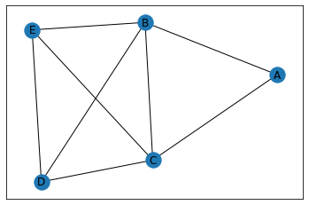
</div>
</div>
<p>con cada una de las redes asociadas, se describira algun tipo de flujo, trafico, procesos etc(..)
de denomina <strong>arco dirigido u orientado</strong> si permite el flujo positivo y flujo cero en la direccion opuesta.</p>
<p>la <strong>ruta</strong> es la sucesion de arcos distintos que une dos nodos pasando por otros nodos, independientemente de la direcion del flujo de cada arco
una <strong>red dirigida</strong> tiene todos sus arcos dirigidos.
una ruta forma un <strong>ciclo</strong> si conecta un nodo con sigo mismo, pasando por otros nodos</p>
<p>una <strong>red conectada</strong> es quella en que cada dos nodos distintos estan enlazados almenos con una ruta
un <strong>arbol</strong> es una red conectada que puede ser facilmente la red conectada de todos los nodos, donde, no se permiten ciclos
un <strong>arbol de expansion</strong> es un arbol que enlaza todos los nodosde la red tambien sin permitir ciclos.</p>
<hr class="docutils" />
<p>Ejercicios:</p>
<hr class="docutils" />
<ol class="arabic simple">
<li><p>grafique a mano y en colab el siguiente modelo \</p></li>
</ol>
<p><span class="math notranslate nohighlight">\(
  1.1). \\
  N=\{1,2,3,4,5\} \\
  A=\{(1,2),(2,5),(1,3),(3,4),(3,5),(5,1),(4,2)\}
  \)</span></p>
<p>\</p>
<p><span class="math notranslate nohighlight">\(
  1.2). \\
  N=\{1,2,3,4\} \\
  A=\{(1,3),(1,2),(2,3),(2,4),(3,4)\} \\
  \)</span></p>
<div class="highlight-none notranslate"><div class="highlight"><pre><span></span>  1. determine:
    - una ruta
    - un ciclo
    - un cilo dirigido
    - un árbol
    - Un árbol de expansion.
</pre></div>
</div>
<ol class="arabic simple" start="2">
<li><p>Determine los conjuntos Conjuntos <span class="math notranslate nohighlight">\(N\)</span> y <span class="math notranslate nohighlight">\(A\)</span> en las redes</p></li>
<li><p>Trace la Red definida por
<span class="math notranslate nohighlight">\(
N=\{1,2,3,4,5\} \\
A=\{(1,2),(1,5),(2,3)(2,4),(3,5),(3,4),(4,3),(4,6),(5,2),(5,6)\}
\)</span></p></li>
<li><p>se debe transportar en un vehiculo tres productos desde la tienda ABC hasta la cada de doña pepita, para hacer el domicilio que esta solicito a la tienda, pero el domiciliario y su vehiculo no puede trasportar mas de dos elementos a la vez, el domiciliario puede pedir ayuda de sus compañeros, ya que por el tamaño del producto no puede caragar mas de uno a la vez, el maximo de personas incluido el domicialiario es de tres personas, no es recomendable que tengan mas productos que personas en el carro.</p></li>
</ol>
<ul class="simple">
<li><p>formule el modelo de red para diseñar los viajes del vehiculo de modo que se asegure el domicilo a la casa de doña pepita.</p></li>
</ul>
</section>
<hr class="docutils" />
<section id="altogoritmo-de-arbol-de-expansion-minima">
<h2>Altogoritmo de Arbol de expansion Minima<a class="headerlink" href="#altogoritmo-de-arbol-de-expansion-minima" title="Link to this heading">#</a></h2>
<hr class="docutils" />
<p>El altogirtmo de expansion minima enlaza los nodos de una red, en forma directa o indirecta, con la minima longitud posible, de las <em>ramas</em> enlazantes.
el uso posible de este altogirtmo es en el diseño de carreteras o rutas entre nodos que unen varias poblaciones. siendo que la ruta diseñada puede pasar entro otras poblaciones o nodos</p>
<ul class="simple">
<li><p>el diseño mas economico del sistema sera aquel que minimice la distancia total de caminos creados.</p></li>
</ul>
<p><em>otra definicion:</em> Un árbol de expansión mínimo es un tipo especial de árbol que minimiza las longitudes (o dinero) de los bordes del árbol. Un ejemplo es una compañía de cable que quiere tender línea a múltiples vecindarios; al minimizar la cantidad de cable tendido, la compañía de cable ahorrará dinero.</p>
<p>procedimiento:</p>
<p><span class="math notranslate nohighlight">\(
Sea\ N=\{1,2,...n\}, en\ conjunto\ de \ nodos\ en\ la\ Red. \\
C_k=Conjunto\ de\ nodos\ que\ se\ han\ Conectado\ en \ forma\ permanente\ en\ la\ iteracion\ K \\
\bar{C_k} = Conjunto\ de\ nodos\ que\ faltan\ por\ conectar.  
\)</span></p>
<p><strong>Paso Cero:</strong>
El conjunto:
$<span class="math notranslate nohighlight">\(
C_0=𝛳\ y \\
\bar{C_0} =N
\)</span>$</p>
<ol class="arabic simple">
<li><p>Comenzar con cualquier nodo en el conjunto <span class="math notranslate nohighlight">\(\bar{C_0}\)</span> no conectado e igualas a <span class="math notranslate nohighlight">\(C_1=\{i\}\)</span>, con lo qie <span class="math notranslate nohighlight">\(\bar{C_1}=N-\{i\}\)</span>, igualar a <span class="math notranslate nohighlight">\(K=2\)</span></p></li>
<li><p><strong>paso general <span class="math notranslate nohighlight">\(K\ \)</span></strong> selecciona un nodo <span class="math notranslate nohighlight">\(j\)</span> en el conjunto no conectado <span class="math notranslate nohighlight">\(\bar{C_{k-1}}\)</span> que produzca el arco mas corto a un nodo, en el conjunto conectado a <span class="math notranslate nohighlight">\(C_{k-1}\)</span> enlazando <span class="math notranslate nohighlight">\(j\)</span> en forma permanente con <span class="math notranslate nohighlight">\(C_{k-1}\)</span> y sacarlo de <span class="math notranslate nohighlight">\(\bar{C_{k-1\)</span>}}$</p></li>
</ol>
<p>\</p>
<div class="math notranslate nohighlight">
\[
C_k=C_{k-1}+\{j\}, C_k = \bar{C_{k-1}}-\{j\}
\]</div>
<p>\</p>
<ul class="simple">
<li><p>donde los <span class="math notranslate nohighlight">\(\bar{C_{k}}\)</span> es igual a 0 o vacío, detenerse, o por el contrario igualar <span class="math notranslate nohighlight">\(K=k+1\)</span> y repertir el proceso.</p></li>
</ul>
<hr class="docutils" />
<p>teniendo el siguiente cuadro:</p>
<p>\begin{array}{|l|l|l|l|l|l|}
\hline
&amp; A &amp; B &amp; C &amp; D &amp; E \ \hline
A &amp; 0 &amp; 1 &amp; 4 &amp; 6 &amp; 2 \ \hline
B &amp; 1 &amp; 0 &amp; 2 &amp; - &amp; 2 \ \hline
C &amp; 4 &amp; 2 &amp; 0 &amp; 5 &amp; 2 \ \hline
D &amp; 6 &amp; - &amp; 5 &amp; 0 &amp; 4 \ \hline
E &amp; 2 &amp; 2 &amp; 2 &amp; 4 &amp; 0 \ \hline
\end{array}</p>
<p>utilice el altgoritmo de Prim y el de Kruskal y compare</p>
<hr class="docutils" />
<section id="modelo-teorico-segun-el-algoritmo-de-prim">
<h3>Modelo Teórico según el Algoritmo de Prim:<a class="headerlink" href="#modelo-teorico-segun-el-algoritmo-de-prim" title="Link to this heading">#</a></h3>
<p>Inicialización: Selecciona un nodo arbitrario como raíz del árbol.
<em>Construcción paso a paso:</em></p>
<ol class="arabic simple">
<li><p>En cada paso, se agrega la arista más corta que conecta un nodo dentro del árbol con uno fuera del árbol.</p></li>
<li><p>Selecciona el nodo más cercano al árbol actual y agrega la arista que conecta ese nodo con el árbol.</p></li>
<li><p>Terminación: Repetir el paso 2 hasta que todos los nodos estén incluidos en el árbol.</p></li>
</ol>
</section>
<section id="modelo-teorico-segun-el-altgoritmo-de-kruskal">
<h3>Modelo Teórico según el Altgoritmo de Kruskal:<a class="headerlink" href="#modelo-teorico-segun-el-altgoritmo-de-kruskal" title="Link to this heading">#</a></h3>
<p>Ordenación de aristas: Ordena todas las aristas en orden no decreciente de peso.
<em>Construcción paso a paso:</em></p>
<ol class="arabic simple">
<li><p>En cada paso, selecciona la arista más corta que no forme un ciclo con las aristas ya seleccionadas.</p></li>
<li><p>Agrega esta arista al árbol de expansión mínima.</p></li>
</ol>
<p>Terminación: Repetir el paso 2 hasta que se hayan seleccionado <span class="math notranslate nohighlight">\(n-1\)</span> aristas donde <span class="math notranslate nohighlight">\(n\)</span> es el numero de nodos en el sistema</p>
<div class="cell docutils container">
<div class="cell_input docutils container">
<div class="highlight-ipython3 notranslate"><div class="highlight"><pre><span></span><span class="c1">#usaremos en Altgoritmo de PRIMM</span>
<span class="kn">import</span> <span class="nn">numpy</span> <span class="k">as</span> <span class="nn">np</span>

<span class="k">def</span> <span class="nf">prim_mst</span><span class="p">(</span><span class="n">distancias</span><span class="p">):</span>
    <span class="n">num_nodos</span> <span class="o">=</span> <span class="nb">len</span><span class="p">(</span><span class="n">distancias</span><span class="p">)</span>
    <span class="c1"># Inicializar el MST y la lista de nodos visitados</span>
    <span class="n">mst</span> <span class="o">=</span> <span class="p">[]</span>
    <span class="n">visitado</span> <span class="o">=</span> <span class="p">[</span><span class="kc">False</span><span class="p">]</span> <span class="o">*</span> <span class="n">num_nodos</span>
    <span class="c1"># Empezar desde el nodo 0</span>
    <span class="n">visitado</span><span class="p">[</span><span class="mi">0</span><span class="p">]</span> <span class="o">=</span> <span class="kc">True</span>
    <span class="c1"># Repetir hasta que todos los nodos estén visitados</span>
    <span class="k">while</span> <span class="nb">len</span><span class="p">(</span><span class="n">mst</span><span class="p">)</span> <span class="o">&lt;</span> <span class="n">num_nodos</span> <span class="o">-</span> <span class="mi">1</span><span class="p">:</span>
        <span class="c1"># Encontrar la arista más corta que conecta un nodo visitado con uno no visitado</span>
        <span class="n">min_distancia</span> <span class="o">=</span> <span class="nb">float</span><span class="p">(</span><span class="s1">&#39;inf&#39;</span><span class="p">)</span>
        <span class="n">min_i</span><span class="p">,</span> <span class="n">min_j</span> <span class="o">=</span> <span class="kc">None</span><span class="p">,</span> <span class="kc">None</span>
        <span class="k">for</span> <span class="n">i</span> <span class="ow">in</span> <span class="nb">range</span><span class="p">(</span><span class="n">num_nodos</span><span class="p">):</span>
            <span class="k">if</span> <span class="n">visitado</span><span class="p">[</span><span class="n">i</span><span class="p">]:</span>
                <span class="k">for</span> <span class="n">j</span> <span class="ow">in</span> <span class="nb">range</span><span class="p">(</span><span class="n">num_nodos</span><span class="p">):</span>
                    <span class="k">if</span> <span class="ow">not</span> <span class="n">visitado</span><span class="p">[</span><span class="n">j</span><span class="p">]</span> <span class="ow">and</span> <span class="n">distancias</span><span class="p">[</span><span class="n">i</span><span class="p">][</span><span class="n">j</span><span class="p">]</span> <span class="o">&lt;</span> <span class="n">min_distancia</span><span class="p">:</span>
                        <span class="n">min_distancia</span> <span class="o">=</span> <span class="n">distancias</span><span class="p">[</span><span class="n">i</span><span class="p">][</span><span class="n">j</span><span class="p">]</span>
                        <span class="n">min_i</span><span class="p">,</span> <span class="n">min_j</span> <span class="o">=</span> <span class="n">i</span><span class="p">,</span> <span class="n">j</span>
        <span class="c1"># Agregar la arista al MST</span>
        <span class="n">mst</span><span class="o">.</span><span class="n">append</span><span class="p">((</span><span class="n">min_i</span><span class="p">,</span> <span class="n">min_j</span><span class="p">))</span>
        <span class="n">visitado</span><span class="p">[</span><span class="n">min_j</span><span class="p">]</span> <span class="o">=</span> <span class="kc">True</span>
    <span class="k">return</span> <span class="n">mst</span>

<span class="c1"># Definir la matriz de distancias</span>
<span class="n">distancias</span> <span class="o">=</span> <span class="p">[</span>
    <span class="p">[</span><span class="mi">0</span><span class="p">,</span> <span class="mi">1</span><span class="p">,</span> <span class="mi">4</span><span class="p">,</span> <span class="mi">6</span><span class="p">,</span> <span class="mi">2</span><span class="p">],</span>
    <span class="p">[</span><span class="mi">1</span><span class="p">,</span> <span class="mi">0</span><span class="p">,</span> <span class="mi">2</span><span class="p">,</span> <span class="nb">float</span><span class="p">(</span><span class="s1">&#39;inf&#39;</span><span class="p">),</span> <span class="mi">2</span><span class="p">],</span>
    <span class="p">[</span><span class="mi">4</span><span class="p">,</span> <span class="mi">2</span><span class="p">,</span> <span class="mi">0</span><span class="p">,</span> <span class="mi">5</span><span class="p">,</span> <span class="mi">2</span><span class="p">],</span>
    <span class="p">[</span><span class="mi">6</span><span class="p">,</span> <span class="nb">float</span><span class="p">(</span><span class="s1">&#39;inf&#39;</span><span class="p">),</span> <span class="mi">5</span><span class="p">,</span> <span class="mi">0</span><span class="p">,</span> <span class="mi">4</span><span class="p">],</span>
    <span class="p">[</span><span class="mi">2</span><span class="p">,</span> <span class="mi">2</span><span class="p">,</span> <span class="mi">2</span><span class="p">,</span> <span class="mi">4</span><span class="p">,</span> <span class="mi">0</span><span class="p">]</span>
<span class="p">]</span>

<span class="c1"># Letras correspondientes a los nodos</span>
<span class="n">nodos_letras</span> <span class="o">=</span> <span class="p">[</span><span class="s1">&#39;A&#39;</span><span class="p">,</span> <span class="s1">&#39;B&#39;</span><span class="p">,</span> <span class="s1">&#39;C&#39;</span><span class="p">,</span> <span class="s1">&#39;D&#39;</span><span class="p">,</span> <span class="s1">&#39;E&#39;</span><span class="p">]</span>

<span class="c1"># Ejecutar el algoritmo de Prim</span>
<span class="n">arbol_expansion_minima</span> <span class="o">=</span> <span class="n">prim_mst</span><span class="p">(</span><span class="n">distancias</span><span class="p">)</span>

<span class="c1"># Imprimir el MST resultante</span>
<span class="nb">print</span><span class="p">(</span><span class="s2">&quot;Árbol de Expansión Mínima:&quot;</span><span class="p">)</span>
<span class="k">for</span> <span class="n">arista</span> <span class="ow">in</span> <span class="n">arbol_expansion_minima</span><span class="p">:</span>
    <span class="nb">print</span><span class="p">(</span><span class="sa">f</span><span class="s2">&quot;Arista: </span><span class="si">{</span><span class="n">nodos_letras</span><span class="p">[</span><span class="n">arista</span><span class="p">[</span><span class="mi">0</span><span class="p">]]</span><span class="si">}</span><span class="s2"> - </span><span class="si">{</span><span class="n">nodos_letras</span><span class="p">[</span><span class="n">arista</span><span class="p">[</span><span class="mi">1</span><span class="p">]]</span><span class="si">}</span><span class="s2">&quot;</span><span class="p">)</span>
</pre></div>
</div>
</div>
<div class="cell_output docutils container">
<div class="output stream highlight-myst-ansi notranslate"><div class="highlight"><pre><span></span>Árbol de Expansión Mínima:
Arista: A - B
Arista: A - E
Arista: B - C
Arista: E - D
</pre></div>
</div>
</div>
</div>
<div class="cell docutils container">
<div class="cell_input docutils container">
<div class="highlight-ipython3 notranslate"><div class="highlight"><pre><span></span><span class="c1"># Altgoritmo de Kruskal</span>
<span class="k">class</span> <span class="nc">UnionFind</span><span class="p">:</span>
    <span class="k">def</span> <span class="fm">__init__</span><span class="p">(</span><span class="bp">self</span><span class="p">,</span> <span class="n">n</span><span class="p">):</span>
        <span class="bp">self</span><span class="o">.</span><span class="n">parent</span> <span class="o">=</span> <span class="nb">list</span><span class="p">(</span><span class="nb">range</span><span class="p">(</span><span class="n">n</span><span class="p">))</span>
        <span class="bp">self</span><span class="o">.</span><span class="n">rank</span> <span class="o">=</span> <span class="p">[</span><span class="mi">0</span><span class="p">]</span> <span class="o">*</span> <span class="n">n</span>

    <span class="k">def</span> <span class="nf">find</span><span class="p">(</span><span class="bp">self</span><span class="p">,</span> <span class="n">x</span><span class="p">):</span>
        <span class="k">if</span> <span class="bp">self</span><span class="o">.</span><span class="n">parent</span><span class="p">[</span><span class="n">x</span><span class="p">]</span> <span class="o">!=</span> <span class="n">x</span><span class="p">:</span>
            <span class="bp">self</span><span class="o">.</span><span class="n">parent</span><span class="p">[</span><span class="n">x</span><span class="p">]</span> <span class="o">=</span> <span class="bp">self</span><span class="o">.</span><span class="n">find</span><span class="p">(</span><span class="bp">self</span><span class="o">.</span><span class="n">parent</span><span class="p">[</span><span class="n">x</span><span class="p">])</span>
        <span class="k">return</span> <span class="bp">self</span><span class="o">.</span><span class="n">parent</span><span class="p">[</span><span class="n">x</span><span class="p">]</span>

    <span class="k">def</span> <span class="nf">union</span><span class="p">(</span><span class="bp">self</span><span class="p">,</span> <span class="n">x</span><span class="p">,</span> <span class="n">y</span><span class="p">):</span>
        <span class="n">root_x</span> <span class="o">=</span> <span class="bp">self</span><span class="o">.</span><span class="n">find</span><span class="p">(</span><span class="n">x</span><span class="p">)</span>
        <span class="n">root_y</span> <span class="o">=</span> <span class="bp">self</span><span class="o">.</span><span class="n">find</span><span class="p">(</span><span class="n">y</span><span class="p">)</span>
        <span class="k">if</span> <span class="n">root_x</span> <span class="o">!=</span> <span class="n">root_y</span><span class="p">:</span>
            <span class="k">if</span> <span class="bp">self</span><span class="o">.</span><span class="n">rank</span><span class="p">[</span><span class="n">root_x</span><span class="p">]</span> <span class="o">&lt;</span> <span class="bp">self</span><span class="o">.</span><span class="n">rank</span><span class="p">[</span><span class="n">root_y</span><span class="p">]:</span>
                <span class="bp">self</span><span class="o">.</span><span class="n">parent</span><span class="p">[</span><span class="n">root_x</span><span class="p">]</span> <span class="o">=</span> <span class="n">root_y</span>
            <span class="k">elif</span> <span class="bp">self</span><span class="o">.</span><span class="n">rank</span><span class="p">[</span><span class="n">root_x</span><span class="p">]</span> <span class="o">&gt;</span> <span class="bp">self</span><span class="o">.</span><span class="n">rank</span><span class="p">[</span><span class="n">root_y</span><span class="p">]:</span>
                <span class="bp">self</span><span class="o">.</span><span class="n">parent</span><span class="p">[</span><span class="n">root_y</span><span class="p">]</span> <span class="o">=</span> <span class="n">root_x</span>
            <span class="k">else</span><span class="p">:</span>
                <span class="bp">self</span><span class="o">.</span><span class="n">parent</span><span class="p">[</span><span class="n">root_y</span><span class="p">]</span> <span class="o">=</span> <span class="n">root_x</span>
                <span class="bp">self</span><span class="o">.</span><span class="n">rank</span><span class="p">[</span><span class="n">root_x</span><span class="p">]</span> <span class="o">+=</span> <span class="mi">1</span>

<span class="k">def</span> <span class="nf">kruskal_mst</span><span class="p">(</span><span class="n">distancias</span><span class="p">,</span> <span class="n">nodos_letras</span><span class="p">):</span>
    <span class="n">num_nodos</span> <span class="o">=</span> <span class="nb">len</span><span class="p">(</span><span class="n">distancias</span><span class="p">)</span>
    <span class="n">aristas</span> <span class="o">=</span> <span class="p">[]</span>
    <span class="c1"># Construir una lista de aristas (i, j, peso)</span>
    <span class="k">for</span> <span class="n">i</span> <span class="ow">in</span> <span class="nb">range</span><span class="p">(</span><span class="n">num_nodos</span><span class="p">):</span>
        <span class="k">for</span> <span class="n">j</span> <span class="ow">in</span> <span class="nb">range</span><span class="p">(</span><span class="n">i</span> <span class="o">+</span> <span class="mi">1</span><span class="p">,</span> <span class="n">num_nodos</span><span class="p">):</span>
            <span class="n">peso</span> <span class="o">=</span> <span class="n">distancias</span><span class="p">[</span><span class="n">i</span><span class="p">][</span><span class="n">j</span><span class="p">]</span>
            <span class="n">aristas</span><span class="o">.</span><span class="n">append</span><span class="p">((</span><span class="n">i</span><span class="p">,</span> <span class="n">j</span><span class="p">,</span> <span class="n">peso</span><span class="p">))</span>
    <span class="c1"># Ordenar las aristas por peso</span>
    <span class="n">aristas</span><span class="o">.</span><span class="n">sort</span><span class="p">(</span><span class="n">key</span><span class="o">=</span><span class="k">lambda</span> <span class="n">x</span><span class="p">:</span> <span class="n">x</span><span class="p">[</span><span class="mi">2</span><span class="p">])</span>
    <span class="c1"># Inicializar el MST y el Union-Find</span>
    <span class="n">mst</span> <span class="o">=</span> <span class="p">[]</span>
    <span class="n">uf</span> <span class="o">=</span> <span class="n">UnionFind</span><span class="p">(</span><span class="n">num_nodos</span><span class="p">)</span>
    <span class="c1"># Construir el MST</span>
    <span class="k">for</span> <span class="n">arista</span> <span class="ow">in</span> <span class="n">aristas</span><span class="p">:</span>
        <span class="n">u</span><span class="p">,</span> <span class="n">v</span><span class="p">,</span> <span class="n">peso</span> <span class="o">=</span> <span class="n">arista</span>
        <span class="k">if</span> <span class="n">uf</span><span class="o">.</span><span class="n">find</span><span class="p">(</span><span class="n">u</span><span class="p">)</span> <span class="o">!=</span> <span class="n">uf</span><span class="o">.</span><span class="n">find</span><span class="p">(</span><span class="n">v</span><span class="p">):</span>
            <span class="n">mst</span><span class="o">.</span><span class="n">append</span><span class="p">((</span><span class="n">u</span><span class="p">,</span> <span class="n">v</span><span class="p">))</span>
            <span class="n">uf</span><span class="o">.</span><span class="n">union</span><span class="p">(</span><span class="n">u</span><span class="p">,</span> <span class="n">v</span><span class="p">)</span>
    <span class="k">return</span> <span class="n">mst</span>

<span class="c1"># Definir la matriz de distancias</span>
<span class="n">distancias</span> <span class="o">=</span> <span class="p">[</span>
    <span class="p">[</span><span class="mi">0</span><span class="p">,</span> <span class="mi">1</span><span class="p">,</span> <span class="mi">4</span><span class="p">,</span> <span class="mi">6</span><span class="p">,</span> <span class="mi">2</span><span class="p">],</span>
    <span class="p">[</span><span class="mi">1</span><span class="p">,</span> <span class="mi">0</span><span class="p">,</span> <span class="mi">2</span><span class="p">,</span> <span class="nb">float</span><span class="p">(</span><span class="s1">&#39;inf&#39;</span><span class="p">),</span> <span class="mi">2</span><span class="p">],</span>
    <span class="p">[</span><span class="mi">4</span><span class="p">,</span> <span class="mi">2</span><span class="p">,</span> <span class="mi">0</span><span class="p">,</span> <span class="mi">5</span><span class="p">,</span> <span class="mi">2</span><span class="p">],</span>
    <span class="p">[</span><span class="mi">6</span><span class="p">,</span> <span class="nb">float</span><span class="p">(</span><span class="s1">&#39;inf&#39;</span><span class="p">),</span> <span class="mi">5</span><span class="p">,</span> <span class="mi">0</span><span class="p">,</span> <span class="mi">4</span><span class="p">],</span>
    <span class="p">[</span><span class="mi">2</span><span class="p">,</span> <span class="mi">2</span><span class="p">,</span> <span class="mi">2</span><span class="p">,</span> <span class="mi">4</span><span class="p">,</span> <span class="mi">0</span><span class="p">]</span>
<span class="p">]</span>

<span class="c1"># Letras correspondientes a los nodos</span>
<span class="n">nodos_letras</span> <span class="o">=</span> <span class="p">[</span><span class="s1">&#39;A&#39;</span><span class="p">,</span> <span class="s1">&#39;B&#39;</span><span class="p">,</span> <span class="s1">&#39;C&#39;</span><span class="p">,</span> <span class="s1">&#39;D&#39;</span><span class="p">,</span> <span class="s1">&#39;E&#39;</span><span class="p">]</span>

<span class="c1"># Ejecutar el algoritmo de Kruskal</span>
<span class="n">arbol_expansion_minima_kruskal</span> <span class="o">=</span> <span class="n">kruskal_mst</span><span class="p">(</span><span class="n">distancias</span><span class="p">,</span> <span class="n">nodos_letras</span><span class="p">)</span>

<span class="c1"># Imprimir el MST resultante</span>
<span class="nb">print</span><span class="p">(</span><span class="s2">&quot;Árbol de Expansión Mínima (Kruskal):&quot;</span><span class="p">)</span>
<span class="k">for</span> <span class="n">arista</span> <span class="ow">in</span> <span class="n">arbol_expansion_minima_kruskal</span><span class="p">:</span>
    <span class="nb">print</span><span class="p">(</span><span class="sa">f</span><span class="s2">&quot;Arista: </span><span class="si">{</span><span class="n">nodos_letras</span><span class="p">[</span><span class="n">arista</span><span class="p">[</span><span class="mi">0</span><span class="p">]]</span><span class="si">}</span><span class="s2"> - </span><span class="si">{</span><span class="n">nodos_letras</span><span class="p">[</span><span class="n">arista</span><span class="p">[</span><span class="mi">1</span><span class="p">]]</span><span class="si">}</span><span class="s2">&quot;</span><span class="p">)</span>
</pre></div>
</div>
</div>
<div class="cell_output docutils container">
<div class="output stream highlight-myst-ansi notranslate"><div class="highlight"><pre><span></span>Árbol de Expansión Mínima (Kruskal):
Arista: A - B
Arista: A - E
Arista: B - C
Arista: D - E
</pre></div>
</div>
</div>
</div>
<p>los algoritmos de árbol de expansión mínima, como Prim y Kruskal, tienen una amplia gama de aplicaciones en diferentes campos, como por ejemplo:</p>
<ol class="arabic simple">
<li><p>Redes de Distribución: Planificación de redes de distribución de electricidad, agua, gas, etc.</p></li>
<li><p>Telecomunicaciones: Diseño de redes de telecomunicaciones para interconectar estaciones base, torres de telefonía, etc.</p></li>
<li><p>Logística: Optimización de rutas en redes de transporte, como carreteras, ferrocarriles y rutas de envío.</p></li>
<li><p>Cableado de Computadoras: Diseño de redes de computadoras y cableado para conectar dispositivos en una red local.</p></li>
<li><p>Construcción de Infraestructura: Planificación de la construcción de carreteras, puentes y otras infraestructuras civiles.</p></li>
<li><p>Diseño de Circuitos Electrónicos: Diseño de circuitos impresos y conexiones entre componentes electrónicos en placas de circuito.</p></li>
<li><p>Análisis de Redes Sociales: Identificación de conexiones importantes y relaciones en redes sociales y de colaboración.</p></li>
<li><p>Biología Molecular: Análisis de interacciones entre proteínas en biología molecular y diseño de rutas metabólicas.</p></li>
<li><p>Exploración de Recursos Naturales: Planificación de rutas para la exploración y extracción de recursos naturales, como petróleo y minerales.</p></li>
<li><p>Diseño de Sistemas de Riego: Planificación de sistemas de riego para agricultura y jardinería.</p></li>
</ol>
<p>Ejercicio uno:</p>
<hr class="docutils" />
<p>la empresa ABC porvee un servicio de iluminacion a cinco nuevas areas pobladas por proyectos de costruccion, los nodos estan dados por la siguiente red:</p>
<div class="math notranslate nohighlight">
\[\begin{split}
N=\{1,2,3,4,5\} \\
A=\{(1,2),(1,4),(2,3),(3,4),(1,3),(1,5),(3,6),(4,6),(2,5)\}
\end{split}\]</div>
<p>\
valores (x10 km)
\begin{array}{c|cccc}
-&amp;1&amp;2&amp;3&amp;4&amp;5&amp;6 \
\hline
1&amp;0&amp;1&amp;5&amp;7&amp;9&amp;- \
2&amp;1&amp;0&amp;6&amp;-&amp;3&amp;- \
3&amp;-&amp;-&amp;0&amp;5&amp;-&amp;10 \
4&amp;-&amp;-&amp;-&amp;0&amp;8&amp;3 \
5&amp;-&amp;-&amp;-&amp;-&amp;0&amp;- \
6&amp;-&amp;-&amp;-&amp;-&amp;-&amp;0 \
\end{array}</p>
</section>
</section>
</section>
<hr class="docutils" />
<section class="tex2jax_ignore mathjax_ignore" id="unidad-cuatro-modelos-de-localizacion">
<h1>Unidad Cuatro: Modelos de Localizacion<a class="headerlink" href="#unidad-cuatro-modelos-de-localizacion" title="Link to this heading">#</a></h1>
<hr class="docutils" />
<section id="definicion-de-modelos-de-localizacion">
<h2>Definicion de modelos de localizacion<a class="headerlink" href="#definicion-de-modelos-de-localizacion" title="Link to this heading">#</a></h2>
<ol class="arabic simple">
<li><p><strong>Modelo de localización de planta:</strong> Este modelo se utiliza para determinar la ubicación óptima de una nueva planta o instalación, teniendo en cuenta factores como la disponibilidad de recursos, la proximidad a los proveedores y los clientes, y los costos de transporte.</p></li>
<li><p><strong>Modelo de asignación de instalaciones:</strong> Este modelo se utiliza para determinar la mejor manera de asignar las instalaciones existentes a las diferentes demandas, teniendo en cuenta factores como la capacidad, la disponibilidad de recursos y los costos de transporte.</p></li>
<li><p><strong>Modelo de ubicación de almacenes:</strong> Este modelo se utiliza para determinar la ubicación óptima de los almacenes, teniendo en cuenta factores como la demanda, la proximidad a los clientes, los costos de transporte y los costos de mantenimiento del almacén.</p></li>
<li><p><strong>Modelo de rutas de distribución:</strong> Este modelo se utiliza para optimizar la ruta de distribución de los productos, teniendo en cuenta factores como la demanda, la ubicación de los clientes, los costos de transporte y la capacidad de los vehículos.</p></li>
</ol>
</section>
<section id="localizacion-de-planta">
<h2>localización de planta<a class="headerlink" href="#localizacion-de-planta" title="Link to this heading">#</a></h2>
<p>Según la siguiente tabla de distancias debemos ubicar nuestro CDA (centro de Distribución), mayorista, las demás locaciones son posibles ubicaciones para distribuidores menores también propios.</p>
<ol class="arabic simple">
<li><p>Ubicar el distribuidor mayorista de tal forma que las distancias entre puntos sean lo más cortas posible. (justifique su respuesta)
una vez ubicado el mayorista ubique</p></li>
<li><p>distribuidores menores de tal forma que cubramos la mayoría de las demandas PROMEDIO del año.</p></li>
<li><p>Evalúe las posibilidades y justifique su respuesta</p></li>
</ol>
<p>\
valores (x10 km)
\begin{array}{c|cccc}
-&amp;A&amp;B&amp;C&amp;D&amp;E&amp;F&amp;G \
\hline
A&amp;-&amp;20&amp;-&amp;30&amp;-&amp;80&amp;- \
B&amp;-&amp;0&amp;10&amp;-&amp;10&amp;-&amp;- \
C&amp;-&amp;-&amp;0&amp;5&amp;5&amp;-&amp;- \
D&amp;-&amp;-&amp;-&amp;0&amp;5&amp;-&amp;- \
E&amp;-&amp;-&amp;-&amp;-&amp;0&amp;20&amp;15 \
F&amp;-&amp;-&amp;-&amp;-&amp;-&amp;0&amp;10&amp; \
G&amp;-&amp;-&amp;-&amp;-&amp;-&amp;-&amp;- \
\end{array}</p>
<p>\begin{array}{c|cc}
&amp; Poblacion\ de\ clientes &amp; valor\ m2 \
\hline
A &amp; 450 &amp; 1,2 \
B &amp; 190 &amp; 1,3 \
C &amp; 200 &amp; 1,2 \
D &amp; 250 &amp; 1,6 \
E &amp; 300 &amp; 1,6 \
F &amp; 380 &amp; 1,8 \
G &amp; 150 &amp; 1,1
\end{array}</p>
</section>
<section id="metodo-grafico-de-localizacion">
<h2>Metodo grafico de localizacion<a class="headerlink" href="#metodo-grafico-de-localizacion" title="Link to this heading">#</a></h2>
<p>El método gráfico de localización de plantas es una técnica utilizada para seleccionar la ubicación óptima de una nueva planta o instalación. El proceso implica el uso de un mapa de la zona para identificar los factores críticos que influyen en la selección de la ubicación, como la disponibilidad de materias primas, la proximidad al mercado, la disponibilidad de mano de obra y la infraestructura existente.</p>
<ol class="arabic simple">
<li><p>Identificación de los factores críticos: El primer paso es identificar los factores críticos que influyen en la ubicación de la planta. Estos factores pueden variar según el tipo de planta y la industria. Por ejemplo, una planta de procesamiento de alimentos puede requerir una ubicación cerca de los campos de cultivo, mientras que una planta de fabricación de alta tecnología puede requerir una ubicación cerca de los centros de investigación y desarrollo.</p></li>
<li><p>Creación del mapa: Una vez que se han identificado los factores críticos, se crea un mapa de la zona que incluye información detallada sobre la ubicación de estos factores. El mapa también puede incluir información sobre la topografía, las vías de acceso, la disponibilidad de energía y agua, y otros aspectos relevantes.</p></li>
<li><p>Asignación de pesos a los factores críticos: Una vez que se ha creado el mapa, se asigna un peso a cada uno de los factores críticos en función de su importancia relativa. Esto permite que se le dé una mayor importancia a los factores más críticos en el proceso de toma de decisiones.</p></li>
<li><p>Análisis de las ubicaciones potenciales: Se identifican las posibles ubicaciones para la nueva planta o instalación y se evalúan en función de los factores críticos y sus respectivos pesos. Se pueden utilizar diferentes métodos para hacer esto, como análisis multicriterio o análisis de distancia.</p></li>
<li><p>Selección de la ubicación óptima: Finalmente, se selecciona la ubicación óptima en función de los resultados del análisis y se procede a la planificación y construcción de la planta.</p></li>
</ol>
<p>ejercicios propuestos:</p>
<p>Grapich model</p>
<p>\begin{array}{c|c|c}
Ciudad&amp; Costos\ fijos\ (M)&amp;Costos\ Variables\
\hline
New\ york&amp;150.000.000&amp;777.130 \
washington&amp;230.000.000&amp;798.090\
Bogota&amp;180.000.00&amp;573.000 \
Quito&amp;130.000.000&amp;630.270\
\end{array}</p>
</section>
</section>
<section class="tex2jax_ignore mathjax_ignore" id="unidad-cinco-supply-chain-models-and-methods">
<h1>Unidad Cinco: supply chain models and methods.<a class="headerlink" href="#unidad-cinco-supply-chain-models-and-methods" title="Link to this heading">#</a></h1>
</section>
<section class="tex2jax_ignore mathjax_ignore" id="unidad-seis-diseno-y-medicion-de-la-cadena-logistica">
<h1>Unidad Seis: Diseño y medicion de la cadena logistica<a class="headerlink" href="#unidad-seis-diseno-y-medicion-de-la-cadena-logistica" title="Link to this heading">#</a></h1>
<p><code class="docutils literal notranslate"><span class="pre">Supply</span> <span class="pre">Chain</span> <span class="pre">Optimization</span> <span class="pre">Design</span> <span class="pre">and</span> <span class="pre">Management_</span> <span class="pre">Advances</span> <span class="pre">and</span> <span class="pre">Intelligent</span> <span class="pre">Methods</span> <span class="pre">Premier</span> <span class="pre">Reference</span> <span class="pre">Source</span></code></p>
<hr class="docutils" />
<p>Se ha utilizado una amplia gama de metodologías para resolver este problema de optimización. Sin embargo, los métodos matemáticos tradicionales han demostrado ser insuficientes para abordar los requisitos derivados del desarrollo de la competencia en el mercado (Silva et al. 2003). Las técnicas inteligentes inspiradas en la naturaleza se consideran bastante eficientes en el manejo de problemas NP-difíciles (es decir, problemas de optimización en los que no se puede encontrar el óptimo en tiempo polinomial). La principal característica de estos métodos es la imitación de la forma en que funcionan y evolucionan los sistemas naturales para hacer frente a situaciones del mundo real (Vassiliadis y Dounias 2009). Por ejemplo, las colonias de hormigas naturales cooperan para encontrar una fuente de alimento de alta calidad, una bandada de pájaros implementa un esquema de comunicación indirecta con el objetivo de encontrar la dirección óptima, etc. Algunos ejemplos de algoritmos inspirados en la naturaleza son los siguientes:</p>
<ol class="arabic simple">
<li><p>Ant Colony Optimization (ACO)</p></li>
<li><p>Particle Swarm Optimization (PSO)</p></li>
<li><p>Genetic Algorithms</p></li>
<li><p>Genetic Programming</p></li>
<li><p>Memetic Algorithms</p></li>
<li><p>Artificial Immune Systems</p></li>
<li><p>DNA Computing</p></li>
</ol>
<section id="deficiones">
<h2>Deficiones<a class="headerlink" href="#deficiones" title="Link to this heading">#</a></h2>
<p>Para arrojar algo de luz sobre los conceptos básicos de la gestión de la cadena de suministro, es conveniente presentar las funciones principales de una cadena de suministro simplificada (Silva et al. 2009). El enfoque de modelado consta de tres partes, la logística, el suministro y el sistema de distribución, a saber.</p>
<ol class="arabic simple">
<li><p><strong>Sistema logístico</strong>: recibe pedidos de los clientes y realiza pedidos a los proveedores en lo que a materia prima se refiere. Los materiales comprados se utilizarán en el proceso de fabricación.</p></li>
<li><p><strong>Sistema de abastecimiento:</strong> consiste en una red de diferentes proveedores o fabricantes, cada uno de los cuales se ocupa de producir el componente de producto solicitado para el sistema logístico. En este caso, la minimización del tiempo total de tardanza, como se define arriba, puede considerarse como la función objetivo. El problema de la oferta puede pensarse como un problema de optimización de la programación.</p></li>
<li><p><strong>Sistema de distribución:</strong> entrega los productos completos a los clientes correspondientes. Los clientes pueden ser descritos por su ubicación geográfica. Un modelo simple y realista del problema de la distribución es el problema de las rutas de los vehículos (o, a veces, el problema del viajante de comercio). Este es un problema de minimización que considera el costo de transporte de la flota de vehículos disponibles. Para este tipo de problema, una restricción común es que cada cliente es visitado por un vehículo y todos los clientes deben estar satisfechos.</p></li>
</ol>
</section>
<section id="aproximacion-de-la-medicion-de-la-cadena-de-suministro-con-la-planificacion-de-produccion-agregada">
<h2>aproximacion de la medicion de la cadena de suministro con la Planificación de producción agregada<a class="headerlink" href="#aproximacion-de-la-medicion-de-la-cadena-de-suministro-con-la-planificacion-de-produccion-agregada" title="Link to this heading">#</a></h2>
<ul class="simple">
<li><p>La literatura sobre planificación y control de la producción está llena de modelos y algoritmos para encontrar planes eficientes para la mayoría de los tipos de industrias. En este capítulo, presentamos algunos de los enfoques más exitosos del problema general.</p></li>
</ul>
<p>Una técnica particularmente efectiva para obtener planes de producción robustos y eficientes se basa en el principio de descomposición, también conocido como “divide y vencerás”.</p>
<p>Para encontrar el plan óptimo en un horizonte de tiempo, el tiempo mismo se descompone en dos o más niveles de granularidad, formando una jerarquía:</p>
<ul class="simple">
<li><p>en el nivel agregado, un período de tiempo puede comprender un mes o un trimestre, y el problema de planificación de la producción agregada es para decidir qué producir para una serie de próximos períodos, dado un pronóstico agregado, así como la capacidad esperada de las líneas de producción durante estos períodos.</p></li>
</ul>
<p>Estos planes de producción son particularmente útiles para las decisiones de personal, incluidas las decisiones sobre posibles horas extra que la empresa debería usar en un período agregado determinado, así como las decisiones sobre nuevas contrataciones/despidos o horarios de trabajo flexibles. También son útiles para determinar si se necesita una expansión o, en raras ocasiones, una contracción de la capacidad disponible. Luego, una vez que se determina un plan de producción agregado, el problema de planeación de producción de nivel más fino se convierte en el problema de calcular el plan óptimo para cada plan de producción de nivel más fino.</p>
<p>Comenzamos nuestra discusión sobre la planificación de la producción agregada con el ejemplo más simple posible.</p>
<ol class="arabic simple">
<li><p>Considere un pronóstico de demanda mensual <span class="math notranslate nohighlight">\(d_i i=1 . . . N\)</span> para N períodos, para una compañía imaginaria que produce un solo producto, y considere el problema de construir inventarios de productos terminados durante cada período para que se pueda satisfacer la demanda mensual, manteniendo niveles mínimos de inventarios, evitando así la acumulación de costos:</p></li>
</ol>
<ul class="simple">
<li><p>de mantenimiento</p></li>
<li><p>de inventario</p></li>
<li><p>de costos de oportunidad,</p></li>
<li><p>riesgo de obsolescencia del inventario</p></li>
<li><p>riesgo de daños en el inventario debido a desastres naturales.</p></li>
<li><p>otro tipo</p></li>
</ul>
<p>Si no se toman en cuenta las limitaciones de capacidad, entonces la política óptima es producir todo a tiempo, en un tiempo just in time (JIT), ya que hay suficiente capacidad para satisfacer cualquier nivel de demanda en cualquier período.
Sin embargo, cuando la capacidad no es suficiente para satisfacer la demanda durante las temporadas altas, como suele ser el caso, los inventarios deben construirse con anticipación, obviamente lo más tarde posible, para evitar la acumulación de costos de inventario.
El siguiente programa lineal (LP) determina la solución óptima para nuestro primer problema de planificación de la producción.</p>
<div class="math notranslate nohighlight">
\[\begin{split}
\text{min} \sum_{i=1}^{N}h_i \\
\
restricciones:
h_i=h_{i-1}+x_i-d_i,\ i=1,...,N\\
0 \leq x_i\leq c,\ i=1,...,N\\
0 \leq h_i,\ i=1,...,N\\
h_0 = I_0
\end{split}\]</div>
<p>Las variables de decisión x representan la producción de cada período, mientras que las variables h representan el inventario al final de cada período. Al principio, asumimos una acumulación de inventario existente de <span class="math notranslate nohighlight">\(I_o\)</span> unidades.</p>
</section>
<section id="modelos-especiales">
<h2>Modelos especiales<a class="headerlink" href="#modelos-especiales" title="Link to this heading">#</a></h2>
<section id="modelo-interactivo-eoq">
<h3>Modelo Interactivo EOQ<a class="headerlink" href="#modelo-interactivo-eoq" title="Link to this heading">#</a></h3>
<div class="cell docutils container">
<div class="cell_input docutils container">
<div class="highlight-ipython3 notranslate"><div class="highlight"><pre><span></span><span class="o">!</span>pip<span class="w"> </span>install<span class="w"> </span>ipywidgets
<span class="o">!</span>pip<span class="w"> </span>install<span class="w"> </span>matplotlib
</pre></div>
</div>
</div>
<div class="cell_output docutils container">
<div class="output stream highlight-myst-ansi notranslate"><div class="highlight"><pre><span></span>Requirement already satisfied: ipywidgets in /Users/cristianjaviercanomogollon/anaconda3/lib/python3.10/site-packages (8.1.5)
Requirement already satisfied: traitlets&gt;=4.3.1 in /Users/cristianjaviercanomogollon/anaconda3/lib/python3.10/site-packages (from ipywidgets) (5.7.1)
Requirement already satisfied: comm&gt;=0.1.3 in /Users/cristianjaviercanomogollon/anaconda3/lib/python3.10/site-packages (from ipywidgets) (0.2.2)
Requirement already satisfied: jupyterlab-widgets~=3.0.12 in /Users/cristianjaviercanomogollon/anaconda3/lib/python3.10/site-packages (from ipywidgets) (3.0.13)
Requirement already satisfied: widgetsnbextension~=4.0.12 in /Users/cristianjaviercanomogollon/anaconda3/lib/python3.10/site-packages (from ipywidgets) (4.0.13)
Requirement already satisfied: ipython&gt;=6.1.0 in /Users/cristianjaviercanomogollon/anaconda3/lib/python3.10/site-packages (from ipywidgets) (8.10.0)
Requirement already satisfied: pickleshare in /Users/cristianjaviercanomogollon/anaconda3/lib/python3.10/site-packages (from ipython&gt;=6.1.0-&gt;ipywidgets) (0.7.5)
Requirement already satisfied: decorator in /Users/cristianjaviercanomogollon/anaconda3/lib/python3.10/site-packages (from ipython&gt;=6.1.0-&gt;ipywidgets) (5.1.1)
Requirement already satisfied: jedi&gt;=0.16 in /Users/cristianjaviercanomogollon/anaconda3/lib/python3.10/site-packages (from ipython&gt;=6.1.0-&gt;ipywidgets) (0.18.1)
Requirement already satisfied: matplotlib-inline in /Users/cristianjaviercanomogollon/anaconda3/lib/python3.10/site-packages (from ipython&gt;=6.1.0-&gt;ipywidgets) (0.1.6)
Requirement already satisfied: appnope in /Users/cristianjaviercanomogollon/anaconda3/lib/python3.10/site-packages (from ipython&gt;=6.1.0-&gt;ipywidgets) (0.1.2)
Requirement already satisfied: stack-data in /Users/cristianjaviercanomogollon/anaconda3/lib/python3.10/site-packages (from ipython&gt;=6.1.0-&gt;ipywidgets) (0.2.0)
Requirement already satisfied: backcall in /Users/cristianjaviercanomogollon/anaconda3/lib/python3.10/site-packages (from ipython&gt;=6.1.0-&gt;ipywidgets) (0.2.0)
Requirement already satisfied: pexpect&gt;4.3 in /Users/cristianjaviercanomogollon/anaconda3/lib/python3.10/site-packages (from ipython&gt;=6.1.0-&gt;ipywidgets) (4.8.0)
Requirement already satisfied: pygments&gt;=2.4.0 in /Users/cristianjaviercanomogollon/anaconda3/lib/python3.10/site-packages (from ipython&gt;=6.1.0-&gt;ipywidgets) (2.11.2)
Requirement already satisfied: prompt-toolkit&lt;3.1.0,&gt;=3.0.30 in /Users/cristianjaviercanomogollon/anaconda3/lib/python3.10/site-packages (from ipython&gt;=6.1.0-&gt;ipywidgets) (3.0.36)
Requirement already satisfied: parso&lt;0.9.0,&gt;=0.8.0 in /Users/cristianjaviercanomogollon/anaconda3/lib/python3.10/site-packages (from jedi&gt;=0.16-&gt;ipython&gt;=6.1.0-&gt;ipywidgets) (0.8.3)
Requirement already satisfied: ptyprocess&gt;=0.5 in /Users/cristianjaviercanomogollon/anaconda3/lib/python3.10/site-packages (from pexpect&gt;4.3-&gt;ipython&gt;=6.1.0-&gt;ipywidgets) (0.7.0)
Requirement already satisfied: wcwidth in /Users/cristianjaviercanomogollon/anaconda3/lib/python3.10/site-packages (from prompt-toolkit&lt;3.1.0,&gt;=3.0.30-&gt;ipython&gt;=6.1.0-&gt;ipywidgets) (0.2.5)
Requirement already satisfied: asttokens in /Users/cristianjaviercanomogollon/anaconda3/lib/python3.10/site-packages (from stack-data-&gt;ipython&gt;=6.1.0-&gt;ipywidgets) (2.0.5)
Requirement already satisfied: pure-eval in /Users/cristianjaviercanomogollon/anaconda3/lib/python3.10/site-packages (from stack-data-&gt;ipython&gt;=6.1.0-&gt;ipywidgets) (0.2.2)
Requirement already satisfied: executing in /Users/cristianjaviercanomogollon/anaconda3/lib/python3.10/site-packages (from stack-data-&gt;ipython&gt;=6.1.0-&gt;ipywidgets) (0.8.3)
Requirement already satisfied: six in /Users/cristianjaviercanomogollon/anaconda3/lib/python3.10/site-packages (from asttokens-&gt;stack-data-&gt;ipython&gt;=6.1.0-&gt;ipywidgets) (1.16.0)
Requirement already satisfied: matplotlib in /Users/cristianjaviercanomogollon/anaconda3/lib/python3.10/site-packages (3.7.0)
Requirement already satisfied: pillow&gt;=6.2.0 in /Users/cristianjaviercanomogollon/anaconda3/lib/python3.10/site-packages (from matplotlib) (9.4.0)
Requirement already satisfied: contourpy&gt;=1.0.1 in /Users/cristianjaviercanomogollon/anaconda3/lib/python3.10/site-packages (from matplotlib) (1.0.5)
Requirement already satisfied: cycler&gt;=0.10 in /Users/cristianjaviercanomogollon/anaconda3/lib/python3.10/site-packages (from matplotlib) (0.11.0)
Requirement already satisfied: python-dateutil&gt;=2.7 in /Users/cristianjaviercanomogollon/anaconda3/lib/python3.10/site-packages (from matplotlib) (2.8.2)
Requirement already satisfied: numpy&gt;=1.20 in /Users/cristianjaviercanomogollon/anaconda3/lib/python3.10/site-packages (from matplotlib) (1.23.5)
Requirement already satisfied: kiwisolver&gt;=1.0.1 in /Users/cristianjaviercanomogollon/anaconda3/lib/python3.10/site-packages (from matplotlib) (1.4.4)
Requirement already satisfied: fonttools&gt;=4.22.0 in /Users/cristianjaviercanomogollon/anaconda3/lib/python3.10/site-packages (from matplotlib) (4.25.0)
Requirement already satisfied: packaging&gt;=20.0 in /Users/cristianjaviercanomogollon/anaconda3/lib/python3.10/site-packages (from matplotlib) (22.0)
Requirement already satisfied: pyparsing&gt;=2.3.1 in /Users/cristianjaviercanomogollon/anaconda3/lib/python3.10/site-packages (from matplotlib) (3.0.9)
Requirement already satisfied: six&gt;=1.5 in /Users/cristianjaviercanomogollon/anaconda3/lib/python3.10/site-packages (from python-dateutil&gt;=2.7-&gt;matplotlib) (1.16.0)
</pre></div>
</div>
</div>
</div>
<div class="cell docutils container">
<div class="cell_input docutils container">
<div class="highlight-ipython3 notranslate"><div class="highlight"><pre><span></span><span class="kn">import</span> <span class="nn">numpy</span> <span class="k">as</span> <span class="nn">np</span>
<span class="kn">import</span> <span class="nn">matplotlib.pyplot</span> <span class="k">as</span> <span class="nn">plt</span>
<span class="kn">import</span> <span class="nn">ipywidgets</span> <span class="k">as</span> <span class="nn">widgets</span>
<span class="kn">from</span> <span class="nn">IPython.display</span> <span class="kn">import</span> <span class="n">display</span>

<span class="c1"># Función para calcular la EOQ</span>
<span class="k">def</span> <span class="nf">eoq</span><span class="p">(</span><span class="n">demand</span><span class="p">,</span> <span class="n">order_cost</span><span class="p">,</span> <span class="n">holding_cost</span><span class="p">):</span>
    <span class="k">return</span> <span class="n">np</span><span class="o">.</span><span class="n">sqrt</span><span class="p">((</span><span class="mi">2</span> <span class="o">*</span> <span class="n">demand</span> <span class="o">*</span> <span class="n">order_cost</span><span class="p">)</span> <span class="o">/</span> <span class="n">holding_cost</span><span class="p">)</span>

<span class="c1"># Función para calcular los costos totales</span>
<span class="k">def</span> <span class="nf">total_cost</span><span class="p">(</span><span class="n">order_quantity</span><span class="p">,</span> <span class="n">demand</span><span class="p">,</span> <span class="n">order_cost</span><span class="p">,</span> <span class="n">holding_cost</span><span class="p">):</span>
    <span class="k">return</span> <span class="p">(</span><span class="n">order_cost</span> <span class="o">*</span> <span class="n">demand</span> <span class="o">/</span> <span class="n">order_quantity</span><span class="p">)</span> <span class="o">+</span> <span class="p">(</span><span class="n">holding_cost</span> <span class="o">*</span> <span class="n">order_quantity</span> <span class="o">/</span> <span class="mi">2</span><span class="p">)</span>

<span class="c1"># Función para actualizar el gráfico basado en los widgets</span>
<span class="k">def</span> <span class="nf">update_plot</span><span class="p">(</span><span class="n">demand</span><span class="p">,</span> <span class="n">order_cost</span><span class="p">,</span> <span class="n">holding_cost</span><span class="p">):</span>
    <span class="n">order_quantities</span> <span class="o">=</span> <span class="n">np</span><span class="o">.</span><span class="n">linspace</span><span class="p">(</span><span class="mi">1</span><span class="p">,</span> <span class="mi">2</span> <span class="o">*</span> <span class="n">demand</span><span class="p">,</span> <span class="mi">500</span><span class="p">)</span>
    <span class="n">costs</span> <span class="o">=</span> <span class="n">total_cost</span><span class="p">(</span><span class="n">order_quantities</span><span class="p">,</span> <span class="n">demand</span><span class="p">,</span> <span class="n">order_cost</span><span class="p">,</span> <span class="n">holding_cost</span><span class="p">)</span>

    <span class="n">q_optimal</span> <span class="o">=</span> <span class="n">eoq</span><span class="p">(</span><span class="n">demand</span><span class="p">,</span> <span class="n">order_cost</span><span class="p">,</span> <span class="n">holding_cost</span><span class="p">)</span>

    <span class="n">plt</span><span class="o">.</span><span class="n">figure</span><span class="p">(</span><span class="n">figsize</span><span class="o">=</span><span class="p">(</span><span class="mi">12</span><span class="p">,</span> <span class="mi">6</span><span class="p">))</span>

    <span class="c1"># Graficar costos totales</span>
    <span class="n">plt</span><span class="o">.</span><span class="n">plot</span><span class="p">(</span><span class="n">order_quantities</span><span class="p">,</span> <span class="n">costs</span><span class="p">,</span> <span class="n">label</span><span class="o">=</span><span class="s1">&#39;Costo Total&#39;</span><span class="p">,</span> <span class="n">color</span><span class="o">=</span><span class="s1">&#39;blue&#39;</span><span class="p">)</span>
    <span class="n">plt</span><span class="o">.</span><span class="n">axvline</span><span class="p">(</span><span class="n">x</span><span class="o">=</span><span class="n">q_optimal</span><span class="p">,</span> <span class="n">color</span><span class="o">=</span><span class="s1">&#39;r&#39;</span><span class="p">,</span> <span class="n">linestyle</span><span class="o">=</span><span class="s1">&#39;--&#39;</span><span class="p">,</span> <span class="n">label</span><span class="o">=</span><span class="sa">f</span><span class="s1">&#39;EOQ: </span><span class="si">{</span><span class="n">q_optimal</span><span class="si">:</span><span class="s1">.2f</span><span class="si">}</span><span class="s1">&#39;</span><span class="p">)</span>

    <span class="c1"># Graficar costos de pedido</span>
    <span class="n">cost_ordering</span> <span class="o">=</span> <span class="n">order_cost</span> <span class="o">*</span> <span class="n">demand</span> <span class="o">/</span> <span class="n">order_quantities</span>
    <span class="n">plt</span><span class="o">.</span><span class="n">plot</span><span class="p">(</span><span class="n">order_quantities</span><span class="p">,</span> <span class="n">cost_ordering</span><span class="p">,</span> <span class="n">label</span><span class="o">=</span><span class="s1">&#39;Costo de Pedido&#39;</span><span class="p">,</span> <span class="n">color</span><span class="o">=</span><span class="s1">&#39;green&#39;</span><span class="p">,</span> <span class="n">linestyle</span><span class="o">=</span><span class="s1">&#39;--&#39;</span><span class="p">)</span>

    <span class="c1"># Graficar costos de almacenamiento</span>
    <span class="n">cost_holding</span> <span class="o">=</span> <span class="n">holding_cost</span> <span class="o">*</span> <span class="n">order_quantities</span> <span class="o">/</span> <span class="mi">2</span>
    <span class="n">plt</span><span class="o">.</span><span class="n">plot</span><span class="p">(</span><span class="n">order_quantities</span><span class="p">,</span> <span class="n">cost_holding</span><span class="p">,</span> <span class="n">label</span><span class="o">=</span><span class="s1">&#39;Costo de Almacenamiento&#39;</span><span class="p">,</span> <span class="n">color</span><span class="o">=</span><span class="s1">&#39;orange&#39;</span><span class="p">,</span> <span class="n">linestyle</span><span class="o">=</span><span class="s1">&#39;--&#39;</span><span class="p">)</span>

    <span class="n">plt</span><span class="o">.</span><span class="n">xlabel</span><span class="p">(</span><span class="s1">&#39;Cantidad de Pedido&#39;</span><span class="p">)</span>
    <span class="n">plt</span><span class="o">.</span><span class="n">ylabel</span><span class="p">(</span><span class="s1">&#39;Costo&#39;</span><span class="p">)</span>
    <span class="n">plt</span><span class="o">.</span><span class="n">title</span><span class="p">(</span><span class="s1">&#39;Modelo EOQ Interactivo&#39;</span><span class="p">)</span>
    <span class="n">plt</span><span class="o">.</span><span class="n">legend</span><span class="p">()</span>
    <span class="n">plt</span><span class="o">.</span><span class="n">grid</span><span class="p">(</span><span class="kc">True</span><span class="p">)</span>
    <span class="n">plt</span><span class="o">.</span><span class="n">show</span><span class="p">()</span>

<span class="c1"># Widgets para los parámetros</span>
<span class="n">demand_widget</span> <span class="o">=</span> <span class="n">widgets</span><span class="o">.</span><span class="n">FloatSlider</span><span class="p">(</span><span class="n">value</span><span class="o">=</span><span class="mi">20</span><span class="p">,</span> <span class="nb">min</span><span class="o">=</span><span class="mi">10</span><span class="p">,</span> <span class="nb">max</span><span class="o">=</span><span class="mi">1000</span><span class="p">,</span> <span class="n">step</span><span class="o">=</span><span class="mi">10</span><span class="p">,</span> <span class="n">description</span><span class="o">=</span><span class="s1">&#39;Demanda Anual:&#39;</span><span class="p">)</span>
<span class="n">order_cost_widget</span> <span class="o">=</span> <span class="n">widgets</span><span class="o">.</span><span class="n">FloatSlider</span><span class="p">(</span><span class="n">value</span><span class="o">=</span><span class="mi">10</span><span class="p">,</span> <span class="nb">min</span><span class="o">=</span><span class="mi">10</span><span class="p">,</span> <span class="nb">max</span><span class="o">=</span><span class="mi">200</span><span class="p">,</span> <span class="n">step</span><span class="o">=</span><span class="mi">10</span><span class="p">,</span> <span class="n">description</span><span class="o">=</span><span class="s1">&#39;Costo de Pedido:&#39;</span><span class="p">)</span>
<span class="n">holding_cost_widget</span> <span class="o">=</span> <span class="n">widgets</span><span class="o">.</span><span class="n">FloatSlider</span><span class="p">(</span><span class="n">value</span><span class="o">=</span><span class="mi">2</span><span class="p">,</span> <span class="nb">min</span><span class="o">=</span><span class="mf">0.5</span><span class="p">,</span> <span class="nb">max</span><span class="o">=</span><span class="mi">200</span><span class="p">,</span> <span class="n">step</span><span class="o">=</span><span class="mf">0.5</span><span class="p">,</span> <span class="n">description</span><span class="o">=</span><span class="s1">&#39;Costo de Almacenamiento:&#39;</span><span class="p">)</span>

<span class="c1"># Enlazar widgets con la función de actualización</span>
<span class="n">ui</span> <span class="o">=</span> <span class="n">widgets</span><span class="o">.</span><span class="n">VBox</span><span class="p">([</span><span class="n">demand_widget</span><span class="p">,</span> <span class="n">order_cost_widget</span><span class="p">,</span> <span class="n">holding_cost_widget</span><span class="p">])</span>
<span class="n">out</span> <span class="o">=</span> <span class="n">widgets</span><span class="o">.</span><span class="n">interactive_output</span><span class="p">(</span><span class="n">update_plot</span><span class="p">,</span> <span class="p">{</span>
    <span class="s1">&#39;demand&#39;</span><span class="p">:</span> <span class="n">demand_widget</span><span class="p">,</span>
    <span class="s1">&#39;order_cost&#39;</span><span class="p">:</span> <span class="n">order_cost_widget</span><span class="p">,</span>
    <span class="s1">&#39;holding_cost&#39;</span><span class="p">:</span> <span class="n">holding_cost_widget</span>
<span class="p">})</span>

<span class="n">display</span><span class="p">(</span><span class="n">ui</span><span class="p">,</span> <span class="n">out</span><span class="p">)</span>
</pre></div>
</div>
</div>
<div class="cell_output docutils container">
<script type="application/vnd.jupyter.widget-view+json">{"model_id": "edd3ef776bd64925bde6810dcae09975", "version_major": 2, "version_minor": 0}</script><script type="application/vnd.jupyter.widget-view+json">{"model_id": "e43d7eea16804a6491fa9a7207299043", "version_major": 2, "version_minor": 0}</script></div>
</div>
<p>los modelos interactivos nos ayudan a entender la logica de las cosas, intenta modificando cada uno de los datos, tambien podemos usar elementos propios de python para hacer comparaciones por ejemplo:</p>
<ul class="simple">
<li><p>el siguiente codigo toma los valores de Demanda, h y S, y realiza la adicion de una unidad a la variable s 10 veces, con el fin de verificar el comportamiento de Q en este cambio. de esta manera podemos verificar la afectacion de <span class="math notranslate nohighlight">\(S\)</span> a <span class="math notranslate nohighlight">\(Q\)</span></p></li>
</ul>
<div class="cell docutils container">
<div class="cell_input docutils container">
<div class="highlight-ipython3 notranslate"><div class="highlight"><pre><span></span><span class="kn">import</span> <span class="nn">math</span>

<span class="k">def</span> <span class="nf">eoq</span><span class="p">(</span><span class="n">demand</span><span class="p">,</span> <span class="n">order_cost</span><span class="p">,</span> <span class="n">holding_cost</span><span class="p">,</span> <span class="n">s_value</span><span class="p">):</span>
    <span class="n">eoq</span> <span class="o">=</span> <span class="n">math</span><span class="o">.</span><span class="n">sqrt</span><span class="p">((</span><span class="mi">2</span> <span class="o">*</span> <span class="n">demand</span> <span class="o">*</span> <span class="n">order_cost</span><span class="p">)</span> <span class="o">/</span> <span class="p">(</span><span class="n">holding_cost</span> <span class="o">*</span> <span class="n">s_value</span><span class="p">))</span>
    <span class="k">return</span> <span class="n">eoq</span>

<span class="n">demand</span> <span class="o">=</span> <span class="nb">float</span><span class="p">(</span><span class="nb">input</span><span class="p">(</span><span class="s2">&quot;Ingrese la demanda anual: &quot;</span><span class="p">))</span>
<span class="n">order_cost</span> <span class="o">=</span> <span class="nb">float</span><span class="p">(</span><span class="nb">input</span><span class="p">(</span><span class="s2">&quot;Ingrese el costo de pedido: &quot;</span><span class="p">))</span>
<span class="n">holding_cost</span> <span class="o">=</span> <span class="nb">float</span><span class="p">(</span><span class="nb">input</span><span class="p">(</span><span class="s2">&quot;Ingrese el costo de almacenamiento: &quot;</span><span class="p">))</span>

<span class="k">for</span> <span class="n">i</span> <span class="ow">in</span> <span class="nb">range</span><span class="p">(</span><span class="mi">10</span><span class="p">):</span>
    <span class="n">s_value</span> <span class="o">=</span> <span class="p">(</span><span class="n">order_cost</span> <span class="o">+</span> <span class="n">i</span><span class="p">)</span> <span class="o">+</span> <span class="mi">1</span>  <span class="c1"># El valor de S cambiará en cada iteración</span>
    <span class="n">eoq_value</span> <span class="o">=</span> <span class="n">eoq</span><span class="p">(</span><span class="n">demand</span><span class="p">,</span> <span class="n">order_cost</span><span class="p">,</span> <span class="n">holding_cost</span><span class="p">,</span> <span class="n">s_value</span><span class="p">)</span>
    <span class="nb">print</span><span class="p">(</span><span class="s2">&quot;Para S = </span><span class="si">{}</span><span class="s2">, EOQ: </span><span class="si">{}</span><span class="s2">&quot;</span><span class="o">.</span><span class="n">format</span><span class="p">(</span><span class="n">s_value</span><span class="p">,</span> <span class="n">eoq_value</span><span class="p">))</span>
</pre></div>
</div>
</div>
<div class="cell_output docutils container">
<div class="output stream highlight-myst-ansi notranslate"><div class="highlight"><pre><span></span>Ingrese la demanda anual: 10000
Ingrese el costo de pedido: 20
Ingrese el costo de almacenamiento: 2
Para S = 21.0, EOQ: 97.59000729485331
Para S = 22.0, EOQ: 95.34625892455922
Para S = 23.0, EOQ: 93.25048082403138
Para S = 24.0, EOQ: 91.28709291752769
Para S = 25.0, EOQ: 89.44271909999159
Para S = 26.0, EOQ: 87.70580193070292
Para S = 27.0, EOQ: 86.06629658238704
Para S = 28.0, EOQ: 84.51542547285166
Para S = 29.0, EOQ: 83.04547985373996
Para S = 30.0, EOQ: 81.64965809277261
</pre></div>
</div>
</div>
</div>
</section>
<section id="modelo-interactivo-poq-python">
<h3>modelo interactivo POQ - python<a class="headerlink" href="#modelo-interactivo-poq-python" title="Link to this heading">#</a></h3>
<div class="cell docutils container">
<div class="cell_input docutils container">
<div class="highlight-ipython3 notranslate"><div class="highlight"><pre><span></span><span class="kn">import</span> <span class="nn">ipywidgets</span> <span class="k">as</span> <span class="nn">widgets</span>
<span class="kn">from</span> <span class="nn">IPython.display</span> <span class="kn">import</span> <span class="n">display</span>
<span class="kn">import</span> <span class="nn">matplotlib.pyplot</span> <span class="k">as</span> <span class="nn">plt</span>
<span class="kn">import</span> <span class="nn">numpy</span> <span class="k">as</span> <span class="nn">np</span>

<span class="k">def</span> <span class="nf">calcular_epq</span><span class="p">(</span><span class="n">demanda</span><span class="p">,</span> <span class="n">costo_preparacion</span><span class="p">,</span> <span class="n">costo_almacenamiento</span><span class="p">,</span> <span class="n">tasa_produccion</span><span class="p">):</span>
  <span class="k">return</span> <span class="n">np</span><span class="o">.</span><span class="n">sqrt</span><span class="p">((</span><span class="mi">2</span> <span class="o">*</span> <span class="n">demanda</span> <span class="o">*</span> <span class="n">costo_preparacion</span><span class="p">)</span> <span class="o">/</span> <span class="n">costo_almacenamiento</span> <span class="o">*</span> <span class="p">(</span><span class="n">tasa_produccion</span> <span class="o">/</span> <span class="p">(</span><span class="n">tasa_produccion</span> <span class="o">-</span> <span class="n">demanda</span><span class="p">)))</span>

<span class="c1"># detalles de los wiggets</span>
<span class="n">demanda_widget</span> <span class="o">=</span> <span class="n">widgets</span><span class="o">.</span><span class="n">IntSlider</span><span class="p">(</span><span class="n">value</span><span class="o">=</span><span class="mi">1000</span><span class="p">,</span> <span class="nb">min</span><span class="o">=</span><span class="mi">100</span><span class="p">,</span> <span class="nb">max</span><span class="o">=</span><span class="mi">5000</span><span class="p">,</span> <span class="n">step</span><span class="o">=</span><span class="mi">100</span><span class="p">,</span> <span class="n">description</span><span class="o">=</span><span class="s1">&#39;Demanda:&#39;</span><span class="p">)</span>
<span class="n">costo_preparacion_widget</span> <span class="o">=</span> <span class="n">widgets</span><span class="o">.</span><span class="n">IntSlider</span><span class="p">(</span><span class="n">value</span><span class="o">=</span><span class="mi">100</span><span class="p">,</span> <span class="nb">min</span><span class="o">=</span><span class="mi">10</span><span class="p">,</span> <span class="nb">max</span><span class="o">=</span><span class="mi">500</span><span class="p">,</span> <span class="n">step</span><span class="o">=</span><span class="mi">10</span><span class="p">,</span> <span class="n">description</span><span class="o">=</span><span class="s1">&#39;Costo Preparación:&#39;</span><span class="p">)</span>
<span class="n">costo_almacenamiento_widget</span> <span class="o">=</span> <span class="n">widgets</span><span class="o">.</span><span class="n">FloatSlider</span><span class="p">(</span><span class="n">value</span><span class="o">=</span><span class="mf">0.5</span><span class="p">,</span> <span class="nb">min</span><span class="o">=</span><span class="mf">0.1</span><span class="p">,</span> <span class="nb">max</span><span class="o">=</span><span class="mf">2.0</span><span class="p">,</span> <span class="n">step</span><span class="o">=</span><span class="mf">0.1</span><span class="p">,</span> <span class="n">description</span><span class="o">=</span><span class="s1">&#39;Costo Almacenamiento:&#39;</span><span class="p">)</span>
<span class="n">tasa_produccion_widget</span> <span class="o">=</span> <span class="n">widgets</span><span class="o">.</span><span class="n">IntSlider</span><span class="p">(</span><span class="n">value</span><span class="o">=</span><span class="mi">6000</span><span class="p">,</span> <span class="nb">min</span><span class="o">=</span><span class="mi">1000</span><span class="p">,</span> <span class="nb">max</span><span class="o">=</span><span class="mi">10000</span><span class="p">,</span> <span class="n">step</span><span class="o">=</span><span class="mi">100</span><span class="p">,</span> <span class="n">description</span><span class="o">=</span><span class="s1">&#39;Tasa Producción:&#39;</span><span class="p">)</span>

<span class="k">def</span> <span class="nf">actualizar_grafico</span><span class="p">(</span><span class="n">demanda</span><span class="p">,</span> <span class="n">costo_preparacion</span><span class="p">,</span> <span class="n">costo_almacenamiento</span><span class="p">,</span> <span class="n">tasa_produccion</span><span class="p">):</span>
  <span class="n">epq_valor</span> <span class="o">=</span> <span class="n">calcular_epq</span><span class="p">(</span><span class="n">demanda</span><span class="p">,</span> <span class="n">costo_preparacion</span><span class="p">,</span> <span class="n">costo_almacenamiento</span><span class="p">,</span> <span class="n">tasa_produccion</span><span class="p">)</span>
  <span class="nb">print</span><span class="p">(</span><span class="sa">f</span><span class="s1">&#39;EPQ: </span><span class="si">{</span><span class="n">epq_valor</span><span class="si">:</span><span class="s1">.2f</span><span class="si">}</span><span class="s1">&#39;</span><span class="p">)</span>

  <span class="c1"># Datos</span>
  <span class="n">tiempo_ciclo</span> <span class="o">=</span> <span class="n">epq_valor</span> <span class="o">/</span> <span class="n">demanda</span>
  <span class="n">tiempo_produccion</span> <span class="o">=</span> <span class="n">epq_valor</span> <span class="o">/</span> <span class="n">tasa_produccion</span>
  <span class="n">tiempo</span> <span class="o">=</span> <span class="n">np</span><span class="o">.</span><span class="n">linspace</span><span class="p">(</span><span class="mi">0</span><span class="p">,</span> <span class="n">tiempo_ciclo</span><span class="p">,</span> <span class="mi">100</span><span class="p">)</span>
  <span class="n">inventario</span> <span class="o">=</span> <span class="n">np</span><span class="o">.</span><span class="n">where</span><span class="p">(</span><span class="n">tiempo</span> <span class="o">&lt;=</span> <span class="n">tiempo_produccion</span><span class="p">,</span>
                       <span class="n">tasa_produccion</span> <span class="o">*</span> <span class="n">tiempo</span> <span class="o">-</span> <span class="n">demanda</span> <span class="o">*</span> <span class="n">tiempo</span><span class="p">,</span>
                       <span class="n">epq_valor</span> <span class="o">-</span> <span class="n">demanda</span> <span class="o">*</span> <span class="n">tiempo</span><span class="p">)</span>

  <span class="c1"># Grafica</span>
  <span class="n">plt</span><span class="o">.</span><span class="n">figure</span><span class="p">(</span><span class="n">figsize</span><span class="o">=</span><span class="p">(</span><span class="mi">8</span><span class="p">,</span> <span class="mi">6</span><span class="p">))</span>
  <span class="n">plt</span><span class="o">.</span><span class="n">plot</span><span class="p">(</span><span class="n">tiempo</span><span class="p">,</span> <span class="n">inventario</span><span class="p">)</span>
  <span class="n">plt</span><span class="o">.</span><span class="n">xlabel</span><span class="p">(</span><span class="s1">&#39;Tiempo&#39;</span><span class="p">)</span>
  <span class="n">plt</span><span class="o">.</span><span class="n">ylabel</span><span class="p">(</span><span class="s1">&#39;Inventario&#39;</span><span class="p">)</span>
  <span class="n">plt</span><span class="o">.</span><span class="n">title</span><span class="p">(</span><span class="s1">&#39;Modelo EPQ&#39;</span><span class="p">)</span>
  <span class="n">plt</span><span class="o">.</span><span class="n">grid</span><span class="p">(</span><span class="kc">True</span><span class="p">)</span>
  <span class="n">plt</span><span class="o">.</span><span class="n">show</span><span class="p">()</span>

<span class="n">widgets</span><span class="o">.</span><span class="n">interact</span><span class="p">(</span><span class="n">actualizar_grafico</span><span class="p">,</span>
                 <span class="n">demanda</span><span class="o">=</span><span class="n">demanda_widget</span><span class="p">,</span>
                 <span class="n">costo_preparacion</span><span class="o">=</span><span class="n">costo_preparacion_widget</span><span class="p">,</span>
                 <span class="n">costo_almacenamiento</span><span class="o">=</span><span class="n">costo_almacenamiento_widget</span><span class="p">,</span>
                 <span class="n">tasa_produccion</span><span class="o">=</span><span class="n">tasa_produccion_widget</span><span class="p">);</span>
</pre></div>
</div>
</div>
<div class="cell_output docutils container">
<div class="output stream highlight-myst-ansi notranslate"><div class="highlight"><pre><span></span>EPQ: 692.82
</pre></div>
</div>
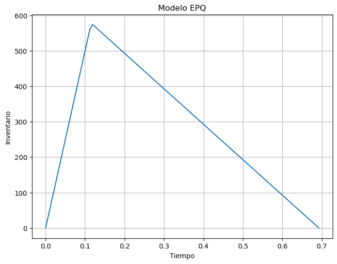
<script type="application/vnd.jupyter.widget-view+json">{"model_id": "db7a2dcbaffe461597ab0be953c677d4", "version_major": 2, "version_minor": 0}</script></div>
</div>
</section>
<section id="modelo-de-asignacion-de-rutas-aleatorias">
<h3>Modelo de asignacion de rutas aleatorias<a class="headerlink" href="#modelo-de-asignacion-de-rutas-aleatorias" title="Link to this heading">#</a></h3>
<div class="cell docutils container">
<div class="cell_input docutils container">
<div class="highlight-ipython3 notranslate"><div class="highlight"><pre><span></span><span class="kn">import</span> <span class="nn">random</span>
<span class="kn">import</span> <span class="nn">numpy</span> <span class="k">as</span> <span class="nn">np</span>
<span class="kn">import</span> <span class="nn">pandas</span> <span class="k">as</span> <span class="nn">pd</span>
<span class="kn">import</span> <span class="nn">matplotlib.pyplot</span> <span class="k">as</span> <span class="nn">plt</span>

<span class="c1"># Solicitar el número de nodos</span>
<span class="n">num_nodos</span> <span class="o">=</span> <span class="nb">int</span><span class="p">(</span><span class="nb">input</span><span class="p">(</span><span class="s2">&quot;Ingrese el número de nodos: &quot;</span><span class="p">))</span>

<span class="c1"># Generar posiciones aleatorias para cada nodo</span>
<span class="n">posiciones</span> <span class="o">=</span> <span class="p">{</span><span class="n">i</span><span class="p">:</span> <span class="p">(</span><span class="n">random</span><span class="o">.</span><span class="n">random</span><span class="p">(),</span> <span class="n">random</span><span class="o">.</span><span class="n">random</span><span class="p">())</span> <span class="k">for</span> <span class="n">i</span> <span class="ow">in</span> <span class="nb">range</span><span class="p">(</span><span class="n">num_nodos</span><span class="p">)}</span>

<span class="c1"># Calcular la matriz de distancias</span>
<span class="n">matriz_distancias</span> <span class="o">=</span> <span class="n">np</span><span class="o">.</span><span class="n">zeros</span><span class="p">((</span><span class="n">num_nodos</span><span class="p">,</span> <span class="n">num_nodos</span><span class="p">))</span>
<span class="k">for</span> <span class="n">i</span> <span class="ow">in</span> <span class="nb">range</span><span class="p">(</span><span class="n">num_nodos</span><span class="p">):</span>
    <span class="k">for</span> <span class="n">j</span> <span class="ow">in</span> <span class="nb">range</span><span class="p">(</span><span class="n">i</span> <span class="o">+</span> <span class="mi">1</span><span class="p">,</span> <span class="n">num_nodos</span><span class="p">):</span>
        <span class="n">distancia</span> <span class="o">=</span> <span class="n">np</span><span class="o">.</span><span class="n">sqrt</span><span class="p">((</span><span class="n">posiciones</span><span class="p">[</span><span class="n">i</span><span class="p">][</span><span class="mi">0</span><span class="p">]</span> <span class="o">-</span> <span class="n">posiciones</span><span class="p">[</span><span class="n">j</span><span class="p">][</span><span class="mi">0</span><span class="p">])</span><span class="o">**</span><span class="mi">2</span> <span class="o">+</span> <span class="p">(</span><span class="n">posiciones</span><span class="p">[</span><span class="n">i</span><span class="p">][</span><span class="mi">1</span><span class="p">]</span> <span class="o">-</span> <span class="n">posiciones</span><span class="p">[</span><span class="n">j</span><span class="p">][</span><span class="mi">1</span><span class="p">])</span><span class="o">**</span><span class="mi">2</span><span class="p">)</span>
        <span class="n">matriz_distancias</span><span class="p">[</span><span class="n">i</span><span class="p">,</span> <span class="n">j</span><span class="p">]</span> <span class="o">=</span> <span class="nb">round</span><span class="p">(</span><span class="n">distancia</span><span class="p">,</span> <span class="mi">1</span><span class="p">)</span>
        <span class="n">matriz_distancias</span><span class="p">[</span><span class="n">j</span><span class="p">,</span> <span class="n">i</span><span class="p">]</span> <span class="o">=</span> <span class="nb">round</span><span class="p">(</span><span class="n">distancia</span><span class="p">,</span> <span class="mi">1</span><span class="p">)</span>

<span class="c1"># Mostrar la matriz de distancias como una tabla</span>
<span class="n">df_distancias</span> <span class="o">=</span> <span class="n">pd</span><span class="o">.</span><span class="n">DataFrame</span><span class="p">(</span><span class="n">matriz_distancias</span><span class="p">)</span>
<span class="nb">print</span><span class="p">(</span><span class="n">df_distancias</span><span class="p">)</span>

<span class="c1"># Graficar las posiciones de los nodos</span>
<span class="n">x</span> <span class="o">=</span> <span class="p">[</span><span class="n">pos</span><span class="p">[</span><span class="mi">0</span><span class="p">]</span> <span class="k">for</span> <span class="n">pos</span> <span class="ow">in</span> <span class="n">posiciones</span><span class="o">.</span><span class="n">values</span><span class="p">()]</span>
<span class="n">y</span> <span class="o">=</span> <span class="p">[</span><span class="n">pos</span><span class="p">[</span><span class="mi">1</span><span class="p">]</span> <span class="k">for</span> <span class="n">pos</span> <span class="ow">in</span> <span class="n">posiciones</span><span class="o">.</span><span class="n">values</span><span class="p">()]</span>
<span class="n">plt</span><span class="o">.</span><span class="n">scatter</span><span class="p">(</span><span class="n">x</span><span class="p">,</span> <span class="n">y</span><span class="p">)</span>
<span class="n">plt</span><span class="o">.</span><span class="n">xlabel</span><span class="p">(</span><span class="s2">&quot;Eje X&quot;</span><span class="p">)</span>
<span class="n">plt</span><span class="o">.</span><span class="n">ylabel</span><span class="p">(</span><span class="s2">&quot;Eje Y&quot;</span><span class="p">)</span>
<span class="n">plt</span><span class="o">.</span><span class="n">title</span><span class="p">(</span><span class="s2">&quot;Posiciones de los Nodos&quot;</span><span class="p">)</span>
<span class="n">plt</span><span class="o">.</span><span class="n">show</span><span class="p">()</span>
</pre></div>
</div>
</div>
<div class="cell_output docutils container">
<div class="output stream highlight-myst-ansi notranslate"><div class="highlight"><pre><span></span>Ingrese el número de nodos: 10
     0    1    2    3    4    5    6    7    8    9
0  0.0  1.0  0.9  0.7  0.9  0.2  0.9  0.9  0.8  0.2
1  1.0  0.0  0.4  0.9  0.2  0.9  0.2  0.1  0.7  1.1
2  0.9  0.4  0.0  0.5  0.3  0.7  0.6  0.4  0.2  0.9
3  0.7  0.9  0.5  0.0  0.8  0.5  1.0  0.9  0.3  0.6
4  0.9  0.2  0.3  0.8  0.0  0.8  0.4  0.1  0.5  1.0
5  0.2  0.9  0.7  0.5  0.8  0.0  0.8  0.8  0.6  0.2
6  0.9  0.2  0.6  1.0  0.4  0.8  0.0  0.2  0.8  1.0
7  0.9  0.1  0.4  0.9  0.1  0.8  0.2  0.0  0.6  1.0
8  0.8  0.7  0.2  0.3  0.5  0.6  0.8  0.6  0.0  0.8
9  0.2  1.1  0.9  0.6  1.0  0.2  1.0  1.0  0.8  0.0
</pre></div>
</div>
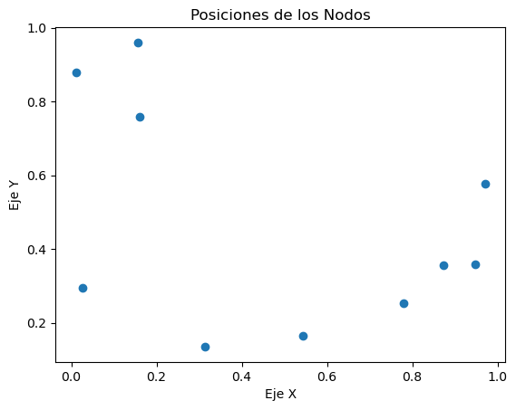
</div>
</div>
</section>
</section>
</section>

    <script type="text/x-thebe-config">
    {
        requestKernel: true,
        binderOptions: {
            repo: "binder-examples/jupyter-stacks-datascience",
            ref: "master",
        },
        codeMirrorConfig: {
            theme: "abcdef",
            mode: "python"
        },
        kernelOptions: {
            name: "python3",
            path: "./."
        },
        predefinedOutput: true
    }
    </script>
    <script>kernelName = 'python3'</script>

                </article>
              

              
              
              
              
                <footer class="prev-next-footer d-print-none">
                  
<div class="prev-next-area">
</div>
                </footer>
              
            </div>
            
            
              
                <div class="bd-sidebar-secondary bd-toc"><div class="sidebar-secondary-items sidebar-secondary__inner">


  <div class="sidebar-secondary-item">
  <div class="page-toc tocsection onthispage">
    <i class="fa-solid fa-list"></i> Contents
  </div>
  <nav class="bd-toc-nav page-toc">
    <ul class="visible nav section-nav flex-column">
<li class="toc-h1 nav-item toc-entry"><a class="reference internal nav-link" href="#">Logistic management desde python y google colab</a></li>
<li class="toc-h1 nav-item toc-entry"><a class="reference internal nav-link" href="#unidad-cero-componentes-tipicos-de-la-logistica">Unidad Cero: Componentes tipicos de la Logistica:</a><ul class="visible nav section-nav flex-column">
<li class="toc-h2 nav-item toc-entry"><a class="reference internal nav-link" href="#cual-es-la-mision-de-la-logistica">¿Cual es la mision de la logistica?:</a></li>
</ul>
</li>
<li class="toc-h1 nav-item toc-entry"><a class="reference internal nav-link" href="#unidad-uno-servicio-al-cliente">Unidad uno: Servicio Al CLiente</a><ul class="visible nav section-nav flex-column">
<li class="toc-h2 nav-item toc-entry"><a class="reference internal nav-link" href="#enfoque-en-el-servicio-al-cliente">Enfoque en el Servicio al Cliente:</a><ul class="nav section-nav flex-column">
<li class="toc-h3 nav-item toc-entry"><a class="reference internal nav-link" href="#que-es-el-servicio-al-cliente-en-el-contexto-de-la-logistica">Qué es el servicio al cliente en el contexto de la logística.</a></li>
<li class="toc-h3 nav-item toc-entry"><a class="reference internal nav-link" href="#objetivos-clave-del-servicio-al-cliente">Objetivos clave del servicio al cliente</a></li>
<li class="toc-h3 nav-item toc-entry"><a class="reference internal nav-link" href="#como-se-mide-la-satisfaccion-del-cliente-en-una-empresa">¿Cómo se mide la satisfacción del cliente en una empresa?</a></li>
</ul>
</li>
</ul>
</li>
<li class="toc-h1 nav-item toc-entry"><a class="reference internal nav-link" href="#unidad-dos-modelos-de-inventario-deterministicos">Unidad Dos: Modelos de inventario Deterministicos:</a><ul class="visible nav section-nav flex-column">
<li class="toc-h2 nav-item toc-entry"><a class="reference internal nav-link" href="#definicion-de-modelos-de-inventario">Definicion de modelos de inventario</a></li>
<li class="toc-h2 nav-item toc-entry"><a class="reference internal nav-link" href="#google-colab-y-los-modelos-de-inventarios">Google colab y los modelos de inventarios:</a></li>
<li class="toc-h2 nav-item toc-entry"><a class="reference internal nav-link" href="#empezaremos-por-el-modelo-eoq-tambien-llamado-modelos-estaticos">empezaremos por el modelo EOQ tambien llamado modelos estaticos.</a><ul class="nav section-nav flex-column">
<li class="toc-h3 nav-item toc-entry"><a class="reference internal nav-link" href="#rol-roq-lead-time-y-safety-stock-en-los-modelos-de-inventarios-deterministicos">ROL/ROQ , Lead time y Safety stock en los modelos de inventarios Deterministicos.</a></li>
</ul>
</li>
<li class="toc-h2 nav-item toc-entry"><a class="reference internal nav-link" href="#ejemplo-numero-uno">Ejemplo numero uno:</a><ul class="nav section-nav flex-column">
<li class="toc-h3 nav-item toc-entry"><a class="reference internal nav-link" href="#intentemos-graficar-el-comportamiento-de-un-inventario-en-el-tiempo-usando-colab">Intentemos graficar el comportamiento de un inventario en el tiempo usando colab</a></li>
</ul>
</li>
<li class="toc-h2 nav-item toc-entry"><a class="reference internal nav-link" href="#ejercicios-de-practica-del-modelo-de-inventario">Ejercicios de Practica del modelo de inventario</a></li>
<li class="toc-h2 nav-item toc-entry"><a class="reference internal nav-link" href="#ejercicios-eoq">Ejercicios EOQ</a><ul class="nav section-nav flex-column">
<li class="toc-h3 nav-item toc-entry"><a class="reference internal nav-link" href="#ejercicio-numero-1">Ejercicio Numero 1</a></li>
<li class="toc-h3 nav-item toc-entry"><a class="reference internal nav-link" href="#ejercicio-numero-2">Ejercicio Numero 2</a></li>
<li class="toc-h3 nav-item toc-entry"><a class="reference internal nav-link" href="#ejercicio-numero-3">Ejercicio Numero 3</a></li>
<li class="toc-h3 nav-item toc-entry"><a class="reference internal nav-link" href="#ejercicio-numero-4">Ejercicio Numero 4</a></li>
<li class="toc-h3 nav-item toc-entry"><a class="reference internal nav-link" href="#ejercicio-numero-5">Ejercicio Numero 5</a></li>
<li class="toc-h3 nav-item toc-entry"><a class="reference internal nav-link" href="#ejercicio-numero-6">Ejercicio Numero 6</a></li>
<li class="toc-h3 nav-item toc-entry"><a class="reference internal nav-link" href="#ejercicio-numero-7">Ejercicio Numero 7</a></li>
<li class="toc-h3 nav-item toc-entry"><a class="reference internal nav-link" href="#ejercicio-numero-8">Ejercicio Numero 8</a></li>
<li class="toc-h3 nav-item toc-entry"><a class="reference internal nav-link" href="#ejercicio-de-inventario-con-modelamiento-matematico-en-python">Ejercicio de inventario con modelamiento matematico en python</a></li>
</ul>
</li>
<li class="toc-h2 nav-item toc-entry"><a class="reference internal nav-link" href="#epq-model">EPQ Model</a><ul class="nav section-nav flex-column">
<li class="toc-h3 nav-item toc-entry"><a class="reference internal nav-link" href="#ejemplo-epq">Ejemplo EPQ</a></li>
<li class="toc-h3 nav-item toc-entry"><a class="reference internal nav-link" href="#gestion-de-inventarios-y-abastecimiento">gestion de inventarios y abastecimiento:</a></li>
</ul>
</li>
</ul>
</li>
<li class="toc-h1 nav-item toc-entry"><a class="reference internal nav-link" href="#unidad-tres-modelos-de-transporte">Unidad tres: Modelos de Transporte</a><ul class="visible nav section-nav flex-column">
<li class="toc-h2 nav-item toc-entry"><a class="reference internal nav-link" href="#variables-de-decision-clave">Variables de Decisión Clave</a></li>
<li class="toc-h2 nav-item toc-entry"><a class="reference internal nav-link" href="#representacion-grafica-de-los-modelos-de-transporte-en-progranacion-lineal">Representacion grafica de los modelos de transporte en Progranacion lineal</a></li>
<li class="toc-h2 nav-item toc-entry"><a class="reference internal nav-link" href="#principio-de-nivelacion">Principio de nivelacion:</a></li>
<li class="toc-h2 nav-item toc-entry"><a class="reference internal nav-link" href="#definicion-del-modelo-de-transporte"><strong>Definicion del modelo de Transporte:</strong></a><ul class="nav section-nav flex-column">
<li class="toc-h3 nav-item toc-entry"><a class="reference internal nav-link" href="#diseno-de-rutas-con-python">Diseño de rutas con python</a><ul class="nav section-nav flex-column">
<li class="toc-h4 nav-item toc-entry"><a class="reference internal nav-link" href="#objetivo-de-disenar-una-ruta">Objetivo de diseñar una ruta</a></li>
<li class="toc-h4 nav-item toc-entry"><a class="reference internal nav-link" href="#modelos-de-rutas">Modelos de rutas:</a></li>
</ul>
</li>
<li class="toc-h3 nav-item toc-entry"><a class="reference internal nav-link" href="#ejemplo-1">Ejemplo 1:</a></li>
<li class="toc-h3 nav-item toc-entry"><a class="reference internal nav-link" href="#ejemplo-2">Ejemplo 2:</a></li>
<li class="toc-h3 nav-item toc-entry"><a class="reference internal nav-link" href="#ejercicios-de-la-unidad-tres">Ejercicios de la Unidad Tres.</a></li>
<li class="toc-h3 nav-item toc-entry"><a class="reference internal nav-link" href="#ejercicio-numero-6-del-libro-hamndy-taha-investigacion-de-operaciones-capituo-5">Ejercicio numero 6 del libro hamndy taha - investigacion de operaciones capituo 5</a></li>
<li class="toc-h3 nav-item toc-entry"><a class="reference internal nav-link" href="#modelo-algebraico">Modelo Algebraico</a><ul class="nav section-nav flex-column">
<li class="toc-h4 nav-item toc-entry"><a class="reference internal nav-link" href="#solucion-a-los-ejercicios">Solucion a los ejercicios:</a><ul class="nav section-nav flex-column">
<li class="toc-h5 nav-item toc-entry"><a class="reference internal nav-link" href="#ejercicio-numero-uno">Ejercicio numero uno:</a></li>
<li class="toc-h5 nav-item toc-entry"><a class="reference internal nav-link" href="#ejercicio-numero-dos">Ejercicio Numero Dos</a></li>
<li class="toc-h5 nav-item toc-entry"><a class="reference internal nav-link" href="#ejercicio-numero-tres">Ejercicio numero Tres</a></li>
<li class="toc-h5 nav-item toc-entry"><a class="reference internal nav-link" href="#ejercicio-numero-cuatro">Ejercicio Numero Cuatro</a></li>
<li class="toc-h5 nav-item toc-entry"><a class="reference internal nav-link" href="#ejercicio-numero-cinco">Ejercicio Numero Cinco</a></li>
</ul>
</li>
</ul>
</li>
</ul>
</li>
<li class="toc-h2 nav-item toc-entry"><a class="reference internal nav-link" href="#vrp-vehicle-routing-problems">VRP. Vehicle Routing Problems</a><ul class="nav section-nav flex-column">
<li class="toc-h3 nav-item toc-entry"><a class="reference internal nav-link" href="#modelo-teorico-del-vrp">Modelo Teórico del VRP:</a><ul class="nav section-nav flex-column">
<li class="toc-h4 nav-item toc-entry"><a class="reference internal nav-link" href="#datos-del-problema">Datos del Problema:</a></li>
<li class="toc-h4 nav-item toc-entry"><a class="reference internal nav-link" href="#variables-de-decision">Variables de Decisión:</a></li>
<li class="toc-h4 nav-item toc-entry"><a class="reference internal nav-link" href="#funcion-objetivo">Función Objetivo:</a></li>
<li class="toc-h4 nav-item toc-entry"><a class="reference internal nav-link" href="#restricciones">Restricciones:</a></li>
</ul>
</li>
<li class="toc-h3 nav-item toc-entry"><a class="reference internal nav-link" href="#ejemplo-de-vrp-clasico">Ejemplo de VRP Clasico</a></li>
</ul>
</li>
<li class="toc-h2 nav-item toc-entry"><a class="reference internal nav-link" href="#el-modelo-de-transbordo">El modelo de Transbordo</a><ul class="nav section-nav flex-column">
<li class="toc-h3 nav-item toc-entry"><a class="reference internal nav-link" href="#almacenamiento-en-bodegas-o-cedis">Almacenamiento en Bodegas o CEDIS</a><ul class="nav section-nav flex-column">
<li class="toc-h4 nav-item toc-entry"><a class="reference internal nav-link" href="#definiciones">Definiciones:</a></li>
<li class="toc-h4 nav-item toc-entry"><a class="reference internal nav-link" href="#sistemas-de-alamcenamiento-en-cedis">Sistemas de Alamcenamiento en CEDIS</a></li>
</ul>
</li>
<li class="toc-h3 nav-item toc-entry"><a class="reference internal nav-link" href="#modelos-para-solucionar-los-problemas-de-asignacion-y-transporte">Modelos para solucionar los problemas de asignacion y transporte</a><ul class="nav section-nav flex-column">
<li class="toc-h4 nav-item toc-entry"><a class="reference internal nav-link" href="#pasos-del-metodo-de-asignacion">Pasos del método de asignación:</a></li>
</ul>
</li>
</ul>
</li>
<li class="toc-h2 nav-item toc-entry"><a class="reference internal nav-link" href="#modelo-de-redes">Modelo de redes</a></li>
<li class="toc-h2 nav-item toc-entry"><a class="reference internal nav-link" href="#altogoritmo-de-arbol-de-expansion-minima">Altogoritmo de Arbol de expansion Minima</a><ul class="nav section-nav flex-column">
<li class="toc-h3 nav-item toc-entry"><a class="reference internal nav-link" href="#modelo-teorico-segun-el-algoritmo-de-prim">Modelo Teórico según el Algoritmo de Prim:</a></li>
<li class="toc-h3 nav-item toc-entry"><a class="reference internal nav-link" href="#modelo-teorico-segun-el-altgoritmo-de-kruskal">Modelo Teórico según el Altgoritmo de Kruskal:</a></li>
</ul>
</li>
</ul>
</li>
<li class="toc-h1 nav-item toc-entry"><a class="reference internal nav-link" href="#unidad-cuatro-modelos-de-localizacion">Unidad Cuatro: Modelos de Localizacion</a><ul class="visible nav section-nav flex-column">
<li class="toc-h2 nav-item toc-entry"><a class="reference internal nav-link" href="#definicion-de-modelos-de-localizacion">Definicion de modelos de localizacion</a></li>
<li class="toc-h2 nav-item toc-entry"><a class="reference internal nav-link" href="#localizacion-de-planta">localización de planta</a></li>
<li class="toc-h2 nav-item toc-entry"><a class="reference internal nav-link" href="#metodo-grafico-de-localizacion">Metodo grafico de localizacion</a></li>
</ul>
</li>
<li class="toc-h1 nav-item toc-entry"><a class="reference internal nav-link" href="#unidad-cinco-supply-chain-models-and-methods">Unidad Cinco: supply chain models and methods.</a></li>
<li class="toc-h1 nav-item toc-entry"><a class="reference internal nav-link" href="#unidad-seis-diseno-y-medicion-de-la-cadena-logistica">Unidad Seis: Diseño y medicion de la cadena logistica</a><ul class="visible nav section-nav flex-column">
<li class="toc-h2 nav-item toc-entry"><a class="reference internal nav-link" href="#deficiones">Deficiones</a></li>
<li class="toc-h2 nav-item toc-entry"><a class="reference internal nav-link" href="#aproximacion-de-la-medicion-de-la-cadena-de-suministro-con-la-planificacion-de-produccion-agregada">aproximacion de la medicion de la cadena de suministro con la Planificación de producción agregada</a></li>
<li class="toc-h2 nav-item toc-entry"><a class="reference internal nav-link" href="#modelos-especiales">Modelos especiales</a><ul class="nav section-nav flex-column">
<li class="toc-h3 nav-item toc-entry"><a class="reference internal nav-link" href="#modelo-interactivo-eoq">Modelo Interactivo EOQ</a></li>
<li class="toc-h3 nav-item toc-entry"><a class="reference internal nav-link" href="#modelo-interactivo-poq-python">modelo interactivo POQ - python</a></li>
<li class="toc-h3 nav-item toc-entry"><a class="reference internal nav-link" href="#modelo-de-asignacion-de-rutas-aleatorias">Modelo de asignacion de rutas aleatorias</a></li>
</ul>
</li>
</ul>
</li>
</ul>

  </nav></div>

</div></div>
              
            
          </div>
          <footer class="bd-footer-content">
            
<div class="bd-footer-content__inner container">
  
  <div class="footer-item">
    
<p class="component-author">
By The Jupyter Book community
</p>

  </div>
  
  <div class="footer-item">
    

  <p class="copyright">
    
      © Copyright 2023.
      <br/>
    
  </p>

  </div>
  
  <div class="footer-item">
    
  </div>
  
  <div class="footer-item">
    
  </div>
  
</div>
          </footer>
        

      </main>
    </div>
  </div>
  
  <!-- Scripts loaded after <body> so the DOM is not blocked -->
  <script src="_static/scripts/bootstrap.js?digest=dfe6caa3a7d634c4db9b"></script>
<script src="_static/scripts/pydata-sphinx-theme.js?digest=dfe6caa3a7d634c4db9b"></script>

  <footer class="bd-footer">
  </footer>
  </body>
</html>